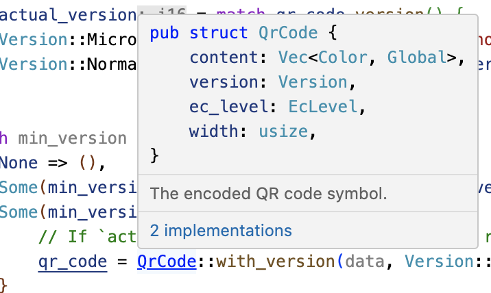

Te damos la bienvenida a Comprehensive Rust 🦀


Este es un curso gratuito de Rust desarrollado por el equipo de Android en Google. El curso abarca el espectro completo de Rust, desde la sintaxis básica hasta temas avanzados como genéricos y el manejo de errores.
La última versión del curso se puede encontrar en https://google.github.io/comprehensive-rust/. Si lo estás leyendo en otro lugar, consulta allí para obtener actualizaciones.
Este curso está disponible en otros idiomas. Selecciona tu idioma preferido en la esquina superior derecha o navega a la página de Traducciones para ver una lista de todas las traducciones disponibles.
Este curso tambien está disponible como un PDF.
El objetivo del curso es enseñarte Rust. Suponemos que no sabes nada sobre Rust y esperamos lograr lo siguiente:
- Ofrecerte una comprensión profunda de la sintaxis y el lenguaje Rust.
- Permitirte modificar programas de Rust y escribir otros nuevos.
- Enseñarte las prácticas idiomáticas de Rust.
Llamamos a los cuatro primeros días del curso Fundamentos de Rust.
Basándonos en esto, te invitamos a profundizar en uno o más temas especializados:
- Android: un curso de medio día sobre el uso de Rust en el desarrollo de la plataforma Android (AOSP). En él se incluye la interoperabilidad con C, C++ y Java.
- Chromium: una clase de medio día sobre el uso de Rust dentro del navegador Chromium. Incluye interoperabilidad con C++ y como incorporar bibliotecas de terceros (“crates”) en Chromium.
- Bare Metal: una clase de un día sobre el uso de Rust para el desarrollo bare-metal (insertado). Se tratarán tanto los microcontroladores como los procesadores de aplicaciones.
- Concurrencia: una clase de un día sobre concurrencia en Rust. Abordaremos tanto la concurrencia clásica (programación interrumpible mediante hilos y exclusiones mutuas), como la concurrencia async / await (multitarea cooperativa mediante traits future).
Objetivos que no trataremos
Rust es un lenguaje muy amplio y no podremos abarcarlo todo en unos pocos días. Algunos de los objetivos que no se plantean en este curso son los siguientes:
- Aprender a desarrollar macros: consulta el capítulo 19.5 del Libro de Rust y Rust by Example.
Suposiciones
El curso presupone que ya sabes programar. Rust es un lenguaje estáticamente tipado y, a veces, haremos comparaciones con C y C++ para explicarlo mejor o contrastar nuestro enfoque.
Si sabes programar en un lenguaje dinámicamente tipado, como Python o JavaScript, podrás seguir el ritmo sin problema.
Este es un ejemplo de una nota del orador. Las utilizaremos para añadir información adicional a las diapositivas. Puede tratarse de puntos clave que el instructor debería tratar, así como de respuestas a preguntas frecuentes que surgen en clase.
Desarrollo del curso
Esta página está dirigida al instructor del curso.
A continuación, te ofrecemos información general sobre cómo se ha desarrollado el curso en Google.
Normalmente impartimos las clases de 09:00 a 16:00, con una pausa para almorzar de una hora. Esto deja 3 horas para la clase de la mañana y 3 horas para la clase de la tarde. Ambas sesiones incluyen varias pausas y tiempo para que los estudiantes completen los ejercicios.
Antes de impartir el curso, te recomendamos hacer lo siguiente:
-
Familiarízate con el material del curso. Hemos incluido notas del orador para destacar los puntos clave (ayúdanos a añadir más notas de este tipo). Cuando hagas una presentación, asegúrate de abrir las notas del orador en una ventana emergente (haz clic en el enlace que tiene una pequeña flecha junto a “Notas del orador”). De esta manera, tendrás una pantalla despejada para mostrar a la clase.
-
Decide bien las fechas. Dado que el curso dura cuatro días, te recomendamos que repartas los días a lo largo de dos semanas. Los participantes del curso han dicho que les resulta útil hacer pausas durante el curso, ya que les ayuda a procesar toda la información que les proporcionamos.
-
Busca una sala con capacidad suficiente para los participantes presenciales. Recomendamos una sala para entre 15 y 25 personas. Es el tamaño ideal para que los alumnos se sientan cómodos haciendo preguntas y para que el profesor tenga tiempo de responderlas. Asegúrate de que en la sala haya mesas para ti y para los alumnos: todos necesitaréis sentaros y trabajar con vuestros portátiles. Además, como instructor, programarás mucho en directo, por lo que un atril no te resultará muy útil.
-
El mismo día del curso, llega con antelación a la clase para preparar todo lo necesario. Te recomendamos que realices la presentación directamente desde
mdbook serveen tu portátil (consulta las [instrucciones de instalación][3]). Así conseguirás un rendimiento óptimo y que no haya demoras al pasar de una página a otra. También podrás corregir las erratas a medida que tú o los participantes del curso las detectéis. -
Deja que los alumnos resuelvan los ejercicios por sí mismos o en pequeños grupos. Solemos dedicar entre 30 y 45 minutos a los ejercicios por la mañana y por la tarde (incluido el tiempo para revisar las soluciones). Asegúrate de preguntar a los asistentes si les está costando hacerlo o si hay algo en lo que puedas ayudarles. Cuando veas que varias personas tienen el mismo problema, coméntalo delante de la clase y ofrece una solución. Por ejemplo, enséñales dónde encontrar la información importante en la biblioteca estándar.
Eso es todo. ¡Buena suerte con el curso, y esperamos que te diviertas tanto como nosotros!
Después, envíanos un comentario para que podamos seguir mejorando el curso. Estaremos encantados de que nos cuentes qué aspectos destacarías y qué se puede mejorar. Tus alumnos también pueden enviarnos sus sugerencias!
Estructura del curso
Esta página está dirigida al instructor del curso.
Fundamentos de Rust
Los primeros cuatro días forman los Fundamentos de Rust. ¡Los días son muy intensos y cubrimos mucho terreno!
Horario del curso:
- Día 1 por la mañana (2 horas y 5 minutos, incluidos los descansos)
| Sección | Duración |
|---|---|
| Te damos la bienvenida | 5 minutos |
| Hola, Mundo | 15 minutos |
| Tipos y valores | 40 minutos |
| Conceptos básicos del flujo de control | 40 minutos |
- Día 1 por la tarde (2 horas y 35 minutos, incluidos los descansos)
| Sección | Duración |
|---|---|
| Tuplas y arrays | 35 minutos |
| Referencias | 55 minutos |
| Tipos definidos por el usuario | 50 minutos |
- Día 2 por la mañana (2 horas y 10 minutos, incluidos los descansos)
| Sección | Duración |
|---|---|
| Te damos la bienvenida | 3 minutos |
| Correspondencia de Patrones | 1 hora |
| Métodos y Traits | 50 minutos |
- Día 2 por la tarde (3 horas y 15 minutos, incluidos los descansos)
| Sección | Duración |
|---|---|
| Genéricos | 45 minutos |
| Tipos de la Biblioteca Estándar | 1 hora |
| Traits de la biblioteca estándar | 1 hora y 10 minutos |
- Día 3 por la mañana (2 horas y 20 minutos, incluidos los descansos)
| Sección | Duración |
|---|---|
| Te damos la bienvenida | 3 minutos |
| Manejo de Memoria | 1 hora |
| Punteros inteligentes | 55 minutos |
- Día 3 por la tarde (1 hora y 55 minutos, incluidos los descansos)
| Sección | Duración |
|---|---|
| Préstamos (Borrowing) | 55 minutos |
| Duraciones de vida | 50 minutos |
- Día 4 por la mañana (2 horas y 40 minutos, incluidos los descansos)
| Sección | Duración |
|---|---|
| Te damos la bienvenida | 3 minutos |
| Iteradores | 45 minutos |
| Módulos | 40 minutos |
| Probando | 45 minutos |
- Día 4 por la tarde (2 horas y 15 minutos, incluidos los descansos)
| Sección | Duración |
|---|---|
| Manejo de Errores | 1 hora |
| Unsafe Rust | 1 hora y 5 minutos |
Información más detallada
Además de la clase de 4 días sobre los fundamentos de Rust, abordamos algunos temas más especializados:
Rust en Android
Rust en Android es un curso de medio día sobre el uso de Rust para el desarrollo de la plataforma Android. En él se incluye la interoperabilidad con C, C++ y Java.
Necesitarás conseguir el AOSP. Descarga el repositorio del curso en el mismo ordenador y mueve el directorio src/android/ a la raíz del AOSP. De esta forma, el sistema de compilación de Android verá los archivos Android.bp en src/android/.
Asegúrate de que adb sync funcione con tu emulador o dispositivo real y precompila todos los ejemplos de Android usando src/android/build_all.sh. Lee el script para ver los comandos que corren y asegúrate de que funcionan cuando lo corres a mano.
Rust en Chromium
Rust en Chromium es una clase en profundidad de medio día sobre el uso de Rust como parte del navegador Chromium. Incluye el uso de Rust en el sistema de compilación gn de Chromium e incorpora bibliotecas de terceros (“crates”) e interoperabilidad en C++.
Deberás poder compilar Chromium: [recomendamos] una compilación de depuración de componentes (../chromium/setup.md) por cuestiones de velocidad, pero cualquier compilación funcionará de forma correcta. Asegúrate de que puedes ejecutar el navegador Chromium que has compilado.
Bare Metal Rust
Bare Metal Rust es una clase de un día sobre cómo usar Rust para el desarrollo bare-metal (insertado). Se tratarán tanto microcontroladores como procesadores de aplicaciones.
Para la parte de los microcontroladores, necesitarás comprar con antelación la segunda versión de la placa programable BBC micro:bit. Todo el mundo deberá instalar una serie de paquetes, tal como se describe en la página de bienvenida.
Concurrencia en Rust
Concurrencia en profundidad es una clase de un día sobre la concurrencia clásica y la concurrencia async/await.
Necesitarás configurar un nuevo crate, y descargar y preparar las dependencias. A continuación, podrás copiar y pegar los ejemplos en src/main.rs para experimentar con ellos:
cargo init concurrency
cd concurrency
cargo add tokio --features full
cargo run
Horario del curso:
- Mañana (3 horas y 20 minutos, incluidos los descansos)
| Sección | Duración |
|---|---|
| Hilos | 30 minutos |
| Canales | 20 minutos |
| Send y Sync | 15 minutos |
| Estado compartido | 30 minutos |
| Ejercicios | 1 hora y 10 minutos |
- Por la tarde (3 horas y 20 minutos, incluidos los descansos)
| Sección | Duración |
|---|---|
| Conceptos básicos de Async | 30 minutos |
| Canales y Control de Flujo | 20 minutos |
| Inconvenientes | 55 minutos |
| Ejercicios | 1 hora y 10 minutos |
Formato
El curso está diseñado para ser muy interactivo, por lo que te recomendamos que dejes que las preguntas guíen el aprendizaje de Rust.
Combinaciones de teclas
Existen varias combinaciones de teclas útiles en mdBook:
- Arrow-Left: Navegar a la página anterior.
- Arrow-Right: Navegar a la siguiente página.
- Ctrl + Enter: Ejecutar el código de ejemplo seleccionado.
- s: Activar la barra de búsqueda.
Traducciones
El curso se ha traducido a otros idiomas gracias a grupo de maravillosos voluntarios:
- Portugués Brasileño por @rastringer, @hugojacob, @joaovicmendes y @henrif75.
- Chino (simplificado) por @suetfei, @wnghl, @anlunx, @kongy, @noahdragon, @superwhd, @SketchK y @nodmp.
- Chino (tradicional) por @hueich, @victorhsieh, @mingyc, @kuanhungchen y @johnathan79717.
- Japonés por @CoinEZ-JPN, @momotaro1105, @HidenoriKobayashi y @kantasv.
- Coreano por @keispace, @jiyongp, @jooyunghan, y @namhyung.
- Español por @deavid.
- Ucranio por @git-user-cpp, @yaremam, y @reta.
Cambia el idioma con el seleccionador situado en la esquina superior derecha.
Traducciones Incompletas
Hay muchas traducciones todavía en curso. A continuación, incluimos enlaces a las traducciones más actualizadas:
- Árabe por @younies
- Bengalí por @raselmandol.
- Francés por @KookaS, @vcaen, y @AdrienBaudemont.
- Alemán por @Throvn y @ronaldfw.
- Italiano por @henrythebuilder y @detro.
La lista completa de traducciones con su estado actual también está disponible a partir de su última actualización o sincronizada con la versión más reciente del curso.
Si quieres ayudar en esta iniciativa, consulta nuestras instrucciones para empezar. Las traducciones se coordinan en la herramienta de seguimiento de incidencias.
Usando Cargo
Cuando empieces a informarte sobre Rust, conocerás Cargo, la herramienta estándar que se utiliza en el ecosistema de Rust para crear y ejecutar sus aplicaciones. En este artículo, te ofrecemos una breve descripción de lo que es Cargo, cómo se integra en el ecosistema más amplio y cómo encaja en esta formación.
Instalación
Sigue las instrucciones que se indican en https://rustup.rs/.
Esto te dará la herramienta de compilación Cargo (cargo) y el compilador Rust (rustc). También obtendrás rustup, una utilidad de línea de comandos que puedes utilizar para instalar diferentes versiones del compilador.
Después de instalar Rust, debes configurar tu editor o IDE para utilizar Rust. La mayoría de los editores lo hacen con rust-analyzer, que ofrece funciones de autocompletado y salto a la definición para VS Code, Emacs y Vim/Neovim, entre otros. También hay disponible otro IDE denominado RustRover.
-
En Debian o Ubuntu, también puedes instalar Cargo, el código fuente de Rust y el formateador de Rust a través de
apt. Sin embargo, solo podrás conseguir una versión de Rust obsoleta que podría dar lugar a comportamientos inesperados. El comando es el siguiente:sudo apt install cargo rust-src rustfmt -
En macOS, puedes usar Homebrew para instalar Rust, pero esto podría proveer una versión anticuada. Por lo tanto, es recomendad instalar Rust del sitio oficial.
El ecosistema de Rust
El ecosistema de Rust se compone de varias herramientas, entre las que se incluyen las siguientes:
-
rustc: el compilador de Rust que convierte archivos.rsen binarios y otros formatos intermedios. -
cargo: herramienta de compilación y gestión de dependencias de Rust. Cargo sabe cómo descargar dependencias, que normalmente se alojan en https://crates.io, y las transfiere arustcal crear el proyecto. Cargo también incorpora un ejecutor de pruebas que se utiliza para realizar pruebas unitarias. -
rustup: el instalador y actualizador de cadenas de herramientas de Rust. Esta herramienta se utiliza para instalar y actualizarrustcycargocuando se lanzan nuevas versiones de Rust. Además,rustuptambién puede descargar documentación de la biblioteca estándar. Puedes tener varias versiones de Rust instaladas a la vez yrustupte permitirá cambiar de una a otra según lo necesites.
Puntos clave:
-
Rust cuenta con un programa de lanzamiento rápido en el que se publica una nueva versión cada seis semanas. Las nuevas versiones mantienen la retrocompatibilidad con las versiones anteriores, además de habilitar nuevas funciones.
-
Hay tres canales de lanzamiento: “stable”, “beta” y “nightly”.
-
Las funciones nuevas se prueban en “nightly”, y “beta” es lo que se convierte en “estable” cada seis semanas.
-
Las dependencias también pueden resolverse desde [registros] alternativos, git, carpetas, etc.
-
Rust también tiene varias [ediciones]: la más actual es Rust 2021. Las ediciones anteriores son Rust 2015 y Rust 2018.
-
Las ediciones pueden introducir cambios de incompatibilidad con versiones anteriores en el lenguaje.
-
Para evitar que se rompa el código, las ediciones son opcionales: selecciona la edición para tu crate a través del archivo
Cargo.toml. -
Para evitar la división del ecosistema, los compiladores de Rust pueden mezclar el código escrito para distintas ediciones.
-
Hay que mencionar que es bastante raro utilizar el compilador directamente y no a través de
cargo(la mayoría de los usuarios nunca lo hacen). -
Vale la pena mencionar que Cargo en sí es una herramienta extremadamente poderosa e integral. Es capaz de hacer muchas cosas avanzadas y no limitadas a:
- Estructura del proyecto/paquete
- workspaces
- Manejo/Cache de Dependencias de Desarrollo y de Runtime
- build scripting
- Instalación global
- También es extensible con plugins de subcomandos (como cargo clippy).
-
Consulta más información en el libro oficial de Cargo
-
Código de ejemplo en esta formación
En esta formación, aprenderemos el lenguaje Rust principalmente con ejemplos que podrás ejecutar con tu navegador. De este modo, la configuración es mucho más sencilla y se asegura una experiencia homogénea para todos.
Se recomienda instalar Cargo, ya que facilitará la realización de los ejercicios. El último día realizaremos un ejercicio más largo en el que se mostrará cómo trabajar con dependencias, y para eso se necesita Cargo.
Los bloques de código de este curso son totalmente interactivos:
fn main() {
println!("¡Edítame!");
}Puedes usar Ctrl + Enter para ejecutar el código cuando el cursor esté en el cuadro de texto.
La mayoría de los códigos de ejemplo se pueden editar, como se muestra arriba, pero hay algunos que no se pueden editar por varios motivos:
-
Los playgrounds insertados no pueden ejecutar pruebas unitarias. Copia y pega el código y ábrelo en la página del playground para mostrar pruebas unitarias.
-
Los playgrounds insertados pierden su estado en cuanto sales e de la página. Por este motivo, los alumnos deben resolver los ejercicios con una versión local de Rust o a través del playground.
Ejecutar código de forma local con Cargo
Si quieres experimentar con el código en tu propio sistema, primero tendrás que instalar Rust. Para ello, sigue las instrucciones del Libro de Rust. De este modo, obtendrás un rustc y un cargo que funcionen. En el momento de escribir esto, la última versión estable de Rust tiene estos números de versión:
% rustc --version
rustc 1.69.0 (84c898d65 2023-04-16)
% cargo --version
cargo 1.69.0 (6e9a83356 2023-04-12)
También puedes usar cualquier versión posterior, ya que Rust mantiene la retrocompatibilidad.
Una vez hecho lo anterior, sigue estos pasos para compilar un binario de Rust a partir de uno de los ejemplos de la formación:
-
Haz clic en el botón “Copiar en el portapapeles” del ejemplo que quieras copiar.
-
Usa
cargo new exercisepara crear un directorioexercise/para tu código:$ cargo new exercise Created binary (application) `exercise` package -
Ve a
exercise/y usacargo runpara compilar y ejecutar tu binario:$ cd exercise $ cargo run Compiling exercise v0.1.0 (/home/mgeisler/tmp/exercise) Finished dev [unoptimized + debuginfo] target(s) in 0.75s Running `target/debug/exercise` Hello, world! -
Sustituye el código de plantilla en
src/main.rscon tu propio código. Por ejemplo, usando el ejemplo de la página anterior, haz quesrc/main.rstenga el siguiente aspecto:fn main() { println!("¡Edítame!"); } -
Usa
cargo runpara hacer build y ejecutar tu binario actualizado:$ cargo run Compiling exercise v0.1.0 (/home/mgeisler/tmp/exercise) Finished dev [unoptimized + debuginfo] target(s) in 0.24s Running `target/debug/exercise` Edit me! -
Comprueba que no haya errores en el proyecto con
cargo check. Compílalo sin ejecutarlo concargo build. Encontrarás la salida entarget/debug/para una versión de depuración normal. Usacargo build --releasepara generar una compilación de lanzamiento optimizada entarget/release/. -
Edita
Cargo.tomlpara añadir dependencias a tu proyecto. Cuando ejecutes comandoscargo, se descargarán y compilarán automáticamente las dependencias que falten.
Anima a los participantes de la clase a instalar Cargo y utilizar un editor local. Les facilitará mucho las cosas, ya que dispondrán de un entorno de desarrollo normal.
Te damos la bienvenida al Día 1
Este es el primer día de Comprehensive Rust. Hoy trataremos muchos temas:
- Sintaxis básica de Rust: variables, tipos escalares y compuestos, enumeraciones (enums), estructuras (structs), referencias, funciones y métodos.
- Inferencia de tipos.
- Construcciones de flujos de control: bucles, condicionales, etc.
- Tipos definidos por el usuario: estructuras y enumeraciones.
- Coincidencia de patrones: desestructuración de enums, structs y arrays.
Horario
Contando con los descansos de 10 minutos, la duración prevista de la sesión es de unas 2 horas y 5 minutos. Esta sesión contiene:
| Sección | Duración |
|---|---|
| Te damos la bienvenida | 5 minutos |
| Hola, Mundo | 15 minutos |
| Tipos y valores | 40 minutos |
| Conceptos básicos del flujo de control | 40 minutos |
Recuerda a los alumnos lo siguiente:
- Deben hacer las preguntas cuando surgen, no las guarden hasta el final.
- El curso está diseñado para ser muy interactivo, ¡las discusiones son muy recomendadas!
- Como instructor, debes intentar llevar discusiones relevantes, por ejemplo, mantener los debates relacionados con cómo Rust hace las cosas frente a otros lenguajes. Puede ser difícil encontrar el equilibrio adecuado, pero es preferible pecar de permisivo con los debates, ya que involucran a la gente mucho más que una comunicación unidireccional.
- Las preguntas deberían ser sobre cosas acerca del contenido de los slides.
- Esto está perfecto! Repetir es una parte importante del aprendizaje. Recuerda que los slides son solo un soporte y tienes libertad de saltearlos cuando quieras.
El objetivo del primer día es mostrar los aspectos “básicos” de Rust que podrían tener paralelismos inmediatos con otros lenguajes de programación. A lo largo del curso se estudiarán los aspectos más avanzados de Rust.
Si estás impartiendo el curso en un aula, este un buen lugar para repasar el calendario. Debes tener en cuenta que hay un ejercicio al final de cada parte, seguido de una pausa. Organiza las sesiones de forma que se explique la solución del ejercicio después de la pausa. Las horas que se indican son una sugerencia para que el curso se ciña al horario establecido. ¡No dudes en modificar el calendario y hacer los cambios que consideres necesarios!
Hola, Mundo
Esta sección tiene una duración aproximada de 15 minutos y contiene:
| Diapositiva | Duración |
|---|---|
| ¿Qué es Rust? | 10 minutos |
| Ventajas de Rust | 3 minutos |
| Playground | 2 minutos |
¿Qué es Rust?
Rust es un nuevo lenguaje de programación que lanzó su versión 1.0 en el 2015:
- Rust es un lenguaje compilado estático similar a C++
rustcusa LLVM como backend.
- Rust es compatible con muchas plataformas y arquitecturas:
- x86, ARM, WebAssembly, …
- Linux, Mac, Windows, …
- Rust se utiliza en una gran variedad de dispositivos:
- firmware y cargadores de arranque,
- pantallas inteligentes,
- teléfonos móviles,
- ordenadores,
- servidores.
Rust satisface las mismas necesidades que C++:
- Gran flexibilidad.
- Nivel alto de control.
- Se puede reducir verticalmente a dispositivos muy limitados, como los microcontroladores.
- No tiene runtime ni garbage collection.
- Se centra en la fiabilidad y la seguridad sin sacrificar el rendimiento.
Ventajas de Rust
Estas son algunas de las ventajas competitivas de Rust:
-
Seguridad de la memoria durante el tiempo de compilación: se evitan clases completas de errores de memoria durante el tiempo de compilación
- No hay variables no inicializadas.
- No hay errores double free.
- No hay errores use-after-free.
- No hay punteros
NULL. - No se olvidan las exclusiones mutuas bloqueadas.
- No hay condiciones de carrera de datos entre hilos.
- No se invalidan los iteradores.
-
No hay comportamientos indefinidos en el tiempo de ejecución: es decir, una instrucción de Rust nunca queda sin especificar
- Se comprueban los límites de acceso a los arrays.
- Se define el desbordamiento de enteros (panic o wrap-around).
-
Características de los lenguajes modernos: es tan expresivo y ergonómico como los lenguajes de nivel superior
- Enumeraciones (Enums) y coincidencia de patrones.
- Genéricos.
- Sin overhead de FFI.
- Abstracciones sin coste.
- Excelentes errores de compilación.
- Gestor de dependencias integrado.
- Asistencia integrada para pruebas.
- Compatibilidad excelente con el protocolo del servidor de lenguaje.
No le dediques mucho tiempo a este punto. Todos estos aspectos se tratarán de forma más detallada más adelante.
Asegúrate de preguntar a la clase en qué lenguajes tienen experiencia. Dependiendo de la respuesta puedes destacar diferentes características de Rust:
-
Experiencia con C o C++: Rust elimina una clase completa de errores de runtime mediante el borrow checker. Obtienes un rendimiento similar al de C y C++, pero no tienes problemas de seguridad en la memoria. Además, obtienes un lenguaje moderno con elementos como la coincidencia de patrones y la gestión de dependencias integrado.
-
Experiencia con Java, Go, Python, JavaScript, etc.: Consigues la misma seguridad de memoria que en éstos lenguajes, además de una experiencia similar a la de un lenguaje de alto nivel. También consigues un rendimiento rápido y predecible como en C y C++ (sin recolector de memoria residual), así como acceso a hardware de bajo nivel (si lo necesitas).
Playground
El playground de Rust ofrece una forma sencilla de ejecutar programas cortos de Rust y es la base de los ejemplos y ejercicios de este curso. Prueba a ejecutar el programa “hello-world” con el que empieza. Incluye algunas funciones útiles:
-
En “Tools”, usa la opción
rustfmtpara dar formato al código de forma “estándar”. -
Rust cuenta con dos “perfiles” principales para generar código: Debug (comprobaciones adicionales del tiempo de ejecución, menor optimización) y Release (menos comprobaciones del tiempo de ejecución y mayor optimización). Puedes acceder a ellos haciendo clic en “Debug”, en la parte superior.
-
Si te interesa, utiliza la opción “ASM” en “…” para ver el código de ensamblado que se ha generado.
Cuando sea la hora del descanso, anima a los asistentes a abrir el playground para que experimenten un poco. Hazles saber que pueden mantener la pestaña abierta y probar cosas durante el resto del curso. Resulta especialmente útil para los participantes con un nivel avanzado que quieran obtener más información sobre las optimizaciones o el ensamblaje generado de Rust.
Tipos y valores
Esta sección tiene una duración aproximada de 40 minutos y contiene:
| Diapositiva | Duración |
|---|---|
| Hola, Mundo | 5 minutos |
| Variables | 5 minutos |
| Valores | 5 minutos |
| Aritmética | 3 minutos |
| Inferencia de tipos | 3 minutos |
| Ejercicio: Fibonacci | 15 minutos |
Hola, Mundo
Vamos a hablar del programa Rust más simple, un clásico Hola Mundo:
fn main() {
println!("Hola, 🌍");
}Lo que ves:
- Las funciones se introducen con
fn. - Los bloques se delimitan con llaves, como en C y C++.
- La función
maines el punto de entrada del programa. - Rust tiene macros higiénicas, como por ejemplo
println!. - Las cadenas de Rust están codificadas en UTF-8 y pueden contener caracteres Unicode.
Con esta diapositiva se intenta que los alumnos se sientan cómodos con el código de Rust. En los próximos tres días lo verán mucho, así que empezaremos con algo reconocible.
Puntos clave:
-
Rust es muy similar a otros lenguajes, como C, C++ o Java. Es imperativo y no intenta reinventar las cosas a menos que sea absolutamente necesario.
-
Rust es moderno y totalmente compatible con sistemas como Unicode.
-
Rust utiliza macros en situaciones en las que se desea un número variable de argumentos (sin sobrecarga de funciones).
-
Que las macros sean ‘higiénicas’ significa que no capturan accidentalmenteidentificadores del ámbito en el que se utilizan. En realidad, las macros de Rust solo son parcialmente higiénicas.
-
Rust es un lenguaje multiparadigma. Por ejemplo, cuenta con funciones de programación orientadas a objetos y, aunque no es un lenguaje funcional, incluye una serie de conceptos funcionales.
Variables
Rust ofrece seguridad de tipos mediante tipado estático. Los enlaces a variables son hechos con let:
fn main() {
let x: i32 = 10;
println!("x: {x}");
// x = 20;
// println!("x: {x}");
}-
Elimina el comentario de
x = 20para demostrar que las variables son inmutables de forma predeterminada. Añade la palabra clavemutpara que se puedan hacer cambios. -
En este ejemplo,
i32es el tipo de la variable. Se debe conocer durante el tiempo de compilación, pero la inferencia de tipos (véase más adelante) permite al programador omitirla en muchos casos.
Valores
A continuación, se muestran algunos tipos integrados básicos, así como la sintaxis de los valores literales de cada tipo.
| Tipos | Literales | |
|---|---|---|
| Enteros con signo | i8, i16, i32, i64, i128, isize | -10, 0, 1_000, 123_i64 |
| Enteros sin signo | u8, u16, u32, u64, u128, usize | 0, 123, 10_u16 |
| Números de coma flotante | f32, f64 | 3.14, -10.0e20, 2_f32 |
| Valores escalares Unicode | char | 'a', 'α', '∞' |
| Booleanos | bool | true, false |
Los tipos tienen la siguiente anchura:
iN,uNyfNtienen un ancho de N bits,isizeyusizetienen el ancho de un puntero,chartiene un tamaño de 32 bits,booltiene 8 bits de ancho.
Hay algunas sintaxis que no se han mostrado anteriormente:
- Todos guiones bajos en los números pueden no utilizarse, ya que solo sirven para facilitar la lectura. Por lo tanto,
1_000se puede escribir como1000(o10_00), y123_i64se puede escribir como123i64.
Aritmética
fn interproduct(a: i32, b: i32, c: i32) -> i32 {
return a * b + b * c + c * a;
}
fn main() {
println!("resultado: {}", interproduct(120, 100, 248));
}Es la primera vez que vemos una función distinta a main, pero el significado debería quedar claro: utiliza tres números enteros y devuelve uno. Más adelante, hablaremos sobre las funciones con más profundidad.
La aritmética es muy similar a otros idiomas, al igual que su precedencia.
¿Qué pasa con el desbordamiento de enteros? En C y C++, el desbordamiento de números enteros con signo no está definido, y podría tener diferentes resultados en diferentes plataformas o compiladores. En Rust sí está definido.
Cambia el i32 a i16 para observar un desbordamiento de un número entero, lo que da error (pánico) en una versión de depuración, pero lo envuelve en una compilación de lanzamiento. Hay otras opciones disponibles, como el desbordamiento, la saturación y el acarreo, a las que se accede mediante la sintaxis del método, por ejemplo, (a * b).saturating_add(b * c).saturating_add(c * a).
De hecho, el compilador detectará si existe un desbordamiento de expresiones constantes, por ello el ejemplo requiere una función independiente.
Inferencia de tipos
Rust consultará cómo se usa la variable para determinar el tipo:
fn takes_u32(x: u32) {
println!("u32: {x}");
}
fn takes_i8(y: i8) {
println!("i8: {y}");
}
fn main() {
let x = 10;
let y = 20;
takes_u32(x);
takes_i8(y);
// takes_u32(y);
}Esta diapositiva muestra cómo el compilador de Rust infiere tipos basándose en restricciones proporcionadas por declaraciones y usos de variables.
Es muy importante subrayar que las variables que se declaran así no son de un “tipo cualquiera” dinámico que pueda contener cualquier dato. El código máquina generado por tal declaración es idéntico a la declaración explícita de un tipo. El compilador hace el trabajo por nosotros y nos ayuda a escribir código más conciso.
Cuando ningún elemento restringe el tipo de un literal entero, Rust lo define de forma predeterminada como i32. A veces aparece como {integer} en los mensajes de error. Del mismo modo, los literales de punto flotante se definen como f64 de forma predeterminada.
fn main() {
let x = 3.14;
let y = 20;
assert_eq!(x, y);
// ERROR: no hay implementación para `{float} == {integer}`
}Ejercicio: Fibonacci
La secuencie de Fibonacci empieza con [0, 1]. Para n>1, el número de Fibonacci en la posición n se calcula de forma recursiva como la suma de los números de Fibonacci n-1 y n-2.
Escribe una función fib(n) que calcule el número n de Fibonacci. ¿Cuándo da error pánico esta función?
fn fib(n: u32) -> u32 {
if n < 2 {
// El caso base.
todo!("Implementar esto")
} else {
// El caso recursivo.
todo!("Implementar esto")
}
}
fn main() {
let n = 20;
println!("fib({n}) = {}", fib(n));
}Solución
fn fib(n: u32) -> u32 {
if n < 2 {
return n;
} else {
return fib(n - 1) + fib(n - 2);
}
}
fn main() {
let n = 20;
println!("fib({n}) = {}", fib(n));
}Conceptos básicos del flujo de control
Esta sección tiene una duración aproximada de 40 minutos y contiene:
| Diapositiva | Duración |
|---|---|
| Expresiones if | 4 minutos |
| Bucles | 5 minutos |
| break y continue | 4 minutos |
| Bloques y ámbitos | 5 minutos |
| Funciones | 3 minutos |
| Macros | 2 minutos |
| Ejercicio: secuencia de Collatz | 15 minutos |
Expresiones if
Puedes usar expresiones if de la misma forma que en otros lenguajes:
fn main() {
let x = 10;
if x == 0 {
println!("cero!");
} else if x < 100 {
println!("muy grande");
} else {
println!("enorme");
}
}Además, puedes utilizar if como expresión. La última expresión de cada bloque se convierte en el valor de la expresión if:
fn main() {
let x = 10;
let size = if x < 20 { "pequeño" } else { "grande" };
println!("tamaño del número: {}", size);
}Dado que if es una expresión y debe tener un tipo concreto, ambos de sus bloques de ramas deben tener el mismo tipo. En el segundo ejemplo, muestra lo que sucede al añadir ; después de "small".
Cuando se utiliza if en una expresión, esta debe tener un ; para separarla de la siguiente instrucción. Elimina ; antes de println! para ver el error del compilador.
Bucles
Hay tres palabras clave de bucle en Rust: while, loop y for:
Bucles while
La palabra clave while es muy similar a la de otros lenguajes y ejecuta el cuerpo del bucle mientras que la condición sea valida.
fn main() {
let mut x = 200;
while x >= 10 {
x = x / 2;
}
println!("x final: {x}");
}for
El bucle for itera sobre rangos de valores o las entradas de una colección:
fn main() {
for x in 1..5 {
println!("x: {x}");
}
for elem in [1, 2, 3, 4, 5] {
println!("elem: {elem}");
}
}- Los bucles
forutilizan un concepto llamado “iteradores” para iterar sobre diferentes tipos de rangos/colecciones. Los iteradores serán discutidos en mas detalle mas adelante. - Ten en cuenta que el bucle
forsolo se itera a4. Muestra la sintaxis1..=5para un intervalo inclusivo.
loop
El bucle loop repite hasta encontrar un break.
fn main() {
let mut i = 0;
loop {
i += 1;
println!("{i}");
if i > 100 {
break;
}
}
}break y continue
Si quieres iniciar inmediatamente la siguiente iteración, usa continue.
Si quieres salir de un bucle antes de que termine, usa break. Para loop, este puede tomar una expresión opcional que se vuelve el valor de la expresión loop.
fn main() {
let mut i = 0;
loop {
i += 1;
if i > 5 {
break;
}
if i % 2 == 0 {
continue;
}
println!("{}", i);
}
}Etiquetas
De forma opcional, tanto continue como break pueden utilizar un argumento de etiqueta para interrumpir los bucles anidados:
fn main() {
let s = [[5, 6, 7], [8, 9, 10], [21, 15, 32]];
let mut elements_searched = 0;
let target_value = 10;
'outer: for i in 0..=2 {
for j in 0..=2 {
elements_searched += 1;
if s[i][j] == target_value {
break 'outer;
}
}
}
print!("elementos buscados: {elements_searched}");
}- Ten en cuenta que
loopes la única construcción de bucle que devuelve un valor no trivial. Esto se debe a que es inevitable que se introduzca al menos una vez (a diferencia de los bucleswhileyfor).
Bloques y ámbitos
Bloques
En Rust, un bloque contiene una secuencia de expresiones delimitadas por llaves {}. Cada bloque tiene el tipo y valor de la última expresión del bloque:
fn main() {
let z = 13;
let x = {
let y = 10;
println!("y: {y}");
z - y
};
println!("x: {x}");
}Si la última expresión termina con ;, el tipo y el valor resultante será ().
- Puedes mostrar cómo cambia el valor del bloque cambiando su última línea. Por ejemplo, añade o quita un punto y coma, o utiliza la expresión
return.
Ámbitos y Shadowing
El ámbito de una variable se limita al bloque que la contiene.
Puedes sombrear variables, tanto las de ámbitos externos como las del propio ámbito:
fn main() {
let a = 10;
println!("antes: {a}");
{
let a = "hola";
println!("ámbito interno: {a}");
let a = true;
println!("sombreado en el ámbito interno: {a}");
}
println!("después: {a}");
}- Para demostrar que el ámbito de una variable está limitado, añade una
ben el bloque interno del último ejemplo y, a continuación, intenta acceder a ella desde fuera de ese bloque. - Definición: Shadowing (sombreado) es distinto de la mutación, ya que después de sombrear las ubicaciones de memoria de las dos variables existen al mismo tiempo. Ambas están disponibles bajo el mismo nombre, en función de dónde se utiliza en el código.
- Una variable sombreada puede tener un tipo diferente.
- Al principio, el sombreado no es fácil, pero resulta útil para conservar valores después de
.unwrap().
Funciones
fn gcd(a: u32, b: u32) -> u32 {
if b > 0 {
gcd(b, a % b)
} else {
a
}
}
fn main() {
println!("gcd: {}", gcd(143, 52));
}- Los parámetros de declaración van seguidos de un tipo (al contrario que en algunos lenguajes de programación) y, a continuación, de un tipo de resultado devuelto.
- La última expresión del cuerpo de una función (o de cualquier bloque) se convierte en el valor devuelto. Basta con omitir el carácter
;al final de la expresión. La palabra clavereturnpuede ser utilizado para devolver valores antes del fin de la función, pero la sintaxis de “valor desnudo” es idiomático al fin de una función. - Algunas funciones no devuelven ningún valor, devuelven el “tipo unitario”,
(). El compilador deducirá esto si se omite el tipo de retorno-> (). - El sobrecargo de funciones no existe en Rust – cada función tiene una única implementación.
- Siempre toma un número fijo de parámetros. No se admiten argumentos predeterminados. Las macros se pueden utilizar para admitir funciones variádicas.
- Siempre se utiliza un solo conjunto de tipos de parámetros. Estos tipos pueden ser genéricos, lo cual discutiremos mas tarde.
Macros
Las macros se amplían a código de Rust durante la compilación y pueden adoptar un número variable de argumentos. Se distinguen por utilizar un símbolo ! al final. La biblioteca estándar de Rust incluye una serie de macros útiles.
println!(format, ..)imprime una linea a la salida estándar (“standard output”), aplicando el formato descrito enstd::fmt.format!(format, ..)funciona igual queprintln!, pero devuelve el resultado en forma de cadena.dbg!(expression)registra el valor de la expresión y lo devuelve.todo!()marca un fragmento de código como no implementado todavía. Si se ejecuta, activará un error pánico.unreachable!()marca un fragmento de código como inaccesible. Si se ejecuta, activará un error pánico.
fn factorial(n: u32) -> u32 {
let mut product = 1;
for i in 1..=n {
product *= dbg!(i);
}
product
}
fn fizzbuzz(n: u32) -> u32 {
todo!()
}
fn main() {
let n = 4;
println!("{n}! = {}", factorial(n));
}El objetivo de esta sección es mostrar que existen estos elementos útiles y cómo usarlos. Por qué se definen como macros y a qué se expanden no es muy importante.
En el curso no se imparte la definición de macros, pero en una sección posterior se describirá el uso de las macros de derivación.
Ejercicio: secuencia de Collatz
La secuencia de Collatz se define de la siguiente manera, para n1 arbitrario mayor que cero:
- Si _ni_es 1, la secuencia termina en ni.
- Si ni es par, ni+1 = ni / 2.
- Si ni es impar, ni+1 = 3 * ni + 1.
Por ejemplo, empezando con n1 = 3:
- 3 es impar, entonces n2 = 3 * 3 + 1 = 10;
- 10 is par, entonces n3 = 10 / 2 = 5;
- 5 es impar, entonces n4 = 3 * 5 + 1 = 16;
- 16 es par, entonces n5 = 16 / 2 = 8;
- 8 es par, entonces n6 = 8 / 2 = 4;
- 44 es par, entonces n7 = 4 / 2 = 2;
- 2 es par, entonces n8 = 1; and
- la secuencia finaliza.
Escribe una función para calcular la longitud de la secuencia de Collatz para un número n inicial dado.
/// Determina la longitud de la secuencia de Collatz que empieza por `n`.
fn collatz_length(mut n: i32) -> u32 {
todo!("Implementar esto")
}
fn main() {
todo!("Implementar esto")
}Solución
/// Determina la longitud de la secuencia de Collatz que empieza por `n`.
fn collatz_length(mut n: i32) -> u32 {
let mut len = 1;
while n > 1 {
n = if n % 2 == 0 { n / 2 } else { 3 * n + 1 };
len += 1;
}
len
}
#[test]
fn test_collatz_length() {
assert_eq!(collatz_length(11), 15);
}
fn main() {
println!("Longitud: {}", collatz_length(11));
}Te damos la bienvenida
Contando con los descansos de 10 minutos, la duración prevista de la sesión es de unas 2 horas y 35 minutos. Contiene:
| Sección | Duración |
|---|---|
| Tuplas y arrays | 35 minutos |
| Referencias | 55 minutos |
| Tipos definidos por el usuario | 50 minutos |
Tuplas y arrays
Esta sección tiene una duración aproximada de 35 minutos. Contiene:
| Diapositiva | Duración |
|---|---|
| Arrays | 5 minutos |
| Tuplas | 5 minutos |
| Iteración de Arreglos (Arrays) | 3 minutos |
| Patrones y Desestructuración | 5 minutos |
| Ejercicio: arrays anidados | 15 minutos |
Arrays
fn main() {
let mut a: [i8; 10] = [42; 10];
a[5] = 0;
println!("a: {a:?}");
}-
Un valor del tipo array
[T; N]contieneN(una constante en tiempo de compilación) elementos del mismo tipoT. Ten en cuenta que la longitud del array es _parte de su tipo), lo que significa que[u8; 3]y[u8; 4]se consideran dos tipos diferentes. Los slices, que tienen un tamaño determinado al tiempo de ejecución, serán discutidos mas tarde. -
Prueba a acceder a un array que esté fuera de los límites. Los accesos a los arrays se comprueban en el tiempo de ejecución. Rust suele optimizar estas comprobaciones y se pueden evitar utilizando Rust inseguro.
-
Podemos usar literales para asignar valores a arrays.
-
La macro de impresión
println!solicita la implementación de depuración con el parámetro de formato?:{}ofrece la salida predeterminada y{:?}ofrece la salida de depuración. Tipos como números enteros y cadenas implementan la salida de depuración. Esto significa que tenemos que usar la salida de depuración en este caso. -
Si se añade
#, por ejemplo{a:#?}, se da formato al texto para facilitar la lectura.
Tuplas
fn main() {
let t: (i8, bool) = (7, true);
println!("t.0: {}", t.0);
println!("t.1: {}", t.1);
}-
Al igual que los arrays, las tuplas tienen una longitud fija.
-
Las tuplas agrupan valores de diferentes tipos en un tipo compuesto.
-
Se puede acceder a los campos de una tupla por el punto y el índice del valor, por ejemplo,
t.0,t.1. -
La tupla vacía
()es llamado el “tipo de unidad” y significa la ausencia de un valor de retorno, parecido avoiden otros lenguajes.
Iteración de Arreglos (Arrays)
La instrucción for permite iterar sobre arrays, pero no sobre tuplas.
fn main() {
let primes = [2, 3, 5, 7, 11, 13, 17, 19];
for prime in primes {
for i in 2..prime {
assert_ne!(prime % i, 0);
}
}
}Esta función usa el trait IntoIterator, pero aún no lo hemos estudiado.
La macro assert_ne! es nueva. También existen las macros assert_eq! y assert!. Estas variantes siempre se comprueban mientras las variantes de solo depuración, como debug_assert!, no compilan nada en las compilaciones de lanzamiento.
Patrones y Desestructuración
Cuando uno trabaja con tuplas y otros valores estructurados, es común querer extraer valores interiores a variables locales. Uno puede manualmente acceder los valores interiores:
fn print_tuple(tuple: (i32, i32)) {
let left = tuple.0;
let right = tuple.1;
println!("left: {left}, right: {right}");
}Rust también provee la coincidencia de patrones para destructurar un valor en sus partes constituyentes:
fn print_tuple(tuple: (i32, i32)) {
let (left, right) = tuple;
println!("left: {left}, right: {right}");
}- Los patrones usados aquí son “irrefutables”, es decir, que el compilador puede verificar estáticamente que el valor a la derecha del
=tiene la misma estructura que el patrón. - Un nombre de variable es un patrón irrefutable que siempre coincide con cualquier valor, así que también podemos usar
letpara declarar una sola variable. - Los patrones también se pueden usar en los condicionales, dejando que la comparación de igualdad y el desestructuramiento ocurren al mismo tiempo. Esta forma de coincidencia de patrones sera discutido mas a fondo mas tarde.
- Edita los ejemplos anteriores para enseñar el error de compilador cuando el patrón no coincide con el valor.
Ejercicio: arrays anidados
Los arrays pueden contener otros arrays:
#![allow(unused)]
fn main() {
let array = [[1, 2, 3], [4, 5, 6], [7, 8, 9]];
}¿Cuál es el tipo de esta variable?
Usa el método anterior para escribir una función transpose que transpone una matriz (convierte filas en columnas):
Copia el siguiente fragmento de código en https://play.rust-lang.org/ e implementa la función. Esta función solo opera sobre matrices 3x3.
// TODO: borra esto cuando termines de implementarlo.
#![allow(unused_variables, dead_code)]
fn transpose(matrix: [[i32; 3]; 3]) -> [[i32; 3]; 3] {
unimplemented!()
}
#[test]
fn test_transpose() {
let matrix = [
[101, 102, 103], //
[201, 202, 203],
[301, 302, 303],
];
let transposed = transpose(matrix);
assert_eq!(
transposed,
[
[101, 201, 301], //
[102, 202, 302],
[103, 203, 303],
]
);
}
fn main() {
let matrix = [
[101, 102, 103], // <-- el comentario hace que rustfmt añade una nueva línea
[201, 202, 203],
[301, 302, 303],
];
println!("matriz: {:#?}", matrix);
let transposed = transpose(matrix);
println!("traspuesto: {:#?}", transposed);
}Solución
fn transpose(matrix: [[i32; 3]; 3]) -> [[i32; 3]; 3] {
let mut result = [[0; 3]; 3];
for i in 0..3 {
for j in 0..3 {
result[j][i] = matrix[i][j];
}
}
result
}
#[test]
fn test_transpose() {
let matrix = [
[101, 102, 103], //
[201, 202, 203],
[301, 302, 303],
];
let transposed = transpose(matrix);
assert_eq!(
transposed,
[
[101, 201, 301], //
[102, 202, 302],
[103, 203, 303],
]
);
}
fn main() {
let matrix = [
[101, 102, 103], // <-- el comentario hace que rustfmt añade una nueva línea
[201, 202, 203],
[301, 302, 303],
];
println!("matriz: {:#?}", matrix);
let transposed = transpose(matrix);
println!("traspuesto: {:#?}", transposed);
}Referencias
Esta sección tiene una duración aproximada de 55 minutos. Contiene:
| Diapositiva | Duración |
|---|---|
| Referencias compartidas | 10 minutos |
| Referencias exclusivas | 10 minutos |
| Slices: &[T] | 10 minutos |
| Cadenas de texto (Strings) | 10 minutos |
| Ejercicio: geometría | 15 minutos |
Referencias compartidas
Una referencia ofrece una forma de acceder a otro valor sin asumir la responsabilidad del valor. También se denomina “préstamo”. Las referencias compartidas son de solo lectura y los datos a los que se hace referencia no pueden cambiar.
fn main() {
let a = 'A';
let b = 'B';
let mut r: &char = &a;
println!("r: {}", *r);
r = &b;
println!("r: {}", *r);
}Una referencia compartida a un tipo T tiene el tipo &T. Se crea un valor de referencia con el operador &. El operador * “desreferencia” una referencia, dando lugar a su valor.
Rust prohibirá estáticamente las referencias colgantes:
fn x_axis(x: &i32) -> &(i32, i32) {
let point = (*x, 0);
return &point;
}-
Se dice que una referencia “toma prestado” el valor al que hace referencia. Este es un buen modelo para los estudiantes que no están familiarizados con los punteros, ya que el código puede usar la referencia para acceder al valor, pero este sigue “perteneciendo” a la variable original. En el curso hablaremos con más profundidad sobre la propiedad el tercer día.
-
Las referencias se implementan como punteros y una ventaja clave es que pueden ser mucho más pequeñas del elemento al que apuntan. Los participantes que estén familiarizados con C o C++ reconocerán las referencias como punteros. A lo largo del curso, hablaremos sobre cómo Rust evita los errores de seguridad en la memoria derivados del uso de punteros sin formato.
-
Rust no crea referencias automáticamente,
&siempre es obligatorio. -
Rust realizará una desreferencia automática en algunos casos, en especial al invocar métodos (prueba
ref_x.count_ones()). No hay necesidad para un operador->como en C++. -
En este ejemplo,
res mutable para que se pueda reasignar (r = &b). Debes tener en cuenta que se vuelve a enlazarrpara que haga referencia a otro elemento. Es distinto de C++, donde la asignación a una referencia modifica el valor referenciado. -
Una referencia compartida no permite modificar el valor al que hace referencia, incluso aunque el valor sea mutable. Prueba con
*r = 'X'. -
Rust hace un seguimiento del tiempo de vida de todas las referencias para asegurarse de que duran lo suficiente. En Rust seguro no se dan referencias colgantes.
x_axisdevolvería una referencia apoint, peropointse desasignará cuando se devuelva la función, por lo que no se compilará. -
Más adelante hablaremos de los préstamos cuando lleguemos a la parte de propiedad.
Referencias exclusivas
Las referencias exclusivas, también denominadas referencias mutables, permiten cambiar el valor al que hacen referencia. Tienen el tipo &mut T.
fn main() {
let mut point = (1, 2);
let x_coord = &mut point.0;
*x_coord = 20;
println!("point: {point:?}");
}Puntos clave:
-
“Exclusivo” significa que solo se puede utilizar esta referencia para acceder al valor. No pueden existir otras referencias (compartidas o exclusivas) al mismo tiempo y no se puede acceder al valor de referencia mientras exista la referencia exclusiva. Prueba a ejecutar un
&point.0o a cambiarpoint.0mientrasx_coordestá activo. -
Ten en cuenta la diferencia entre
let mut x_coord: &i32ylet x_coord: &mut i32. La primera representa una referencia mutable que se puede vincular a distintos valores, mientras que la segunda representa una referencia a un valor mutable.
Slices
Un slice ofrece una visión de una colección más amplia:
fn main() {
let mut a: [i32; 6] = [10, 20, 30, 40, 50, 60];
println!("a: {a:?}");
let s: &[i32] = &a[2..4];
println!("s: {s:?}");
}- Los slices toman prestados datos del tipo slice.
- Pregunta: ¿Qué ocurre si se modifica
a[3]justo antes de imprimirs?
-
Creamos un slice tomando prestado
ay especificando entre paréntesis los índices de inicio y de fin. -
Si el slice comienza en el índice 0, la sintaxis de rango de Rust nos permite eliminar el índice inicial, lo que significa que
&a[0..a.len()]y&a[..a.len()]son idénticos. -
Lo mismo ocurre con el último índice, por lo que
&a[2..a.len()]y&a[2..]son idénticos. -
Para crear fácilmente un slice del array completo, podemos usar
&a[..]. -
ses una referencia a un slice dei32s. Ten en cuenta que el tipo des(&[i32]) ya no menciona la longitud del array. Esto nos permite realizar cálculos en slices de diferentes tamaños. -
Los slices siempre tienen préstamos de otros objetos. En este ejemplo,
atiene que permanecer “vivo” (en el ámbito) al menos durante el tiempo que dure el slice. -
La cuestión sobre la modificación de
a[3]puede suscitar un debate interesante, pero la respuesta es que, por razones de seguridad de memoria, no se puede hacer medianteaen este punto de la ejecución, pero sí se pueden leer los datos deaysde forma segura. Funciona antes de crear el slice y después deprintln, cuando el slice ya no se utiliza.
Cadenas de texto (Strings)
Ahora podemos entender los dos tipos de cadenas de Rust:
&stres un slice de bytes codificados en UTF-8, parecido a&[u8].Stringes un buffer adueñado de bytes codificados en UTF-8, parecido aVec<T>.
fn main() {
let s1: &str = "mundo";
println!("s1: {s1}");
let mut s2: String = String::from("¡Hola ");
println!("s2: {s2}");
s2.push_str(s1);
println!("s2: {s2}");
let s3: &str = &s2[s2.len() - s1.len()..];
println!("s3: {s3}");
}-
&strintroduce un slice de cadena, que es una referencia inmutable a los datos de cadena codificados en UTF-8 y almacenados en un bloque de memoria. Los literales de cadena ("Hello") se almacenan en el binario del programa. -
El tipo
Stringde Rust es un envoltorio que rodea a un vector de bytes. Como sucede conVec<T>, tiene propietario. -
Al igual que ocurre con muchos otros tipos,
String::from()crea una cadena a partir de un literal de cadena.String::new()crea una cadena vacía a la que se pueden añadir datos de cadena mediante los métodospush()ypush_str(). -
La macro
format!()es una forma práctica de generar una cadena propia a partir de valores dinámicos. Acepta la misma especificación de formato queprintln!(). -
Puedes tomar prestados slices
&strdeStringa través de&y, de forma opcional, la selección de intervalos. Si seleccionas un intervalo de bytes que no esté alineado con los límites de caracteres, la expresión activará un pánico. El iteradorcharsitera sobre los caracteres y se aconseja esta opción a intentar definir los límites de los caracteres correctamente. -
Para los programadores de C++: piensa en
&strcomo elconst char*de C++, pero uno que siempre apunta a una cadena válida en la memoria. ElStringde Rust es parecido astd::stringde C++ (la diferencia principal es que solo puede contener bytes codificados en UTF-8 y nunca utilizará una optimización de cadena pequeña). -
Los literales de cadenas de bytes te permiten crear un valor
&[u8]directamente:fn main() { println!("{:?}", b"abc"); println!("{:?}", &[97, 98, 99]); } -
Las cadenas sin formato te permiten crear un valor
&strcon los escapes inhabilitados:r"\n" == "\\n". Puedes insertar comillas dobles con la misma cantidad de#a cada lado de ellas:fn main() { println!(r#"<a href="link.html">link</a>"#); println!("<a href=\"link.html\">link</a>"); }
Ejercicio: geometría
Crearemos algunas funciones de utilidad para la geometría tridimensional representando un punto como [f64;3]. Debes decidir las firmas de las funciones.
// Calcula la magnitud de un vector sumando los cuadrados de sus coordenadas
// y sacando la raíz cuadrada. Usa el método `sqrt()` para calcular la raíz cuadrada
//, como `v.sqrt()`.
fn magnitude(...) -> f64 {
todo!()
}
// Normaliza un vector calculando su magnitud y dividiendo todas
// sus coordenadas entre esa magnitud.
fn normalize(...) {
todo!()
}
// Usa `main` para comprobar lo que has hecho.
fn main() {
println!("Magnitud de un vector unitario: {}", magnitude(&[0.0, 1.0, 0.0]));
let mut v = [1.0, 2.0, 9.0];
println!("Magnitud de {v:?}: {}", magnitude(&v));
normalize(&mut v);
println!("Magnitud de {v:?} después de la normalización: {}", magnitude(&v));
}Solución
/// Calcula la magnitud del vector dado.
fn magnitude(vector: &[f64; 3]) -> f64 {
let mut mag_squared = 0.0;
for coord in vector {
mag_squared += coord * coord;
}
mag_squared.sqrt()
}
/// Cambia la magnitud del vector a 1.0 sin cambiar su dirección.
fn normalize(vector: &mut [f64; 3]) {
let mag = magnitude(vector);
for item in vector {
*item /= mag;
}
}
fn main() {
println!("Magnitud de un vector unitario: {}", magnitude(&[0.0, 1.0, 0.0]));
let mut v = [1.0, 2.0, 9.0];
println!("Magnitud de {v:?}: {}", magnitude(&v));
normalize(&mut v);
println!("Magnitud de {v:?} después de la normalización: {}", magnitude(&v));
}Tipos definidos por el usuario
Esta sección tiene una duración aproximada de 50 minutos. Contiene:
| Diapositiva | Duración |
|---|---|
| Estructuras con nombre | 10 minutos |
| Estructuras de tuplas | 10 minutos |
| Enumeraciones | 5 minutos |
| Estático | 5 minutos |
| Aliases de tipo | 2 minutos |
| Ejercicio: eventos de ascensor | 15 minutos |
Estructuras con nombre
Al igual que C y C++, Rust admite estructuras (struct) personalizadas:
struct Person {
name: String,
age: u8,
}
fn describe(person: &Person) {
println!("{} tiene {} años", person.name, person.age);
}
fn main() {
let mut peter = Person { name: String::from("Peter"), age: 27 };
describe(&peter);
peter.age = 28;
describe(&peter);
let name = String::from("Avery");
let age = 39;
let avery = Person { name, age };
describe(&avery);
let jackie = Person { name: String::from("Jackie"), ..avery };
describe(&jackie);
}Puntos Clave:
- Las estructuras funcionan como en C o en C++.
- Al igual que en C++, y a diferencia de C, no se necesita typedef para definir un tipo.
- A diferencia de C++, no existe ninguna herencia entre las estructuras.
- Puede que sea un buen momento para indicar a los alumnos que existen diferentes tipos de estructuras.
- Las estructuras de tamaño cero, como
struct Foo;, se pueden utilizar al implementar un trait en algún tipo en cuyo valor no quieres almacenar datos. - La siguiente diapositiva presentará las estructuras de tuplas, que se utilizan cuando los nombres de los campos no son importantes.
- Las estructuras de tamaño cero, como
- Si ya dispones de variables con los nombres adecuados, puedes crear la estructura con un método abreviado.
- La sintaxis
..averynos permite copiar la mayoría de los campos de la estructura anterior sin tener que escribirlos explícitamente. Siempre debe ser el último elemento.
Estructuras de tuplas
Si los nombres de los campos no son importantes, puedes utilizar una estructura de tuplas:
struct Point(i32, i32);
fn main() {
let p = Point(17, 23);
println!("({}, {})", p.0, p.1);
}Esto se suele utilizar para envoltorios de campo único (denominados newtypes):
struct PoundsOfForce(f64);
struct Newtons(f64);
fn compute_thruster_force() -> PoundsOfForce {
todo!("Pregunta a un científico aeroespacial de la NASA")
}
fn set_thruster_force(force: Newtons) {
// ...
}
fn main() {
let force = compute_thruster_force();
set_thruster_force(force);
}- Los newtypes son una buena forma de codificar información adicional sobre el valor de un tipo primitivo, por ejemplo:
- El número se mide en algunas unidades:
Newtonsen el ejemplo anterior. - El valor ha pasado alguna validación cuando se ha creado, por lo que ya no tendrás que volver a validarlo cada vez que lo uses:
PhoneNumber(String)uOddNumber(u32).
- El número se mide en algunas unidades:
- Demuestra cómo se añade un valor
f64a un tipoNewtonsaccediendo al campo único del newtype.- Por lo general, a Rust no le gustan los elementos no explícitos, como el desenvolvimiento automático o, por ejemplo, el uso de booleanos como enteros.
- El día 3 (genéricos), se explicará la sobrecarga del operador.
- El ejemplo es una sutil referencia al fracaso de la sonda Mars Climate Orbiter.
Enumeraciones
La palabra clave enum permite crear un tipo que tiene diferentes variantes:
#[derive(Debug)]
enum Direction {
Left,
Right,
}
#[derive(Debug)]
enum PlayerMove {
Pass, // Variante simple
Run(Direction), // Variante de tupla
Teleport { x: u32, y: u32 }, // Variante de struct
}
fn main() {
let m: PlayerMove = PlayerMove::Run(Direction::Left);
println!("En este turno: {:?}", m);
}Puntos Clave:
- Las enumeraciones te permiten colectar un conjunto de valores en un solo tipo.
Directiones un tipo con variantes. Hay dos valores deDirection:Direction::LeftyDirection::Right.PlayerMovees un tipo con tres variantes. Además de las cargas útiles, Rust almacenará un discriminante para saber qué variante se encuentra en un valorPlayerMoveen el tiempo de ejecución.- Este es un buen momento para comparar las estructuras y las enumeraciones:
- En ambas puedes tener una versión sencilla sin campos (estructura unitaria) o una versión con distintos tipos de campos (variantes con carga útil).
- Incluso podrías implementar las distintas variantes de una enumeración con estructuras diferentes, pero entonces no serían del mismo tipo como lo serían si estuvieran todas definidas en una enumeración.
- Rust usa muy poco espacio para almacenar el discriminante.
-
Si es necesario, almacena un número entero del tamaño más pequeño requerido
-
Si los valores de la variante permitidos no cubren todos los patrones de bits, se utilizarán patrones de bits no válidos para codificar el discriminante (la “optimización de nicho”). Por ejemplo,
Option<&u8>almacena un puntero en un número entero oNULLpara la varianteNone. -
Puedes controlar el discriminante si es necesario (por ejemplo, para asegurar la compatibilidad con C):
#[repr(u32)] enum Bar { A, // 0 B = 10000, C, // 10001 } fn main() { println!("A: {}", Bar::A as u32); println!("B: {}", Bar::B as u32); println!("C: {}", Bar::C as u32); }Sin
repr, el tipo discriminante ocupa 2 bytes, debido a que 10001 se cabe en 2 bytes.
-
Más información
Rust cuenta con varias optimizaciones que puede utilizar para hacer que las enums ocupen menos espacio.
-
Optimización de puntero nulo: para algunos tipos, Rust asegura que
size_of::<T>()es igual asize_of::<Option<T> >().Fragmento de código de ejemplo si quieres mostrar cómo puede ser la representación bit a bit en la práctica. Es importante tener en cuenta que el compilador no ofrece garantías con respecto a esta representación, por lo tanto es totalmente inseguro.
use std::mem::transmute; macro_rules! dbg_bits { ($e:expr, $bit_type:ty) => { println!("- {}: {:#x}", stringify!($e), transmute::<_, $bit_type>($e)); }; } fn main() { unsafe { println!("bool:"); dbg_bits!(false, u8); dbg_bits!(true, u8); println!("Option<bool>:"); dbg_bits!(None::<bool>, u8); dbg_bits!(Some(false), u8); dbg_bits!(Some(true), u8); println!("Option<Option<bool>>:"); dbg_bits!(Some(Some(false)), u8); dbg_bits!(Some(Some(true)), u8); dbg_bits!(Some(None::<bool>), u8); dbg_bits!(None::<Option<bool>>, u8); println!("Option<&i32>:"); dbg_bits!(None::<&i32>, usize); dbg_bits!(Some(&0i32), usize); } }
static
Las variables estáticas vivirán durante toda la ejecución del programa y, por lo tanto, no se moverán:
static BANNER: &str = "Bienvenide a RustOS 3.14";
fn main() {
println!("{BANNER}");
}Tal y como se indica en el libro Rust RFC Book, estas no son insertadas y tienen una ubicación de memoria real asociada. Esto resulta útil para código insertado y no seguro. Además, la variable continúa durante toda la ejecución del programa. Cuando un valor de ámbito global no tiene ningún motivo para necesitar identidad de objeto, se suele preferir const.
- Por su parte,
staticse parece a una variable global mutable en C++. staticproporciona la identidad del objeto: una dirección en la memoria y en el estado que requieren los tipos con mutabilidad interior, comoMutex<T>.
Más información
Dado que se puede acceder a las variables static desde cualquier hilo, deben ser Sync. La mutabilidad interna es posible a través de un Mutex, atómico o parecido.
Datos locales al hilo se pueden crear con el macro std::thread_local.
const
Las variables constantes se evalúan en tiempo de compilación y sus valores se insertan donde sean utilizados:
const DIGEST_SIZE: usize = 3;
const ZERO: Option<u8> = Some(42);
fn compute_digest(text: &str) -> [u8; DIGEST_SIZE] {
let mut digest = [ZERO.unwrap_or(0); DIGEST_SIZE];
for (idx, &b) in text.as_bytes().iter().enumerate() {
digest[idx % DIGEST_SIZE] = digest[idx % DIGEST_SIZE].wrapping_add(b);
}
digest
}
fn main() {
let digest = compute_digest("Hello");
println!("digest: {digest:?}");
}Según el libro Rust RFC Book, se insertan cuando se utilizan.
Sólo se pueden llamar a las funciones marcadas como const en tiempo de compilación para generar valores const. Sin embargo, las funciones const se pueden llamar en runtime.
- Menciona que
constse comporta semánticamente de forma similar aconstexprde C++ - No es muy habitual que se necesite una constante evaluada en runtime, pero es útil y más seguro que usar una estática.
Aliases de tipo
Un alias de tipo crea un nombre para otro tipo. Ambos tipos se pueden utilizar indistintamente.
enum CarryableConcreteItem {
Left,
Right,
}
type Item = CarryableConcreteItem;
// Los alias resultan de más utilidad con tipos largos y complejos:
use std::cell::RefCell;
use std::sync::{Arc, RwLock};
type PlayerInventory = RwLock<Vec<Arc<RefCell<Item>>>>;Los programadores de C verán un parecido con typedef.
Ejercicio: eventos de ascensor
Crearemos una estructura de datos para representar un evento en un sistema de control de ascensores. Debes definir los tipos y las funciones para crear varios eventos. Usa #[derive(Debug)] para permitir que se aplique el formato {:?} a los tipos.
Para hacer este ejercicio solo es necesario crear y rellenar estructuras de datos de forma que main se ejecute sin errores. En la siguiente parte del curso veremos cómo extraer datos de estas estructuras.
#[derive(Debug)]
/// Un evento en el sistema de ascensores al que debe reaccionar el controlador.
enum Event {
// TAREAS: añadir variantes obligatorias
}
/// Un sentido de la marcha.
#[derive(Debug)]
enum Direction {
Up,
Down,
}
/// El ascensor ha llegado a la planta indicada.
fn car_arrived(floor: i32) -> Event {
todo!()
}
/// Las puertas del ascensor se han abierto.
fn car_door_opened() -> Event {
todo!()
}
/// Las puertas del ascensor se han cerrado.
fn car_door_closed() -> Event {
todo!()
}
/// Se ha pulsado el botón direccional de un ascensor en la planta indicada.
fn lobby_call_button_pressed(floor: i32, dir: Direction) -> Event {
todo!()
}
/// Se ha pulsado el botón de una planta en el ascensor.
fn car_floor_button_pressed(floor: i32) -> Event {
todo!()
}
fn main() {
println!(
"Un pasajero de la planta baja ha pulsado el botón para ir hacia arriba: {:?}",
lobby_call_button_pressed(0, Direction::Up)
);
println!("El ascensor ha llegado a la planta baja: {:?}", car_arrived(0));
println!("Las puertas del ascensor se han abierto: {:?}", car_door_opened());
println!(
"Un pasajero ha pulsado el botón de la tercera planta: {:?}",
car_floor_button_pressed(3)
);
println!("Las puertas del ascensor se han cerrado: {:?}", car_door_closed());
println!("El ascensor ha llegado a la tercera planta: {:?}", car_arrived(3));
}Solución
#[derive(Debug)]
/// Un evento en el sistema de ascensores al que debe reaccionar el controlador.
enum Event {
/// Se ha pulsado un botón.
ButtonPressed(Button),
/// El ascensor ha llegado a la planta indicada.
CarArrived(Floor),
/// Las puertas del ascensor se han abierto.
CarDoorOpened,
/// Las puertas del ascensor se han cerrado.
CarDoorClosed,
}
/// Una planta se representa como un número entero.
type Floor = i32;
/// Un sentido de la marcha.
#[derive(Debug)]
enum Direction {
Up,
Down,
}
/// Un botón accesible para el usuario.
#[derive(Debug)]
enum Button {
/// Un botón para el ascensor en la planta indicada.
LobbyCall(Direction, Floor),
/// Un botón de planta de la cabina del ascensor.
CarFloor(Floor),
}
/// El ascensor ha llegado a la planta indicada.
fn car_arrived(floor: i32) -> Event {
Event::CarArrived(floor)
}
/// Las puertas del ascensor se han abierto.
fn car_door_opened() -> Event {
Event::CarDoorOpened
}
/// Las puertas del ascensor se han cerrado.
fn car_door_closed() -> Event {
Event::CarDoorClosed
}
/// Se ha pulsado el botón direccional de un ascensor en la planta indicada.
fn lobby_call_button_pressed(floor: i32, dir: Direction) -> Event {
Event::ButtonPressed(Button::LobbyCall(dir, floor))
}
/// Se ha pulsado el botón de una planta en el ascensor.
fn car_floor_button_pressed(floor: i32) -> Event {
Event::ButtonPressed(Button::CarFloor(floor))
}
fn main() {
println!(
"Un pasajero de la planta baja ha pulsado el botón para ir hacia arriba: {:?}",
lobby_call_button_pressed(0, Direction::Up)
);
println!("El ascensor ha llegado a la planta baja: {:?}", car_arrived(0));
println!("Las puertas del ascensor se han abierto: {:?}", car_door_opened());
println!(
"Un pasajero ha pulsado el botón de la tercera planta: {:?}",
car_floor_button_pressed(3)
);
println!("Las puertas del ascensor se han cerrado: {:?}", car_door_closed());
println!("El ascensor ha llegado a la tercera planta: {:?}", car_arrived(3));
}Te damos la bienvenida al día 2
Ahora que ya sabemos bastante sobre Rust, continuaremos con un enfoque en el sistema de tipos de Rust:
- Coincidencia de Patrones: desestructuración de enums, structs y arrays.
- Métodos: asociar funciones a tipos.
- Traits: comportamientos que comparten varios tipos.
- Genéricos: parametrizar tipos en otros tipos.
- Tipos y traits de bibliotecas estándar: un recorrido por la amplia biblioteca estándar de Rust.
Horario
Contando con los descansos de 10 minutos, la duración prevista de la sesión es de unas 2 horas y 10 minutos. Contiene:
| Sección | Duración |
|---|---|
| Te damos la bienvenida | 3 minutos |
| Correspondencia de Patrones | 1 hora |
| Métodos y Traits | 50 minutos |
Correspondencia de Patrones
Esta sección tiene una duración aproximada de 1 hora. Contiene:
| Diapositiva | Duración |
|---|---|
| Correspondencia de Valores | 10 minutos |
| Desestructurando Structs | 4 minutos |
| Desestructurando Enums | 4 minutos |
| Control de Flujo Let | 10 minutos |
| Ejercicio: evaluación de expresiones | 30 minutos |
Correspondencia de Valores
La palabra clave match te permite comparar un valor con uno o varios patrones. Las comparaciones se hacen de arriba a abajo y el primer patrón que coincida gana.
Los patrones pueden ser valores simples, del mismo modo que switch en C y C++:
#[rustfmt::skip]
fn main() {
let input = 'x';
match input {
'q' => println!("Salir"),
'a' | 's' | 'w' | 'd' => println!("Desplazarse"),
'0'..='9' => println!("Introducción de números"),
key if key.is_lowercase() => println!("Minúscula: {key}"),
_ => println!("Otro"),
}
}_ es un patrón comodín que coincide con cualquier valor. Las expresiones deben ser exhaustivas, lo que significa que deben tener en cuenta todas las posibilidades, por lo que _ a menudo se usa como un caso final que atrapa todo.
Match puede ser usado como una expresión. Al igual que con if let, cada brazo de coincidencia debe ser del mismo tipo. El tipo es la última expresión del bloque, si la hay. En el ejemplo anterior, el tipo es ().
Una variable del patrón (en este ejemplo, key) creará un enlace que se puede usar dentro del brazo de coincidencia.
Un protección de coincidencia hace que la expresión coincida únicamente si se cumple la condición.
Puntos Clave:
-
Puedes señalar cómo se usan algunos caracteres concretos en un patrón
|comoor..puede ampliarse tanto como sea necesario1..=5representa un rango inclusivo_es un comodín
-
Las guardas de coincidencia, como característica sintáctica independiente, son importantes y necesarios cuando queremos expresar de forma concisa ideas más complejas de lo que permitirían los patrones por sí solos.
-
No son lo mismo que una expresión
ifindependiente dentro del brazo de coincidencias. Una expresiónifdentro del bloque de ramas (después de=>) se produce tras seleccionar el brazo de coincidencias. Si no se cumple la condiciónifdentro de ese bloque, no se tienen en cuenta otros brazos de la expresiónmatchoriginal. -
La condición definida en el guarda se aplica a todas las expresiones de un patrón con un
|.
Structs
Al igual que las tuplas, las estructuras se pueden desestructurar con la coincidencia:
struct Foo {
x: (u32, u32),
y: u32,
}
#[rustfmt::skip]
fn main() {
let foo = Foo { x: (1, 2), y: 3 };
match foo {
Foo { x: (1, b), y } => println!("x.0 = 1, b = {b}, y = {y}"),
Foo { y: 2, x: i } => println!("y = 2, x = {i:?}"),
Foo { y, .. } => println!("y = {y}, se han ignorado otros campos"),
}
}- Cambia los valores literales de
foopara que coincidan con los demás patrones. - Añade un campo nuevo a
Fooy realiza los cambios necesarios en el patrón. - La diferencia entre una captura y una expresión constante puede ser difícil de detectar. Prueba a cambiar el
2del segundo brazo por una variable y observa que no funciona. Cámbialo aconsty verás que vuelve a funcionar.
Enumeraciones
Al igual que las tuplas, las enumeraciones también se pueden desestructurar con la coincidencia:
Los patrones también se pueden usar para enlazar variables a partes de los valores. Así es como se inspecciona la estructura de tus tipos. Empecemos con un tipo enum sencillo:
enum Result {
Ok(i32),
Err(String),
}
fn divide_in_two(n: i32) -> Result {
if n % 2 == 0 {
Result::Ok(n / 2)
} else {
Result::Err(format!("no se puede dividir {n} en dos partes iguales"))
}
}
fn main() {
let n = 100;
match divide_in_two(n) {
Result::Ok(half) => println!("{n} dividido entre dos es {half}"),
Result::Err(msg) => println!("se ha producido un error: {msg}"),
}
}Aquí hemos utilizado los brazos para desestructurar el valor de Result. En el primer brazo, half está vinculado al valor que hay dentro de la variante Ok. En el segundo, msg está vinculado al mensaje de error.
- La expresión
if/elsedevuelve una enumeración que más tarde se descomprime conmatch. - Puedes probar a añadir una tercera variante a la definición de la enumeración y mostrar los errores al ejecutar el código. Señala los lugares en los que tu código está ahora incompleto y explica cómo el compilador intenta dar sugerencias.
- Solo se puede acceder a los valores de las variantes de enumeración una vez que coincidan con el patrón.
- Demuestra lo que pasa cuando la búsqueda no es exhaustiva. Ten en cuenta la ventaja que ofrece el compilador de Rust al confirmar que se gestionan todos los casos.
- Guarda el resultado de
divide_in_twoen la variableresulty hazlo coincidir mediantematchen un bucle. No se compilará porque se utilizarámsgcuando coincida. Para solucionarlo, haz coincidir&resulten lugar deresult. De esta forma,msgse convertirá en una referencia y no se utilizará. Esta “ergonomía de coincidencia” apareció en Rust 2018. Si quieres que sea compatible con las versiones anteriores de Rust, sustituyemsgporref msgen el patrón.
Control de Flujo Let
Rust tiene algunas construcciones de control de flujo que difieren de otros lenguajes. Se utilizan para el patrón de coincidencia:
- Expresiones
if let - Expresiones
let else - Expresiones
while let
Expresiones if let
La [expresión if let][(https://doc.rust-lang.org/reference/expressions/if-expr.html#if-let-expressions) te permite ejecutar código diferente en función de si un valor coincide con un patrón:
use std::time::Duration;
fn sleep_for(secs: f32) {
if let Ok(dur) = Duration::try_from_secs_f32(secs) {
std::thread::sleep(dur);
println!("Horas de sueño: {:?}", dur);
}
}
fn main() {
sleep_for(-10.0);
sleep_for(0.8);
}Expresiones let else
En el caso habitual de coincidencia con un patrón y retorno de la función, utiliza let else. El caso “else” debe divergir (return, break o pánico; cualquier acción es válida menos colocarlo al final del bloque).
fn hex_or_die_trying(maybe_string: Option<String>) -> Result<u32, String> {
let s = if let Some(s) = maybe_string {
s
} else {
return Err(String::from("se ha obtenido None"));
};
let first_byte_char = if let Some(first_byte_char) = s.chars().next() {
first_byte_char
} else {
return Err(String::from("se ha encontrado una cadena vacía"));
};
if let Some(digit) = first_byte_char.to_digit(16) {
Ok(digit)
} else {
Err(String::from("no es un dígito hexadecimal"))
}
}
fn main() {
println!("resultado: {:?}", hex_or_die_trying(Some(String::from("foo"))));
}Al igual que con if let, hay una variante while let que prueba repetidamente un valor con respecto a un patrón:
fn main() {
let mut name = String::from("Comprehensive Rust 🦀");
while let Some(c) = name.pop() {
println!("character: {c}");
}
// (There are more efficient ways to reverse a string!)
}Aquí, String::pop devolverá Some(c) hasta que la cadena este vacía, cuando empezara a devolver None. while let nos permite seguir iterando a través de todos los elementos.
if-let
- A diferencia de
match,if letno tiene que cubrir todas las ramas, pudiendo así conseguir que sea más conciso quematch. - Un uso habitual consiste en gestionar valores
Someal trabajar conOption. - A diferencia de
match,if letno admite cláusulas guardia para la coincidencia de patrones.
let-else
Las instrucciones if-let se pueden apilar, tal y como se muestra. La construcción let-else permite aplanar este código anidado. Reescribe esta rara versión para que los participantes puedan ver la transformación.
La versión reescrita es la siguiente:
#![allow(unused)]
fn main() {
fn hex_or_die_trying(maybe_string: Option<String>) -> Result<u32, String> {
let Some(s) = maybe_string else {
return Err(String::from("se ha obtenido None"));
};
let Some(first_byte_char) = s.chars().next() else {
return Err(String::from("se ha encontrado una cadena vacía"));
};
let Some(digit) = first_byte_char.to_digit(16) else {
return Err(String::from("no es un dígito hexadecimal"));
};
return Ok(digit);
}
}while-let
- Señala que el bucle
while letseguirá funcionando siempre que el valor coincida con el patrón. - Puedes reescribir el bucle
while letcomo un ciclo infinito con una instrucción if que rompe el bucle siname.pop()no devuelve un valor para desenvolver.while letproporciona azúcar sintáctico para la situación anterior.
Ejercicio: evaluación de expresiones
Vamos a escribir un sencillo evaluador recursivo de expresiones aritméticas.
El tipo Box es un puntero inteligente y lo veremos con detalle más adelante en el curso. Una expresión puede “estar delimitada” con Box::new, tal como se observa en las pruebas. Para evaluar una expresión delimitada, usa el operador de desreferencia (*) para “eliminar la delimitación”: eval(*boxed_expr).
Algunas expresiones no se pueden evaluar y devuelven un error. El tipo estándar Result<Value, String> es una enumeración que representa un valor correcto (Ok(Value)) o un error (Err(String)). Más adelante hablaremos de este tipo en profundidad.
Copia y pega el código en el playground de Rust y comienza a implementar eval. El producto final debe superar las pruebas. Recomendamos utilizar todo!() y hacer las pruebas para superar todas las pruebas de forma individual. También puedes saltarte una prueba de forma temporal con #[ignore]:
#[test]
#[ignore]
fn test_value() { .. }
Si terminas antes, prueba a escribir una prueba que dé como resultado la división entre cero o un desbordamiento de números enteros. ¿Cómo podrías gestionarlo con Result en vez de con un pánico?
#![allow(unused)]
fn main() {
/// Operación que se puede llevar a cabo en dos subexpresiones.
#[derive(Debug)]
enum Operation {
Add,
Sub,
Mul,
Div,
}
/// Una expresión en forma de árbol.
#[derive(Debug)]
enum Expression {
/// Operación en dos subexpresiones.
Op { op: Operation, left: Box<Expression>, right: Box<Expression> },
/// Un valor literal
Value(i64),
}
fn eval(e: Expression) -> Result<i64, String> {
todo!()
}
#[test]
fn test_value() {
assert_eq!(eval(Expression::Value(19)), Ok(19));
}
#[test]
fn test_sum() {
assert_eq!(
eval(Expression::Op {
op: Operation::Add,
left: Box::new(Expression::Value(10)),
right: Box::new(Expression::Value(20)),
}),
Ok(30)
);
}
#[test]
fn test_recursion() {
let term1 = Expression::Op {
op: Operation::Mul,
left: Box::new(Expression::Value(10)),
right: Box::new(Expression::Value(9)),
};
let term2 = Expression::Op {
op: Operation::Mul,
left: Box::new(Expression::Op {
op: Operation::Sub,
left: Box::new(Expression::Value(3)),
right: Box::new(Expression::Value(4)),
}),
right: Box::new(Expression::Value(5)),
};
assert_eq!(
eval(Expression::Op {
op: Operation::Add,
left: Box::new(term1),
right: Box::new(term2),
}),
Ok(85)
);
}
#[test]
fn test_error() {
assert_eq!(
eval(Expression::Op {
op: Operation::Div,
left: Box::new(Expression::Value(99)),
right: Box::new(Expression::Value(0)),
}),
Err(String::from("división entre cero"))
);
}
}Solución
/// Operación que se puede llevar a cabo en dos subexpresiones.
#[derive(Debug)]
enum Operation {
Add,
Sub,
Mul,
Div,
}
/// Una expresión en forma de árbol.
#[derive(Debug)]
enum Expression {
/// Operación en dos subexpresiones.
Op { op: Operation, left: Box<Expression>, right: Box<Expression> },
/// Un valor literal
Value(i64),
}
fn eval(e: Expression) -> Result<i64, String> {
match e {
Expression::Op { op, left, right } => {
let left = match eval(*left) {
Ok(v) => v,
e @ Err(_) => return e,
};
let right = match eval(*right) {
Ok(v) => v,
e @ Err(_) => return e,
};
Ok(match op {
Operation::Add => left + right,
Operation::Sub => left - right,
Operation::Mul => left * right,
Operation::Div => {
if right == 0 {
return Err(String::from("división entre cero"));
} else {
left / right
}
}
})
}
Expression::Value(v) => Ok(v),
}
}
#[test]
fn test_value() {
assert_eq!(eval(Expression::Value(19)), Ok(19));
}
#[test]
fn test_sum() {
assert_eq!(
eval(Expression::Op {
op: Operation::Add,
left: Box::new(Expression::Value(10)),
right: Box::new(Expression::Value(20)),
}),
Ok(30)
);
}
#[test]
fn test_recursion() {
let term1 = Expression::Op {
op: Operation::Mul,
left: Box::new(Expression::Value(10)),
right: Box::new(Expression::Value(9)),
};
let term2 = Expression::Op {
op: Operation::Mul,
left: Box::new(Expression::Op {
op: Operation::Sub,
left: Box::new(Expression::Value(3)),
right: Box::new(Expression::Value(4)),
}),
right: Box::new(Expression::Value(5)),
};
assert_eq!(
eval(Expression::Op {
op: Operation::Add,
left: Box::new(term1),
right: Box::new(term2),
}),
Ok(85)
);
}
#[test]
fn test_error() {
assert_eq!(
eval(Expression::Op {
op: Operation::Div,
left: Box::new(Expression::Value(99)),
right: Box::new(Expression::Value(0)),
}),
Err(String::from("división entre cero"))
);
}
fn main() {
let expr = Expression::Op {
op: Operation::Sub,
left: Box::new(Expression::Value(20)),
right: Box::new(Expression::Value(10)),
};
println!("expr: {:?}", expr);
println!("resultado: {:?}", eval(expr));
}Métodos y Traits
Esta sección tiene una duración aproximada de 50 minutos. Contiene:
| Diapositiva | Duración |
|---|---|
| Métodos | 10 minutos |
| Traits | 15 minutos |
| Derivación de Traits | 3 minutos |
| Ejercicio: registro genérico | 20 minutos |
Métodos
Rust te permite asociar funciones a los nuevos tipos. Para ello, usa un bloque impl:
#[derive(Debug)]
struct Race {
name: String,
laps: Vec<i32>,
}
impl Race {
// No hay receptor, método estático
fn new(name: &str) -> Self {
Self { name: String::from(name), laps: Vec::new() }
}
// Acceso exclusivo de lectura/escritura prestado a self
fn add_lap(&mut self, lap: i32) {
self.laps.push(lap);
}
// Acceso compartido y de solo lectura prestado a self
fn print_laps(&self) {
println!("Se han registrado {} vueltas de {}:", self.laps.len(), self.name);
for (idx, lap) in self.laps.iter().enumerate() {
println!("Vuelta {idx}: {lap} s");
}
}
// Propiedad exclusiva de self
fn finish(self) {
let total: i32 = self.laps.iter().sum();
println!("La carrera {} ha terminado. Duración total de la vuelta: {}.", self.name, total);
}
}
fn main() {
let mut race = Race::new("Gran Premio de Mónaco");
race.add_lap(70);
race.add_lap(68);
race.print_laps();
race.add_lap(71);
race.print_laps();
race.finish();
// race.add_lap(42);
}El argumento self denomina el “receiver” (receptor) - el objeto sobre cual el método actuará. Hay varios receivers comunes para un método:
&self: toma prestado el objeto del llamador utilizando una referencia compartida e inmutable. El objeto se puede volver a utilizar después.&mut self: toma prestado el objeto del llamador mediante una referencia única y mutable. El objeto se puede volver a utilizar después.self: asume el ownership del objeto y lo aleja del llamador. El método se convierte en el propietario del objeto. El objeto se eliminará (es decir, se anulará la asignación) cuando el método devuelva un resultado, a menos que se transmita su ownership de forma explícita. El ownership completa no implica automáticamente una mutabilidad.mut self: igual que lo anterior, pero el método puede mutar el objeto.- Sin receptor: se convierte en un método estático de la estructura. Normalmente se utiliza para crear constructores que se suelen denominar
new.
Puntos Clave:
- Puede resultar útil presentar los métodos comparándolos con funciones.
- Se llama a los métodos en una instancia de un tipo (como un estructura o una enumeración) y el primer parámetro representa la instancia como
self. - Los desarrolladores pueden optar por utilizar métodos para aprovechar la sintaxis de los receptores de métodos y para ayudar a mantenerlos más organizados. Mediante el uso de métodos podemos mantener todo el código de implementación en un lugar predecible.
- Se llama a los métodos en una instancia de un tipo (como un estructura o una enumeración) y el primer parámetro representa la instancia como
- Señala el uso de la palabra clave
self, el receptor de un método.- Indica que se trata de un término abreviado de
self: Selfy tal vez muestra cómo se podría utilizar también el nombre de la estructura. - Explica que
Selfes un tipo de alias para el tipo en el que está el bloqueimply que se puede usar en cualquier parte del bloque. - Ten en cuenta que se puede usar
selfcomo otras estructuras y que la notación de puntos puede utilizarse para referirse a campos concretos. - Puede ser un buen momento para mostrar la diferencia entre
&selfyselfmodificando el código e intentando ejecutarfinishdos veces. - Además de las variantes
self, también hay tipos de envoltorios especiales que pueden ser tipos de receptor, comoBox<Self>.
- Indica que se trata de un término abreviado de
Traits
Rust te permite abstraer sobre tipos con traits. Son similares a las interfaces:
trait Pet {
/// Devuelve una frase de esta mascota.
fn talk(&self) -> String;
/// Imprime un saludo a la mascota en una salida estándar.
fn greet(&self);
}-
Un trait define una serie de métodos que los tipos deben tener para implementar el trait.
-
En la sección de “Genéricos” a seguir, veremos como construir funcionalidad que es genérico sobre todos los tipos implementando un trait.
Implementación de Traits
trait Pet {
fn talk(&self) -> String;
fn greet(&self) {
println!("¡Eres una monada! ¿Cómo te llamas? {}", self.talk());
}
}
struct Dog {
name: String,
age: i8,
}
impl Pet for Dog {
fn talk(&self) -> String {
format!("¡Guau, me llamo {}!", self.name)
}
}
fn main() {
let fido = Dog { name: String::from("Fido"), age: 5 };
fido.greet();
}-
Para implementar
Traitpara un tipoType, utiliza un bloqueimpl Trait for Type { .. }. -
A diferencia de los interfases de Go, tener los métodos adecuados no es suficiente: un tipo
Catcon un métodotalk()no satisfacePetautomáticamente al menos que este en un bloqueimpl Pet. -
Los traits pueden especificar implementaciones predeterminadas de algunos métodos. Implementaciones predeterminadas pueden usar todos los métodos de un trait (incluso los métodos que los usuarios deben implementar ellos mismos). En este caso,
greetes predeterminado y utilizatalk.
Supertraits
Un trait puede requerir que los tipos que lo implementan también implementen otros traits, llamados supertraits. Aquí, cualquier tipo implementando Pet también debe implementar Animal.
trait Animal {
fn leg_count(&self) -> u32;
}
trait Pet: Animal {
fn name(&self) -> String;
}
struct Dog(String);
impl Animal for Dog {
fn leg_count(&self) -> u32 {
4
}
}
impl Pet for Dog {
fn name(&self) -> String {
self.0.clone()
}
}
fn main() {
let puppy = Dog(String::from("Rex"));
println!("{} tiene {} piernas", puppy.name(), puppy.leg_count());
}Algunas veces esto es llamado “herencia de traits”, pero los estudiantes no deben esperar que esto se comporte como la herencia OO (object-oriented). Solo especifica un requerimiento adicional sobre las implementaciones de un trait.
Tipos de datos asociados
Tipos asociados son tipos guarda-espacio que han sido proveídos por la implementación del trait.
#[derive(Debug)]
struct Meters(i32);
#[derive(Debug)]
struct MetersSquared(i32);
trait Multiply {
type Output;
fn multiply(&self, other: &Self) -> Self::Output;
}
impl Multiply for Meters {
type Output = MetersSquared;
fn multiply(&self, other: &Self) -> Self::Output {
MetersSquared(self.0 * other.0)
}
}
fn main() {
println!("{:?}", Meters(10).multiply(&Meters(20)));
}-
Tipos asociados también son llamados “tipos de salida”. La observación clave es que el implementador, no el ejecutor, escoge este tipo.
-
Muchos traits de la biblioteca estándar tienen tipos asociados, incluyendo operadores aritméticos y
Iterator.
Derivación de Traits
Los traits compatibles se pueden implementar de forma automática en los tipos personalizados de la siguiente manera:
#[derive(Debug, Clone, Default)]
struct Player {
name: String,
strength: u8,
hit_points: u8,
}
fn main() {
let p1 = Player::default(); // El trait predeterminado añade el constructor `default`.
let mut p2 = p1.clone(); // El trait clonado añade el método `clone`.
p2.name = String::from("EldurScrollz");
// El trait Debug permite que sea compatible con imprimir con `{:?}`.
println!("{:?} contra {:?}", p1, p2);
}La derivación se implementa con macros y muchos crates ofrecen macros de derivación útiles para añadir funciones. Por ejemplo, serde puede derivar la compatibilidad con la serialización para una struct con #[derive(Serialize)].
Ejercicio: trait de registro
Vamos a diseñar una sencilla utilidad de registro mediante un trait Logger con un método log. El código que podría registrar su progreso puede usar &impl Logger. En las pruebas, esta acción colocaría mensajes en el archivo de registro de la prueba, mientras que en una compilación de producción enviaría los mensajes a un servidor de registro.
Sin embargo, el elemento StderrLogger que aparece a continuación registra todos los mensajes, independientemente de su verbosidad. Tu tarea es escribir un tipo VerbosityFilter que ignore los mensajes que superen el máximo de verbosidad.
Este es un patrón común: una struct que envuelve una implementación de traits e implementa ese mismo trait, añadiendo comportamiento en el proceso. ¿Qué otros tipos de envoltorios pueden ser útiles en una utilidad de registro?
use std::fmt::Display;
pub trait Logger {
/// Registra un mensaje con el nivel de verbosidad determinado.
fn log(&self, verbosity: u8, message: impl Display);
}
struct StderrLogger;
impl Logger for StderrLogger {
fn log(&self, verbosity: u8, message: impl Display) {
eprintln!("verbosidad={verbosity}: {message}");
}
}
fn do_things(logger: &impl Logger) {
logger.log(5, "Para tu información");
logger.log(2, "Oh, oh");
}
// TAREA: Define e implementa `VerbosityFilter`.
fn main() {
let l = VerbosityFilter { max_verbosity: 3, inner: StderrLogger };
do_things(&l);
}Solución
use std::fmt::Display;
pub trait Logger {
/// Registra un mensaje con el nivel de verbosidad determinado.
fn log(&self, verbosity: u8, message: impl Display);
}
struct StderrLogger;
impl Logger for StderrLogger {
fn log(&self, verbosity: u8, message: impl Display) {
eprintln!("verbosidad={verbosity}: {message}");
}
}
fn do_things(logger: &impl Logger) {
logger.log(5, "Para tu información");
logger.log(2, "Oh, oh");
}
/// Registra solo los mensajes que cumplan el nivel de verbosidad determinado.
struct VerbosityFilter {
max_verbosity: u8,
inner: StderrLogger,
}
impl Logger for VerbosityFilter {
fn log(&self, verbosity: u8, message: impl Display) {
if verbosity <= self.max_verbosity {
self.inner.log(verbosity, message);
}
}
}
fn main() {
let l = VerbosityFilter { max_verbosity: 3, inner: StderrLogger };
do_things(&l);
}Te damos la bienvenida
Incluyendo descansos de 10 minutos, esta sesión debería durar unas 3 horas y 15 minutos. Contiene:
| Sección | Duración |
|---|---|
| Genéricos | 45 minutos |
| Tipos de la Biblioteca Estándar | 1 hora |
| Traits de la biblioteca estándar | 1 hora y 10 minutos |
Genéricos
Esta sección tiene una duración aproximada de 45 minutos. Contiene:
| Diapositiva | Duración |
|---|---|
| Funciones genéricas | 5 minutos |
| Tipos de Datos Genéricos | 10 minutos |
| Trait Bounds | 10 minutos |
| impl Trait | 5 minutos |
| dyn Trait | 5 minutos |
| Ejercicio: min genérico | 10 minutos |
Funciones genéricas
Rust admite el uso de genéricos, lo que permite abstraer los algoritmos o las estructuras de datos (como el ordenamiento o un árbol binario) sobre los tipos utilizados o almacenados.
/// Elige `even` u `odd` en función de si `n` es par o impar.
fn pick<T>(n: i32, even: T, odd: T) -> T {
if n % 2 == 0 {
even
} else {
odd
}
}
fn main() {
println!("número elegido: {:?}", pick(97, 222, 333));
println!("tupla elegida: {:?}", pick(28, ("perro", 1), ("gato", 2)));
}-
Rust infiere un tipo para T en función de los tipos de los argumentos y del valor devuelto.
-
Es similar a las plantillas de C++, pero Rust compila de forma parcial la función genérica de forma inmediata, por lo que debe ser válida para todos los tipos que coincidan con las restricciones. Por ejemplo, prueba a modificar
pickpara que devuelvaeven + oddsin == 0. Aunque solo se use la instanciaciónpickcon números enteros, Rust seguirá considerando que no es válida. En cambio, C++ lo permitiría. -
Código genérico es convertido en código no genérico basada en los sitios de ejecución .Se trata de una abstracción sin coste: se obtiene exactamente el mismo resultado que si se hubiesen programado de forma manual las estructuras de datos sin la abstracción.
Tipos de Datos Genéricos
Puedes usar genéricos para abstraer el tipo de campo concreto:
#[derive(Debug)]
struct Point<T> {
x: T,
y: T,
}
impl<T> Point<T> {
fn coords(&self) -> (&T, &T) {
(&self.x, &self.y)
}
fn set_x(&mut self, x: T) {
self.x = x;
}
}
fn main() {
let integer = Point { x: 5, y: 10 };
let float = Point { x: 1.0, y: 4.0 };
println!("{integer:?} y {float:?}");
println!("coordenadas: {:?}", integer.coords());
}-
P: ¿Por qué
Tse especifica dos veces enimpl<T> Point<T> {}? ¿No es redundante?- Esto se debe a que es una sección de implementación genérica para un tipo genérico. Son genéricos de forma independiente.
- Significa que estos métodos están definidos para cualquier
T. - Es posible escribir
impl Point<u32> { .. }.Pointsigue siendo genérico y puedes usarPoint<f64>, pero los métodos de este bloque solo estarán disponibles paraPoint<u32>.
-
Prueba a declarar una nueva variable
let p = Punto { x: 5, y: 10.0 };. Actualiza el código para permitir que haya puntos que tengan elementos de diferentes tipos con dos variables de tipo, por ejemplo,TyU.
Traits Genéricos
Los traits también pueden ser genéricos, como los tipos y las funciones. Los parámetros de un trait obtienen tipos concretos cuando es usado.
#[derive(Debug)]
struct Foo(String);
impl From<u32> for Foo {
fn from(from: u32) -> Foo {
Foo(format!("Convertido del numero entero: {from}"))
}
}
impl From<bool> for Foo {
fn from(from: bool) -> Foo {
Foo(format!("Convertido del bool: {from}"))
}
}
fn main() {
let from_int = Foo::from(123);
let from_bool = Foo::from(true);
println!("{from_int:?}, {from_bool:?}");
}-
El trait
Fromsera discutido mas tarde, pero su definición en la documentaciónstdes simple. -
Las implementaciones del trait no necesitan cubrir todos los parámetros de tipo posibles. Aquí,
Foo::from("hello")no compilaría porque no hay una implementaciónFrom<&str>paraFoo. -
Tipos genéricos toman tipos como entradas, mientras tipos asociados son tipos de salida. Un trait puede tener varias implementaciones para diferentes tipos de entrada.
-
De hecho, Rust requiere que a lo más solo una implementación de un trait coincida con cualquier tipo T. A diferencia de otros lenguajes, Rust no tiene una heurística para escoger la coincidencia “más especifica”. Hay trabajo corriente para implementar esta heurística, llamado especialización.
Trait Bounds
Cuando se trabaja con genéricos, a menudo se prefiere que los tipos implementen algún trait, de forma que se pueda llamar a los métodos de este trait.
Puedes hacerlo con T: Trait o impl Trait:
fn duplicate<T: Clone>(a: T) -> (T, T) {
(a.clone(), a.clone())
}
// struct NotClonable;
fn main() {
let foo = String::from("foo");
let pair = duplicate(foo);
println!("{pair:?}");
}-
Prueba a crear un
NonClonabley pásalo aduplicable. -
Si se necesitan varios traits, usa
+para unirlos. -
Muestra una cláusula
wherepara que los alumnos la encuentren al leer el código.fn duplicate<T>(a: T) -> (T, T) where T: Clone, { (a.clone(), a.clone()) }- Despeja la firma de la función si tienes muchos parámetros.
- Tiene funciones adicionales para que sea más potente.
- Si alguien pregunta, la función adicional es que el tipo que está a la izquierda de “:” puede ser arbitrario, como
Option<T>.
- Si alguien pregunta, la función adicional es que el tipo que está a la izquierda de “:” puede ser arbitrario, como
-
Ten en cuenta que Rust (todavía) no admite especialización. Por ejemplo, dado el
duplicate, original, no es válido añadir unduplicate(a: u32)especializado.
impl Trait
De forma similar a los límites de traits, se puede usar la sintaxis impl Trait en argumentos de funciones y valores devueltos:
// Azúcar sintáctico para:
// fn add_42_millions<T: Into<i32>>(x: T) -> i32 {
fn add_42_millions(x: impl Into<i32>) -> i32 {
x.into() + 42_000_000
}
fn pair_of(x: u32) -> impl std::fmt::Debug {
(x + 1, x - 1)
}
fn main() {
let many = add_42_millions(42_i8);
println!("{many}");
let many_more = add_42_millions(10_000_000);
println!("{many_more}");
let debuggable = pair_of(27);
println!("depurable: {debuggable:?}");
}impl Trait te deja trabajar con tipos que no puedes nombrar. El significado de impl Trait es un poco diferente dependiendo de su posición.
-
En el caso de los parámetros,
impl Traites como un parámetro genérico anónimo con un límite de trait. -
En el caso de un tipo de resultado devuelto, significa que este es un tipo concreto que implementa el trait, sin nombrar el tipo. Esto puede ser útil cuando no quieres exponer el tipo concreto en una API pública.
La inferencia es más complicada en la posición de retorno. Una función que devuelve
impl Fooelige el tipo concreto que devuelve, sin escribirlo en el código fuente. Una función que devuelve un tipo genérico comocollect<B>() -> Bpuede devolver cualquier tipo que cumplaB, y es posible que el llamador tenga que elegir uno, como conlet x: Vec<_> = foo.collect()o con la sintaxis turbofish,foo.collect::<Vec<_>>().
¿Cuál es el tipo de debuggable? Prueba con let debuggable: () = .. para ver lo que muestra el mensaje de error.
dyn Trait
En adición a ser usados para despacho estático con genéricos, los traits también se pueden usar para despacho dinámico/tipo-borrado con objetos de trait:
struct Dog {
name: String,
age: i8,
}
struct Cat {
lives: i8,
}
trait Pet {
fn talk(&self) -> String;
}
impl Pet for Dog {
fn talk(&self) -> String {
format!("¡Guau, me llamo {}!", self.name)
}
}
impl Pet for Cat {
fn talk(&self) -> String {
String::from("¡Miau!")
}
}
// Utiliza genéricos y despacho estático.
fn generic(pet: &impl Pet) {
println!("Hola, quien eres? {}", pet.talk());
}
// Utiliza borradura de tipos y despacho dinámico.
fn dynamic(pet: &dyn Pet) {
println!("Hola, quien eres? {}", pet.talk());
}
fn main() {
let cat = Cat { lives: 9 };
let dog = Dog { name: String::from("Fido"), age: 5 };
generic(&cat);
generic(&dog);
dynamic(&cat);
dynamic(&dog);
}-
Genéricos, incluyendo
impl Trait, utilizan monomorphización para crear una instancia especializada de la funcionan para cada tipo con el cual el genérico es instanciando. Esto significa que llamar un método de trait dentro de una función generica todavía usa despacho estático, ya que el compilador tiene todo la información necesaria para determinar el tipo cuya implementación debería de usar. -
dyn Traitutiliza despacho dinámico con una tabla virtual de metodos (vtable). Esto significa que solo hay una sola version defn dynamicque es utilizado independientemente del tipo dePetque es proveído. -
Cuando uno usa
dyn Trait, el objeto trait necesita estar detrás algún tipo de indirección. En este caso es una referencia, pero tipos de puntador inteligentes comoBoxtambién pueden ser usados (demostraremos este durante el día 3). -
Durante el tiempo de ejecución, un
&dyn Petes representado como un “puntador gordo”, es decir un par de dos puntadores: Un puntador apunta al objeto concreto que implementaPet, y el otra apunta al vtable para la implementación del trait para ese tipo. Cuando uno llama el métodotalksobre&dyn Pet, el compilador busca el puntador de función paratalken el vtable y ejecuta la función, pasando el puntador alDogoCata esa función. El compilador no necesita saber el tipo concreto delPetpara hacer esto. -
Un
dyn Traites considerado ser “tipo-borrado”, ya que no tenemos información sobre el tipo concreto del objeto al tiempo de compilación.
Ejercicio: min genérico
En este breve ejercicio, implementarás una función min genérica que determina el mínimo de dos valores mediante el trait Ord.
use std::cmp::Ordering;
// TAREA: implementar la función `min` usada en `main`.
fn main() {
assert_eq!(min(0, 10), 0);
assert_eq!(min(500, 123), 123);
assert_eq!(min('a', 'z'), 'a');
assert_eq!(min('7', '1'), '1');
assert_eq!(min("hola", "adios"), "adios");
assert_eq!(min("murciélago", "armadillo"), "armadillo");
}Solución
use std::cmp::Ordering;
fn min<T: Ord>(l: T, r: T) -> T {
match l.cmp(&r) {
Ordering::Less | Ordering::Equal => l,
Ordering::Greater => r,
}
}
fn main() {
assert_eq!(min(0, 10), 0);
assert_eq!(min(500, 123), 123);
assert_eq!(min('a', 'z'), 'a');
assert_eq!(min('7', '1'), '1');
assert_eq!(min("hola", "adios"), "adios");
assert_eq!(min("murciélago", "armadillo"), "armadillo");
}Tipos de la Biblioteca Estándar
Esta sección tiene una duración aproximada de 1 hora. Contiene:
| Diapositiva | Duración |
|---|---|
| Biblioteca estándar | 3 minutos |
| Documentación | 5 minutos |
| Option | 10 minutos |
| Result | 5 minutos |
| String | 5 minutos |
| Vec (Vectores) | 5 minutos |
| HashMap | 5 minutos |
| Ejercicio: Contador | 20 minutos |
Dedica un tiempo a revisar las páginas de la documentación de cada una de las diapositivas de esta sección para destacar algunos de los métodos que más se usan.
Biblioteca estándar
Rust viene con una biblioteca estándar que ayuda a establecer un conjunto de tipos comunes que se usan en la biblioteca y los programas de Rust. De esta forma, dos bibliotecas pueden funcionar juntas sin problemas, puesto que ambas utilizan el mismo tipo String.
De hecho, Rust contiene varias capas de la biblioteca estándar: core, alloc y std.
coreincluye los tipos y funciones más básicos que no dependen delibc, de un allocator (asignador de memoria) ni de la presencia de un sistema operativo.allocincluye tipos que requieren un allocator de heap global, comoVec,BoxyArc.- Las aplicaciones embebidas en Rust menudo solo usan
corey a algunas vecesalloc.
Documentación
Rust incluye una amplia documentación. Por ejemplo:
- Todos los detalles sobre bucles.
- Tipos primitivos como
u8. - Tipos de la biblioteca estándar como
OptionoBinaryHeap.
De hecho, puedes documentar tu propio código:
/// Determina si el primer argumento es divisible por el segundo argumento.
///
/// Si el segundo es cero, el resultado será false.
fn is_divisible_by(lhs: u32, rhs: u32) -> bool {
if rhs == 0 {
return false;
}
lhs % rhs == 0
}El contenido se trata como Markdown. Todos los crates de la biblioteca de Rust publicados se documentan automáticamente en docs.rs mediante la herramienta rustdoc. Es propio documentar todos los elementos públicos de una API usando este patrón.
Para documentar un elemento desde dentro (por ejemplo, dentro de un módulo), utiliza //! o /*! .. */, denominado como “comentarios internos del documento”:
//! Este módulo contiene funciones relacionadas con la divisibilidad de números enteros.- Muestra a los alumnos los documentos generados para el crate
randen https://docs.rs/rand.
Option
Ya hemos visto algunos usos de Option<T>. Almacena un valor de tipo T o nada. Por ejemplo, String::find devuelve un Option<usize>.
fn main() {
let name = "Löwe 老虎 Léopard Gepardi";
let mut position: Option<usize> = name.find('é');
println!("buscar {position:?} devuelto");
assert_eq!(position.unwrap(), 14);
position = name.find('Z');
println!("buscar {position:?} devuelto");
assert_eq!(position.expect("No se ha encontrado el carácter"), 0);
}Optionse usa en muchos contextos, no solo en la biblioteca estándar.unwrapdevolverá el valor en un elementoOptiono un error pánico.expectfunciona de forma similar, pero muestra un mensaje de error.- Puedes obtener un pánico en None, pero no puedes olvidarte “de forma accidental” de seleccionar None.
- Es habitual usar
unwrap/expectpor todas partes, pero el código de producción suele gestionarNonede una forma más adecuada.
- La “optimización de nicho” significa que
Option<T>a menudo tiene el mismo tamaño en memoria queT.
Result
Result es parecido a Option, pero indica si una operación se ha completado de forma correcta o ha fallado, cada una con un tipo diferente. Es genérico: Result<T, E> donde T es usado en el variante Ok y E en el variante Err.
use std::fs::File;
use std::io::Read;
fn main() {
let file: Result<File, std::io::Error> = File::open("diary.txt");
match file {
Ok(mut file) => {
let mut contents = String::new();
if let Ok(bytes) = file.read_to_string(&mut contents) {
println!("Querido diario: {contents} ({bytes} bytes)");
} else {
println!("No se ha podido leer el contenido del archivo");
}
}
Err(err) => {
println!("No se ha podido abrir el diario: {err}");
}
}
}- Al igual que con
Option, el valor correcto se encuentra dentro deResult, lo que obliga al desarrollador a extraerlo de forma explícita. Esto fomenta la comprobación de errores. En el caso de que nunca se produzca un error, se puede llamar aunwrap()o aexpect(), y esto también es una señal de la intención del desarrollador. - La documentación sobre
Resultes una lectura recomendada. Aunque no se vea durante este curso, merece la pena mencionarlo. Contiene muchos métodos y funciones prácticos que ayudan a seguir un estilo de programación funcional. Resultes el tipo estándar para implementar la gestión de errores, tal y como veremos el día 4.
String
String es el búfer de cadena ampliable UTF-8 estándar:
fn main() {
let mut s1 = String::new();
s1.push_str("Hola");
println!("s1: longitud = {}, capacidad = {}", s1.len(), s1.capacity());
let mut s2 = String::with_capacity(s1.len() + 1);
s2.push_str(&s1);
s2.push('!');
println!("s2: longitud= {}, capacidad = {}", s2.len(), s2.capacity());
let s3 = String::from("🇨🇭");
println!("s3: longitud = {}, número de caracteres = {}", s3.len(), s3.chars().count());
}String implementa [Deref<Target = str>][2], lo que significa que puedes llamar a todos los métodos str en una String.
String::newdevuelve una nueva cadena vacía. UsaString::with_capacitycuando sepas cuántos datos quieres guardar.String::lendevuelve el tamaño deStringen bytes (que puede ser diferente de su longitud en caracteres).String::charsdevuelve un iterador sobre los caracteres reales. Ten en cuenta que uncharpuede ser diferente de lo que un humano consideraría un “caracter”, debido a los grupos de grafemas.- Cuando la gente se refiere a una cadena, pueden estar hablando de
&stro deString. - Cuando un tipo implementa
Deref<Target = T>, el compilador te permite llamar a métodos de forma transparente desdeT.- Todavía no hemos abordado el trait
Deref, por lo que en este momento esto explica principalmente la estructura de la barra lateral de la documentación. StringimplementaDeref<Target = str>, que le proporciona acceso transparente a los métodos destr.- Escribe y compara
let s3 = s1.deref();ylet s3 = &*s1;.
- Todavía no hemos abordado el trait
Stringse implementa como un envoltorio alrededor de un vector de bytes. Muchas de las operaciones que ves como compatibles con vectores también lo son conString, pero con algunas garantías adicionales.- Compara las diferentes formas de indexar
String:- A un carácter mediante
s3. chars().nth(i).unwrap(), dondeiestá dentro o fuera de los límites. - A una cadena secundaria mediante
s3[0..4], donde el slice está en los límites de caracteres o no.
- A un carácter mediante
- Muchos tipos pueden ser convertidos a una cadena con el método
to_string. Este trait es automáticamente implementado para cualquier tipo que implementeDisplay, entonces cualquier objeto que pueda ser formateado también puede ser convertido a una cadena.
Vec (Vectores)
Vec es el búfer estándar redimensionable asignado al heap:
fn main() {
let mut v1 = Vec::new();
v1.push(42);
println!("v1: longitud= {}, capacidad = {}", v1.len(), v1.capacity());
let mut v2 = Vec::with_capacity(v1.len() + 1);
v2.extend(v1.iter());
v2.push(9999);
println!("v2: longitud= {}, capacidad = {}", v2.len(), v2.capacity());
// Macro canónica para inicializar un vector con elementos.
let mut v3 = vec![0, 0, 1, 2, 3, 4];
// Conserva solo los elementos pares.
v3.retain(|x| x % 2 == 0);
println!("{v3:?}");
// Elimina los duplicados consecutivos.
v3.dedup();
println!("{v3:?}");
}Vec implementa Deref<Target = [T]>, lo que significa que puedes llamar a métodos slice en un Vec.
Veces un tipo de colección, junto conStringyHashMap. Los datos que contiene se almacenan en el heap. Esto significa que no es necesario conocer el tamaño de los datos durante la compilación. Puede aumentar o disminuir durante la ejecución.- Ten en cuenta que
Vec<T>también es un tipo genérico, pero no tienes que especificarTde forma explícita. Como siempre sucede con la inferencia de tipos de Rust,Tse estableció durante la primera llamada apush. vec![...]es una macro canónica para usarla en lugar deVec::new()y admite que se añadan elementos iniciales al vector.- Para indexar el vector, se utiliza
[], pero entrará en pánico si se sale de los límites. También se puede usargetpara obtener unaOption. La funciónpopeliminará el último elemento. - Se estudiarán los slices el tercer día del curso. Por ahora, los participantes solo necesitan saber que un valor del tipo
Vectambién da acceso a todos los métodos de slice documentados.
HashMap
Mapa hash estándar con protección frente a ataques HashDoS:
use std::collections::HashMap;
fn main() {
let mut page_counts = HashMap::new();
page_counts.insert("Las aventuras de Huckleberry Finn", 207);
page_counts.insert("Los cuentos de los hermanos Grimm", 751);
page_counts.insert("Orgullo y prejuicio", 303);
if !page_counts.contains_key("Los miserables") {
println!(
"Tenemos información acerca de {} libros, pero no de Los miserables.",
page_counts.len()
);
}
for book in ["Orgullo y prejuicio", "Las aventuras de Alicia en el país de las maravillas"] {
match page_counts.get(book) {
Some(count) => println!("{book}: {count} páginas"),
None => println!("{book} es desconocido."),
}
}
// Utiliza el método .entry() para insertar un valor si no se encuentra ningún resultado.
for book in ["Orgullo y prejuicio", "Las aventuras de Alicia en el país de las maravillas"] {
let page_count: &mut i32 = page_counts.entry(book).or_insert(0);
*page_count += 1;
}
println!("{page_counts:#?}");
}-
HashMapno se ha explicado en el preludio y debe conocerse. -
Prueba las siguientes líneas de código. La primera línea comprobará si un libro está incluido en el hashmap y, si no, devolverá un valor alternativo. La segunda línea insertará el valor alternativo en el hashmap si el libro no se encuentra.
let pc1 = page_counts .get("Harry Potter y la piedra filosofal") .unwrap_or(&336); let pc2 = page_counts .entry("Los juegos del hambre".to_string()) .or_insert(374); -
A diferencia de
vec!, por desgracia no hay ninguna macro estándar dehashmap!.-
Sin embargo, desde la versión 1.56 de Rust, HashMap implementa [
From<[(K, V); N]>](https://doc.rust-lang.org/std/collections/hash_map/struct.HashMap.html#impl-From%3C%5B(K,+V);+N%5D%3E-for-HashMap%3CK,+V,+RandomState%, que nos permite inicializar fácilmente un mapa hash a partir de un array literal:let page_counts = HashMap::from([ ("Harry Potter y la piedra filosofal".to_string(), 336), ("Los juegos del hambre".to_string(), 374), ]);
-
-
HashMap también se puede crear a partir de cualquier
Iteratorque genere tuplas de pares clave-valor. -
Mostraremos
HashMap<String, i32>y evitaremos utilizar&strpara que los ejemplos sean más sencillos. Por supuesto, se pueden usar las referencias en las colecciones, pero pueden dar problemas con el borrow checker.- Prueba a eliminar
to_string()del ejemplo anterior para ver si aún sigue compilando. ¿Dónde crees que podríamos encontrar problemas?
- Prueba a eliminar
-
Este tipo tiene varios tipos de devolución “específicos del método”, como
std::collections::hash_map::Keys. Estos tipos a menudo aparecen en las búsquedas de la documentación de Rust. Muestra a los estudiantes la documentación de este tipo y el enlace útil de vuelta al métodokeys.
Ejercicio: Contador
En este ejercicio habrá una estructura de datos muy sencilla y la convertirás en genérica. Utiliza un std::collections::HashMap para hacer un seguimiento de los valores se han visto y cuántas veces ha aparecido cada uno.
La versión inicial de Counter está codificada para que solo funcione con los valores u32. Haz que struct y sus métodos sean genéricos sobre el tipo de valor del que se está haciendo un seguimiento, de manera que Counter pueda hacer el seguimiento de cualquier tipo de valor.
Si te sobra tiempo, prueba a usar el método entry para reducir a la mitad el número de búsquedas de hash que se necesita para implementar el método count.
use std::collections::HashMap;
/// Counter cuenta el número de veces que se ha visto cada valor de tipo T.
struct Counter {
values: HashMap<u32, u64>,
}
impl Counter {
/// Crea un nuevo Counter.
fn new() -> Self {
Counter {
values: HashMap::new(),
}
}
/// Cuenta una repetición del valor dado.
fn count(&mut self, value: u32) {
if self.values.contains_key(&value) {
*self.values.get_mut(&value).unwrap() += 1;
} else {
self.values.insert(value, 1);
}
}
/// Devuelve el número de veces que se ha visto el valor dado.
fn times_seen(&self, value: u32) -> u64 {
self.values.get(&value).copied().unwrap_or_default()
}
}
fn main() {
let mut ctr = Counter::new();
ctr.count(13);
ctr.count(14);
ctr.count(16);
ctr.count(14);
ctr.count(14);
ctr.count(11);
for i in 10..20 {
println!("se han visto {} valores iguales a {}", ctr.times_seen(i), i);
}
let mut strctr = Counter::new();
strctr.count("manzana");
strctr.count("naranja");
strctr.count("manzana");
println!("se han visto {} manzanas", strctr.times_seen("manzana"));
}Solución
use std::collections::HashMap;
use std::hash::Hash;
/// Counter cuenta el número de veces que se ha visto cada valor de tipo T.
struct Counter<T> {
values: HashMap<T, u64>,
}
impl<T: Eq + Hash> Counter<T> {
/// Crea un nuevo Counter.
fn new() -> Self {
Counter { values: HashMap::new() }
}
/// Cuenta una repetición del valor dado.
fn count(&mut self, value: T) {
*self.values.entry(value).or_default() += 1;
}
/// Devuelve el número de veces que se ha visto el valor dado.
fn times_seen(&self, value: T) -> u64 {
self.values.get(&value).copied().unwrap_or_default()
}
}
fn main() {
let mut ctr = Counter::new();
ctr.count(13);
ctr.count(14);
ctr.count(16);
ctr.count(14);
ctr.count(14);
ctr.count(11);
for i in 10..20 {
println!("se han visto {} valores iguales a {}", ctr.times_seen(i), i);
}
let mut strctr = Counter::new();
strctr.count("manzana");
strctr.count("naranja");
strctr.count("manzana");
println!("se han visto {} manzanas", strctr.times_seen("manzana"));
}Traits de la biblioteca estándar
Esta sección tiene una duración aproximada de 1 hora y 10 minutos. Contiene:
| Diapositiva | Duración |
|---|---|
| Comparaciones | 5 minutos |
| Operadores | 5 minutos |
| From e Into | 5 minutos |
| Conversión de tipos (Casting) | 5 minutos |
| Read y Write | 5 minutos |
| Default, sintaxis de actualización de structs | 5 minutos |
| Cierres | 10 minutos |
| Ejercicio: ROT13 | 30 minutos |
Al igual que con los tipos de biblioteca estándar, dedica tiempo a revisar la documentación de cada trait.
Esta parte es larga, por lo que recomendamos tomar un descanso al llegar a la mitad.
Comparaciones
Estos traits permiten comparar valores. Se pueden derivar todos los traits de los tipos que contengan campos que implementen estos traits.
PartialEq y Eq
PartialEq es una relación de equivalencia parcial, con el método requerido eq y el método proporcionado ne. Los operadores == y != llamarán a estos métodos.
struct Key {
id: u32,
metadata: Option<String>,
}
impl PartialEq for Key {
fn eq(&self, other: &Self) -> bool {
self.id == other.id
}
}Eq es una relación de equivalencia completa (reflexiva, simétrica y transitiva) e implica PartialEq. Las funciones que requieren una equivalencia total usan Eq como límite del trait.
PartialOrd y Ord
PartialOrd define un orden parcial, con un método partial_cmp. Se usa para implementar los operadores <, <=, >= y >.
use std::cmp::Ordering;
#[derive(Eq, PartialEq)]
struct Citation {
author: String,
year: u32,
}
impl PartialOrd for Citation {
fn partial_cmp(&self, other: &Self) -> Option<Ordering> {
match self.author.partial_cmp(&other.author) {
Some(Ordering::Equal) => self.year.partial_cmp(&other.year),
author_ord => author_ord,
}
}
}Ord es un orden total en el que cmp devuelve Ordering.
PartialEq se puede implementar entre diferentes tipos, pero Eq no, ya que es reflexivo:
struct Key {
id: u32,
metadata: Option<String>,
}
impl PartialEq<u32> for Key {
fn eq(&self, other: &u32) -> bool {
self.id == *other
}
}En la práctica, es habitual derivar estos traits, aunque no se suelen implementar.
Operadores
La sobrecarga de operadores se implementa mediante traits en std::ops:
#[derive(Debug, Copy, Clone)]
struct Point {
x: i32,
y: i32,
}
impl std::ops::Add for Point {
type Output = Self;
fn add(self, other: Self) -> Self {
Self { x: self.x + other.x, y: self.y + other.y }
}
}
fn main() {
let p1 = Point { x: 10, y: 20 };
let p2 = Point { x: 100, y: 200 };
println!("{:?} + {:?} = {:?}", p1, p2, p1 + p2);
}Cuestiones de debate:
- ¿En qué situaciones sería útil implementar
Addpara&Point?- Respuesta:
Add:addconsume aself. Si el tipoTpara el que se sobrecarga el operador no esCopy, deberías plantearte también sobrecargar el operador para&T. Así se evita la clonación innecesaria en el sitio de la llamada.
- Respuesta:
- ¿Por qué
Outputes un tipo asociado? ¿Se podría convertir en un parámetro tipo del método?- Respuesta corta: el llamador controla los parámetros tipo de la función, pero los tipos asociados (como
Output) son controlados por el implementador de un trait.
- Respuesta corta: el llamador controla los parámetros tipo de la función, pero los tipos asociados (como
- Se podría implementar
Addpara dos tipos distintos; por ejemplo,impl Add<(i32, i32)> for Pointañadiría una tupla a unPoint.
From e Into
Los tipos implementan From y Into para facilitar las conversiones de tipos:
fn main() {
let s = String::from("hola");
let addr = std::net::Ipv4Addr::from([127, 0, 0, 1]);
let one = i16::from(true);
let bigger = i32::from(123_i16);
println!("{s}, {addr}, {one}, {bigger}");
}Into se implementa automáticamente cuando se implementa From:
fn main() {
let s: String = "hola".into();
let addr: std::net::Ipv4Addr = [127, 0, 0, 1].into();
let one: i16 = true.into();
let bigger: i32 = 123_i16.into();
println!("{s}, {addr}, {one}, {bigger}");
}- Por eso se suele implementar solo
From, ya que el tipo ya habrá implementado tambiénInto. - Cuando se declara un tipo de entrada de argumento de función como “cualquier elemento que se pueda convertir en
String”, la regla es la contraria y se debe usarInto. La función aceptará tipos que implementenFromy aquellos que solo implementenInto.
Conversión de tipos (Casting)
Rust no tiene conversiones de tipo implícitas, pero admite conversiones explícitas con as. Por lo general, se definen según la semántica de C.
fn main() {
let value: i64 = 1000;
println!("ya que u16: {}", value as u16);
println!("ya que i16: {}", value as i16);
println!("ya que u8: {}", value as u8);
}Los resultados de as se definen siempre en Rust y son coherentes en todas las plataformas. Es posible que no coincida con tu idea de cambiar el signo o convertirlo a otro de menor tamaño. Consulta los documentos y/o pregunta si tienes cualquier duda.
La conversión con as es una herramienta relativamente precisa y fácil de usar de forma incorrecta. Puede ser una fuente de pequeños errores, ya que los futuros trabajos de mantenimiento cambian los tipos que se usan o los intervalos de valores de los tipos. Las conversiones se utilizan únicamente cuando se quiere indicar un truncamiento incondicional (por ejemplo, seleccionando los 32 bits inferiores de un u64 con as u32, independientemente del elemento que se encontrase en los bits altos).
En el caso de las conversiones que no sean falibles (por ejemplo, u32 a u64), se recomienda utilizar From o Into en lugar de as para confirmar que la conversión es precisamente infalible. En el caso de las conversiones falibles, TryFrom y TryInto están disponibles cuando necesitas gestionar conversiones que se ajustan de forma diferente a las que no lo hacen.
Plantéate hacer una pausa después de esta diapositiva.
as es similar a una conversión estática de C++. En general, se desaconseja el uso de as en los casos en los que puedan perderse datos, o al menos se recomienda dejar un comentario explicativo.
Esto es habitual al convertir números enteros a usize para usarlos como índice.
Read y Write
Usando Read y BufRead, se puede abstraer sobre fuentes u8:
use std::io::{BufRead, BufReader, Read, Result};
fn count_lines<R: Read>(reader: R) -> usize {
let buf_reader = BufReader::new(reader);
buf_reader.lines().count()
}
fn main() -> Result<()> {
let slice: &[u8] = b"foo\nbar\nbaz\n";
println!("líneas en el slice: {}", count_lines(slice));
let file = std::fs::File::open(std::env::current_exe()?)?;
println!("líneas en el archivo: {}", count_lines(file));
Ok(())
}De forma similar, Write te permite abstraer sobre fuentes u8:
use std::io::{Result, Write};
fn log<W: Write>(writer: &mut W, msg: &str) -> Result<()> {
writer.write_all(msg.as_bytes())?;
writer.write_all("\n".as_bytes())
}
fn main() -> Result<()> {
let mut buffer = Vec::new();
log(&mut buffer, "Hola")?;
log(&mut buffer, "mundo")?;
println!("Registrado: {:?}", buffer);
Ok(())
}El trait Default
El trait Default produce un valor predeterminado para un tipo.
#[derive(Debug, Default)]
struct Derived {
x: u32,
y: String,
z: Implemented,
}
#[derive(Debug)]
struct Implemented(String);
impl Default for Implemented {
fn default() -> Self {
Self("John Smith".into())
}
}
fn main() {
let default_struct = Derived::default();
println!("{default_struct:#?}");
let almost_default_struct =
Derived { y: "Ya está configurado.".into(), ..Derived::default() };
println!("{almost_default_struct:#?}");
let nothing: Option<Derived> = None;
println!("{:#?}", nothing.unwrap_or_default());
}- Se puede implementar directamente o se puede derivar a través de
#[derive(Default)]. - Una implementación derivada producirá un valor en el que todos los campos tendrán sus valores predeterminados.
- Esto significa que todos los tipos de la estructura también deberán implementar
Default.
- Esto significa que todos los tipos de la estructura también deberán implementar
- Los tipos estándar de Rust suelen implementar
Defaultcon valores razonables (por ejemplo,0,"", etc.). - La inicialización parcial de estructuras funciona bien con los valores predeterminados.
- La biblioteca estándar de Rust tiene en cuenta que los tipos pueden implementar
Defaulty, por ello, proporciona métodos prácticos que lo utilizan. - la sintaxis
..se denomina sintaxis de actualización de estructuras.
Cierres
Los cierres o expresiones lambda tienen tipos que no pueden nombrarse. Sin embargo, implementan traits especiales Fn, FnMut y FnOnce:
fn apply_with_log(func: impl FnOnce(i32) -> i32, input: i32) -> i32 {
println!("Llamado función sobre {input}");
func(input)
}
fn main() {
let add_3 = |x| x + 3;
println!("add_3: {}", apply_with_log(add_3, 10));
println!("add_3: {}", apply_with_log(add_3, 20));
let mut v = Vec::new();
let mut accumulate = |x: i32| {
v.push(x);
v.iter().sum::<i32>()
};
println!("accumulate: {}", apply_with_log(&mut accumulate, 4));
println!("accumulate: {}", apply_with_log(&mut accumulate, 5));
let multiply_sum = |x| x * v.into_iter().sum::<i32>();
println!("multiply_sum: {}", apply_with_log(multiply_sum, 3));
}Un Fn (por ejemplo, add_3) no consume ni modifica los valores capturados, o quizá no captura nada en absoluto. Se puede llamar varias veces al mismo tiempo.
Un FnMut (por ejemplo, accumulate) puede modificar los valores capturados. Se puede llamar varias veces, pero no de forma simultánea.
Si tienes un FnOnce (por ejemplo, multiply_sum), solo puedes llamarlo una vez. Puede consumir valores capturados.
FnMut es un subtipo de FnOnce, mientras que Fn es un subtipo de FnMut y FnOnce. Es decir, puedes utilizar un FnMut siempre que se llame a un FnOnce, y puedes usar un Fn siempre que se llame a un FnMut o a un FnOnce.
Cuando defines una función que admite un closure, debes usar FnOnce si es posible (es decir, se llama una vez) o, en su defecto, FnMut. En último lugar estaría Fn. De esta forma, se ofrece la máxima flexibilidad al llamador.
Por el contrario, cuando tienes un cierre (closure), lo más flexible que puedes tener es Fn (se puede transmitir en todas partes), a continuación FnMut y, por último, FnOnce.
El compilador también infiere Copy (por ejemplo, add_3) y Clone (por ejemplo, multiply_sum), dependiendo de lo que capture el cierre.
De forma predeterminada, los cierres capturan, si pueden, por referencia. La palabra clave move hace que capturen por valor.
fn make_greeter(prefix: String) -> impl Fn(&str) {
return move |name| println!("{} {}", prefix, name);
}
fn main() {
let hi = make_greeter("¿Qué".to_string());
hi("Greg");
}Ejercicio: ROT13
En este ejemplo, implementaremos el algoritmo de cifrado clásico “ROT13”. Copia este código en el playground e implementa los bits que faltan. Rota únicamente los caracteres alfabéticos ASCII para asegurarte de que el resultado sigue siendo válido en UTF-8.
use std::io::Read;
struct RotDecoder<R: Read> {
input: R,
rot: u8,
}
// Implementa el trait `Read` para `RotDecoder`.
fn main() {
let mut rot =
RotDecoder { input: "Gb trg gb gur bgure fvqr!".as_bytes(), rot: 13 };
let mut result = String::new();
rot.read_to_string(&mut result).unwrap();
println!("{}", result);
}
#[cfg(test)]
mod test {
use super::*;
#[test]
fn joke() {
let mut rot =
RotDecoder { input: "Gb trg gb gur bgure fvqr!".as_bytes(), rot: 13 };
let mut result = String::new();
rot.read_to_string(&mut result).unwrap();
assert_eq!(&result, "To get to the other side!");
}
#[test]
fn binary() {
let input: Vec<u8> = (0..=255u8).collect();
let mut rot = RotDecoder::<&[u8]> { input: input.as_ref(), rot: 13 };
let mut buf = [0u8; 256];
assert_eq!(rot.read(&mut buf).unwrap(), 256);
for i in 0..=255 {
if input[i] != buf[i] {
assert!(input[i].is_ascii_alphabetic());
assert!(buf[i].is_ascii_alphabetic());
}
}
}
}¿Qué ocurre si encadenas dos instancias RotDecoder y cada una de ellas rota 13 posiciones?
Solución
use std::io::Read;
struct RotDecoder<R: Read> {
input: R,
rot: u8,
}
impl<R: Read> Read for RotDecoder<R> {
fn read(&mut self, buf: &mut [u8]) -> std::io::Result<usize> {
let size = self.input.read(buf)?;
for b in &mut buf[..size] {
if b.is_ascii_alphabetic() {
let base = if b.is_ascii_uppercase() { 'A' } else { 'a' } as u8;
*b = (*b - base + self.rot) % 26 + base;
}
}
Ok(size)
}
}
fn main() {
let mut rot =
RotDecoder { input: "Gb trg gb gur bgure fvqr!".as_bytes(), rot: 13 };
let mut result = String::new();
rot.read_to_string(&mut result).unwrap();
println!("{}", result);
}
#[cfg(test)]
mod test {
use super::*;
#[test]
fn joke() {
let mut rot =
RotDecoder { input: "Gb trg gb gur bgure fvqr!".as_bytes(), rot: 13 };
let mut result = String::new();
rot.read_to_string(&mut result).unwrap();
assert_eq!(&result, "To get to the other side!");
}
#[test]
fn binary() {
let input: Vec<u8> = (0..=255u8).collect();
let mut rot = RotDecoder::<&[u8]> { input: input.as_ref(), rot: 13 };
let mut buf = [0u8; 256];
assert_eq!(rot.read(&mut buf).unwrap(), 256);
for i in 0..=255 {
if input[i] != buf[i] {
assert!(input[i].is_ascii_alphabetic());
assert!(buf[i].is_ascii_alphabetic());
}
}
}
}Te damos la Bienvenida al Día 3
Hoy trataremos los siguientes puntos:
- Gestión de la memoria, lifetimes y el borrow checker: cómo garantiza Rust la seguridad de la memoria.
- Punteros inteligentes: tipos de punteros de biblioteca estándar.
Horario
Contando con los descansos de 10 minutos, la duración prevista de la sesión es de unas 2 horas y 20 minutos. Contiene:
| Sección | Duración |
|---|---|
| Te damos la bienvenida | 3 minutos |
| Manejo de Memoria | 1 hora |
| Punteros inteligentes | 55 minutos |
Manejo de Memoria
Esta sección tiene una duración aproximada de 1 hora. Contiene:
| Diapositiva | Duración |
|---|---|
| Revisión de la memoria de programas | 5 minutos |
| Métodos de Gestión de Memoria | 10 minutos |
| Ownership | 5 minutos |
| Semántica de movimiento | 5 minutos |
| Trait Clone | 2 minutos |
| Tipos Copy | 5 minutos |
| Trait Drop | 10 minutos |
| Ejercicio: Constructores | 20 minutos |
Revisión de la memoria de programas
Los programas asignan memoria de dos formas:
-
Stack: Zona de memoria continua para las variables locales.
- Los valores tienen tamaños fijos conocidos en tiempo de compilación.
- Muy rápida: mueve el stack pointer.
- Fácil de gestionar: sigue las llamadas de funciones.
- Excelente localidad de memoria.
-
Heap: almacenamiento de valores fuera de las llamadas de funciones.
- Los valores tienen tamaños dinámicos determinados en runtime.
- Ligeramente más lento que el stack: requiere cierta trazabilidad.
- No se puede asegurar la localidad de la memoria.
Ejemplo
Al crear un String, los metadatos de tamaño fijo se colocan en la stack y los datos de tamaño dinámico (la cadena real) en el heap:
fn main() {
let s1 = String::from("Hola");
}-
Menciona que un
Stringestá respaldado por unVec, por lo que tiene capacidad y longitud y, si es mutable, puede crecer mediante reasignación en el heap. -
Si los alumnos lo preguntan, puedes mencionar que la memoria subyacente recibe una asignación de heap mediante el Asignador del Sistema y que se pueden implementar asignadores personalizados mediante el Allocator API.
Más información
Podemos inspeccionar la disposición de la memoria con código unsafe. Sin embargo, debes señalar que esto no es seguro.
fn main() {
let mut s1 = String::from("Hola");
s1.push(' ');
s1.push_str("mundo");
// ¡NO HAGÁIS ESTO EN CASA! Solo con fines educativos.
// La cadena no proporciona garantías sobre su diseño, por lo que podría desencadenar
// un comportamiento indefinido.
unsafe {
let (capacity, ptr, len): (usize, usize, usize) = std::mem::transmute(s1);
println!("capacidad = {capacity}, ptr = {ptr:#x}, len = {len}");
}
}Métodos de Gestión de Memoria
Tradicionalmente, los lenguajes se dividen en dos grandes categorías:
- Control total a través de la gestión manual de la memoria: C, C++, Pascal, etc.
- El programador decide cuándo asignar o liberar memoria del montículo.
- El programador debe determinar si un puntero aún apunta a una memoria válida.
- Los estudios demuestran que los programadores cometen errores.
- Seguridad total mediante la gestión automática de la memoria en runtime: Java, Python, Go, Haskell, etc.
- Un sistema de tiempo de ejecución asegura que la memoria no se libera hasta que ya no se pueda hacer referencia a ella.
- Normalmente se implementa con un contador de referencias, la recolección de elementos no utilizados o RAII.
Rust ofrece una mezcla de ambas:
Control completo y seguridad completa gracias a que el compilador se encarga del manejo correcto de la memoria.
Para ello, se utiliza un concepto de ownership (propiedad) explícito.
El objetivo de esta diapositiva es ayudar a los estudiantes de otros lenguajes a entender mejor Rust.
-
C debe gestionar el montículo de forma manual con
mallocyfree. Entre los errores habituales se incluyen olvidarse de llamar afree, llamarlo varias veces para el mismo puntero o desreferenciar un puntero después de que se haya liberado la memoria a la que apunta. -
C++ tiene herramientas como los punteros inteligentes (
unique_ptryshared_ptr) que aprovechan las garantías del lenguaje sobre la llamada a destructores para garantizar que la memoria se libere cuando se devuelva una función. Sin embargo, es fácil hacer un uso inadecuado de estas herramientas y crear errores similares a los de C. -
Java, Go y Python utilizan el recolector de elementos no utilizados para identificar la memoria a la que ya no se puede acceder y descartarla. Esto asegura que se pueda desreferenciar cualquier puntero, de forma que se eliminan los errores use-after-free y otros tipos de errores. Sin embargo, el recolector de elementos no utilizados tiene un coste de tiempo de ejecución y es difícil ajustarlo adecuadamente.
El modelo de propiedad y préstamo de Rust puede, en muchos casos, permitir obtener el rendimiento de C, con operaciones asignadas y libres donde se necesiten y sin coste. También proporciona herramientas similares a los punteros inteligentes de C++. Si es necesario, hay disponibles otras opciones, como el recuento de referencias, e incluso hay crates de terceros que admiten la recolección de elementos no utilizados del tiempo de ejecución (estos elementos no se tratan en esta clase).
Ownership
Todos los enlaces a variables tienen un ámbito donde son válidos y se produce un error cuando se usan fuera de él:
struct Point(i32, i32);
fn main() {
{
let p = Point(3, 4);
println!("x: {}", p.0);
}
println!("y: {}", p.1);
}Decimos que el valor pertenece a la variable. Cada valor en Rust tiene exactamente un dueño en todo tiempo.
Al final del ámbito, la variable se elimina y los datos se liberan. Un destructor puede correr en este momento para librar recursos.
Los participantes que estén familiarizados con las implementaciones de recolección de elementos no utilizados sabrán que este tipo de recolector comienza con un conjunto de “raíces” para buscar toda la memoria disponible. El principio de “propietario único” de Rust es una idea similar.
Semántica de movimiento
Una asignación transferirá su ownership entre variables:
fn main() {
let s1: String = String::from("¡Hola!");
let s2: String = s1;
println!("s2: {s2}");
// println!("s1: {s1}");
}- La asignación de
s1as2transfiere el ownership. - Cuando
s1queda fuera del ámbito, no ocurre nada: no le pertenece nada. - Cuando
s2sale del ámbito, los datos de la cadena se liberan.
Antes de mover a s2:
Después de mover a s2:
Cuando pasas un valor a una función, el valor se asigna al parámetro de la función. Esta acción transfiere el ownership:
fn say_hello(name: String) {
println!("Hola {name}")
}
fn main() {
let name = String::from("Alice");
say_hello(name);
// say_hello(name);
}-
Menciona que es lo contrario de los valores predeterminados de C++, que se copian por valor, a menos que utilices
std::move(y que el constructor de movimiento esté definido). -
Es únicamente el ownership el que se mueve. Si se genera algún código máquina para manipular los datos en sí, se trata de una cuestión de optimización, y esas copias se optimizan de forma agresiva.
-
Los valores simples (como los enteros) se pueden marcar como
Copy(consulta las diapositivas posteriores). -
En Rust, la clonación es explícita (usando
clone).
En el ejemplo de say_hello:
- Con la primera llamada a
say_hello,maindeja de tener el ownership dename. Después, ya no se podrá usarnamedentro demain. - La memoria de heap asignada a
namese liberará al final de la funciónsay_hello. - main
podrá conservar el _ownership_ si pasanamecomo referencia (&name) y sisay_hello` acepta una referencia como parámetro. - Por otro lado,
mainpuede pasar un clon denameen la primera llamada (name.clone()). - Rust hace que resulte más difícil que en C++ crear copias por error al definir la semántica de movimiento como predeterminada y al obligar a los programadores a clonar sólo de forma explícita.
Más información
Copias Defensivas en C++ Moderno
La versión moderna de C++ soluciona este problema de forma diferente:
std::string s1 = "Cpp";
std::string s2 = s1; // Duplica los datos en s1.
- Los datos de la stack de
s1se duplican ys2obtiene su propia copia independiente. - Cuando
s1ys2salen del ámbito, cada uno libera su propia memoria.
Antes de la asignación de copias:
Después de la asignación de copia:
Puntos clave:
-
C++ ha tomado una decisión algo distinta a Rust. Puesto que
=copia los datos, los datos de cadena deben clonarse. De lo contrario, obtendríamos un error double free si alguna de las cadenas saliera fuera del ámbito. -
C++ también tiene
std::move, que se usa para indicar cuándo se puede mover un valor. Si el ejemplo hubiera sidos2 = std::move(s1), no se llevaría a cabo ninguna asignación de montículo. Después del movimiento,s1tendría un estado válido, pero no especificado. A diferencia de Rust, el programador puede seguir utilizandos1. -
A diferencia de Rust, en C++ se puede ejecutar código arbitrario con
=según el tipo que se vaya a copiar o mover.
Trait Clone
Cuando queramos hacer una copia de un valor, podemos hacerlo con el trait Clone.
fn say_hello(name: String) {
println!("Hola {name}")
}
fn main() {
let name = String::from("Alice");
say_hello(name.clone());
say_hello(name);
}-
La función de
Clonees poder encontrar fácilmente dónde se producen las asignaciones al heap. Busca a.clone()y algunos otros comovec!oBox::new. -
Es habitual “clonar para salir” de los problemas con el verificador de préstamos y volver más tarde para optimizar esos clones.
-
clonegeneralmente realiza una copia a fondo del valor. Por ejemplo, si clonas un array, todos los elementos del array tambien son clonados. -
El comportamiento de
clonees definido por el usuario, entonces puede realizar lógica personalizada de clonación si es necesario.
Tipos Copy
Aunque la semántica de movimiento es la opción predeterminada, algunos tipos se copian de forma predeterminada:
fn main() {
let x = 42;
let y = x;
println!("x: {x}"); // would not be accessible if not Copy
println!("y: {y}");
}Estos tipos implementan el trait Copy.
Puedes habilitar tus propios tipos para que usen la semántica de copia:
#[derive(Copy, Clone, Debug)]
struct Point(i32, i32);
fn main() {
let p1 = Point(3, 4);
let p2 = p1;
println!("p1: {p1:?}");
println!("p2: {p2:?}");
}- Después de la asignación, tanto
p1comop2tienen sus propios datos. - También podemos utilizar
p1.clone()para copiar los datos de forma explícita.
Copiar y clonar no es lo mismo:
- Copiar hace referencia a las copias bit a bit de regiones de memoria y no funciona en cualquier objeto.
- Copiar no permite lógica personalizada (a diferencia de los constructores de copias de C++).
- Clonar es una operación más general y que permite un comportamiento personalizado implementando el trait
Clone. - Copiar no funciona en los tipos que implementan el trait
Drop.
En el ejemplo anterior, prueba lo siguiente:
- Añade un campo
Stringastruct Point. No se compilará porqueStringno es de tipoCopy. - Elimina
Copydel atributoderive. El error del compilador se encuentra ahora enprintln!parap1. - Demuestra que funciona si clonas
p1.
Más información
- Referencias compartidas son
Copy/Clone, pero referencias mutables no lo son. Esto es porque Rust requiere que las referencias mutables sean exclusivas. Esto significa que es valido hacer una copia de una referencia compartida, pero hacer lo mismo para una referencia mutable violaría las reglas de préstamo de Rust.
El Trait Drop
Los valores que implementan Drop pueden especificar el código que se ejecutará cuando salgan del ámbito:
struct Droppable {
name: &'static str,
}
impl Drop for Droppable {
fn drop(&mut self) {
println!("Suprimiendo {}", self.name);
}
}
fn main() {
let a = Droppable { name: "a" };
{
let b = Droppable { name: "b" };
{
let c = Droppable { name: "c" };
let d = Droppable { name: "d" };
println!("Saliendo del bloque B");
}
println!("Saliendo del bloque A");
}
drop(a);
println!("Saliendo de la página principal");
}- Ten en cuenta que
std::mem::dropno es igual questd::ops::Drop::drop. - Los valores se suprimen automáticamente cuando salen del ámbito.
- Cuando se elimina un valor, si implementa
std::ops::Drop, se llamará a su implementaciónDrop::drop. - También se suprimirán todos sus campos, independientemente de si implementa o no
Drop. std::mem::dropes solo una función vacía que toma cualquier valor. Es importante saber que toma la propiedad del valor, por lo que se descarta al final de su ámbito. Se trata de una forma sencilla de suprimir los valores de forma explícita antes que si se salen de su ámbito.- Esta acción puede ser útil para los objetos que trabajan con
drop, como liberando bloqueos, cerrando archivos, etc.
- Esta acción puede ser útil para los objetos que trabajan con
Cuestiones de debate:
- ¿Por qué
Drop::dropno aceptaself?- Respuesta corta: si lo hiciera,
std::mem::dropsería llamado al final del bloque, lo que daría como resultado otra llamada aDrop::drop, ¡y un desbordamiento del stack!
- Respuesta corta: si lo hiciera,
- Prueba a sustituir
drop(a)pora.drop().
Ejercicio: Constructores
En este ejemplo, implementaremos un tipo de datos complejo que posee todos sus datos. Utilizaremos el “patrón de compilación” para permitir la compilación de un nuevo valor parte por parte mediante funciones prácticas.
Rellena las partes que faltan.
#[derive(Debug)]
enum Language {
Rust,
Java,
Perl,
}
#[derive(Clone, Debug)]
struct Dependency {
name: String,
version_expression: String,
}
/// Una representación de un paquete de software.
#[derive(Debug)]
struct Package {
name: String,
version: String,
authors: Vec<String>,
dependencies: Vec<Dependency>,
language: Option<Language>,
}
impl Package {
/// Devuelve una representación de este paquete como una dependencia para usarla
/// en la compilación de otros paquetes.
fn as_dependency(&self) -> Dependency {
todo!("1")
}
}
/// Un compilador para un Package. Usa `build()` para crear el `Package`.
struct PackageBuilder(Package);
impl PackageBuilder {
fn new(name: impl Into<String>) -> Self {
todo!("2")
}
/// Define la versión del paquete.
fn version(mut self, version: impl Into<String>) -> Self {
self.0.version = version.into();
self
}
/// Define los autores del paquete.
fn authors(mut self, authors: Vec<String>) -> Self {
todo!("3")
}
/// Añade una dependencia adicional.
fn dependency(mut self, dependency: Dependency) -> Self {
todo!("4")
}
/// Define el idioma. Si no se define, el idioma predeterminado será None.
fn language(mut self, language: Language) -> Self {
todo!("5")
}
fn build(self) -> Package {
self.0
}
}
fn main() {
let base64 = PackageBuilder::new("base64").version("0.13").build();
println!("base64: {base64:?}");
let log =
PackageBuilder::new("log").version("0.4").language(Language::Rust).build();
println!("registro: {log:?}");
let serde = PackageBuilder::new("serde")
.authors(vec!["djmitche".into()])
.version(String::from("4.0"))
.dependency(base64.as_dependency())
.dependency(log.as_dependency())
.build();
println!("serde: {serde:?}");
}Solución
#[derive(Debug)]
enum Language {
Rust,
Java,
Perl,
}
#[derive(Clone, Debug)]
struct Dependency {
name: String,
version_expression: String,
}
/// Una representación de un paquete de software.
#[derive(Debug)]
struct Package {
name: String,
version: String,
authors: Vec<String>,
dependencies: Vec<Dependency>,
language: Option<Language>,
}
impl Package {
/// Devuelve una representación de este paquete como una dependencia para usarla
/// en la compilación de otros paquetes.
fn as_dependency(&self) -> Dependency {
Dependency {
name: self.name.clone(),
version_expression: self.version.clone(),
}
}
}
/// Un compilador para un Package. Usa `build()` para crear el `Package`.
struct PackageBuilder(Package);
impl PackageBuilder {
fn new(name: impl Into<String>) -> Self {
Self(Package {
name: name.into(),
version: "0.1".into(),
authors: vec![],
dependencies: vec![],
language: None,
})
}
/// Define la versión del paquete.
fn version(mut self, version: impl Into<String>) -> Self {
self.0.version = version.into();
self
}
/// Define los autores del paquete.
fn authors(mut self, authors: Vec<String>) -> Self {
self.0.authors = authors;
self
}
/// Añade una dependencia adicional.
fn dependency(mut self, dependency: Dependency) -> Self {
self.0.dependencies.push(dependency);
self
}
/// Define el idioma. Si no se define, el idioma predeterminado será None.
fn language(mut self, language: Language) -> Self {
self.0.language = Some(language);
self
}
fn build(self) -> Package {
self.0
}
}
fn main() {
let base64 = PackageBuilder::new("base64").version("0.13").build();
println!("base64: {base64:?}");
let log =
PackageBuilder::new("log").version("0.4").language(Language::Rust).build();
println!("registro: {log:?}");
let serde = PackageBuilder::new("serde")
.authors(vec!["djmitche".into()])
.version(String::from("4.0"))
.dependency(base64.as_dependency())
.dependency(log.as_dependency())
.build();
println!("serde: {serde:?}");
}Punteros inteligentes
Esta sección tiene una duración aproximada de 55 minutos. Contiene:
| Diapositiva | Duración |
|---|---|
| Box | 10 minutos |
| Rc | 5 minutos |
| Objetos Trait Poseídos | 10 minutos |
| Ejercicio: Árbol binario | 30 minutos |
Box<T>
Box es un puntero propio de datos en el heap:
fn main() {
let five = Box::new(5);
println!("cinco: {}", *five);
}Box<T> implementa Deref<Target = T>, lo que significa que puedes llamar a métodos desde T directamente en un Box<T>.
Los tipos de datos recursivos o los tipos de datos con tamaños dinámicos deben utilizar un Box:
#[derive(Debug)]
enum List<T> {
/// Una lista no vacía: el primer elemento y el resto de la lista.
Element(T, Box<List<T>>),
/// Una lista vacía.
Nil,
}
fn main() {
let list: List<i32> =
List::Element(1, Box::new(List::Element(2, Box::new(List::Nil))));
println!("{list:?}");
}-
Boxes igual questd::unique_ptren C++, salvo que está asegurado que no será nulo. -
Un
Boxpuede resultar útil en los siguientes casos:- tiene un tipo cuyo tamaño no se conoce durante la compilación, pero el compilador de Rust quiere saber el tamaño exacto.
- quieres transferir la propiedad (“ownership”) de una gran cantidad de datos. Para evitar que se copien grandes cantidades de datos en el stack, almacena los datos del heap en un
Boxpara que solo se mueva el puntero.
-
Si no utilizamos
Boxe intentamos insertar unListdirectamente dentro deList, el compilador no podría calcular un tamaño fijo de la estructura en la memoria (Listtendría un tamaño infinito). -
Boxresuelve este problema, ya que tiene el mismo tamaño que un puntero normal y solo apunta al siguiente elemento de laListen el heap. -
Elimina
Boxde la definición de la lista y muestra el error del compilador. El mensaje “recursivo con indirección” es una sugerencia de que debes usar un Box o referencia de algún tipo en lugar de almacenar un valor directamente.
Más información
Optimización de la Memoria
Aunque Box se parece a std::unique_ptr en C++, no puede ser vació o nulo. Esto hace Box uno de los tipos que permite que el compilador optimice el almacenaje de ciertas enumeraciones.
Por ejemplo, Option<Box<T>> tiene el mismo tamaño que Box<T>, ya que el compilador usa el valor nulo para discriminar variantes en vez de usar una etiqueta explicita (“Null Pointer Optimization”):
use std::mem::size_of_val;
struct Item(String);
fn main() {
let just_box: Box<Item> = Box::new(Item("Solo box".into()));
let optional_box: Option<Box<Item>> =
Some(Box::new(Item("Box opcional".into())));
let none: Option<Box<Item>> = None;
assert_eq!(size_of_val(&just_box), size_of_val(&optional_box));
assert_eq!(size_of_val(&just_box), size_of_val(&none));
println!("Tamaño de just_box: {}", size_of_val(&just_box));
println!("Tamaño de optional_box: {}", size_of_val(&optional_box));
println!("Tamaño de none: {}", size_of_val(&none));
}Rc
Rc es un puntero compartido de referencia contada. Utilízalo cuando necesites hacer referencia a los mismos datos desde varios lugares:
use std::rc::Rc;
fn main() {
let a = Rc::new(10);
let b = Rc::clone(&a);
println!("a: {a}");
println!("b: {b}");
}- Consulta
ArcyMutexsi te encuentras en un contexto multihilo. - Puedes degradar un puntero compartido en un puntero
Weakpara crear ciclos que se abandonarán.
- El recuento de
Rcasegura que el valor que contiene sea válido mientras haya referencias. Rcen Rust es comostd::shared_ptren C++.Rc::clonees simple: crea un puntero en la misma asignación y aumenta el recuento de referencias. No hace clones completos y, por lo general, se puede ignorar cuando se buscan problemas de rendimiento en el código.make_mutclona el valor interno si es necesario (“copiar al escribir”) y devuelve una referencia mutable.- Comprueba el recuento de referencias con
Rc::strong_count. Rc::downgradeofrece un objeto de referencia contada debil para crear ciclos que que se borraran propiamente (probablemente en combinación conRefCell).
Objetos Trait Poseídos
Previamente vimos que objetos de trait se pueden usar con referencias, e.g. &dyn Pet. También podemos usar objetos de trait con punteros inteligentes como Box para crear objetos de trait con dueño: Box<dyn Pet>.
struct Dog {
name: String,
age: i8,
}
struct Cat {
lives: i8,
}
trait Pet {
fn talk(&self) -> String;
}
impl Pet for Dog {
fn talk(&self) -> String {
format!("¡Guau, me llamo {}!", self.name)
}
}
impl Pet for Cat {
fn talk(&self) -> String {
String::from("¡Miau!")
}
}
fn main() {
let pets: Vec<Box<dyn Pet>> = vec![
Box::new(Cat { lives: 9 }),
Box::new(Dog { name: String::from("Fido"), age: 5 }),
];
for pet in pets {
println!("Hola, quien eres? {}", pet.talk());
}
}Diseño de la memoria después de asignar pets:
- Los tipos que implementan un trait pueden tener diferentes tamaños. Esto hace imposible tener elementos como
Vec<dyn Pet>en el ejemplo anterior. dyn Petes una forma de indicar al compilador un tipo de tamaño dinámico que implementaPet.- En este ejemplo,
petses alocado sobre el stack y los datos del vector sobre el heap. Los dos elementos del vector son punteros gordos:- Un puntero gordo es un puntero de tamaño doble. Tiene dos componentes: un puntero al objeto y un puntero a la tabla virtual de métodos (vtable) para la implementación de
Petde ese objeto. - Los datos para el
Dogllamado Fido son los camposnameyage. ElCattiene un campolives.
- Un puntero gordo es un puntero de tamaño doble. Tiene dos componentes: un puntero al objeto y un puntero a la tabla virtual de métodos (vtable) para la implementación de
- Compara estas salidas en el ejemplo anterior:
println!("{} {}", std::mem::size_of::<Dog>(), std::mem::size_of::<Cat>()); println!("{} {}", std::mem::size_of::<&Dog>(), std::mem::size_of::<&Cat>()); println!("{}", std::mem::size_of::<&dyn Pet>()); println!("{}", std::mem::size_of::<Box<dyn Pet>>());
Ejercicio: Árbol binario
Un árbol binario es una estructura de datos de tipo árbol en la que cada nodo tiene dos elementos secundarios (izquierda y derecha). Crearemos un árbol en el que cada nodo almacene un valor. Para un nodo N dado, todos los nodos del subárbol izquierdo de N contienen valores más pequeños, mientras que todos los nodos del subárbol derecho de N contendrán valores de mayor tamaño.
Implementa los siguientes tipos para superar las pruebas correspondientes.
Ejercicio adicional: implementar un iterador sobre un árbol binario que devuelva los valores en orden.
/// Un nodo del árbol binario.
#[derive(Debug)]
struct Node<T: Ord> {
value: T,
left: Subtree<T>,
right: Subtree<T>,
}
/// Un subárbol posiblemente vacío.
#[derive(Debug)]
struct Subtree<T: Ord>(Option<Box<Node<T>>>);
/// Contenedor que almacena un conjunto de valores mediante un árbol binario.
///
/// Si se añade el mismo valor varias veces, solo se almacena una vez.
#[derive(Debug)]
pub struct BinaryTree<T: Ord> {
root: Subtree<T>,
}
impl<T: Ord> BinaryTree<T> {
fn new() -> Self {
Self { root: Subtree::new() }
}
fn insert(&mut self, value: T) {
self.root.insert(value);
}
fn has(&self, value: &T) -> bool {
self.root.has(value)
}
fn len(&self) -> usize {
self.root.len()
}
}
// Implementa `new`, `insert`, `len` y `has` para `Subtree`.
#[cfg(test)]
mod tests {
use super::*;
#[test]
fn len() {
let mut tree = BinaryTree::new();
assert_eq!(tree.len(), 0);
tree.insert(2);
assert_eq!(tree.len(), 1);
tree.insert(1);
assert_eq!(tree.len(), 2);
tree.insert(2); // No es un elemento único.
assert_eq!(tree.len(), 2);
}
#[test]
fn has() {
let mut tree = BinaryTree::new();
fn check_has(tree: &BinaryTree<i32>, exp: &[bool]) {
let got: Vec<bool> =
(0..exp.len()).map(|i| tree.has(&(i as i32))).collect();
assert_eq!(&got, exp);
}
check_has(&tree, &[false, false, false, false, false]);
tree.insert(0);
check_has(&tree, &[true, false, false, false, false]);
tree.insert(4);
check_has(&tree, &[true, false, false, false, true]);
tree.insert(4);
check_has(&tree, &[true, false, false, false, true]);
tree.insert(3);
check_has(&tree, &[true, false, false, true, true]);
}
#[test]
fn unbalanced() {
let mut tree = BinaryTree::new();
for i in 0..100 {
tree.insert(i);
}
assert_eq!(tree.len(), 100);
assert!(tree.has(&50));
}
}Solución
use std::cmp::Ordering;
/// Un nodo del árbol binario.
#[derive(Debug)]
struct Node<T: Ord> {
value: T,
left: Subtree<T>,
right: Subtree<T>,
}
/// Un subárbol posiblemente vacío.
#[derive(Debug)]
struct Subtree<T: Ord>(Option<Box<Node<T>>>);
/// Contenedor que almacena un conjunto de valores mediante un árbol binario.
///
/// Si se añade el mismo valor varias veces, solo se almacena una vez.
#[derive(Debug)]
pub struct BinaryTree<T: Ord> {
root: Subtree<T>,
}
impl<T: Ord> BinaryTree<T> {
fn new() -> Self {
Self { root: Subtree::new() }
}
fn insert(&mut self, value: T) {
self.root.insert(value);
}
fn has(&self, value: &T) -> bool {
self.root.has(value)
}
fn len(&self) -> usize {
self.root.len()
}
}
impl<T: Ord> Subtree<T> {
fn new() -> Self {
Self(None)
}
fn insert(&mut self, value: T) {
match &mut self.0 {
None => self.0 = Some(Box::new(Node::new(value))),
Some(n) => match value.cmp(&n.value) {
Ordering::Less => n.left.insert(value),
Ordering::Equal => {}
Ordering::Greater => n.right.insert(value),
},
}
}
fn has(&self, value: &T) -> bool {
match &self.0 {
None => false,
Some(n) => match value.cmp(&n.value) {
Ordering::Less => n.left.has(value),
Ordering::Equal => true,
Ordering::Greater => n.right.has(value),
},
}
}
fn len(&self) -> usize {
match &self.0 {
None => 0,
Some(n) => 1 + n.left.len() + n.right.len(),
}
}
}
impl<T: Ord> Node<T> {
fn new(value: T) -> Self {
Self { value, left: Subtree::new(), right: Subtree::new() }
}
}
fn main() {
let mut tree = BinaryTree::new();
tree.insert("foo");
assert_eq!(tree.len(), 1);
tree.insert("bar");
assert!(tree.has(&"foo"));
}
#[cfg(test)]
mod tests {
use super::*;
#[test]
fn len() {
let mut tree = BinaryTree::new();
assert_eq!(tree.len(), 0);
tree.insert(2);
assert_eq!(tree.len(), 1);
tree.insert(1);
assert_eq!(tree.len(), 2);
tree.insert(2); // No es un elemento único.
assert_eq!(tree.len(), 2);
}
#[test]
fn has() {
let mut tree = BinaryTree::new();
fn check_has(tree: &BinaryTree<i32>, exp: &[bool]) {
let got: Vec<bool> =
(0..exp.len()).map(|i| tree.has(&(i as i32))).collect();
assert_eq!(&got, exp);
}
check_has(&tree, &[false, false, false, false, false]);
tree.insert(0);
check_has(&tree, &[true, false, false, false, false]);
tree.insert(4);
check_has(&tree, &[true, false, false, false, true]);
tree.insert(4);
check_has(&tree, &[true, false, false, false, true]);
tree.insert(3);
check_has(&tree, &[true, false, false, true, true]);
}
#[test]
fn unbalanced() {
let mut tree = BinaryTree::new();
for i in 0..100 {
tree.insert(i);
}
assert_eq!(tree.len(), 100);
assert!(tree.has(&50));
}
}Te damos la bienvenida
Contando con los descansos de 10 minutos, la duración prevista de la sesión es de una horas y 55 minutos. Contiene:
| Sección | Duración |
|---|---|
| Préstamos (Borrowing) | 55 minutos |
| Duraciones de vida | 50 minutos |
Préstamos (Borrowing)
Esta sección tiene una duración aproximada de 55 minutos. Contiene:
| Diapositiva | Duración |
|---|---|
| Emprestar (borrow) un valor | 10 minutos |
| Verificación de Préstamos | 10 minutos |
| Errores de Préstamo | 3 minutos |
| Mutabilidad Interior | 10 minutos |
| Ejercicio: Estadísticas de Salud | 20 minutos |
Emprestar (borrow) un valor
En lugar de transferir el ownership (posesión) al llamar a una función, puedes permitir que una función tome prestado el valor:
#[derive(Debug)]
struct Point(i32, i32);
fn add(p1: &Point, p2: &Point) -> Point {
Point(p1.0 + p2.0, p1.1 + p2.1)
}
fn main() {
let p1 = Point(3, 4);
let p2 = Point(10, 20);
let p3 = add(&p1, &p2);
println!("{p1:?} + {p2:?} = {p3:?}");
}- La función
addtoma prestados dos puntos y devuelve uno nuevo. - El llamador conserva el ownership de las entradas.
En esta diapositiva se repasará el material de las referencias desde día 1 y se ampliará un poco para incluir los argumentos de las funciones y los valores devueltos.
Más información
Notas sobre la devolución de resultados de la stack:
-
Demuestra que la instrucción de retorno de
addes barato porque el compilador puede eliminar la operación de copia. Cambia el código anterior para imprimir las direcciones de la stack y ejecutarlas en el Playground o consulta el ensamblador en Godbolt. En el nivel de optimización “DEBUG”, las direcciones deberían cambiar. Sin embargo, deberían mantenerse igual modificar la configuración “RELEASE”:#[derive(Debug)] struct Point(i32, i32); fn add(p1: &Point, p2: &Point) -> Point { let p = Point(p1.0 + p2.0, p1.1 + p2.1); println!("&p.0: {:p}", &p.0); p } pub fn main() { let p1 = Point(3, 4); let p2 = Point(10, 20); let p3 = add(&p1, &p2); println!("&p3.0: {:p}", &p3.0); println!("{p1:?} + {p2:?} = {p3:?}"); } -
El compilador Rust puede hacer enlineamiento automático que puede ser deshabilitado al nivel de una función con
#[inline(never)]. -
Una vez deshabilitado, la dirección impresa cambiara en todos los niveles de optimización. Mirando en Godbolt o Playground, uno puede ver que en este caso el valor de retorno dependen del ABI, e.g. en amd64 los dos i32 que constituyen el punto son regresados en 2 registros (eax y edx).
Verificación de Préstamos
El borrow checker de Rust limita las formas en que se pueden tomar prestados valores. Para un dado valor, en cualquier tiempo:
- Puedes tener uno o varios valores
&T, o - Solo puedes tener exactamente una referencia exclusiva al valor.
fn main() {
let mut a: i32 = 10;
let b: &i32 = &a;
{
let c: &mut i32 = &mut a;
*c = 20;
}
println!("a: {a}");
println!("b: {b}");
}- Ten en cuenta que el requisito es que las referencias que están en conflicto no se encuentren en el mismo punto. No importa en el lugar en el que se desreferencie la referencia.
- El código anterior no se compila porque
ase toma prestada como mutable (a través dec) y como inmutable (a través deb) al mismo tiempo. - Mueve la instrucción
println!debantes del ámbito que introducecpara que el código compile. - Después de ese cambio, el compilador se da cuenta de que
bsolo se usa antes del nuevo préstamo mutable deaa través dec. Se trata de una función del verificador de préstamos denominada “tiempo de vida no léxico”. - La restricción de referencia exclusiva es bastante sólida. Rust la utiliza para asegurarse de que no se produzcan data races. Rust también se basa en esta restricción para optimizar el código. Por ejemplo, el valor de una referencia compartida se puede almacenar en caché de forma segura en un registro durante el tiempo de vida de dicha referencia.
- El verificador de préstamos está diseñado para adaptarse a muchos patrones comunes, como tomar referencias exclusivas en diferentes campos de un struct al mismo tiempo. Sin embargo, hay algunas situaciones en las que “no lo entiende del todo”, lo que suele dar lugar a “conflictos con el comprobador de préstamos.”
Errores de Préstamo
Como un ejemplo concreto de como estas reglas de préstamo previenen errores de memoria, considera el caso de modificar una colección cuando existen referencias a sus elementos:
fn main() {
let mut vec = vec![1, 2, 3, 4, 5];
let elem = &vec[2];
vec.push(6);
println!("{elem}");
}Considera este caso parecido de invalidación de iterador:
fn main() {
let mut vec = vec![1, 2, 3, 4, 5];
for elem in &vec {
vec.push(elem * 2);
}
}- En ambos casos, añadir elementos a la colección puede invalidar referencias pre-existentes a los elementos de la colección si es necesario realizar reasignación.
Mutabilidad Interior
En algunas situaciones, es necesario modificar los datos subyacentes a una referencia compartida (de solo lectura). Por ejemplo, una estructura de datos compartida puede contar con una caché interna y pretender actualizarla con métodos de solo lectura.
El patrón “mutabilidad interior” permite el acceso exclusivo (mutable) desde una referencia compartida. La biblioteca estándar ofrece varias formas de hacerlo y, al mismo tiempo, garantiza la seguridad, normalmente mediante una comprobación del tiempo de ejecución.
RefCell
use std::cell::RefCell;
fn main() {
// Nota que `cell` NO es declarado como mutable.
let cell = RefCell::new(5);
{
let mut cell_ref = cell.borrow_mut();
*cell_ref = 123;
// Esto causa un error al tiempo de ejecución.
// let other = cell.borrow();
// println!("{}", *other);
}
println!("{cell:?}");
}Cell
Cell envuelve un valor y permite obtenerlo o definirlo, incluso con una referencia compartida a Cell. Sin embargo, no permite obtener referencias al valor. Como no hay referencias, las reglas de préstamos no pueden quebrantarse.
use std::cell::Cell;
fn main() {
// Nota que `cell` NO es declarado como mutable.
let cell = Cell::new(5);
cell.set(123);
println!("{}", cell.get());
}Lo más importante de esta diapositiva es que Rust ofrece formas seguras de modificar los datos subyacentes a una referencia compartida. Hay varias formas de garantizar la seguridad, como RefCell y Cell.
-
RefCellimplementa las reglas de préstamos habituales de Rust (varias referencias compartidas o una única referencia exclusiva) con una comprobación del tiempo de ejecución. En este caso, todos los préstamos son muy cortos y nunca se solapan, por lo que las comprobaciones siempre se llevan a cabo de forma correcta.- El bloque extra en el ejemplo
RefCellexiste para terminar el préstamo creado por la llamada aborrow_mutantes de que imprimimos cal celda. Intentando imprimir una celdaRefCellsolo enseña el mensaje"{borrowed}".
- El bloque extra en el ejemplo
-
Celles un medio más sencillo de garantizar la seguridad: tiene un métodosetque utiliza&self. No es necesario comprobar el tiempo de ejecución, pero sí es necesario transferir los valores, lo que puede tener su propio coste. -
Ambos
RefCellyCellson!Sync, que significa que&RefCelly&Cellno pueden ser pasados entre hilos. Esto previene que dos hilos intenten acceder la celda al mismo tiempo.
Ejercicio: Estadísticas de Salud
Estás trabajando en la implementación de un sistema de monitorización de salud. Por ello, debes realizar un seguimiento de las estadísticas de salud de los usuarios.
Comenzarás con algunas funciones stub en un bloque impl, así como con una definición de estructura User. Tu objetivo es implementar métodos en el struct User definida en el bloque impl.
Copia el fragmento de código que aparece más abajo en la página a https://play.rust-lang.org/ y rellena el método que falta:
// TODO: borra esto cuando termines de implementarlo.
#![allow(unused_variables, dead_code)]
#![allow(dead_code)]
pub struct User {
name: String,
age: u32,
height: f32,
visit_count: usize,
last_blood_pressure: Option<(u32, u32)>,
}
pub struct Measurements {
height: f32,
blood_pressure: (u32, u32),
}
pub struct HealthReport<'a> {
patient_name: &'a str,
visit_count: u32,
height_change: f32,
blood_pressure_change: Option<(i32, i32)>,
}
impl User {
pub fn new(name: String, age: u32, height: f32) -> Self {
Self { name, age, height, visit_count: 0, last_blood_pressure: None }
}
pub fn visit_doctor(&mut self, measurements: Measurements) -> HealthReport {
todo!("Actualiza las estadísticas de un usuario en función de las mediciones obtenidas durante una consulta médica")
}
}
fn main() {
let bob = User::new(String::from("Bob"), 32, 155.2);
println!("Me llamo {} y tengo {} años", bob.name, bob.age);
}
#[test]
fn test_visit() {
let mut bob = User::new(String::from("Bob"), 32, 155.2);
assert_eq!(bob.visit_count, 0);
let report =
bob.visit_doctor(Measurements { height: 156.1, blood_pressure: (120, 80) });
assert_eq!(report.patient_name, "Bob");
assert_eq!(report.visit_count, 1);
assert_eq!(report.blood_pressure_change, None);
let report =
bob.visit_doctor(Measurements { height: 156.1, blood_pressure: (115, 76) });
assert_eq!(report.visit_count, 2);
assert_eq!(report.blood_pressure_change, Some((-5, -4)));
}Solución
#![allow(dead_code)]
pub struct User {
name: String,
age: u32,
height: f32,
visit_count: usize,
last_blood_pressure: Option<(u32, u32)>,
}
pub struct Measurements {
height: f32,
blood_pressure: (u32, u32),
}
pub struct HealthReport<'a> {
patient_name: &'a str,
visit_count: u32,
height_change: f32,
blood_pressure_change: Option<(i32, i32)>,
}
impl User {
pub fn new(name: String, age: u32, height: f32) -> Self {
Self { name, age, height, visit_count: 0, last_blood_pressure: None }
}
pub fn visit_doctor(&mut self, measurements: Measurements) -> HealthReport {
self.visit_count += 1;
let bp = measurements.blood_pressure;
let report = HealthReport {
patient_name: &self.name,
visit_count: self.visit_count as u32,
height_change: measurements.height - self.height,
blood_pressure_change: match self.last_blood_pressure {
Some(lbp) => {
Some((bp.0 as i32 - lbp.0 as i32, bp.1 as i32 - lbp.1 as i32))
}
None => None,
},
};
self.height = measurements.height;
self.last_blood_pressure = Some(bp);
report
}
}
fn main() {
let bob = User::new(String::from("Bob"), 32, 155.2);
println!("Me llamo {} y tengo {} años", bob.name, bob.age);
}
#[test]
fn test_visit() {
let mut bob = User::new(String::from("Bob"), 32, 155.2);
assert_eq!(bob.visit_count, 0);
let report =
bob.visit_doctor(Measurements { height: 156.1, blood_pressure: (120, 80) });
assert_eq!(report.patient_name, "Bob");
assert_eq!(report.visit_count, 1);
assert_eq!(report.blood_pressure_change, None);
let report =
bob.visit_doctor(Measurements { height: 156.1, blood_pressure: (115, 76) });
assert_eq!(report.visit_count, 2);
assert_eq!(report.blood_pressure_change, Some((-5, -4)));
}Duraciones de vida
Esta sección tiene una duración aproximada de 50 minutos. Contiene:
| Diapositiva | Duración |
|---|---|
| Anotaciones de duración de vida | 10 minutos |
| Elisión de duración de vida | 5 minutos |
| Duraciones de vida de estructuras (structs) | 5 minutos |
| Ejercicio: Análisis de Protobuf | 30 minutos |
Anotaciones de duración de vida
Una referencia tiene un valor de tiempo de vida que no debe “superar” el valor al que hace referencia. El verificador de préstamos se encarga de comprobarlo.
El tiempo de vida puede ser implícito, como hemos visto hasta ahora, pero también explícito, como es el caso de &'a Point y &'document str. Los tiempos de vida empiezan por ' y 'a es el nombre predeterminado que se suele usar. Lee &'a Point como “un Point prestado que es válido al menos durante el tiempo de vida a”.
Los tiempos de vida siempre son inferidos por el compilador: no es posible asignar un tiempo de vida manualmente. Las anotaciones explicitas de tiempo de vida crean restricciones cuando hay ambigüedad; el compilador verifica que hay una solución válida.
Los tiempos de vida se vuelven más complejos cuando se tiene en cuenta la transferencia y devolución de valores a las funciones.
#[derive(Debug)]
struct Point(i32, i32);
fn left_most(p1: &Point, p2: &Point) -> &Point {
if p1.0 < p2.0 {
p1
} else {
p2
}
}
fn main() {
let p1: Point = Point(10, 10);
let p2: Point = Point(20, 20);
let p3 = left_most(&p1, &p2); // ¿Cuál es el tiempo de vida de p3?
println!("p3: {p3:?}");
}En este ejemplo, el compilador no conoce el tiempo de vida que se debe inferir para p3. Al examinar el cuerpo de la función, se puede suponer con seguridad que el tiempo de vida de p3 es menor quep1 y p2. Sin embargo, como sucede con los tipos, Rust requiere anotaciones explícitas de los tiempos de vida en los argumentos de las funciones y los valores devueltos.
Añade 'a correctamente a left_most:
fn left_most<'a>(p1: &'a Point, p2: &'a Point) -> &'a Point {Por tanto, “dado p1 y p2, que superan el tiempo de vida de 'a, el valor devuelto tiene una duración de al menos 'a.
De forma habitual, los tiempos de vida se pueden omitir, tal como se describe en la siguiente diapositiva.
Tiempos de Vida en Llamadas a Función
El tiempo de vida de los argumentos de las funciones y los valores devueltos se deben especificar de manera completa, pero Rust permite que se puedan eludir en la mayoría de los casos con unas reglas sencillas. Esto no es inferencia – solo es un atajo de sintaxis.
- A cada argumento que no tenga una anotación de tiempo de vida se le proporciona uno.
- Si solo hay un tiempo de vida de un argumento, se le asigna a todos los valores devueltos que no estén anotados.
- Si existen varios tiempos de vida de argumentos, pero el primero es para
self, ese tiempo de vida se asigna a todos los valores devueltos que no estén anotados.
#[derive(Debug)]
struct Point(i32, i32);
fn cab_distance(p1: &Point, p2: &Point) -> i32 {
(p1.0 - p2.0).abs() + (p1.1 - p2.1).abs()
}
fn nearest<'a>(points: &'a [Point], query: &Point) -> Option<&'a Point> {
let mut nearest = None;
for p in points {
if let Some((_, nearest_dist)) = nearest {
let dist = cab_distance(p, query);
if dist < nearest_dist {
nearest = Some((p, dist));
}
} else {
nearest = Some((p, cab_distance(p, query)));
};
}
nearest.map(|(p, _)| p)
}
fn main() {
println!(
"{:?}",
nearest(
&[Point(1, 0), Point(1, 0), Point(-1, 0), Point(0, -1),],
&Point(0, 2)
)
);
}En este ejemplo, cab_distance se ha suprimido sin que suponga un problema.
La función nearest proporciona otro ejemplo de una función con múltiples referencias en sus argumentos que requiere una anotación explícita.
Prueba a ajustar la firma para “mentir” sobre los tiempos de vida devueltos:
fn nearest<'a, 'q>(points: &'a [Point], query: &'q Point) -> Option<&'q Point> {No se hará la compilación, lo que demuestra que el compilador comprueba la validez de las anotaciones. Debes tener en cuenta que este no es el caso de los punteros sin formato (inseguros), y es uno de los motivos por los que se cometen errores con Rust inseguro.
Puede que los participantes pregunten cuándo se deben usar los tiempos de vida. Los préstamos de Rust siempre tienen tiempos de vida. En la mayoría de las ocasiones, la omisión y la inferencia de tipos hacen que no sea necesario escribirlos. En casos más complicados, las anotaciones de tiempos de vida pueden ayudar a resolver la ambigüedad. A menudo, sobre todo cuando se llevan a cabo prototipos, resulta más fácil trabajar únicamente con datos propios, clonando valores siempre que sea necesario.
Tiempos de vida en estructuras de datos
Si un tipo de datos almacena datos prestados, se debe anotar con tiempo de vida:
#[derive(Debug)]
struct Highlight<'doc>(&'doc str);
fn erase(text: String) {
println!("¡Adiós, {text}!");
}
fn main() {
let text = String::from("El veloz murciélago hindú comía feliz cardillo y kiwi. La cigüeña tocaba el saxofón detrás del palenque de paja.");
let fox = Highlight(&text[4..19]);
let dog = Highlight(&text[35..43]);
// erase(text);
println!("{fox:?}");
println!("{dog:?}");
}- En el ejemplo anterior, la anotación en
Highlighthace que los datos subyacentes a la&strcontenida tengan al menos la misma duración que cualquier instancia deHighlightque utilice esos datos. - Si
textse consume antes de que acabe el tiempo de vida defox(odog), el borrow checker (verificador de préstamos) muestra un error. - Los tipos con datos prestados (borrowed) obligan a los usuarios a conservar los datos originales. Esto puede ser útil para crear vistas ligeras aunque, por lo general, hace que sean un poco más difíciles de usar.
- Siempre que sea posible, haz que las estructuras de datos sean propietarias directas de sus datos.
- Algunas estructuras con varias referencias dentro pueden tener más de una anotación de tiempo de vida. Esto puede ser necesario si hay que describir las relaciones de tiempo de vida entre las propias referencias, además del tiempo de vida de la propia estructura. Estos son casos prácticos muy avanzados.
Ejercicio: Análisis de Protobuf
En este ejercicio, vas a compilar un analizador para la codificación binaria de protobuf. No hay nada de lo que preocuparse, es más sencillo de lo que parece. En este ejemplo se muestra un patrón de análisis muy habitual que consiste en transferir fracciones de datos. Los datos subyacentes nunca se copian.
Para poder llevar a cabo un análisis completo de un mensaje de protobuf, es necesario conocer los tipos de campos, indexados por el número de campo. Se suelen proporcionar en un archivo proto. En este ejercicio, codificaremos esa información en declaraciones match en funciones a las que se llama para cada campo.
Usaremos el proto que sigue:
message PhoneNumber {
optional string number = 1;
optional string type = 2;
}
message Person {
optional string name = 1;
optional int32 id = 2;
repeated PhoneNumber phones = 3;
}
Un mensaje proto se codifica como una serie de campos, uno detrás del otro. Cada uno se implementa como una “etiqueta” seguida del valor. La etiqueta contiene un número de campo (por ejemplo, 2 para el campo id de un mensaje de Person) y un tipo de wire que define cómo se debe definir la carga útil a partir del flujo de bytes.
Los números enteros, incluida la etiqueta, se representan con una codificación de longitud variable denominada VARINT. A continuación puedes consultar la definición de parse_varint. El código dado también define retrollamadas para gestionar los campos Person y PhoneNumber, así como analizar un mensaje en una serie de llamadas a dichas retrollamadas.
Ahora solo tienes que implementar la función parse_field y el trait ProtoMessage para Person y PhoneNumber.
/// Tipo de wire como se observa en el wire.
enum WireType {
/// Varint WireType indica que el valor es un único VARINT.
Varint,
//I64, -- no es necesario para este ejercicio
/// El Len WireType indica que el valor es una longitud representada como
/// VARINT seguida exactamente de ese número de bytes.
Len,
/// El WireType I32 indica que el valor es de 4 bytes en
/// el orden little endian que contiene un número entero con signo de 32 bits.
I32,
}
#[derive(Debug)]
/// Valor de un campo, escrito en función del tipo de wire.
enum FieldValue<'a> {
Varint(u64),
//I64(i64), -- no es necesario para este ejercicio
Len(&'a [u8]),
I32(i32),
}
#[derive(Debug)]
/// Campo que contiene el número de campo y su valor.
struct Field<'a> {
field_num: u64,
value: FieldValue<'a>,
}
trait ProtoMessage<'a>: Default {
fn add_field(&mut self, field: Field<'a>);
}
impl From<u64> for WireType {
fn from(value: u64) -> Self {
match value {
0 => WireType::Varint,
//1 => WireType::I64, no es necesario para este ejercicio
2 => WireType::Len,
5 => WireType::I32,
_ => panic!("Tipo de wire no válido: {value}"),
}
}
}
impl<'a> FieldValue<'a> {
fn as_string(&self) -> &'a str {
let FieldValue::Len(data) = self else {
panic!("Cadena era esperado ser un campo `Len`");
};
std::str::from_utf8(data).expect("Cadena no válida")
}
fn as_bytes(&self) -> &'a [u8] {
let FieldValue::Len(data) = self else {
panic!("Bytes eran esperados ser un campo `Len`");
};
data
}
fn as_u64(&self) -> u64 {
let FieldValue::Varint(value) = self else {
panic!("`u64` era esperado ser un campo `Varint`");
};
*value
}
#[allow(dead_code)]
fn as_i32(&self) -> i32 {
let FieldValue::I32(value) = self else {
panic!("`i32` era esperado ser un campo `I32`");
};
*value
}
}
/// Analiza un VARINT, que devuelve el valor analizado y los bytes restantes.
fn parse_varint(data: &[u8]) -> (u64, &[u8]) {
for i in 0..7 {
let Some(b) = data.get(i) else {
panic!("No hay suficientes bytes para un varint");
};
if b & 0x80 == 0 {
// Este es el último byte de VARINT, así que conviértelo en
// u64 y haz que lo devuelva.
let mut value = 0u64;
for b in data[..=i].iter().rev() {
value = (value << 7) | (b & 0x7f) as u64;
}
return (value, &data[i + 1..]);
}
}
// Un número mayor de 7 bytes no es válido.
panic!("Demasiados bytes para un varint");
}
/// Convierte una etiqueta en un número de campo y un WireType.
fn unpack_tag(tag: u64) -> (u64, WireType) {
let field_num = tag >> 3;
let wire_type = WireType::from(tag & 0x7);
(field_num, wire_type)
}
/// Analiza un campo y haz que devuelva los bytes restantes.
fn parse_field(data: &[u8]) -> (Field, &[u8]) {
let (tag, remainder) = parse_varint(data);
let (field_num, wire_type) = unpack_tag(tag);
let (fieldvalue, remainder) = match wire_type {
_ => todo!("En función del tipo de wire, crea un campo que utilice todos los bytes necesarios.")
};
todo!("Devuelve el campo y los bytes que no se hayan utilizado.")
}
/// Analiza un mensaje de los datos proporcionados, llamando a `T::add_field` para cada campo
/// del mensaje.
///
/// Se utilizan todos los datos introducidos.
fn parse_message<'a, T: ProtoMessage<'a>>(mut data: &'a [u8]) -> T {
let mut result = T::default();
while !data.is_empty() {
let parsed = parse_field(data);
result.add_field(parsed.0);
data = parsed.1;
}
result
}
#[derive(Debug, Default)]
struct PhoneNumber<'a> {
number: &'a str,
type_: &'a str,
}
#[derive(Debug, Default)]
struct Person<'a> {
name: &'a str,
id: u64,
phone: Vec<PhoneNumber<'a>>,
}
// TAREA: implementar ProtoMessage para Person y PhoneNumber.
fn main() {
let person: Person = parse_message(&[
0x0a, 0x07, 0x6d, 0x61, 0x78, 0x77, 0x65, 0x6c, 0x6c, 0x10, 0x2a, 0x1a,
0x16, 0x0a, 0x0e, 0x2b, 0x31, 0x32, 0x30, 0x32, 0x2d, 0x35, 0x35, 0x35,
0x2d, 0x31, 0x32, 0x31, 0x32, 0x12, 0x04, 0x68, 0x6f, 0x6d, 0x65, 0x1a,
0x18, 0x0a, 0x0e, 0x2b, 0x31, 0x38, 0x30, 0x30, 0x2d, 0x38, 0x36, 0x37,
0x2d, 0x35, 0x33, 0x30, 0x38, 0x12, 0x06, 0x6d, 0x6f, 0x62, 0x69, 0x6c,
0x65,
]);
println!("{:#?}", person);
}- En este ejercicio hay varios casos en los cuales la lección del protobuf puede fallar, e.g. si intentas leer un
i32cuando hay menos de 4 bytes restantes en el buffer de datos. Normalmente usaríamos el enumResult, pero para simplificar el ejercicio inducimos pánico si ocurre un error. En el día 4 cubriremos el manejo de errores en Rust en mas detall
Solución
/// Tipo de wire como se observa en el wire.
enum WireType {
/// Varint WireType indica que el valor es un único VARINT.
Varint,
//I64, -- no es necesario para este ejercicio
/// El Len WireType indica que el valor es una longitud representada como
/// VARINT seguida exactamente de ese número de bytes.
Len,
/// El WireType I32 indica que el valor es de 4 bytes en
/// el orden little endian que contiene un número entero con signo de 32 bits.
I32,
}
#[derive(Debug)]
/// Valor de un campo, escrito en función del tipo de wire.
enum FieldValue<'a> {
Varint(u64),
//I64(i64), -- no es necesario para este ejercicio
Len(&'a [u8]),
I32(i32),
}
#[derive(Debug)]
/// Campo que contiene el número de campo y su valor.
struct Field<'a> {
field_num: u64,
value: FieldValue<'a>,
}
trait ProtoMessage<'a>: Default {
fn add_field(&mut self, field: Field<'a>);
}
impl From<u64> for WireType {
fn from(value: u64) -> Self {
match value {
0 => WireType::Varint,
//1 => WireType::I64, no es necesario para este ejercicio
2 => WireType::Len,
5 => WireType::I32,
_ => panic!("Tipo de wire no válido: {value}"),
}
}
}
impl<'a> FieldValue<'a> {
fn as_string(&self) -> &'a str {
let FieldValue::Len(data) = self else {
panic!("Cadena era esperado ser un campo `Len`");
};
std::str::from_utf8(data).expect("Cadena no válida")
}
fn as_bytes(&self) -> &'a [u8] {
let FieldValue::Len(data) = self else {
panic!("Bytes eran esperados ser un campo `Len`");
};
data
}
fn as_u64(&self) -> u64 {
let FieldValue::Varint(value) = self else {
panic!("`u64` era esperado ser un campo `Varint`");
};
*value
}
#[allow(dead_code)]
fn as_i32(&self) -> i32 {
let FieldValue::I32(value) = self else {
panic!("`i32` era esperado ser un campo `I32`");
};
*value
}
}
/// Analiza un VARINT, que devuelve el valor analizado y los bytes restantes.
fn parse_varint(data: &[u8]) -> (u64, &[u8]) {
for i in 0..7 {
let Some(b) = data.get(i) else {
panic!("No hay suficientes bytes para un varint");
};
if b & 0x80 == 0 {
// Este es el último byte de VARINT, así que conviértelo en
// u64 y haz que lo devuelva.
let mut value = 0u64;
for b in data[..=i].iter().rev() {
value = (value << 7) | (b & 0x7f) as u64;
}
return (value, &data[i + 1..]);
}
}
// Un número mayor de 7 bytes no es válido.
panic!("Demasiados bytes para un varint");
}
/// Convierte una etiqueta en un número de campo y un WireType.
fn unpack_tag(tag: u64) -> (u64, WireType) {
let field_num = tag >> 3;
let wire_type = WireType::from(tag & 0x7);
(field_num, wire_type)
}
/// Analiza un campo y haz que devuelva los bytes restantes.
fn parse_field(data: &[u8]) -> (Field, &[u8]) {
let (tag, remainder) = parse_varint(data);
let (field_num, wire_type) = unpack_tag(tag);
let (fieldvalue, remainder) = match wire_type {
WireType::Varint => {
let (value, remainder) = parse_varint(remainder);
(FieldValue::Varint(value), remainder)
}
WireType::Len => {
let (len, remainder) = parse_varint(remainder);
let len: usize = len.try_into().expect("len no es un `usize` valido");
if remainder.len() < len {
panic!("EOF inesperado");
}
let (value, remainder) = remainder.split_at(len);
(FieldValue::Len(value), remainder)
}
WireType::I32 => {
if remainder.len() < 4 {
panic!("EOF inesperado");
}
let (value, remainder) = remainder.split_at(4);
// Desenvuelve el error porque `value` tiene 4 bytes.
let value = i32::from_le_bytes(value.try_into().unwrap());
(FieldValue::I32(value), remainder)
}
};
(Field { field_num, value: fieldvalue }, remainder)
}
/// Analiza un mensaje de los datos proporcionados, llamando a `T::add_field` para cada campo
/// del mensaje.
///
/// Se utilizan todos los datos introducidos.
fn parse_message<'a, T: ProtoMessage<'a>>(mut data: &'a [u8]) -> T {
let mut result = T::default();
while !data.is_empty() {
let parsed = parse_field(data);
result.add_field(parsed.0);
data = parsed.1;
}
result
}
#[derive(Debug, Default)]
struct PhoneNumber<'a> {
number: &'a str,
type_: &'a str,
}
#[derive(Debug, Default)]
struct Person<'a> {
name: &'a str,
id: u64,
phone: Vec<PhoneNumber<'a>>,
}
impl<'a> ProtoMessage<'a> for Person<'a> {
fn add_field(&mut self, field: Field<'a>) {
match field.field_num {
1 => self.name = field.value.as_string(),
2 => self.id = field.value.as_u64(),
3 => self.phone.push(parse_message(field.value.as_bytes())),
_ => {} // salta todos los demás pasos
}
}
}
impl<'a> ProtoMessage<'a> for PhoneNumber<'a> {
fn add_field(&mut self, field: Field<'a>) {
match field.field_num {
1 => self.number = field.value.as_string(),
2 => self.type_ = field.value.as_string(),
_ => {} // salta todos los demás pasos
}
}
}
fn main() {
let person: Person = parse_message(&[
0x0a, 0x07, 0x6d, 0x61, 0x78, 0x77, 0x65, 0x6c, 0x6c, 0x10, 0x2a, 0x1a,
0x16, 0x0a, 0x0e, 0x2b, 0x31, 0x32, 0x30, 0x32, 0x2d, 0x35, 0x35, 0x35,
0x2d, 0x31, 0x32, 0x31, 0x32, 0x12, 0x04, 0x68, 0x6f, 0x6d, 0x65, 0x1a,
0x18, 0x0a, 0x0e, 0x2b, 0x31, 0x38, 0x30, 0x30, 0x2d, 0x38, 0x36, 0x37,
0x2d, 0x35, 0x33, 0x30, 0x38, 0x12, 0x06, 0x6d, 0x6f, 0x62, 0x69, 0x6c,
0x65,
]);
println!("{:#?}", person);
}Bienvenido al Día 4
Hoy vamos a tratar algunos temas relacionados con la construcción de aplicaciones de grande escala en Rust:
- Iteradores: información detallada sobre el trait
Iterator. - Módulos y visibilidad.
- Probando.
- Gestión de errores: panics (pánicos),
Resulty el operador try?. - Rust inseguro: una vía de escape en las situaciones en las que no puedes expresarte en Rust seguro.
Horario
Contando con los descansos de 10 minutos, la duración prevista de la sesión es de unas 2 horas y 40 minutos. Contiene:
| Sección | Duración |
|---|---|
| Te damos la bienvenida | 3 minutos |
| Iteradores | 45 minutos |
| Módulos | 40 minutos |
| Probando | 45 minutos |
Iteradores
Esta sección tiene una duración aproximada de 45 minutos. Contiene:
| Diapositiva | Duración |
|---|---|
| Iterator | 5 minutos |
| IntoIterator | 5 minutos |
| FromIterator | 5 minutos |
| Ejercicio: Encadenamiento de métodos del iterador | 30 minutos |
Iterator
El trait Iterator permite iterar valores en una colección. Requiere un método next y proporciona muchos otros métodos. Muchos tipos de bibliotecas estándar implementan Iterator y también está a nuestro alcance:
struct Fibonacci {
curr: u32,
next: u32,
}
impl Iterator for Fibonacci {
type Item = u32;
fn next(&mut self) -> Option<Self::Item> {
let new_next = self.curr + self.next;
self.curr = self.next;
self.next = new_next;
Some(self.curr)
}
}
fn main() {
let fib = Fibonacci { curr: 0, next: 1 };
for (i, n) in fib.enumerate().take(5) {
println!("fib({i}): {n}");
}
}-
El trait
Iteratorimplementa muchas operaciones comunes de programación funcional en colecciones (por ejemplo,map,filter,reduce, etc.). Este es el trait que te permite encontrar toda la documentación sobre ellas. En Rust, estas funciones deberían generar un código tan eficiente como las implementaciones imperativas equivalentes. -
IntoIteratores el trait que hace que los bucles funcionen. Se implementa a través de tipos de colecciones, comoVec<T>, y de referencias a ellas, como&Vec<T>y&[T]. Los rangos también lo implementan. Esta es la razón por la que se puede iterar sobre un vector confor i in some_vec { .. }, perosome_vec.next()no existe.
IntoIterator
El trait Iterator te indica cómo iterar una vez que has creado un iterador. El trait relacionado IntoIterator indica cómo crear un iterador para un tipo. Es usado automáticamente por los bucles for.
struct Grid {
x_coords: Vec<u32>,
y_coords: Vec<u32>,
}
impl IntoIterator for Grid {
type Item = (u32, u32);
type IntoIter = GridIter;
fn into_iter(self) -> GridIter {
GridIter { grid: self, i: 0, j: 0 }
}
}
struct GridIter {
grid: Grid,
i: usize,
j: usize,
}
impl Iterator for GridIter {
type Item = (u32, u32);
fn next(&mut self) -> Option<(u32, u32)> {
if self.i >= self.grid.x_coords.len() {
self.i = 0;
self.j += 1;
if self.j >= self.grid.y_coords.len() {
return None;
}
}
let res = Some((self.grid.x_coords[self.i], self.grid.y_coords[self.j]));
self.i += 1;
res
}
}
fn main() {
let grid = Grid { x_coords: vec![3, 5, 7, 9], y_coords: vec![10, 20, 30, 40] };
for (x, y) in grid {
println!("punto = {x}, {y}");
}
}Haz clic para leer la documentación para IntoIterator. Cada implementación de IntoIterator debe declarar dos tipos:
Item: el tipo sobre el que iteramos, comoi8,IntoIter: el tipoIteratordevuelto por el métodointo_iter.
Ten en cuenta que IntoIter y Item están vinculados: el iterador debe tener el mismo tipo de Item, lo que significa que devuelve Option<Item>.
En el ejemplo se itera sobre todas las combinaciones de las coordenadas x e y.
Prueba a iterar sobre la cuadrícula dos veces en main. ¿Por qué no funciona? Ten en cuenta que IntoIterator::into_iter tiene la propiedad de self.
Soluciona este problema implementando IntoIterator para &Grid y almacenando una referencia a Grid en GridIter.
Lo mismo puede ocurrir con los tipos de biblioteca estándar: for e in some_vector adquirirá la propiedad de some_vector e iterará sobre los elementos propios de ese vector. En su lugar, puedes utilizar for e in &some_vector para iterar sobre referencias a elementos de some_vector.
FromIterator
FromIterator permite construir una colección a partir de un Iterator.
fn main() {
let primes = vec![2, 3, 5, 7];
let prime_squares = primes.into_iter().map(|p| p * p).collect::<Vec<_>>();
println!("prime_squares: {prime_squares:?}");
}Iterator implementa
fn collect<B>(self) -> B
where
B: FromIterator<Self::Item>,
Self: SizedHay dos formas de especificar B en este método:
- Con “turbofish”:
some_iterator.collect::<COLLECTION_TYPE>(), tal como se muestra. La forma abreviada de_que se utiliza aquí permite que Rust infiera el tipo de los elementosVec. - Con inferencia de tipos:
let prime_squares: Vec<_> = some_iterator.collect(). Reescribe el ejemplo para usar esta opción.
Existen implementaciones básicas de FromIterator para Vec, HashMap, etc. También existen implementaciones mas especializadas que te dejan hacer cosas padres como convertir un Iterator<Item = Result<V, E>> a un Result<Vec<V>, E>.
Ejercicio: Encadenamiento de métodos del iterador
En este ejercicio, necesitaras encontrar y usar métodos del trait Iterator para implementar una calculación compleja.
Copia el siguiente fragmento de código en la página https://play.rust-lang.org/ y haz que las pruebas sucedan sin error. Usa una expresión de iterador y collect para construir el valor devuelto.
#![allow(unused)]
fn main() {
/// Calcula las diferencias entre los elementos de `values` offset por offset,
/// envolviendo de esta forma los elementos desde el final de `values` hasta el principio.
///
/// El elemento `n` del resultado es `values[(n+offset)%len] - values[n]`.
fn offset_differences<N>(offset: usize, values: Vec<N>) -> Vec<N>
where
N: Copy + std::ops::Sub<Output = N>,
{
unimplemented!()
}
#[test]
fn test_offset_one() {
assert_eq!(offset_differences(1, vec![1, 3, 5, 7]), vec![2, 2, 2, -6]);
assert_eq!(offset_differences(1, vec![1, 3, 5]), vec![2, 2, -4]);
assert_eq!(offset_differences(1, vec![1, 3]), vec![2, -2]);
}
#[test]
fn test_larger_offsets() {
assert_eq!(offset_differences(2, vec![1, 3, 5, 7]), vec![4, 4, -4, -4]);
assert_eq!(offset_differences(3, vec![1, 3, 5, 7]), vec![6, -2, -2, -2]);
assert_eq!(offset_differences(4, vec![1, 3, 5, 7]), vec![0, 0, 0, 0]);
assert_eq!(offset_differences(5, vec![1, 3, 5, 7]), vec![2, 2, 2, -6]);
}
#[test]
fn test_custom_type() {
assert_eq!(
offset_differences(1, vec![1.0, 11.0, 5.0, 0.0]),
vec![10.0, -6.0, -5.0, 1.0]
);
}
#[test]
fn test_degenerate_cases() {
assert_eq!(offset_differences(1, vec![0]), vec![0]);
assert_eq!(offset_differences(1, vec![1]), vec![0]);
let empty: Vec<i32> = vec![];
assert_eq!(offset_differences(1, empty), vec![]);
}
}Solución
/// Calcula las diferencias entre los elementos de `values` offset por offset,
/// envolviendo de esta forma los elementos desde el final de `values` hasta el principio.
///
/// El elemento `n` del resultado es `values[(n+offset)%len] - values[n]`.
fn offset_differences<N>(offset: usize, values: Vec<N>) -> Vec<N>
where
N: Copy + std::ops::Sub<Output = N>,
{
let a = (&values).into_iter();
let b = (&values).into_iter().cycle().skip(offset);
a.zip(b).map(|(a, b)| *b - *a).collect()
}
#[test]
fn test_offset_one() {
assert_eq!(offset_differences(1, vec![1, 3, 5, 7]), vec![2, 2, 2, -6]);
assert_eq!(offset_differences(1, vec![1, 3, 5]), vec![2, 2, -4]);
assert_eq!(offset_differences(1, vec![1, 3]), vec![2, -2]);
}
#[test]
fn test_larger_offsets() {
assert_eq!(offset_differences(2, vec![1, 3, 5, 7]), vec![4, 4, -4, -4]);
assert_eq!(offset_differences(3, vec![1, 3, 5, 7]), vec![6, -2, -2, -2]);
assert_eq!(offset_differences(4, vec![1, 3, 5, 7]), vec![0, 0, 0, 0]);
assert_eq!(offset_differences(5, vec![1, 3, 5, 7]), vec![2, 2, 2, -6]);
}
#[test]
fn test_custom_type() {
assert_eq!(
offset_differences(1, vec![1.0, 11.0, 5.0, 0.0]),
vec![10.0, -6.0, -5.0, 1.0]
);
}
#[test]
fn test_degenerate_cases() {
assert_eq!(offset_differences(1, vec![0]), vec![0]);
assert_eq!(offset_differences(1, vec![1]), vec![0]);
let empty: Vec<i32> = vec![];
assert_eq!(offset_differences(1, empty), vec![]);
}
fn main() {}Módulos
Esta sección tiene una duración aproximada de 40 minutos y contiene:
| Diapositiva | Duración |
|---|---|
| Módulos | 3 minutos |
| Jerarquía del sistema de archivos | 5 minutos |
| Visibilidad | 5 minutos |
| use, super, self | 10 minutos |
| Ejercicio: Módulos para una biblioteca GUI | 15 minutos |
Módulos
Hemos visto cómo los bloques impl nos permiten asignar espacios de nombres de funciones a un tipo.
Del mismo modo, mod nos permite asignar espacios de nombres a funciones y tipos:
mod foo {
pub fn do_something() {
println!("En el módulo foo");
}
}
mod bar {
pub fn do_something() {
println!("En el módulo bar");
}
}
fn main() {
foo::do_something();
bar::do_something();
}- Los paquetes ofrecen funciones e incluyen un archivo
Cargo.tomlque describe cómo compilar un paquete de más de un crate. - Los crates son un árbol de módulos, donde un crate binario crea un ejecutable y un crate de biblioteca compila una biblioteca.
- Los módulos definen la organización y el ámbito, y son el centro de esta sección.
Jerarquía del sistema de archivos
Omitir el contenido del módulo hará que Rust lo busque en otro archivo:
mod garden;Esto indica que el contenido del módulo garden se encuentra en src/garden.rs. Del mismo modo, el módulo garden::vegetables se encuentra en src/garden/vegetables.rs.
La raíz de crate está en:
src/lib.rs(para un crate de biblioteca)src/main.rs(para un crate binario)
Los módulos definidos en archivos también se pueden documentar mediante “comentarios internos del documento”. En ellos se indica el elemento que los contiene, en este caso, un módulo.
//! Este módulo implementa el jardín, incluida una germinación de alto rendimiento.
//!
// Vuelve a exportar los tipos de este módulo.
pub use garden::Garden;
pub use seeds::SeedPacket;
/// Siembra los paquetes de semilla determinados.
pub fn sow(seeds: Vec<SeedPacket>) {
todo!()
}
/// Cosecha el producto en el jardín que esté listo.
pub fn harvest(garden: &mut Garden) {
todo!()
}-
Antes de Rust 2018, los módulos debían ubicarse en
module/mod.rsen lugar de enmodule.rs. Esta alternativa sigue existiendo en las ediciones posteriores a 2018. -
El principal motivo de introducir
filename.rsen lugar defilename/mod.rsse debe a que si muchos archivos llamadosmod.rspuede ser difícil distinguirlos en IDEs. -
Un anidamiento más profundo puede usar carpetas, incluso si el módulo principal es un archivo:
src/ ├── main.rs ├── top_module.rs └── top_module/ └── sub_module.rs -
El lugar donde Rust buscará los módulos se puede cambiar con una directiva del compilador:
#[path = "some/path.rs"] mod some_module;Esto resulta útil, por ejemplo, si deseas colocar pruebas de un módulo en un archivo denominado
some_module_test.rs, similar a la convención en Go.
Visibilidad
Los módulos marcan el límite de la privacidad:
- Los elementos del módulo son privados de forma predeterminada (se ocultan los detalles de implementación).
- Los elementos superiores y los del mismo nivel siempre están visibles.
- Es decir, si un elemento está visible en el módulo
foo, se verá en todos los elementos descendientes defoo.
mod outer {
fn private() {
println!("outer::private");
}
pub fn public() {
println!("outer::public");
}
mod inner {
fn private() {
println!("outer::inner::private");
}
pub fn public() {
println!("outer::inner::public");
super::private();
}
}
}
fn main() {
outer::public();
}- Haz que los módulos sean públicos con la palabra clave
pub.
Además, hay especificadores pub(...) avanzados para restringir el ámbito de la visibilidad pública.
- Consulta el libro Rust Reference.
- Configurar la visibilidad de
pub(crate)es un patrón común. - Aunque es menos frecuente, se puede dar visibilidad a una ruta específica.
- En cualquier caso, se debe dar visibilidad a un módulo antecedente (y a todos sus descendientes).
use, super, self
Un módulo puede incluir símbolos de otro módulo en el ámbito con use. Normalmente, se ve algo como esto en la parte superior de cada módulo:
use std::collections::HashSet;
use std::process::abort;Rutas
Las rutas se resuelven de la siguiente manera:
-
Como ruta relativa:
foooself::foohacen referencia afooen el módulo corriente,super::foohace referencia afooen el módulo superior.
-
Como ruta absoluta:
crate::foohace referencia afooen la raíz del crate corriente,bar::foohace referencia afooen el cratebar.
-
Es habitual “volver a exportar” los símbolos en una ruta más corta. Por ejemplo, el archivo
lib.rsde nivel superior de un crate puede hacer quemod storage; pub use storage::disk::DiskStorage; pub use storage::network::NetworkStorage;haciendo que
DiskStorageyNetworkStorageestén disponibles para otros crates con una ruta corta y práctica. -
La mayoría de las veces, únicamente deben ser
uselos elementos que aparecen en un módulo. Sin embargo, un trait debe encontrarse dentro del ámbito para llamar a cualquier método de ese trait, incluso aunque ya haya un tipo que implemente dicho trait dentro del ámbito. Por ejemplo, para usar el métodoread_to_stringen un tipo que implemente el traitRead, debes usar std::io::Read`. -
La instrucción
usepuede tener un comodín:use std::io::*. No se recomienda su uso porque no está claro qué elementos se importan y cuáles podrían cambiar con el tiempo.
Ejercicio: Módulos para una biblioteca GUI
En este ejercicio, vas a reorganizar una pequeña implementación de una biblioteca GUI. Esta biblioteca define un trait Widget y algunas implementaciones de dicho trait, así como una función main.
Es habitual colocar cada tipo o conjunto de tipos que estén estrechamente relacionados en su propio módulo, por lo que cada tipo de widget debe tener su propio módulo.
Configuración de Cargo
El playground de Rust solo admite un archivo, por lo que tendrás que crear un proyecto de Cargo en tu sistema de archivos local:
cargo init gui-modules
cd gui-modules
cargo run
Edita el archivo src/main.rs resultante para añadir instrucciones mod y añade archivos adicionales en el directorio src.
Fuente
A continuación, se muestra la implementación de la biblioteca GUI en un solo módulo:
pub trait Widget {
/// Ancho natural de `self`.
fn width(&self) -> usize;
/// Coloca el widget en un búfer.
fn draw_into(&self, buffer: &mut dyn std::fmt::Write);
/// Coloca el widget en una salida estándar.
fn draw(&self) {
let mut buffer = String::new();
self.draw_into(&mut buffer);
println!("{buffer}");
}
}
pub struct Label {
label: String,
}
impl Label {
fn new(label: &str) -> Label {
Label { label: label.to_owned() }
}
}
pub struct Button {
label: Label,
}
impl Button {
fn new(label: &str) -> Button {
Button { label: Label::new(label) }
}
}
pub struct Window {
title: String,
widgets: Vec<Box<dyn Widget>>,
}
impl Window {
fn new(title: &str) -> Window {
Window { title: title.to_owned(), widgets: Vec::new() }
}
fn add_widget(&mut self, widget: Box<dyn Widget>) {
self.widgets.push(widget);
}
fn inner_width(&self) -> usize {
std::cmp::max(
self.title.chars().count(),
self.widgets.iter().map(|w| w.width()).max().unwrap_or(0),
)
}
}
impl Widget for Window {
fn width(&self) -> usize {
// Añade 4 espacios de relleno para los bordes
self.inner_width() + 4
}
fn draw_into(&self, buffer: &mut dyn std::fmt::Write) {
let mut inner = String::new();
for widget in &self.widgets {
widget.draw_into(&mut inner);
}
let inner_width = self.inner_width();
// TAREAS: Cambia draw_into para devolver Result<(), std::fmt::Error>. A continuación, utiliza el
// operator ? en lugar de .unwrap().
writeln!(buffer, "+-{:-<inner_width$}-+", "").unwrap();
writeln!(buffer, "| {:^inner_width$} |", &self.title).unwrap();
writeln!(buffer, "+={:=<inner_width$}=+", "").unwrap();
for line in inner.lines() {
writeln!(buffer, "| {:inner_width$} |", line).unwrap();
}
writeln!(buffer, "+-{:-<inner_width$}-+", "").unwrap();
}
}
impl Widget for Button {
fn width(&self) -> usize {
self.label.width() + 8 // añade un poco de espacio de relleno
}
fn draw_into(&self, buffer: &mut dyn std::fmt::Write) {
let width = self.width();
let mut label = String::new();
self.label.draw_into(&mut label);
writeln!(buffer, "+{:-<width$}+", "").unwrap();
for line in label.lines() {
writeln!(buffer, "|{:^width$}|", &line).unwrap();
}
writeln!(buffer, "+{:-<width$}+", "").unwrap();
}
}
impl Widget for Label {
fn width(&self) -> usize {
self.label.lines().map(|line| line.chars().count()).max().unwrap_or(0)
}
fn draw_into(&self, buffer: &mut dyn std::fmt::Write) {
writeln!(buffer, "{}", &self.label).unwrap();
}
}
fn main() {
let mut window = Window::new("Demo de la GUI de Rust 1.23");
window.add_widget(Box::new(Label::new("Esta es una demo de la GUI con poco texto.")));
window.add_widget(Box::new(Button::new("Haz clic aquí")));
window.draw();
}Anima a los participantes a dividir el código de un modo que les parezca natural para que se familiaricen con las declaraciones mod, use y pub. Después, comenta qué tipo de organización es más idiomática.
Solución
src
├── main.rs
├── widgets
│ ├── button.rs
│ ├── label.rs
│ └── window.rs
└── widgets.rs
// ---- src/widgets.rs ----
mod button;
mod label;
mod window;
pub trait Widget {
/// Ancho natural de `self`.
fn width(&self) -> usize;
/// Coloca el widget en un búfer.
fn draw_into(&self, buffer: &mut dyn std::fmt::Write);
/// Coloca el widget en una salida estándar.
fn draw(&self) {
let mut buffer = String::new();
self.draw_into(&mut buffer);
println!("{buffer}");
}
}
pub use button::Button;
pub use label::Label;
pub use window::Window;// ---- src/widgets/label.rs ----
use super::Widget;
pub struct Label {
label: String,
}
impl Label {
pub fn new(label: &str) -> Label {
Label { label: label.to_owned() }
}
}
impl Widget for Label {
fn width(&self) -> usize {
// ANCHOR_END: Label-width
self.label.lines().map(|line| line.chars().count()).max().unwrap_or(0)
}
// ANCHOR: Label-draw_into
fn draw_into(&self, buffer: &mut dyn std::fmt::Write) {
// ANCHOR_END: Label-draw_into
writeln!(buffer, "{}", &self.label).unwrap();
}
}// ---- src/widgets/button.rs ----
use super::{Label, Widget};
pub struct Button {
label: Label,
}
impl Button {
pub fn new(label: &str) -> Button {
Button { label: Label::new(label) }
}
}
impl Widget for Button {
fn width(&self) -> usize {
// ANCHOR_END: Button-width
self.label.width() + 8 // añade un poco de espacio de relleno
}
// ANCHOR: Button-draw_into
fn draw_into(&self, buffer: &mut dyn std::fmt::Write) {
// ANCHOR_END: Button-draw_into
let width = self.width();
let mut label = String::new();
self.label.draw_into(&mut label);
writeln!(buffer, "+{:-<width$}+", "").unwrap();
for line in label.lines() {
writeln!(buffer, "|{:^width$}|", &line).unwrap();
}
writeln!(buffer, "+{:-<width$}+", "").unwrap();
}
}// ---- src/widgets/window.rs ----
use super::Widget;
pub struct Window {
title: String,
widgets: Vec<Box<dyn Widget>>,
}
impl Window {
pub fn new(title: &str) -> Window {
Window { title: title.to_owned(), widgets: Vec::new() }
}
pub fn add_widget(&mut self, widget: Box<dyn Widget>) {
self.widgets.push(widget);
}
fn inner_width(&self) -> usize {
std::cmp::max(
self.title.chars().count(),
self.widgets.iter().map(|w| w.width()).max().unwrap_or(0),
)
}
}
impl Widget for Window {
fn width(&self) -> usize {
// ANCHOR_END: window-width
// Añade 4 espacios de relleno para los bordes
self.inner_width() + 4
}
// ANCHOR: Window-draw_into
fn draw_into(&self, buffer: &mut dyn std::fmt::Write) {
// ANCHOR_END: Window-draw_into
let mut inner = String::new();
for widget in &self.widgets {
widget.draw_into(&mut inner);
}
let inner_width = self.inner_width();
// TAREA: después de saber cómo gestionar los errores, puedes cambiar
// draw_into para devolver Result<(), std::fmt::Error>. A continuación, usa
// el operator ? en lugar de .unwrap().
writeln!(buffer, "+-{:-<inner_width$}-+", "").unwrap();
writeln!(buffer, "| {:^inner_width$} |", &self.title).unwrap();
writeln!(buffer, "+={:=<inner_width$}=+", "").unwrap();
for line in inner.lines() {
writeln!(buffer, "| {:inner_width$} |", line).unwrap();
}
writeln!(buffer, "+-{:-<inner_width$}-+", "").unwrap();
}
}// ---- src/main.rs ----
mod widgets;
use widgets::Widget;
fn main() {
let mut window = widgets::Window::new("Demo de la GUI de Rust 1.23");
window
.add_widget(Box::new(widgets::Label::new("Esta es una demo de la GUI con poco texto.")));
window.add_widget(Box::new(widgets::Button::new("Haz clic aquí")));
window.draw();
}Probando
Esta sección tiene una duración aproximada de 45 minutos. Contiene:
| Diapositiva | Duración |
|---|---|
| Módulos de Pruebas | 5 minutos |
| Otros tipos de pruebas | 5 minutos |
| Lints de compiladores y Clippy | 3 minutos |
| Ejercicio: Algoritmo de Luhn | 30 minutos |
Pruebas Unitarias
Rust y Cargo incluyen un sencillo framework para pruebas unitarias:
-
Las pruebas unitarias se admiten en todo el código.
-
Las pruebas de integración se admiten a través del directorio
tests/.
Las pruebas se marcan con #[test]. Las pruebas unitarias se suelen incluir en un módulo tests anidado en el que se utiliza #[cfg(test)] para compilarlas únicamente cuando se compilan las pruebas.
fn first_word(text: &str) -> &str {
match text.find(' ') {
Some(idx) => &text[..idx],
None => &text,
}
}
#[cfg(test)]
mod tests {
use super::*;
#[test]
fn test_empty() {
assert_eq!(first_word(""), "");
}
#[test]
fn test_single_word() {
assert_eq!(first_word("Hola"), "Hola");
}
#[test]
fn test_multiple_words() {
assert_eq!(first_word("Hola, mundo"), "Hola");
}
}- Esto permite realizar pruebas unitarias de los ayudantes privados.
- El atributo
#[cfg(test)]solo está activo cuando se ejecutacargo test.
Haz las pruebas en el playground para ver los resultados.
Otros tipos de pruebas
Pruebas de Integración
Si quieres probar tu biblioteca como cliente, haz una prueba de integración.
Crea un archivo .rs en tests/:
// tests/my_library.rs
use my_library::init;
#[test]
fn test_init() {
assert!(init().is_ok());
}Estas pruebas solo tienen acceso a la API pública de tu crate.
Pruebas de Documentación
Rust cuenta con asistencia integrada para pruebas de documentación:
#![allow(unused)]
fn main() {
/// Acorta una cadena según la longitud proporcionada.
///
/// ```
/// # use playground::shorten_string;
/// assert_eq!(shorten_string("Hola, mundo", 5), "Hola");
/// assert_eq!(shorten_string("Hola, mundo", 20), "Hola, mundo");
/// ```
pub fn shorten_string(s: &str, length: usize) -> &str {
&s[..std::cmp::min(length, s.len())]
}
}- Los bloques de código en los comentarios
///se ven automáticamente como código de Rust. - El código se compilará y ejecutará como parte de
cargo test. - Si añades
#al código, se ocultará de los documentos, pero se seguirá compilando o ejecutando. - Prueba el código anterior en el playground de Rust.
Lints de compiladores y Clippy
El compilador de Rust crea mensajes de error muy buenos, así como lints integrados útiles. Clippy ofrece aún más lints, organizados en grupos que se pueden habilitar por proyecto.
#[deny(clippy::cast_possible_truncation)]
fn main() {
let x = 3;
while (x < 70000) {
x *= 2;
}
println!("Es probable que X encaje en una u16, ¿no? {}", x as u16);
}Ejecuta el código de ejemplo y analiza el mensaje de error. También se ven lints, pero no se mostrarán una vez que se compile el código. Ve al playground para ver los lints.
Después de resolver los lints, ejecuta clippy en el playground para mostrar advertencias de Clippy. Clippy cuenta con una amplia documentación sobre sus lints y añade otros nuevos continuamente (incluidos los de denegación de forma predeterminada).
Ten en cuenta que los errores o las advertencias con help: ... se pueden corregir con cargo fix o con el editor que uses.
Ejercicio: Algoritmo de Luhn
Algoritmo de Luhn
El algoritmo de Luhn se usa para validar números de tarjetas de crédito. El algoritmo toma una cadena como entrada y hace lo siguiente para validar el número de la tarjeta de crédito:
-
Ignora todos los espacios. Rechaza los números con menos de dos dígitos.
-
De derecha a izquierda, duplica cada dos cifras: en el caso del número
1234, se duplica el3y el1. En el caso del número98765, se duplica el6y el8. -
Después de duplicar un dígito, se suman los dígitos si el resultado es mayor a 9. Por tanto, si duplicas
7, pasará a ser14, lo cual pasará a ser1 +4 = 5. -
Suma todos los dígitos, no duplicados y duplicados.
-
El número de la tarjeta de crédito es válido si la suma termina en
0.
El código proporcionado ofrece una implementación errónea del algoritmo de Luhn, junto con dos pruebas unitarias básicas que confirman que la mayor parte del algoritmo se ha implementado correctamente.
Copia el fragmento de código que aparece más abajo en la página a https://play.rust-lang.org/ y escribe pruebas adicionales para descubrir y arreglar errores en la implementación proveída.
#![allow(unused)]
fn main() {
pub fn luhn(cc_number: &str) -> bool {
let mut sum = 0;
let mut double = false;
for c in cc_number.chars().rev() {
if let Some(digit) = c.to_digit(10) {
if double {
let double_digit = digit * 2;
sum +=
if double_digit > 9 { double_digit - 9 } else { double_digit };
} else {
sum += digit;
}
double = !double;
} else {
continue;
}
}
sum % 10 == 0
}
#[cfg(test)]
mod test {
use super::*;
#[test]
fn test_valid_cc_number() {
assert!(luhn("4263 9826 4026 9299"));
assert!(luhn("4539 3195 0343 6467"));
assert!(luhn("7992 7398 713"));
}
#[test]
fn test_invalid_cc_number() {
assert!(!luhn("4223 9826 4026 9299"));
assert!(!luhn("4539 3195 0343 6476"));
assert!(!luhn("8273 1232 7352 0569"));
}
}
}Solución
// Esta es la versión con errores que aparece en el problema.
#[cfg(never)]
pub fn luhn(cc_number: &str) -> bool {
let mut sum = 0;
let mut double = false;
for c in cc_number.chars().rev() {
if let Some(digit) = c.to_digit(10) {
if double {
let double_digit = digit * 2;
sum +=
if double_digit > 9 { double_digit - 9 } else { double_digit };
} else {
sum += digit;
}
double = !double;
} else {
continue;
}
}
sum % 10 == 0
}
// Esta es la solución, que pasará todas las siguientes pruebas.
pub fn luhn(cc_number: &str) -> bool {
let mut sum = 0;
let mut double = false;
let mut digits = 0;
for c in cc_number.chars().rev() {
if let Some(digit) = c.to_digit(10) {
digits += 1;
if double {
let double_digit = digit * 2;
sum +=
if double_digit > 9 { double_digit - 9 } else { double_digit };
} else {
sum += digit;
}
double = !double;
} else if c.is_whitespace() {
continue;
} else {
return false;
}
}
digits >= 2 && sum % 10 == 0
}
fn main() {
let cc_number = "1234 5678 1234 5670";
println!(
"¿Es {cc_number} un número de tarjeta de crédito válido? {}",
if luhn(cc_number) { "sí" } else { "no" }
);
}
#[cfg(test)]
mod test {
use super::*;
#[test]
fn test_valid_cc_number() {
assert!(luhn("4263 9826 4026 9299"));
assert!(luhn("4539 3195 0343 6467"));
assert!(luhn("7992 7398 713"));
}
#[test]
fn test_invalid_cc_number() {
assert!(!luhn("4223 9826 4026 9299"));
assert!(!luhn("4539 3195 0343 6476"));
assert!(!luhn("8273 1232 7352 0569"));
}
#[test]
fn test_non_digit_cc_number() {
assert!(!luhn("foo"));
assert!(!luhn("foo 0 0"));
}
#[test]
fn test_empty_cc_number() {
assert!(!luhn(""));
assert!(!luhn(" "));
assert!(!luhn(" "));
assert!(!luhn(" "));
}
#[test]
fn test_single_digit_cc_number() {
assert!(!luhn("0"));
}
#[test]
fn test_two_digit_cc_number() {
assert!(luhn(" 0 0 "));
}
}Te damos la bienvenida
Contando con los descansos de 10 minutos, la duración prevista de la sesión es de unas 2 horas y 15 minutos. Contiene:
| Sección | Duración |
|---|---|
| Manejo de Errores | 1 hora |
| Unsafe Rust | 1 hora y 5 minutos |
Manejo de Errores
Esta sección tiene una duración aproximada de 1 hora. Contiene:
| Diapositiva | Duración |
|---|---|
| Pánicos | 3 minutos |
| Result | 5 minutos |
| Operador Try (Intentar) | 5 minutos |
| Conversiones Try (Intentar) | 5 minutos |
| Trait Error | 5 minutos |
| thiserror y anyhow | 5 minutos |
| Ejercicio: Reescribir con Result | 30 minutos |
Pánicos
Rust gestiona los errores críticos con un “pánico”.
Rust activará un panic si se produce un error grave en runtime:
fn main() {
let v = vec![10, 20, 30];
println!("v[100]: {}", v[100]);
}- Los panics se usan para errores irrecuperables e inesperados.
- Los panics son un síntoma de que hay fallos en el programa.
- Los fallos del tiempo de ejecución, como las comprobaciones de límites fallidas, pueden causar un pánico
- Las aserciones (como
assert!) causan un pánico cuando fallan - Los pánicos con fines específicos pueden usar la macro
panic!.
- Cuando se produce un pánico, se “desenrolla” la pila y se eliminan los valores como si las funciones hubieran devuelto un resultado.
- Utiliza API que no activen panics (como
Vec::get) si no se admiten fallos.
De forma predeterminada, el panic hará que la stack se desenrolle. El proceso de desenrrollado se puede detectar:
use std::panic;
fn main() {
let result = panic::catch_unwind(|| "No hay ningún problema.");
println!("{result:?}");
let result = panic::catch_unwind(|| {
panic!("¡Vaya!");
});
println!("{result:?}");
}- El catching no es habitual, por lo que recomendamos no implementar excepciones con
catch_unwind! - Esto puede ser útil en los servidores que deben seguir ejecutándose aunque una sola solicitud falle.
- No funciona si
panic = 'abort'está definido enCargo.toml.
Result
El mecanismo primario para el manejo de errores en Rust es el enum Result, que vimos brevemente al discutir los tipos de la biblioteca estándar.
use std::fs::File;
use std::io::Read;
fn main() {
let file: Result<File, std::io::Error> = File::open("diary.txt");
match file {
Ok(mut file) => {
let mut contents = String::new();
if let Ok(bytes) = file.read_to_string(&mut contents) {
println!("Querido diario: {contents} ({bytes} bytes)");
} else {
println!("No se ha podido leer el contenido del archivo");
}
}
Err(err) => {
println!("No se ha podido abrir el diario: {err}");
}
}
}-
Resulttiene dos variantes:Ok, que contiene el valor de éxito; yErr, que contiene un valor de error de algún tipo. -
La signatura de tipo de una función indica si puede producir un error, en este caso devolverá un valor
Result. -
Como con
Option, no hay manera de olvidarse de manejar un error: no puedes acceder el valor de éxito o el valor de error sin hacer coincidencia de patrones sobre elResultpara ver que variante tienes. Métodos comounwraphacen que sea mas fácil escribir código rápido-y-sucio que no maneja errores de una forma robusta, pero esto significa que siempre puedes ver en tu código donde no estas manejando errores de la manera propia.
Más información
Podria ayudar comparar el manejo de errores en Rust con las convenciones de manejo de errores de otros lenguajes que conocen los estudiantes.
Excepciones
-
Muchos lenguajes usan excepciones, e.g. C++, Java, Python.
-
En la mayoría de los lenguajes con excepciones, el hecho de que una función pueda o no lanzar una excepción no es visible como parte de su firma de tipo. Esto generalmente significa que no se puede saber al llamar a una función si esta puede lanzar una excepción o no.
-
Las excepciones generalmente desenrollan la pila de llamadas, propagándose hacia arriba hasta alcanzar un bloque
try. Un error que se origina en lo profundo de la pila de llamadas puede afectar a una función no relacionada más arriba.
Números de error
-
Algunos lenguajes hacen que las funciones devuelvan un número de error (u otro valor de error) de forma separada al valor de retorno exitoso de la función. Algunos ejemplos son C y Go.
-
Depending on the language it may be possible to forget to check the error value, in which case you may be accessing an uninitialized or otherwise invalid success value.
Operador Try (Intentar)
Los errores de tiempo de ejecución, como los de fallo en la conexión o de archivo no encontrado, se gestionan con el tipo Result, pero hacer coincidir este tipo en todas las llamadas puede ser complicado. El operador try ? se utiliza para devolver errores al llamador. Te permite convertir lo habitual
match some_expression {
Ok(value) => value,
Err(err) => return Err(err),
}en algo mucho más sencillo:
some_expression?Podemos utilizarlo para simplificar el código de gestión de errores:
use std::io::Read;
use std::{fs, io};
fn read_username(path: &str) -> Result<String, io::Error> {
let username_file_result = fs::File::open(path);
let mut username_file = match username_file_result {
Ok(file) => file,
Err(err) => return Err(err),
};
let mut username = String::new();
match username_file.read_to_string(&mut username) {
Ok(_) => Ok(username),
Err(err) => Err(err),
}
}
fn main() {
//fs::write("config.dat", "alice").unwrap();
let username = read_username("config.dat");
println!("nombre de usuario o error: {username:?}");
}Simplifica la función read_username para usar ?.
Puntos clave:
- La variable
usernamepuede serOk(string)oErr(error). - Utiliza la llamada a
fs::writepara probar las distintas situaciones: sin archivo, archivo vacío o archivo con nombre de usuario. - Note that
maincan return aResult<(), E>as long as it implementsstd::process::Termination. In practice, this means thatEimplementsDebug. The executable will print theErrvariant and return a nonzero exit status on error.
Conversiones Try (Intentar)
La expansión efectiva de ? es un poco más complicada de lo que se ha indicado anteriormente:
expression?funciona igual que
match expression {
Ok(value) => value,
Err(err) => return Err(From::from(err)),
}The From::from call here means we attempt to convert the error type to the type returned by the function. This makes it easy to encapsulate errors into higher-level errors.
Ejemplo
use std::error::Error;
use std::fmt::{self, Display, Formatter};
use std::fs::File;
use std::io::{self, Read};
#[derive(Debug)]
enum ReadUsernameError {
IoError(io::Error),
EmptyUsername(String),
}
impl Error for ReadUsernameError {}
impl Display for ReadUsernameError {
fn fmt(&self, f: &mut Formatter) -> fmt::Result {
match self {
Self::IoError(e) => write!(f, "Error IO: {e}"),
Self::EmptyUsername(path) => write!(f, "No se ha encontrado ningún nombre de usuario en {path}"),
}
}
}
impl From<io::Error> for ReadUsernameError {
fn from(err: io::Error) -> Self {
Self::IoError(err)
}
}
fn read_username(path: &str) -> Result<String, ReadUsernameError> {
let mut username = String::with_capacity(100);
File::open(path)?.read_to_string(&mut username)?;
if username.is_empty() {
return Err(ReadUsernameError::EmptyUsername(String::from(path)));
}
Ok(username)
}
fn main() {
//std::fs::write("config.dat", "").unwrap();
let username = read_username("config.dat");
println!("nombre de usuario o error: {username:?}");
}El operador ? debe devolver un valor compatible con el tipo de resultado devuelto de la función. En Result, significa que los tipos de error deben ser compatibles. Una función que devuelve Result<T, ErrorOuter> solo puede usar ? en un valor del tipo Result<U, ErrorInner> si ErrorOuter y ErrorInner son del mismo tipo o si ErrorOuter implementa . From<ErrorInner>.
Una alternativa habitual a la implementación From es Result::map_err, sobre todo si la conversión solo se produce en un lugar.
No hay ningún requisito de compatibilidad para Option. Una función que devuelve Option<T> puede usar el operador ? en Option<U> para tipos arbitrarios de T y U.
Una función que devuelve Result no puede usar ? en Option y viceversa. Sin embargo, Option::ok_or convierte Option en Result, mientras que Result::ok convierte Result en Option.
Tipos de Errores Dinámicos
Sometimes we want to allow any type of error to be returned without writing our own enum covering all the different possibilities. The std::error::Error trait makes it easy to create a trait object that can contain any error.
use std::error::Error;
use std::fs;
use std::io::Read;
fn read_count(path: &str) -> Result<i32, Box<dyn Error>> {
let mut count_str = String::new();
fs::File::open(path)?.read_to_string(&mut count_str)?;
let count: i32 = count_str.parse()?;
Ok(count)
}
fn main() {
fs::write("count.dat", "1i3").unwrap();
match read_count("count.dat") {
Ok(count) => println!("Recuento: {count}"),
Err(err) => println!("Error: {err}"),
}
}La función read_count puede devolver std::io::Error (de las operaciones de archivos) o std::num::ParseIntError (de String::parse).
Boxing errors saves on code, but gives up the ability to cleanly handle different error cases differently in the program. As such it’s generally not a good idea to use Box<dyn Error> in the public API of a library, but it can be a good option in a program where you just want to display the error message somewhere.
Asegúrate de implementar el trait std::error::Error al definir un tipo de error personalizado para que pueda tener una estructura box. Sin embargo, si necesitas el atributo no_std, ten en cuenta que el trait std::error::Error de momento solo es compatible con no_std en nightly.
thiserror y anyhow
The thiserror and anyhow crates are widely used to simplify error handling.
thiserrorse suele usar en bibliotecas para crear tipos de errores personalizados que implementanFrom<T>.- Las aplicaciones suelen utilizar
anyhowpara gestionar errores en funciones, como añadir información contextual a los errores.
use anyhow::{bail, Context, Result};
use std::fs;
use std::io::Read;
use thiserror::Error;
#[derive(Clone, Debug, Eq, Error, PartialEq)]
#[error("No se ha encontrado ningún nombre de usuario en {0}")]
struct EmptyUsernameError(String);
fn read_username(path: &str) -> Result<String> {
let mut username = String::with_capacity(100);
fs::File::open(path)
.with_context(|| format!("No se ha podido abrir {path}"))?
.read_to_string(&mut username)
.context("No se ha podido leer")?;
if username.is_empty() {
bail!(EmptyUsernameError(path.to_string()));
}
Ok(username)
}
fn main() {
//fs::write("config.dat", "").unwrap();
match read_username("config.dat") {
Ok(username) => println!("Nombre de usuario: {username}"),
Err(err) => println!("Error: {err:?}"),
}
}thiserror
- La macro de derivación
Errorla proporcionathiserrory ofrece muchos atributos útiles para definir los tipos de error de forma compacta. - El trait
std::error::Errorse deriva automáticamente. - El mensaje de
#[error]se usa para derivar el traitDisplay.
anyhow
anyhow::Errores básicamente un envoltorio alrededor deBox<dyn Error>. Como tal, no suele ser una buena elección para la API pública de una biblioteca, pero se usa con frecuencia en aplicaciones.anyhow::Result<V>es un alias de tipo paraResult<V, anyhow::Error>.- El tipo de error real que contiene se puede extraer para analizarlo si es necesario.
- La funcionalidad proporcionada por
anyhow::Result<T>puede resultar familiar a los desarrolladores de Go, ya que ofrece patrones de uso y ergonomía similares a(T, error)de Go. anyhow::Contextes un trait implementado para los tipos estándarResultyOption. Se necesitause anyhow::Contextpara habilitar.context()y.with_context()en esos tipos.
Ejercicio: Reescribir con Result
A continuación, se implementa un analizador muy sencillo para un lenguaje de expresiones. Sin embargo, para gestionar los errores, utiliza pánicos. Reescribe este texto para utilizar la gestión de errores idiomática y propagar los errores a un instrucción de retorno desde main. No dudes en usar thiserror y anyhow.
CONSEJO: empieza por corregir la gestión de errores en la función parse. Cuando funcione correctamente, actualiza Tokenizer para implementar Iterator<Item=Result<Token, TokenizerError>> y gestiónalo en el analizador.
use std::iter::Peekable;
use std::str::Chars;
/// Un operador aritmético.
#[derive(Debug, PartialEq, Clone, Copy)]
enum Op {
Add,
Sub,
}
/// Un token en el lenguaje expresión.
#[derive(Debug, PartialEq)]
enum Token {
Number(String),
Identifier(String),
Operator(Op),
}
/// Una expresión en el lenguaje de la expresión.
#[derive(Debug, PartialEq)]
enum Expression {
/// Una referencia a una variable.
Var(String),
/// Un número literal.
Number(u32),
/// Una operación binaria.
Operation(Box<Expression>, Op, Box<Expression>),
}
fn tokenize(input: &str) -> Tokenizer {
return Tokenizer(input.chars().peekable());
}
struct Tokenizer<'a>(Peekable<Chars<'a>>);
impl<'a> Tokenizer<'a> {
fn collect_number(&mut self, first_char: char) -> Token {
let mut num = String::from(first_char);
while let Some(&c @ '0'..='9') = self.0.peek() {
num.push(c);
self.0.next();
}
Token::Number(num)
}
fn collect_identifier(&mut self, first_char: char) -> Token {
let mut ident = String::from(first_char);
while let Some(&c @ ('a'..='z' | '_' | '0'..='9')) = self.0.peek() {
ident.push(c);
self.0.next();
}
Token::Identifier(ident)
}
}
impl<'a> Iterator for Tokenizer<'a> {
type Item = Token;
fn next(&mut self) -> Option<Token> {
let c = self.0.next()?;
match c {
'0'..='9' => Some(self.collect_number(c)),
'a'..='z' => Some(self.collect_identifier(c)),
'+' => Some(Token::Operator(Op::Add)),
'-' => Some(Token::Operator(Op::Sub)),
_ => panic!("Carácter inesperado {c}"),
}
}
}
fn parse(input: &str) -> Expression {
let mut tokens = tokenize(input);
fn parse_expr<'a>(tokens: &mut Tokenizer<'a>) -> Expression {
let Some(tok) = tokens.next() else {
panic!("Fin de entrada inesperado");
};
let expr = match tok {
Token::Number(num) => {
let v = num.parse().expect("Número entero de 32 bits no válido'");
Expression::Number(v)
}
Token::Identifier(ident) => Expression::Var(ident),
Token::Operator(_) => panic!("Token inesperado: {tok:?}"),
};
// Analiza la operación binaria, si procede.
match tokens.next() {
None => expr,
Some(Token::Operator(op)) => Expression::Operation(
Box::new(expr),
op,
Box::new(parse_expr(tokens)),
),
Some(tok) => panic!("Token inesperado: {tok:?}"),
}
}
parse_expr(&mut tokens)
}
fn main() {
let expr = parse("10+foo+20-30");
println!("{expr:?}");
}Solución
use thiserror::Error;
use std::iter::Peekable;
use std::str::Chars;
/// Un operador aritmético.
#[derive(Debug, PartialEq, Clone, Copy)]
enum Op {
Add,
Sub,
}
/// Un token en el lenguaje expresión.
#[derive(Debug, PartialEq)]
enum Token {
Number(String),
Identifier(String),
Operator(Op),
}
/// Una expresión en el lenguaje de la expresión.
#[derive(Debug, PartialEq)]
enum Expression {
/// Una referencia a una variable.
Var(String),
/// Un número literal.
Number(u32),
/// Una operación binaria.
Operation(Box<Expression>, Op, Box<Expression>),
}
fn tokenize(input: &str) -> Tokenizer {
return Tokenizer(input.chars().peekable());
}
#[derive(Debug, Error)]
enum TokenizerError {
#[error("Carácter inesperado '{0}' en la entrada")]
UnexpectedCharacter(char),
}
struct Tokenizer<'a>(Peekable<Chars<'a>>);
impl<'a> Tokenizer<'a> {
fn collect_number(&mut self, first_char: char) -> Token {
let mut num = String::from(first_char);
while let Some(&c @ '0'..='9') = self.0.peek() {
num.push(c);
self.0.next();
}
Token::Number(num)
}
fn collect_identifier(&mut self, first_char: char) -> Token {
let mut ident = String::from(first_char);
while let Some(&c @ ('a'..='z' | '_' | '0'..='9')) = self.0.peek() {
ident.push(c);
self.0.next();
}
Token::Identifier(ident)
}
}
impl<'a> Iterator for Tokenizer<'a> {
type Item = Result<Token, TokenizerError>;
fn next(&mut self) -> Option<Result<Token, TokenizerError>> {
let c = self.0.next()?;
match c {
'0'..='9' => Some(Ok(self.collect_number(c))),
'a'..='z' | '_' => Some(Ok(self.collect_identifier(c))),
'+' => Some(Ok(Token::Operator(Op::Add))),
'-' => Some(Ok(Token::Operator(Op::Sub))),
_ => Some(Err(TokenizerError::UnexpectedCharacter(c))),
}
}
}
#[derive(Debug, Error)]
enum ParserError {
#[error("Error del tokenizador: {0}")]
TokenizerError(#[from] TokenizerError),
#[error("Fin de entrada inesperado")]
UnexpectedEOF,
#[error("Token inesperado: {0:?}")]
UnexpectedToken(Token),
#[error("Número no válido")]
InvalidNumber(#[from] std::num::ParseIntError),
}
fn parse(input: &str) -> Result<Expression, ParserError> {
let mut tokens = tokenize(input);
fn parse_expr<'a>(
tokens: &mut Tokenizer<'a>,
) -> Result<Expression, ParserError> {
let tok = tokens.next().ok_or(ParserError::UnexpectedEOF)??;
let expr = match tok {
Token::Number(num) => {
let v = num.parse()?;
Expression::Number(v)
}
Token::Identifier(ident) => Expression::Var(ident),
Token::Operator(_) => return Err(ParserError::UnexpectedToken(tok)),
};
// Analiza la operación binaria, si procede.
Ok(match tokens.next() {
None => expr,
Some(Ok(Token::Operator(op))) => Expression::Operation(
Box::new(expr),
op,
Box::new(parse_expr(tokens)?),
),
Some(Err(e)) => return Err(e.into()),
Some(Ok(tok)) => return Err(ParserError::UnexpectedToken(tok)),
})
}
parse_expr(&mut tokens)
}
fn main() -> anyhow::Result<()> {
let expr = parse("10+foo+20-30")?;
println!("{expr:?}");
Ok(())
}Unsafe Rust
This segment should take about 1 hour and 5 minutes. It contains:
| Diapositiva | Duración |
|---|---|
| Unsafe | 5 minutos |
| Dereferenciación de Punteros Sin Formato | 10 minutos |
| Variables Estáticas Mutables | 5 minutos |
| Uniones | 5 minutos |
| Funciones Inseguras (Unsafe) | 5 minutos |
| Traits unsafe (inseguros) | 5 minutos |
| Ejercicio: Envoltorio de FFI | 30 minutos |
Unsafe Rust
El lenguaje Rust tiene dos partes:
- Safe Rust: memoria segura, sin posibilidad de comportamiento indefinido.
- Unsafe Rust: puede activar un comportamiento no definido si se infringen las condiciones previas.
We saw mostly safe Rust in this course, but it’s important to know what Unsafe Rust is.
Por lo general, el código inseguro es pequeño y está aislado, y su corrección debe estar bien documentada. Suele estar envuelto en una capa de abstracción segura.
Rust inseguro te permite acceder a cinco nuevas funciones:
- Desreferenciar punteros sin formato.
- Acceder o modificar variables estáticas mutables.
- Acceder a los campos
union. - Llamar a funciones
unsafe, incluidas las funcionesextern. - Implementar traits
unsafe.
A continuación, hablaremos brevemente sobre las funciones que no son seguras. Para obtener más información, consulta el capítulo 19.1 del Libro de Rust y el documento Rustonomicon.
Unsafe Rust does not mean the code is incorrect. It means that developers have turned off some compiler safety features and have to write correct code by themselves. It means the compiler no longer enforces Rust’s memory-safety rules.
Dereferenciación de Punteros Sin Formato
La creación de punteros es un proceso seguro, pero para anular las referencias, es necesario utilizar unsafe:
fn main() {
let mut s = String::from("¡cuidado!");
let r1 = &mut s as *mut String;
let r2 = r1 as *const String;
// SAFETY: r1 and r2 were obtained from references and so are guaranteed to
// be non-null and properly aligned, the objects underlying the references
// from which they were obtained are live throughout the whole unsafe
// block, and they are not accessed either through the references or
// concurrently through any other pointers.
unsafe {
println!("r1 es: {}", *r1);
*r1 = String::from("oh, oh");
println!("r2 es: {}", *r2);
}
// NO ES SEGURO. NO HAGAS ESTO.
/*
let r3: &String = unsafe { &*r1 };
drop(s);
println!("r3 is: {}", *r3);
*/
}Se recomienda (y es obligatorio en la guía de estilo Rust de Android) escribir un comentario para cada bloque unsafe explicando cómo el código que contiene cumple los requisitos de seguridad de las operaciones inseguras que realiza.
En el caso de la desreferenciación de punteros, significa que los punteros deben ser válidos, por ejemplo:
- El puntero no puede ser nulo.
- El puntero debe ser desreferenciable (dentro de los límites de un único objeto asignado).
- El objeto no debe haberse desasignado.
- No debe haber accesos simultáneos a la misma ubicación.
- Si el puntero se ha obtenido enviando una referencia, el objeto subyacente debe estar activo y no puede utilizarse ninguna referencia para acceder a la memoria.
En la mayoría de los casos, el puntero también debe estar alineado adecuadamente.
En la sección “INSEGURO” se muestra un ejemplo de un tipo común de error comportamiento indefinido: *r1 tiene el tiempo de vida 'static, por lo que r3 tiene el tipo &'static String y, por lo tanto, su duración es mayor que la de s. Para crear una referencia a partir de un puntero hay que tener mucho cuidado.
Variables Estáticas Mutables
Es seguro leer una variable estática inmutable:
static HELLO_WORLD: &str = "¡Hola, mundo!";
fn main() {
println!("HELLO_WORLD: {HELLO_WORLD}");
}Sin embargo, dado que pueden producirse carreras de datos, no es seguro leer y escribir variables estáticas mutables:
static mut COUNTER: u32 = 0;
fn add_to_counter(inc: u32) {
// SAFETY: There are no other threads which could be accessing `COUNTER`.
unsafe {
COUNTER += inc;
}
}
fn main() {
add_to_counter(42);
// SAFETY: There are no other threads which could be accessing `COUNTER`.
unsafe {
println!("CONTADOR: {COUNTER}");
}
}-
Este programa es seguro porque tiene un único hilo. Sin embargo, el compilador de Rust es conservador y asumirá lo peor. Prueba a eliminar
unsafey observa cómo el compilador explica que cambiar un elemento estático desde varios hilos es un comportamiento indefinido. -
No suele ser buena idea usar una variable estática mutable, pero en algunos casos puede encajar en código
no_stdde bajo nivel, como implementar una asignación de heap o trabajar con algunas APIs C.
Uniones
Las uniones son como enums (enumeraciones), pero eres tú quien debe hacer el seguimiento del campo activo:
#[repr(C)]
union MyUnion {
i: u8,
b: bool,
}
fn main() {
let u = MyUnion { i: 42 };
println!("int: {}", unsafe { u.i });
println!("bool: {}", unsafe { u.b }); // ¡Comportamiento indefinido!
}Las uniones raramente son necesarias en Rust, ya que se suele utilizar una enum. A veces se necesitan para interactuar con APIs de biblioteca C.
Si solo quieres reinterpretar los bytes como otro tipo, probablemente te interese std::mem::transmute o una envoltura segura, como el crate zerocopy.
Funciones Inseguras (Unsafe)
Llamar Funciones Unsafe (Inseguras)
Una función o método se puede marcar como unsafe si tiene condiciones previas adicionales que debes mantener para evitar un comportamiento indefinido:
extern "C" {
fn abs(input: i32) -> i32;
}
fn main() {
let emojis = "🗻∈🌏";
// SAFETY: The indices are in the correct order, within the bounds of the
// string slice, and lie on UTF-8 sequence boundaries.
unsafe {
println!("emoji: {}", emojis.get_unchecked(0..4));
println!("emoji: {}", emojis.get_unchecked(4..7));
println!("emoji: {}", emojis.get_unchecked(7..11));
}
println!("recuento de caracteres: {}", count_chars(unsafe { emojis.get_unchecked(0..7) }));
// SAFETY: `abs` doesn't deal with pointers and doesn't have any safety
// requirements.
unsafe {
println!("Valor absoluto de -3 según C: {}", abs(-3));
}
// Si no se mantiene el requisito de codificación UTF-8, se verá afectada la seguridad de la memoria.
// println!("emoji: {}", no seguro { emojis.get_unchecked(0..3) });
// println!("recuento de caracteres: {}", count_chars(no seguro {
// emojis.get_unchecked(0..3) }));
}
fn count_chars(s: &str) -> usize {
s.chars().count()
}Escribir Funciones Unsafe (Inseguras)
Puedes marcar tus propias funciones como unsafe si requieren condiciones concretas para evitar un comportamiento indefinido.
/// Cambia los valores a los que apuntan los punteros proporcionados.
///
/// # Seguridad
///
/// Los punteros deben ser válidos y estar alineados adecuadamente.
unsafe fn swap(a: *mut u8, b: *mut u8) {
let temp = *a;
*a = *b;
*b = temp;
}
fn main() {
let mut a = 42;
let mut b = 66;
// SAFETY: ...
unsafe {
swap(&mut a, &mut b);
}
println!("a = {}, b = {}", a, b);
}Llamar Funciones Unsafe (Inseguras)
get_unchecked, like most _unchecked functions, is unsafe, because it can create UB if the range is incorrect. abs is incorrect for a different reason: it is an external function (FFI). Calling external functions is usually only a problem when those functions do things with pointers which might violate Rust’s memory model, but in general any C function might have undefined behaviour under any arbitrary circumstances.
En este ejemplo, "C" es la ABI.; también hay otras ABI disponibles.
Escribir Funciones Unsafe (Inseguras)
We wouldn’t actually use pointers for a swap function - it can be done safely with references.
Note that unsafe code is allowed within an unsafe function without an unsafe block. We can prohibit this with #[deny(unsafe_op_in_unsafe_fn)]. Try adding it and see what happens. This will likely change in a future Rust edition.
Implementación de Traits Unsafe (Inseguras)
Al igual que con las funciones, puedes marcar un trait como unsafe si la implementación debe asegurar condiciones concretas para evitar un comportamiento indefinido.
Por ejemplo, el crate zerocopy tiene un trait inseguro, que se parece a esto:
use std::mem::size_of_val;
use std::slice;
/// ...
/// # Seguridad
/// El tipo debe tener una representación definida y no tener espacio de relleno.
pub unsafe trait AsBytes {
fn as_bytes(&self) -> &[u8] {
unsafe {
slice::from_raw_parts(
self as *const Self as *const u8,
size_of_val(self),
)
}
}
}
// SAFETY: `u32` has a defined representation and no padding.
unsafe impl AsBytes for u32 {}Debería haber una sección # Safety en el Rustdoc para el trait explicando los requisitos para que el trait pueda implementarse de forma segura.
La sección de seguridad actual de AsBytes es bastante más larga y complicada.
Los traits integrados Send y Sync no son seguros.
Envoltorio de FFI Seguro
Rust ofrece una gran asisencia para llamar a funciones a través de una interfaz de función externa (FFI). Usaremos esto para crear un envoltorio seguro para las funciones libc que usarías desde C para leer los nombres de archivo de un directorio.
Consulta las páginas del manual:
También te recomendamos que consultes el módulo std::ffi. Ahí encontrarás una serie de tipos de cadena que necesitas para el ejercicio:
| Tipos | Codificación | Uso |
|---|---|---|
str y String | UTF-8 | Procesar textos en Rust |
CStr y CString | Terminado en NUL | Comunicarse con funciones C |
OsStr y OsString | Específico del SO | Comunicarse con el SO |
Realizarás conversiones entre todos estos tipos:
- De
&straCString: debes asignar espacio para un carácter final\0, - De
CStringa*const i8: necesitas un puntero para llamar a funciones C, - De
*const i8a&CStr: necesitas algo que pueda encontrar el carácter final\0, &CStrto&[u8]: a slice of bytes is the universal interface for “some unknown data”,- De
&[u8]a&OsStr:&OsStres un paso haciaOsString, usaOsStrExtpara crearlo. - De
OsStraOsString: debes clonar los datos en&OsStrpara poder devolverlo y llamar areaddirde nuevo.
El Nomicon también tiene un capítulo muy útil sobre FFI.
Copia el fragmento de código que aparece más abajo en la página https://play.rust-lang.org/ y rellena los métodos y funciones que faltan:
// TODO: borra esto cuando termines de implementarlo.
#![allow(unused_imports, unused_variables, dead_code)]
mod ffi {
use std::os::raw::{c_char, c_int};
#[cfg(not(target_os = "macos"))]
use std::os::raw::{c_long, c_uchar, c_ulong, c_ushort};
// Tipo opaco. Consulta https://doc.rust-lang.org/nomicon/ffi.html.
#[repr(C)]
pub struct DIR {
_data: [u8; 0],
_marker: core::marker::PhantomData<(*mut u8, core::marker::PhantomPinned)>,
}
// Diseño según la página del manual de Linux para readdir(3), donde ino_t y
// off_t se resuelven de acuerdo con las definiciones de
// /usr/include/x86_64-linux-gnu/{sys/types.h, bits/typesizes.h}. .
#[cfg(not(target_os = "macos"))]
#[repr(C)]
pub struct dirent {
pub d_ino: c_ulong,
pub d_off: c_long,
pub d_reclen: c_ushort,
pub d_type: c_uchar,
pub d_name: [c_char; 256],
}
// Diseño según la página del manual de macOS de dir(5).
#[cfg(all(target_os = "macos"))]
#[repr(C)]
pub struct dirent {
pub d_fileno: u64,
pub d_seekoff: u64,
pub d_reclen: u16,
pub d_namlen: u16,
pub d_type: u8,
pub d_name: [c_char; 1024],
}
extern "C" {
pub fn opendir(s: *const c_char) -> *mut DIR;
#[cfg(not(all(target_os = "macos", target_arch = "x86_64")))]
pub fn readdir(s: *mut DIR) -> *const dirent;
// Consulta https://github.com/rust-lang/libc/issues/414 y la sección sobre
// _DARWIN_FEATURE_64_BIT_INODE en la página del manual de macOS de stat(2).
//
// " Las plataformas que existían antes de que estas actualizaciones estuvieran disponibles" hacen referencia
// a macOS (en lugar de iOS, WearOS, etc.) en Intel y PowerPC.
#[cfg(all(target_os = "macos", target_arch = "x86_64"))]
#[link_name = "readdir$INODE64"]
pub fn readdir(s: *mut DIR) -> *const dirent;
pub fn closedir(s: *mut DIR) -> c_int;
}
}
use std::ffi::{CStr, CString, OsStr, OsString};
use std::os::unix::ffi::OsStrExt;
#[derive(Debug)]
struct DirectoryIterator {
path: CString,
dir: *mut ffi::DIR,
}
impl DirectoryIterator {
fn new(path: &str) -> Result<DirectoryIterator, String> {
// Llama a opendir y devuelve un valor Ok si ha funcionado,
// de lo contrario, devuelve Err con un mensaje.
unimplemented!()
}
}
impl Iterator for DirectoryIterator {
type Item = OsString;
fn next(&mut self) -> Option<OsString> {
// Sigue llamando a readdir hasta que se obtenga un puntero NULL.
unimplemented!()
}
}
impl Drop for DirectoryIterator {
fn drop(&mut self) {
// Llama a closedir según sea necesario.
unimplemented!()
}
}
fn main() -> Result<(), String> {
let iter = DirectoryIterator::new(".")?;
println!("archivos: {:#?}", iter.collect::<Vec<_>>());
Ok(())
}Solución
mod ffi {
use std::os::raw::{c_char, c_int};
#[cfg(not(target_os = "macos"))]
use std::os::raw::{c_long, c_uchar, c_ulong, c_ushort};
// Tipo opaco. Consulta https://doc.rust-lang.org/nomicon/ffi.html.
#[repr(C)]
pub struct DIR {
_data: [u8; 0],
_marker: core::marker::PhantomData<(*mut u8, core::marker::PhantomPinned)>,
}
// Diseño según la página del manual de Linux para readdir(3), donde ino_t y
// off_t se resuelven de acuerdo con las definiciones de
// /usr/include/x86_64-linux-gnu/{sys/types.h, bits/typesizes.h}. .
#[cfg(not(target_os = "macos"))]
#[repr(C)]
pub struct dirent {
pub d_ino: c_ulong,
pub d_off: c_long,
pub d_reclen: c_ushort,
pub d_type: c_uchar,
pub d_name: [c_char; 256],
}
// Diseño según la página del manual de macOS de dir(5).
#[cfg(all(target_os = "macos"))]
#[repr(C)]
pub struct dirent {
pub d_fileno: u64,
pub d_seekoff: u64,
pub d_reclen: u16,
pub d_namlen: u16,
pub d_type: u8,
pub d_name: [c_char; 1024],
}
extern "C" {
pub fn opendir(s: *const c_char) -> *mut DIR;
#[cfg(not(all(target_os = "macos", target_arch = "x86_64")))]
pub fn readdir(s: *mut DIR) -> *const dirent;
// Consulta https://github.com/rust-lang/libc/issues/414 y la sección sobre
// _DARWIN_FEATURE_64_BIT_INODE en la página del manual de macOS de stat(2).
//
// " Las plataformas que existían antes de que estas actualizaciones estuvieran disponibles" hacen referencia
// a macOS (en lugar de iOS, WearOS, etc.) en Intel y PowerPC.
#[cfg(all(target_os = "macos", target_arch = "x86_64"))]
#[link_name = "readdir$INODE64"]
pub fn readdir(s: *mut DIR) -> *const dirent;
pub fn closedir(s: *mut DIR) -> c_int;
}
}
use std::ffi::{CStr, CString, OsStr, OsString};
use std::os::unix::ffi::OsStrExt;
#[derive(Debug)]
struct DirectoryIterator {
path: CString,
dir: *mut ffi::DIR,
}
impl DirectoryIterator {
fn new(path: &str) -> Result<DirectoryIterator, String> {
// Llama a opendir y devuelve un valor Ok si ha funcionado,
// de lo contrario, devuelve Err con un mensaje.
let path =
CString::new(path).map_err(|err| format!("Ruta no válida: {err}"))?;
// SEGURIDAD: path.as_ptr() no puede ser NULL.
let dir = unsafe { ffi::opendir(path.as_ptr()) };
if dir.is_null() {
Err(format!("No se ha podido abrir {:?}", path))
} else {
Ok(DirectoryIterator { path, dir })
}
}
}
impl Iterator for DirectoryIterator {
type Item = OsString;
fn next(&mut self) -> Option<OsString> {
// Sigue llamando a readdir hasta que se obtenga un puntero NULL.
// SEGURIDAD: self.dir nunca es NULL.
let dirent = unsafe { ffi::readdir(self.dir) };
if dirent.is_null() {
// Hemos llegado al final del directorio.
return None;
}
// SEGURIDAD: dirent no es NULL y dirent.d_name es NULL
// finalizado.
let d_name = unsafe { CStr::from_ptr((*dirent).d_name.as_ptr()) };
let os_str = OsStr::from_bytes(d_name.to_bytes());
Some(os_str.to_owned())
}
}
impl Drop for DirectoryIterator {
fn drop(&mut self) {
// Llama a closedir según sea necesario.
if !self.dir.is_null() {
// SEGURIDAD: self.dir no es NULL.
if unsafe { ffi::closedir(self.dir) } != 0 {
panic!("No se ha podido cerrar {:?}.", self.path);
}
}
}
}
fn main() -> Result<(), String> {
let iter = DirectoryIterator::new(".")?;
println!("archivos: {:#?}", iter.collect::<Vec<_>>());
Ok(())
}
#[cfg(test)]
mod tests {
use super::*;
use std::error::Error;
#[test]
fn test_nonexisting_directory() {
let iter = DirectoryIterator::new("no-such-directory");
assert!(iter.is_err());
}
#[test]
fn test_empty_directory() -> Result<(), Box<dyn Error>> {
let tmp = tempfile::TempDir::new()?;
let iter = DirectoryIterator::new(
tmp.path().to_str().ok_or("Hay un carácter no codificado en UTF-8 en la ruta")?,
)?;
let mut entries = iter.collect::<Vec<_>>();
entries.sort();
assert_eq!(entries, &[".", ".."]);
Ok(())
}
#[test]
fn test_nonempty_directory() -> Result<(), Box<dyn Error>> {
let tmp = tempfile::TempDir::new()?;
std::fs::write(tmp.path().join("foo.txt"), "The Foo Diaries\n")?;
std::fs::write(tmp.path().join("bar.png"), "<PNG>\n")?;
std::fs::write(tmp.path().join("crab.rs"), "//! Crab\n")?;
let iter = DirectoryIterator::new(
tmp.path().to_str().ok_or("Hay un carácter no codificado en UTF-8 en la ruta")?,
)?;
let mut entries = iter.collect::<Vec<_>>();
entries.sort();
assert_eq!(entries, &[".", "..", "bar.png", "crab.rs", "foo.txt"]);
Ok(())
}
}Te Damos la Bienvenida a Rust en Android
Rust is supported for system software on Android. This means that you can write new services, libraries, drivers or even firmware in Rust (or improve existing code as needed).
Hoy intentaremos llamar a Rust desde un proyecto personal. Intenta encontrar una pequeña esquina de tu código base donde podamos mover algunas líneas de código a Rust. Cuantas menos dependencias y tipos “exóticos” tenga, mejor. Lo ideal sería algo que analizara bytes sin procesar.
El orador puede mencionar cualquiera de los siguientes aspectos, debido al aumento del uso de Rust en Android:
-
Ejemplo de servicio: DNS over HTTP
-
Bibliotecas: Rutabaga Virtual Graphics Interface
-
Controladores de kernel: Binder
-
Firmware: firmware de pKVM
Configurar
We will be using a Cuttlefish Android Virtual Device to test our code. Make sure you have access to one or create a new one with:
source build/envsetup.sh
lunch aosp_cf_x86_64_phone-trunk_staging-userdebug
acloud create
Consulta el Codelab para desarrolladores de Android para obtener más información.
Puntos clave:
-
Cuttlefish es un dispositivo Android de referencia diseñado para funcionar en ordenadores genéricos Linux. También tenemos previsto ofrecer compatibilidad con MacOS.
-
La imagen del sistema de Cuttlefish mantiene una alta fidelidad a los dispositivos reales y es el emulador ideal para ejecutar muchos casos prácticos de Rust.
Reglas de Compilación (Build)
El sistema de compilación de Android (Soong) es compatible con Rust a través de una serie de módulos:
| Tipo de módulo | Descripción |
|---|---|
rust_binary | Produce un binario de Rust. |
rust_library | Produce una biblioteca de Rust y proporciona las variantes rlib y dylib. |
rust_ffi | Produce una biblioteca de Rust C que pueden usar los módulos cc y proporciona variantes estáticas y compartidas. |
rust_proc_macro | Produce una biblioteca de Rust proc-macro. Son similares a complementos del compilador. |
rust_test | Produce un binario de prueba de Rust que utiliza el agente de prueba estándar de Rust. |
rust_fuzz | Produce un binario de fuzz de Rust que aprovecha libfuzzer. |
rust_protobuf | Genera código fuente y produce una biblioteca Rust que proporciona una interfaz para un protobuf en particular. |
rust_bindgen | Genera código fuente y produce una biblioteca de Rust que contiene enlaces de Rust a bibliotecas de C. |
A continuación, hablaremos de rust_binary y rust_library.
Otros elementos que puede mencionar el orador:
-
Cargo no está optimizado para los repositorios en varios lenguajes y también descarga paquetes de Internet.
-
Por razones de cumplimiento y rendimiento, Android debe tener crates en estructura de árbol. También debe existir interoperabilidad con el código C, C++ y Java. Soong cumple estos requisitos.
-
Soong tiene muchas similitudes con Bazel, que es la variante de código abierto de Blaze (se utiliza en google3).
-
Está previsto hacer la transición de Android, ChromeOS y Fuchsia a Bazel.
-
Aprender reglas de compilación similares a Bazel es útil para todos los desarrolladores del SO de Rust.
-
Dato curioso: los datos de Star Trek son un Android de tipo Soong.
Binarios de Rust
Empecemos con una sencilla aplicación. Desde la raíz de un AOSP revisado, crea los siguientes archivos:
hello_rust/Android.bp:
rust_binary {
name: "hello_rust",
crate_name: "hello_rust",
srcs: ["src/main.rs"],
}
hello_rust/src/main.rs:
//! Demo de Rust.
/// Imprime un saludo en una salida estándar.
fn main() {
println!("¡Saludos de parte Rust!");
}Ahora puedes compilar, insertar y ejecutar el binario:
m hello_rust
adb push "$ANDROID_PRODUCT_OUT/system/bin/hello_rust" /data/local/tmp
adb shell /data/local/tmp/hello_rust
Hello from Rust!
Bibliotecas de Rust
Crea una biblioteca de Rust para Android con rust_library.
Aquí declaramos una dependencia en dos bibliotecas:
libgreeting, que definimos más abajo.libtextwrap, que es un crate ya incluido enexternal/rust/crates/.
hello_rust/Android.bp:
rust_binary {
name: "hello_rust_with_dep",
crate_name: "hello_rust_with_dep",
srcs: ["src/main.rs"],
rustlibs: [
"libgreetings",
"libtextwrap",
],
prefer_rlib: true, // Es necesario para evitar errores de enlace dinámico.
}
rust_library {
name: "libgreetings",
crate_name: "greetings",
srcs: ["src/lib.rs"],
}
hello_rust/src/main.rs:
//! Demo de Rust.
use greetings::greeting;
use textwrap::fill;
/// Imprime un saludo en una salida estándar.
fn main() {
println!("{}", fill(&greeting("Bob"), 24));
}hello_rust/src/lib.rs:
//! Biblioteca de saludos.
/// Saluda a `name`.
pub fn greeting(name: &str) -> String {
format!("Hello {name}, it is very nice to meet you!")
}Puedes compilar, insertar y ejecutar el binario como antes:
m hello_rust_with_dep
adb push "$ANDROID_PRODUCT_OUT/system/bin/hello_rust_with_dep" /data/local/tmp
adb shell /data/local/tmp/hello_rust_with_dep
Hello Bob, it is very
nice to meet you!
AIDL
El lenguaje de definición de la interfaz de Android (AIDL) es compatible con Rust:
- El código de Rust puede llamar a servidores AIDL que ya se hayan creado.
- Puedes crear servidores de AIDL en Rust.
Tutorial de Servicio de Cumpleaños
To illustrate how to use Rust with Binder, we’re going to walk through the process of creating a Binder interface. We’re then going to both implement the described service and write client code that talks to that service.
Interfaces de AIDL
La API de tu servicio se declara mediante una interfaz de AIDL:
birthday_service/aidl/com/example/birthdayservice/IBirthdayService.aidl:
/** Birthday service interface. */
interface IBirthdayService {
/** Generate a Happy Birthday message. */
String wishHappyBirthday(String name, int years);
}
birthday_service/aidl/Android.bp:
aidl_interface {
name: "com.example.birthdayservice",
srcs: ["com/example/birthdayservice/*.aidl"],
unstable: true,
backend: {
rust: { // Rust no está habilitado de forma predeterminada
enabled: true,
},
},
}
- Note that the directory structure under the
aidl/directory needs to match the package name used in the AIDL file, i.e. the package iscom.example.birthdayserviceand the file is ataidl/com/example/IBirthdayService.aidl.
Generated Service API
Binder generates a trait corresponding to the interface definition. trait to talk to the service.
birthday_service/aidl/com/example/birthdayservice/IBirthdayService.aidl:
/** Birthday service interface. */
interface IBirthdayService {
/** Generate a Happy Birthday message. */
String wishHappyBirthday(String name, int years);
}
Generated trait:
trait IBirthdayService {
fn wishHappyBirthday(&self, name: &str, years: i32) -> binder::Result<String>;
}Your service will need to implement this trait, and your client will use this trait to talk to the service.
- The generated bindings can be found at
out/soong/.intermediates/<path to module>/. - Point out how the generated function signature, specifically the argument and return types, correspond the interface definition.
Stringfor an argument results in a different Rust type thanStringas a return type.
Implementación del servicio
Ahora podemos implementar el servicio de AIDL:
birthday_service/src/lib.rs:
use com_example_birthdayservice::aidl::com::example::birthdayservice::IBirthdayService::IBirthdayService;
use com_example_birthdayservice::binder;
/// The `IBirthdayService` implementation.
pub struct BirthdayService;
impl binder::Interface for BirthdayService {}
impl IBirthdayService for BirthdayService {
fn wishHappyBirthday(&self, name: &str, years: i32) -> binder::Result<String> {
Ok(format!("Feliz cumpleaños, {name}, te han caído {years} años".))
}
}birthday_service/Android.bp:
rust_library {
name: "libbirthdayservice",
srcs: ["src/lib.rs"],
crate_name: "birthdayservice",
rustlibs: [
"com.example.birthdayservice-rust",
"libbinder_rs",
],
}
- Point out the path to the generated
IBirthdayServicetrait, and explain why each of the segments is necessary. - TODO: What does the
binder::Interfacetrait do? Are there methods to override? Where source?
Servidor de AIDL
Por último, podemos crear un servidor que exponga el servicio:
birthday_service/src/server.rs:
//! Servicio de felicitación cumpleaños.
use birthdayservice::BirthdayService;
use com_example_birthdayservice::aidl::com::example::birthdayservice::IBirthdayService::BnBirthdayService;
use com_example_birthdayservice::binder;
const SERVICE_IDENTIFIER: &str = "birthdayservice";
/// Punto de entrada del servicio de felicitación cumpleaños.
fn main() {
let birthday_service = BirthdayService;
let birthday_service_binder = BnBirthdayService::new_binder(
birthday_service,
binder::BinderFeatures::default(),
);
binder::add_service(SERVICE_IDENTIFIER, birthday_service_binder.as_binder())
.expect("No se ha podido registrar el servicio");
binder::ProcessState::join_thread_pool()
}birthday_service/Android.bp:
rust_binary {
name: "birthday_server",
crate_name: "birthday_server",
srcs: ["src/server.rs"],
rustlibs: [
"com.example.birthdayservice-rust",
"libbinder_rs",
"libbirthdayservice",
],
prefer_rlib: true, // Para evitar errores de enlaces dinámicos.
}
The process for taking a user-defined service implementation (in this case the BirthdayService type, which implements the IBirthdayService) and starting it as a Binder service has multiple steps, and may appear more complicated than students are used to if they’ve used Binder from C++ or another language. Explain to students why each step is necessary.
- Create an instance of your service type (
BirthdayService). - Wrap the service object in corresponding
Bn*type (BnBirthdayServicein this case). This type is generated by Binder and provides the common Binder functionality that would be provided by theBnBinderbase class in C++. We don’t have inheritance in Rust, so instead we use composition, putting ourBirthdayServicewithin the generatedBnBinderService. - Call
add_service, giving it a service identifier and your service object (theBnBirthdayServiceobject in the example). - Call
join_thread_poolto add the current thread to Binder’s thread pool and start listening for connections.
Despliegue
Ahora podemos crear, insertar e iniciar el servicio:
m birthday_server
adb push "$ANDROID_PRODUCT_OUT/system/bin/birthday_server" /data/local/tmp
adb root
adb shell /data/local/tmp/birthday_server
Comprueba que el servicio funciona en otra terminal:
adb shell service check birthdayservice
Service birthdayservice: found
También puedes llamar al servicio con service call:
adb shell service call birthdayservice 1 s16 Bob i32 24
Result: Parcel(
0x00000000: 00000000 00000036 00610048 00700070 '....6...H.a.p.p.'
0x00000010: 00200079 00690042 00740072 00640068 'y. .B.i.r.t.h.d.'
0x00000020: 00790061 00420020 0062006f 0020002c 'a.y. .B.o.b.,. .'
0x00000030: 006f0063 0067006e 00610072 00750074 'c.o.n.g.r.a.t.u.'
0x00000040: 0061006c 00690074 006e006f 00200073 'l.a.t.i.o.n.s. .'
0x00000050: 00690077 00680074 00740020 00650068 'w.i.t.h. .t.h.e.'
0x00000060: 00320020 00200034 00650079 00720061 ' .2.4. .y.e.a.r.'
0x00000070: 00210073 00000000 's.!..... ')
Cliente de AIDL
Por último, podemos crear un cliente de Rust para nuestro nuevo servicio.
birthday_service/src/client.rs:
use com_example_birthdayservice::aidl::com::example::birthdayservice::IBirthdayService::IBirthdayService;
use com_example_birthdayservice::binder;
const SERVICE_IDENTIFIER: &str = "birthdayservice";
/// Llama al servicio de felicitación cumpleaños.
fn main() -> Result<(), Box<dyn Error>> {
let name = std::env::args().nth(1).unwrap_or_else(|| String::from("Bob"));
let years = std::env::args()
.nth(2)
.and_then(|arg| arg.parse::<i32>().ok())
.unwrap_or(42);
binder::ProcessState::start_thread_pool();
let service = binder::get_interface::<dyn IBirthdayService>(SERVICE_IDENTIFIER)
.map_err(|_| "No se ha podido conectar con el servicio de felicitación de cumpleaños.")?;
// Call the service.
let msg = service.wishHappyBirthday(&name, years)?;
println!("{msg}");
}birthday_service/Android.bp:
rust_binary {
name: "birthday_client",
crate_name: "birthday_client",
srcs: ["src/client.rs"],
rustlibs: [
"com.example.birthdayservice-rust",
"libbinder_rs",
],
prefer_rlib: true, // Para evitar errores de enlaces dinámicos.
}
Ten en cuenta que el cliente no depende de libbirthdayservice.
Compila, inserta y ejecuta el cliente en tu dispositivo:
m birthday_client
adb push "$ANDROID_PRODUCT_OUT/system/bin/birthday_client" /data/local/tmp
adb shell /data/local/tmp/birthday_client Charlie 60
Happy Birthday Charlie, congratulations with the 60 years!
Strong<dyn IBirthdayService>is the trait object representing the service that the client has connected to.Strongis a custom smart pointer type for Binder. It handles both an in-process ref count for the service trait object, and the global Binder ref count that tracks how many processes have a reference to the object.- Note that the trait object that the client uses to talk to the service uses the exact same trait that the server implements. For a given Binder interface, there is a single Rust trait generated that both client and server use.
- Use the same service identifier used when registering the service. This should ideally be defined in a common crate that both the client and server can depend on.
Cambio de API
Ampliemos la API con más funciones. Queremos que los clientes puedan indicar una lista de líneas para la tarjeta de cumpleaños:
package com.example.birthdayservice;
/** Birthday service interface. */
interface IBirthdayService {
/** Generate a Happy Birthday message. */
String wishHappyBirthday(String name, int years, in String[] text);
}
This results in an updated trait definition for IBirthdayService:
trait IBirthdayService {
fn wishHappyBirthday(
&self,
name: &str,
years: i32,
text: &[String],
) -> binder::Result<String>;
}- Note how the
String[]in the AIDL definition is translated as a&[String]in Rust, i.e. that idiomatic Rust types are used in the generated bindings wherever possible:inarray arguments are translated to slices.outandinoutargs are translated to&mut Vec<T>.- Return values are translated to returning a
Vec<T>.
Updating Client and Service
Update the client and server code to account for the new API.
birthday_service/src/lib.rs:
impl IBirthdayService for BirthdayService {
fn wishHappyBirthday(
&self,
name: &str,
years: i32,
text: &[String],
) -> binder::Result<String> {
let mut msg = format!(
"Feliz cumpleaños, {name}, te han caído {years} años".,
);
for line in text {
msg.push('\n');
msg.push_str(line);
}
Ok(msg)
}
}birthday_service/src/client.rs:
let msg = service.wishHappyBirthday(
&name,
years,
&[
String::from("Habby birfday to yuuuuu"),
String::from("And also: many more"),
],
)?;- TODO: Move code snippets into project files where they’ll actually be built?
Working With AIDL Types
AIDL types translate into the appropriate idiomatic Rust type:
- Primitive types map (mostly) to idiomatic Rust types.
- Collection types like slices,
Vecs and string types are supported. - References to AIDL objects and file handles can be sent between clients and services.
- File handles and parcelables are fully supported.
Tipos Primitivos
Primitive types map (mostly) idiomatically:
| AIDL Type | Rust Type | Note |
|---|---|---|
boolean | bool | |
byte | i8 | Note that bytes are signed. |
char | u16 | Note the usage of u16, NOT u32. |
int | i32 | |
long | i64 | |
float | f32 | |
double | f64 | |
String | String |
Tipos Array
The array types (T[], byte[], and List<T>) get translated to the appropriate Rust array type depending on how they are used in the function signature:
| Position | Rust Type |
|---|---|
in argument | &[T] |
out/inout argument | &mut Vec<T> |
| Return | Vec<T> |
- In Android 13 or higher, fixed-size arrays are supported, i.e.
T[N]becomes[T; N]. Fixed-size arrays can have multiple dimensions (e.g. int[3][4]). In the Java backend, fixed-size arrays are represented as array types. - Arrays in parcelable fields always get translated to
Vec<T>.
Enviando objetos
AIDL objects can be sent either as a concrete AIDL type or as the type-erased IBinder interface:
birthday_service/aidl/com/example/birthdayservice/IBirthdayInfoProvider.aidl:
package com.example.birthdayservice;
interface IBirthdayInfoProvider {
String name();
int years();
}
birthday_service/aidl/com/example/birthdayservice/IBirthdayService.aidl:
import com.example.birthdayservice.IBirthdayInfoProvider;
interface IBirthdayService {
/** The same thing, but using a binder object. */
String wishWithProvider(IBirthdayInfoProvider provider);
/** The same thing, but using `IBinder`. */
String wishWithErasedProvider(IBinder provider);
}
birthday_service/src/client.rs:
/// Rust struct implementing the `IBirthdayInfoProvider` interface.
struct InfoProvider {
name: String,
age: u8,
}
impl binder::Interface for InfoProvider {}
impl IBirthdayInfoProvider for InfoProvider {
fn name(&self) -> binder::Result<String> {
Ok(self.name.clone())
}
fn years(&self) -> binder::Result<i32> {
Ok(self.age as i32)
}
}
fn main() {
binder::ProcessState::start_thread_pool();
let service = connect().expect("No se ha podido conectar con el servicio de felicitación de cumpleaños.");
// Create a binder object for the `IBirthdayInfoProvider` interface.
let provider = BnBirthdayInfoProvider::new_binder(
InfoProvider { name: name.clone(), age: years as u8 },
BinderFeatures::default(),
);
// Send the binder object to the service.
service.wishWithProvider(&provider)?;
// Perform the same operation but passing the provider as an `SpIBinder`.
service.wishWithErasedProvider(&provider.as_binder())?;
}- Note the usage of
BnBirthdayInfoProvider. This serves the same purpose asBnBirthdayServicethat we saw previously.
Parcelables
Binder for Rust supports sending parcelables directly:
birthday_service/aidl/com/example/birthdayservice/BirthdayInfo.aidl:
package com.example.birthdayservice;
parcelable BirthdayInfo {
String name;
int years;
}
birthday_service/aidl/com/example/birthdayservice/IBirthdayService.aidl:
import com.example.birthdayservice.BirthdayInfo;
interface IBirthdayService {
/** The same thing, but with a parcelable. */
String wishWithInfo(in BirthdayInfo info);
}
birthday_service/src/client.rs:
fn main() {
binder::ProcessState::start_thread_pool();
let service = connect().expect("No se ha podido conectar con el servicio de felicitación de cumpleaños.");
service.wishWithInfo(&BirthdayInfo { name: name.clone(), years })?;
}Enviando archivos
Files can be sent between Binder clients/servers using the ParcelFileDescriptor type:
birthday_service/aidl/com/example/birthdayservice/IBirthdayService.aidl:
interface IBirthdayService {
/** The same thing, but loads info from a file. */
String wishFromFile(in ParcelFileDescriptor infoFile);
}
birthday_service/src/client.rs:
fn main() {
binder::ProcessState::start_thread_pool();
let service = connect().expect("No se ha podido conectar con el servicio de felicitación de cumpleaños.");
// Open a file and put the birthday info in it.
let mut file = File::create("/data/local/tmp/birthday.info").unwrap();
writeln!(file, "{name}")?;
writeln!(file, "{years}")?;
// Create a `ParcelFileDescriptor` from the file and send it.
let file = ParcelFileDescriptor::new(file);
service.wishFromFile(&file)?;
}birthday_service/src/lib.rs:
impl IBirthdayService for BirthdayService {
fn wishFromFile(
&self,
info_file: &ParcelFileDescriptor,
) -> binder::Result<String> {
// Convert the file descriptor to a `File`. `ParcelFileDescriptor` wraps
// an `OwnedFd`, which can be cloned and then used to create a `File`
// object.
let mut info_file = info_file
.as_ref()
.try_clone()
.map(File::from)
.expect("Invalid file handle");
let mut contents = String::new();
info_file.read_to_string(&mut contents).unwrap();
let mut lines = contents.lines();
let name = lines.next().unwrap();
let years: i32 = lines.next().unwrap().parse().unwrap();
Ok(format!("Feliz cumpleaños, {name}, te han caído {years} años".))
}
}ParcelFileDescriptorwraps anOwnedFd, and so can be created from aFile(or any other type that wraps anOwnedFd), and can be used to create a newFilehandle on the other side.- Other types of file descriptors can be wrapped and sent, e.g. TCP, UDP, and UNIX sockets.
Pruebas en Android
Basándonos en Pruebas, ahora veremos cómo funcionan las pruebas unitarias en AOSP. Usa el módulo rust_test para tus pruebas unitarias:
testing/Android.bp:
rust_library {
name: "libleftpad",
crate_name: "leftpad",
srcs: ["src/lib.rs"],
}
rust_test {
name: "libleftpad_test",
crate_name: "leftpad_test",
srcs: ["src/lib.rs"],
host_supported: true,
test_suites: ["general-tests"],
}
testing/src/lib.rs:
#![allow(unused)]
fn main() {
//! Biblioteca de relleno a la izquierda.
/// Rellena `s` a la izquierda hasta `width`.
pub fn leftpad(s: &str, width: usize) -> String {
format!("{s:>width$}")
}
#[cfg(test)]
mod tests {
use super::*;
#[test]
fn short_string() {
assert_eq!(leftpad("foo", 5), " foo");
}
#[test]
fn long_string() {
assert_eq!(leftpad("foobar", 6), "foobar");
}
}
}Ahora puedes ejecutar la prueba con
atest --host libleftpad_test
La salida se ve así:
INFO: Elapsed time: 2.666s, Critical Path: 2.40s
INFO: 3 processes: 2 internal, 1 linux-sandbox.
INFO: Build completed successfully, 3 total actions
//comprehensive-rust-android/testing:libleftpad_test_host PASSED in 2.3s
PASSED libleftpad_test.tests::long_string (0.0s)
PASSED libleftpad_test.tests::short_string (0.0s)
Test cases: finished with 2 passing and 0 failing out of 2 test cases
Observa que solo mencionas la raíz del crate de la biblioteca. Las pruebas se encuentran de forma recursiva en módulos anidados.
GoogleTest
El crate GoogleTest permite realizar aserciones de prueba flexibles utilizando matchers:
use googletest::prelude::*;
#[googletest::test]
fn test_elements_are() {
let value = vec!["foo", "bar", "baz"];
expect_that!(value, elements_are!(eq("foo"), lt("xyz"), starts_with("b")));
}Si cambiamos el último elemento a "!", la prueba dará error y aparecerá un mensaje de error estructurado que señala cuál es el fallo:
---- test_elements_are stdout ----
Value of: value
Expected: has elements:
0. is equal to "foo"
1. is less than "xyz"
2. starts with prefix "!"
Actual: ["foo", "bar", "baz"],
where element #2 is "baz", which does not start with "!"
at src/testing/googletest.rs:6:5
Error: See failure output above
-
GoogleTest no forma parte de Rust Playground, por lo que debes llevar a cabo este ejemplo en un entorno local. Usa
cargo add googletestpara añadirlo rápidamente a un proyecto de Cargo que ya tengas. -
La línea
use googletest::prelude::*;importa una serie de macros y tipos habituales. -
This just scratches the surface, there are many builtin matchers. Consider going through the first chapter of “Advanced testing for Rust applications”, a self-guided Rust course: it provides a guided introduction to the library, with exercises to help you get comfortable with
googletestmacros, its matchers and its overall philosophy. -
Una característica especialmente útil es que las discrepancias en cadenas de varias líneas se muestran como un diff:
#[test]
fn test_multiline_string_diff() {
let haiku = "Se ha encontrado la seguridad de la memoria,\n\
la potente escritura de Rust guía el camino,\n\
protege el código que vayas a escribir.";
assert_that!(
haiku,
eq("Se ha encontrado seguridad en la memoria,\n\
el divertido sentido del humor de Rust guía el camino,\n\
protege el código que vayas a escribir.")
);
}muestra un diff con colores (colores que no se muestran aquí):
Value of: haiku
Expected: is equal to "Memory safety found,\nRust's silly humor guides the way,\nSecure code you'll write."
Actual: "Memory safety found,\nRust's strong typing guides the way,\nSecure code you'll write.",
which isn't equal to "Memory safety found,\nRust's silly humor guides the way,\nSecure code you'll write."
Difference(-actual / +expected):
Memory safety found,
-Rust's strong typing guides the way,
+Rust's silly humor guides the way,
Secure code you'll write.
at src/testing/googletest.rs:17:5
- El crate es un puerto de Rust de GoogleTest para C++.
Simulaciones
Mockall es una biblioteca que se usa para hacer simulaciones. Debes refactorizar tu código para usar traits, con los que podrás hacer simulaciones:
use std::time::Duration;
#[mockall::automock]
pub trait Pet {
fn is_hungry(&self, since_last_meal: Duration) -> bool;
}
#[test]
fn test_robot_dog() {
let mut mock_dog = MockPet::new();
mock_dog.expect_is_hungry().return_const(true);
assert_eq!(mock_dog.is_hungry(Duration::from_secs(10)), true);
}-
Mockall es la biblioteca de simulación recomendada en Android (AOSP). Hay otras bibliotecas de simulación disponibles en crates.io, particularmente en el área de simulación de servicios HTTP. Las demás bibliotecas de simulación funcionan de manera similar a Mockall, lo que significa que facilitan la obtención de una implementación simulada de un trait determinado.
-
Ten en cuenta que las simulaciones son algo polémicas, ya que te permiten aislar por completo una prueba de sus dependencias. El resultado inmediato es una ejecución de pruebas más rápida y estable. Por otro lado, las simulaciones se pueden configurar de forma incorrecta y devuelven un resultado diferente del que se obtendría con las dependencias reales.
Si es posible, te recomendamos que uses las dependencias reales. Por ejemplo, muchas bases de datos te permiten configurar un backend en la memoria. Es decir, en tus pruebas obtendrás el comportamiento correcto y, además, son rápidas y se limpiarán de forma automática tras las pruebas.
Del mismo modo, muchos frameworks web te permiten iniciar un servidor en proceso que se vincula a un puerto aleatorio en
localhost. Siempre es mejor utilizar esta opción en lugar de simular el framework, ya que te ayuda a hacer pruebas con el código en el entorno real. -
Mockall no forma parte de Rust Playground, por lo que debes ejecutar este ejemplo en un entorno local. Usa
cargo add modelallpara añadir de forma rápida Mockall a un proyecto de Cargo. -
Mockall tiene muchas más funciones. En concreto, puedes configurar expectativas en función de los argumentos. Aquí utilizamos el ejemplo para simular un gato que tiene hambre 3 horas después de que le hayan dado de comer:
#[test]
fn test_robot_cat() {
let mut mock_cat = MockPet::new();
mock_cat
.expect_is_hungry()
.with(mockall::predicate::gt(Duration::from_secs(3 * 3600)))
.return_const(true);
mock_cat.expect_is_hungry().return_const(false);
assert_eq!(mock_cat.is_hungry(Duration::from_secs(1 * 3600)), false);
assert_eq!(mock_cat.is_hungry(Duration::from_secs(5 * 3600)), true);
}- Puedes utilizar
.times(n)para limitar el número de veces que se puede llamar a un método de simulación an. Si no se cumple, la simulación activará un pánico automáticamente cuando se elimine.
Almacenamiento de registros
Utiliza el crate log para que se registre automáticamente en logcat (en el dispositivo) o stdout (en el host):
hello_rust_logs/Android.bp:
rust_binary {
name: "hello_rust_logs",
crate_name: "hello_rust_logs",
srcs: ["src/main.rs"],
rustlibs: [
"liblog_rust",
"liblogger",
],
host_supported: true,
}
hello_rust_logs/src/main.rs:
//! Demo de registros de Rust.
use log::{debug, error, info};
/// Registra un saludo.
fn main() {
logger::init(
logger::Config::default()
.with_tag_on_device("rust")
.with_min_level(log::Level::Trace),
);
debug!("Iniciando programa.");
info!("Todo es correcto.");
error!("Se ha producido un error.");
}Compila, inserta y ejecuta el binario en tu dispositivo:
m hello_rust_logs
adb push "$ANDROID_PRODUCT_OUT/system/bin/hello_rust_logs" /data/local/tmp
adb shell /data/local/tmp/hello_rust_logs
Los registros se muestran en adb logcat:
adb logcat -s rust
09-08 08:38:32.454 2420 2420 D rust: hello_rust_logs: Starting program.
09-08 08:38:32.454 2420 2420 I rust: hello_rust_logs: Things are going fine.
09-08 08:38:32.454 2420 2420 E rust: hello_rust_logs: Something went wrong!
Interoperabilidad
Rust admite sin problemas la interoperabilidad con otros lenguajes. Esto significa que puedes hacer lo siguiente:
- Llamar a funciones de Rust desde otros lenguajes.
- Llamar a funciones escritas en otros lenguajes desde Rust.
Cuando llamas a funciones en otro lenguaje, se dice que estás usando una interfaz de función externa, también denominada FFI.
Interoperabilidad con C
Rust admite vincular archivos de objetos con una convención de llamada de C. Del mismo modo, puedes exportar funciones de Rust y llamarlas desde C.
Si quieres, puedes hacerlo de forma manual:
extern "C" {
fn abs(x: i32) -> i32;
}
fn main() {
let x = -42;
// SAFETY: `abs` doesn't have any safety requirements.
let abs_x = unsafe { abs(x) };
println!("{x}, {abs_x}");
}Ya lo hemos visto en el ejercicio Envoltorio de FFI seguro.
Esto supone un conocimiento completo de la plataforma objetivo. No se recomienda para producción.
A continuación, estudiaremos otras opciones mejores.
Uso de Bindgen
La herramienta bindgen puede generar automáticamente enlaces desde un archivo de encabezado de C.
En primer lugar, crea una biblioteca de C pequeña:
interoperability/bindgen/libbirthday.h:
typedef struct card {
const char* name;
int years;
} card;
void print_card(const card* card);
interoperability/bindgen/libbirthday.c:
#include <stdio.h>
#include "libbirthday.h"
void print_card(const card* card) {
printf("+--------------\n");
printf("| ¡Feliz cumpleaños, %s!\n", card->name);
printf("| ¡Enhorabuena por cumplir %i años!\n", card->years);
printf("+--------------\n");
}
Añade lo siguiente a tu archivo Android.bp:
interoperability/bindgen/Android.bp:
cc_library {
name: "libbirthday",
srcs: ["libbirthday.c"],
}
Crea un archivo de encabezado de envoltorio para la biblioteca (no es estrictamente necesario en este ejemplo):
interoperability/bindgen/libbirthday_wrapper.h:
#include "libbirthday.h"
Ahora puedes generar automáticamente los enlaces:
interoperability/bindgen/Android.bp:
rust_bindgen {
name: "libbirthday_bindgen",
crate_name: "birthday_bindgen",
wrapper_src: "libbirthday_wrapper.h",
source_stem: "bindings",
static_libs: ["libbirthday"],
}
Por último, podemos utilizar los enlaces de nuestro programa de Rust:
interoperability/bindgen/Android.bp:
rust_binary {
name: "print_birthday_card",
srcs: ["main.rs"],
rustlibs: ["libbirthday_bindgen"],
}
interoperability/bindgen/main.rs:
//! Demo de Bindgen.
use birthday_bindgen::{card, print_card};
fn main() {
let name = std::ffi::CString::new("Peter").unwrap();
let card = card { name: name.as_ptr(), years: 42 };
// SAFETY: The pointer we pass is valid because it came from a Rust
// reference, and the `name` it contains refers to `name` above which also
// remains valid. `print_card` doesn't store either pointer to use later
// after it returns.
unsafe {
print_card(&card as *const card);
}
}Compila, inserta y ejecuta el binario en tu dispositivo:
m print_birthday_card
adb push "$ANDROID_PRODUCT_OUT/system/bin/print_birthday_card" /data/local/tmp
adb shell /data/local/tmp/print_birthday_card
Por último, podemos ejecutar pruebas generadas automáticamente para comprobar que los enlaces funcionan:
interoperability/bindgen/Android.bp:
rust_test {
name: "libbirthday_bindgen_test",
srcs: [":libbirthday_bindgen"],
crate_name: "libbirthday_bindgen_test",
test_suites: ["general-tests"],
auto_gen_config: true,
clippy_lints: "ninguno", // Archivo generado, se omite la ejecución de lint
lints: "ninguno",
}
atest libbirthday_bindgen_test
Llamar a Rust
Es fácil exportar las funciones y los tipos de Rust a C:
interoperability/rust/libanalyze/analyze.rs
//! Demo de FFI de Rust.
#![deny(improper_ctypes_definitions)]
use std::os::raw::c_int;
/// Analiza los números.
#[no_mangle]
pub extern "C" fn analyze_numbers(x: c_int, y: c_int) {
if x < y {
println!("¡x ({x}) es el menor!");
} else {
println!("y ({y}) probablemente sea mayor que x ({x})");
}
}interoperability/rust/libanalyze/analyze.h
#ifndef ANALYSE_H
#define ANALYSE_H
extern "C" {
void analyze_numbers(int x, int y);
}
#endif
interoperability/rust/libanalyze/Android.bp
rust_ffi {
name: "libanalyze_ffi",
crate_name: "analyze_ffi",
srcs: ["analyze.rs"],
include_dirs: ["."],
}
Ahora podemos llamarlo desde un binario de C:
interoperability/rust/analyze/main.c
#include "analyze.h"
int main() {
analyze_numbers(10, 20);
analyze_numbers(123, 123);
return 0;
}
interoperability/rust/analyze/Android.bp
cc_binary {
name: "analyze_numbers",
srcs: ["main.c"],
static_libs: ["libanalyze_ffi"],
}
Compila, inserta y ejecuta el binario en tu dispositivo:
m analyze_numbers
adb push "$ANDROID_PRODUCT_OUT/system/bin/analyze_numbers" /data/local/tmp
adb shell /data/local/tmp/analyze_numbers
“#[no_mangle]” inhabilita la modificación de nombres habitual de Rust, por lo que el símbolo exportado será el nombre de la función. También puedes utilizar #[export_name = "some_name"] para especificar el nombre que quieras.
Con C++
El crate CXX permite una interoperabilidad segura entre Rust y C++.
El enfoque general es el siguiente:

El módulo puente (Bridge)
CXX se basa en una descripción de las firmas de la función que se mostrarán de un lenguaje a otro. Proporcionas esta descripción mediante bloques externos en un módulo de Rust anotado con la macro de atributo #[cxx::bridge].
#[allow(unsafe_op_in_unsafe_fn)]
#[cxx::bridge(namespace = "org::blobstore")]
mod ffi {
// Estructuras compartidas con campos visibles para ambos lenguajes.
struct BlobMetadata {
size: usize,
tags: Vec<String>,
}
// Tipos y firmas de Rust expuestos a C++.
extern "Rust" {
type MultiBuf;
fn next_chunk(buf: &mut MultiBuf) -> &[u8];
}
// Tipos y firmas de C++ y expuestos a Rust.
unsafe extern "C++" {
include!("include/blobstore.h");
type BlobstoreClient;
fn new_blobstore_client() -> UniquePtr<BlobstoreClient>;
fn put(self: Pin<&mut BlobstoreClient>, parts: &mut MultiBuf) -> u64;
fn tag(self: Pin<&mut BlobstoreClient>, blobid: u64, tag: &str);
fn metadata(&self, blobid: u64) -> BlobMetadata;
}
}- Bridge se declara generalmente en un módulo
ffidentro del crate. - A partir de las declaraciones que se han hecho en el módulo bridge, CXX generará definiciones de funciones o tipos de Rust y C++ que coincidan para exponer esos elementos a ambos lenguajes.
- Para ver el código de Rust generado, usa cargo-expand para ver la macro de procedimiento desplegada. En la mayoría de los ejemplos, se utilizaría
cargo expand ::ffipara desplegar únicamente el móduloffi(aunque esta acción no se aplica a los proyectos de Android). - Para ver el código C++ generado, consulta
target/cxxbridge.
Declaraciones Bridge en Rust
#[cxx::bridge]
mod ffi {
extern "Rust" {
type MyType; // Tipo opaco
fn foo(&self); // Método en `MyType`
fn bar() -> Box<MyType>; // Free function
}
}
struct MyType(i32);
impl MyType {
fn foo(&self) {
println!("{}", self.0);
}
}
fn bar() -> Box<MyType> {
Box::new(MyType(123))
}- Elementos declarados en los elementos de referencia `extern de “Rust” que se encuentran dentro del ámbito del módulo superior.
- El generador de código CXX utiliza las secciones
extern de "Rust"para generar un archivo de encabezado de C++ que contenga las declaraciones de C++ correspondientes. El encabezado generado tiene la misma ruta que el archivo de origen de Rust que contiene el patrón bridge, excepto con la extensión de archivo .rs.h.
C++ generado
#[cxx::bridge]
mod ffi {
// Tipos y firmas de Rust expuestos a C++.
extern "Rust" {
type MultiBuf;
fn next_chunk(buf: &mut MultiBuf) -> &[u8];
}
}Los resultados son (aproximadamente) los que se muestran a continuación en C++:
struct MultiBuf final : public ::rust::Opaque {
~MultiBuf() = delete;
private:
friend ::rust::layout;
struct layout {
static ::std::size_t size() noexcept;
static ::std::size_t align() noexcept;
};
};
::rust::Slice<::std::uint8_t const> next_chunk(::org::blobstore::MultiBuf &buf) noexcept;
Declaraciones Bridge en C++
#[cxx::bridge]
mod ffi {
// Tipos y firmas de C++ y expuestos a Rust.
unsafe extern "C++" {
include!("include/blobstore.h");
type BlobstoreClient;
fn new_blobstore_client() -> UniquePtr<BlobstoreClient>;
fn put(self: Pin<&mut BlobstoreClient>, parts: &mut MultiBuf) -> u64;
fn tag(self: Pin<&mut BlobstoreClient>, blobid: u64, tag: &str);
fn metadata(&self, blobid: u64) -> BlobMetadata;
}
}Los resultados son (aproximadamente) los que se muestran a continuación en Rust:
#[repr(C)]
pub struct BlobstoreClient {
_private: ::cxx::private::Opaque,
}
pub fn new_blobstore_client() -> ::cxx::UniquePtr<BlobstoreClient> {
extern "C" {
#[link_name = "org$blobstore$cxxbridge1$new_blobstore_client"]
fn __new_blobstore_client() -> *mut BlobstoreClient;
}
unsafe { ::cxx::UniquePtr::from_raw(__new_blobstore_client()) }
}
impl BlobstoreClient {
pub fn put(&self, parts: &mut MultiBuf) -> u64 {
extern "C" {
#[link_name = "org$blobstore$cxxbridge1$BlobstoreClient$put"]
fn __put(
_: &BlobstoreClient,
parts: *mut ::cxx::core::ffi::c_void,
) -> u64;
}
unsafe {
__put(self, parts as *mut MultiBuf as *mut ::cxx::core::ffi::c_void)
}
}
}
// ...- El programador no tiene que asegurar que las firmas que ha introducido son precisas. CXX lleva a cabo aserciones estáticas en las que las firmas se corresponden exactamente con lo que se declara en C++.
- Los bloques
unsafe externpermiten declarar funciones de C++ que se pueden llamar de forma segura desde Rust.
Tipos de datos compartidos
#[cxx::bridge]
mod ffi {
#[derive(Clone, Debug, Hash)]
struct PlayingCard {
suit: Suit,
value: u8, // A=1, J=11, Q=12, K=13
}
enum Suit {
Clubs,
Diamonds,
Hearts,
Spades,
}
}- Solo se admiten enums tipo C (unidad).
- Un número limitado de traits es compatible con
#[derive()]en los tipos compartidos. La función correspondiente también se genera para el código C++; por ejemplo, si derivasHash, también genera una implementación destd::hashpara el tipo de C++ correspondiente.
Enums compartidos
#[cxx::bridge]
mod ffi {
enum Suit {
Clubs,
Diamonds,
Hearts,
Spades,
}
}Rust generado:
#![allow(unused)]
fn main() {
#[derive(Copy, Clone, PartialEq, Eq)]
#[repr(transparent)]
pub struct Suit {
pub repr: u8,
}
#[allow(non_upper_case_globals)]
impl Suit {
pub const Clubs: Self = Suit { repr: 0 };
pub const Diamonds: Self = Suit { repr: 1 };
pub const Hearts: Self = Suit { repr: 2 };
pub const Spades: Self = Suit { repr: 3 };
}
}C++ generado:
enum class Suit : uint8_t {
Clubs = 0,
Diamonds = 1,
Hearts = 2,
Spades = 3,
};
- En Rust, el código generado para las enums compartidas es en realidad una estructura que envuelve un valor numérico. Esto se debe a que no es un comportamiento indefinido en C++ para que una clase de enum contenga un valor distinto de todas las variantes enumeradas y nuestra representación en Rust debe tener el mismo comportamiento.
Manejo de Errores en Rust
#[cxx::bridge]
mod ffi {
extern "Rust" {
fn fallible(depth: usize) -> Result<String>;
}
}
fn fallible(depth: usize) -> anyhow::Result<String> {
if depth == 0 {
return Err(anyhow::Error::msg("fallible1 requiere una profundidad > 0"));
}
Ok("Correcto.".into())
}- Las funciones de Rust que devuelven
Resultse convierten en excepciones en C++. - La excepción que se genera siempre será del tipo
rust::Error, que muestra principalmente una forma de obtener la cadena del mensaje de error. El mensaje de error procede de la implementaciónDisplaydel tipo de error. - Si un pánico pasa de Rust a C++, el proceso siempre finalizará inmediatamente.
Manejo de Errores en C++
#[cxx::bridge]
mod ffi {
unsafe extern "C++" {
include!("example/include/example.h");
fn fallible(depth: usize) -> Result<String>;
}
}
fn main() {
if let Err(err) = ffi::fallible(99) {
eprintln!("Error: {}", err);
process::exit(1);
}
}- Las funciones de C++ declaradas para devolver un
Resultdetectarán cualquier excepción en C++ y la devolverán como un valorErra la función de llamada de Rust. - Si se produce una excepción desde una función externa de “C++” no declarada por el bridge de CXX para devolver
Result, el programa llamará astd::terminatede C++. El comportamiento equivale a la misma excepción que se genera mediante una funciónnoexceptde C++.
Tipos adicionales
| Rust Type | C++ Type |
|---|---|
String | rust::String |
&str | rust::Str |
| CxxString | std::string |
&[T]/&mut [T] | rust::Slice |
Box<T> | rust::Box<T> |
UniquePtr<T> | std::unique_ptr<T> |
Vec<T> | rust::Vec<T> |
CxxVector<T> | std::vector<T> |
- Estos tipos se pueden utilizar en los campos de estructura compartidas y en los argumentos e instrucciones de retorno de las funciones externas.
- Ten en cuenta que
Stringde Rust no se cruza directamente constd::string. Puede haber varios motivos:std::stringno mantiene la invariante de UTF-8 que requiereString.- Los dos tipos tienen diseños diferentes en la memoria y, por lo tanto, no se pueden transferir directamente entre lenguajes.
std::stringrequiere constructores de movimiento que no coincidan con la semántica de movimiento de Rust, por lo questd::stringno se puede transferir a Rust mediante un valor.
Building in Android
Crea un cc_library_static para compilar la biblioteca de C++, incluidos el encabezado y el archivo de origen generados por CXX.
cc_library_static {
name: "libcxx_test_cpp",
srcs: ["cxx_test.cpp"],
generated_headers: [
"cxx-bridge-header",
"libcxx_test_bridge_header"
],
generated_sources: ["libcxx_test_bridge_code"],
}
- Señala que
libcxx_test_bridge_headerylibcxx_test_bridge_codeson las dependencias de los enlaces de C++ generados por CXX. En la siguiente diapositiva veremos cómo se configuran. - Ten en cuenta que también debes depender de la biblioteca
cxx-bridge-headerpara obtener definiciones de CXX habituales. - Los documentos completos sobre el uso de CXX en Android se pueden encontrar en los documentos de Android. Puedes compartir ese enlace con la clase para que los participantes sepan dónde pueden buscar estas instrucciones de ahora en adelante.
Building in Android
Crea dos genrule, una para generar el encabezado de CXX y otra para generar el archivo de origen de CXX. Luego se usarán como entradas a cc_library_static.
// Genera un encabezado de C++ que contenga los enlaces de C++
// a las funciones exportadas de Rust en lib.rs.
genrule {
name: "libcxx_test_bridge_header",
tools: ["cxxbridge"],
cmd: "$(location cxxbridge) $(in) --header > $(out)",
srcs: ["lib.rs"],
out: ["lib.rs.h"],
}
// Genera el código C++ al que llama Rust.
genrule {
name: "libcxx_test_bridge_code",
tools: ["cxxbridge"],
cmd: "$(location cxxbridge) $(in) > $(out)",
srcs: ["lib.rs"],
out: ["lib.rs.cc"],
}
- La herramienta
cxxbridgees una herramienta independiente que genera el lado C++ del módulo de bridge. Se incluye en Android y está disponible como herramienta de Soong. - Por convención, si el archivo de origen de Rust es
lib.rs, el archivo de encabezado se llamarálib.rs.hy el archivo de origen,lib.rs.cc. Sin embargo, esta convención en cuanto a la nomenclatura no es obligatoria.
Building in Android
Crea un rust_binary que dependa de libcxx y de tu cc_library_static.
rust_binary {
name: "cxx_test",
srcs: ["lib.rs"],
rustlibs: ["libcxx"],
static_libs: ["libcxx_test_cpp"],
}
Interoperabilidad con Java
Java puede cargar objetos compartidos a través de la interfaz nativa de Java (JNI). El crate jni permite crear una biblioteca compatible.
En primer lugar, creamos una función de Rust para exportar a Java:
interoperability/java/src/lib.rs:
#![allow(unused)]
fn main() {
//! Rust <-> Demo de FFI de Java.
use jni::objects::{JClass, JString};
use jni::sys::jstring;
use jni::JNIEnv;
/// Implementación del método HelloWorld::hello.
#[no_mangle]
pub extern "system" fn Java_HelloWorld_hello(
env: JNIEnv,
_class: JClass,
name: JString,
) -> jstring {
let input: String = env.get_string(name).unwrap().into();
let greeting = format!("¡Hola, {input}!");
let output = env.new_string(greeting).unwrap();
output.into_inner()
}
}interoperability/java/Android.bp:
rust_ffi_shared {
name: "libhello_jni",
crate_name: "hello_jni",
srcs: ["src/lib.rs"],
rustlibs: ["libjni"],
}
We then call this function from Java:
interoperability/java/HelloWorld.java:
class HelloWorld {
private static native String hello(String name);
static {
System.loadLibrary("hello_jni");
}
public static void main(String[] args) {
String output = HelloWorld.hello("Alice");
System.out.println(output);
}
}
interoperability/java/Android.bp:
java_binary {
name: "helloworld_jni",
srcs: ["HelloWorld.java"],
main_class: "HelloWorld",
required: ["libhello_jni"],
}
Ahora puedes compilar, sincronizar y ejecutar el binario:
m helloworld_jni
adb sync # requires adb root && adb remount
adb shell /system/bin/helloworld_jni
Ejercicios
Este es un ejercicio de grupo: escogeremos uno de los proyectos con los que se esté trabajando e intentaremos integrar Rust en él. Algunas sugerencias:
-
Llama a tu servicio de AIDL con un cliente escrito en Rust.
-
Mueve una función desde tu proyecto a Rust y llámala.
Aquí la solución es abierta, ya que depende de que alguno de los asistentes tenga un fragmento de código que se pueda convertir en Rust sobre la marcha.
Te Damos la Bienvenida a Rust en Chromium
Rust es compatible con bibliotecas de terceros en Chromium, con código pegamento propio para conectar Rust y el código de C++ de Chromium ya existente.
Hoy vamos a llamar a Rust para que haga algo divertido con las cadenas. Si tienes una esquina del código donde se muestra una cadena UTF8 al usuario, no dudes en seguir estas instrucciones en tu parte del código base en lugar de la parte exacta de la que hablamos.
Configurar
Asegúrate de que puedes compilar y ejecutar Chromium. Cualquier plataforma y conjunto de marcas de compilación es apto, siempre que tu código sea relativamente reciente (posición de commit 1223636 en adelante, correspondiente a noviembre del 2023):
gn gen out/Debug
autoninja -C out/Debug chrome
out/Debug/chrome # or on Mac, out/Debug/Chromium.app/Contents/MacOS/Chromium
(Se recomienda una versión de depuración de componentes para que el tiempo de iteración sea más rápido. Esta es la opción predeterminada).
Consulta cómo compilar Chromium si aún no lo has hecho. Advertencia: el proceso de configuración para compilar Chromium puede tardar.
Se recomienda que tengas instalado Visual Studio Code.
Información sobre los ejercicios
Esta parte del curso consta de una serie de ejercicios que se complementan entre sí. Las iremos repartiendo a lo largo del curso en lugar de hacerlos todo al final. Si no tienes tiempo para completar una parte concreta, no te preocupes, podrás ponerte al día en la siguiente clase.
Comparación de los ecosistemas de Chromium y Cargo
The Rust community typically uses cargo and libraries from crates.io. Chromium is built using gn and ninja and a curated set of dependencies.
A la hora de escribir código en Rust, hay disponibles varias opciones:
- Usar
gnyninjacon la ayuda de las plantillas de//build/rust/*.gni(por ejemplo,rust_static_library, que veremos más adelante). Se usan la cadena de herramientas y los crates auditados de Chromium. - Usar
cargo, pero restringiendo el uso de la cadena de herramientas y los crates auditados de Chromium. - Usa
cargocon una cadena de herramientas o crates descargados de Internet.
A partir de ahora, nos centraremos en gn y ninja, ya que así es como se puede compilar el código de Rust en el navegador Chromium. De igual forma, Cargo es una parte importante del ecosistema de Rust y deberías conservarlo en tu caja de herramientas.
Ejercicio rápido
Formad grupos pequeños para:
- Hacer una lluvia de ideas sobre situaciones en las que
cargopueda ofrecer ventajas y evaluar el perfil de riesgo. - Debatir en qué herramientas, bibliotecas y grupos de personas hay que confiar al usar
gnyninja,cargooffline, etc.
Pide a los participantes que eviten mirar las notas del orador antes de completar el ejercicio. Suponiendo que todas las personas que hacen el curso están en la misma sala, pídeles que hablen en grupos pequeños de 3 a 4 personas.
Notas y sugerencias relacionadas con la primera parte del ejercicio (“situaciones en las que Cargo puede ofrecer ventajas”):
-
Es genial que al escribir una herramienta o crear prototipos de una parte de Chromium se pueda acceder al extenso ecosistema de bibliotecas crates.io. Hay un crate para casi cualquier cosa y suelen ser muy fáciles de usar (
clappara el análisis de la línea de comandos,serdepara la serialización y deserialización a/desde varios formatos,itertoolspara trabajar con iteradores, etc.).cargopermite probar una biblioteca fácilmente (solo hay que añadir una línea aCargo.tomly empezar a escribir el código).- Merece la pena comparar cómo la CPAN ayudó a que
perlfuera una opción popular o compararlo conpython+pip.
-
La experiencia de desarrollo no solo es agradable gracias a las herramientas principales de Rust (por ejemplo, al usar
rustuppara cambiar a una versión diferente derustccuando se prueba un crate que necesita funcionar en nightly, stable actual y antiguas versiones de stable), sino también a un ecosistema de herramientas de terceros (por ejemplo, Mozilla proporcionacargo vetpara optimizar y compartir auditorías de seguridad; el cratecriterionofrece un método optimizado para ejecutar comparativas).cargopermite añadir fácilmente una herramienta mediantecargoinstall --locked cargo-vet.- Merece la pena compararlo con las extensiones de Chrome o con las de VScode.
-
Ejemplos generales y genéricos de proyectos en los que
cargopuede ser la opción más adecuada:- Sorprendentemente, Rust se está volviendo cada vez más popular en el sector por su función de escritura de herramientas de línea de comandos. La amplitud y la ergonomía de las bibliotecas son similares a las de Python, pero son más sólidas (gracias al sistema de tipos enriquecido) y funcionan más rápido (como lenguaje compilado en lugar de interpretado).
- Para participar en el ecosistema de Rust, es necesario usar herramientas estándar de Rust, como Cargo. Las bibliotecas que quieran recibir contribuciones externas y actuar fuera de Chromium (por ejemplo, en entornos de desarrollo de Bazel o Android/Soong) deberían utilizar Cargo.
-
Ejemplos de proyectos relacionados con Chromium que se basan en
cargo:serde_json_lenient(experimentado en otras partes de Google que ha dado lugar a PRs con mejoras de rendimiento).- Bibliotecas de fuentes, como
font-types. - La herramienta
gnrt(la veremos más adelante en el curso), que depende declappara el análisis de la línea de comandos y detomlpara los archivos de configuración.- Disclaimer: a unique reason for using
cargowas unavailability ofgnwhen building and bootstrapping Rust standard library when building Rust toolchain. run_gnrt.pyuses Chromium’s copy ofcargoandrustc.gnrtdepends on third-party libraries downloaded from the internet, butrun_gnrt.pyaskscargothat only--lockedcontent is allowed viaCargo.lock.)
- Disclaimer: a unique reason for using
Los participantes pueden tratar de identificar si los siguientes elementos son de confianza implícita o explícita:
rustc(el compilador de Rust), que a su vez depende de las bibliotecas LLVM, el compilador Clang, las fuentesrustc(obtenidas de GitHub y revisadas por el equipo de compilación de Rust), y el compilador binario de Rust descargado para el bootstrapping.rustup(merece la pena destacar querustupse desarrolla en la misma organización querustc, https://github.com/rust-lang/).cargo,rustfmt, etc.- Varias infraestructuras internas (bots que compilan
rustc, sistemas para distribuir la cadena de herramientas precompiladas a los ingenieros de Chromium, etc.) - Herramientas de Cargo, como
cargo audit,cargo vet, etc. - Bibliotecas de Rust incluidas en
//third_party/rust(auditoría de security@chromium.org). - Otras bibliotecas de Rust (algunas de nicho, otras bastante populares y de uso común).
Política de Chromium Rust
Chromium aún no permite usar Rust propio, excepto en casos excepcionales, según lo aprobado por Area Tech Leads.
La política de Chromium sobre bibliotecas de terceros se describe aquí. Se permite el uso de Rust para bibliotecas de terceros en algunos casos, incluido si son la mejor opción en cuanto al rendimiento o seguridad.
Muy pocas bibliotecas de Rust exponen directamente una API de C o C++, por lo que casi todas estas bibliotecas necesitarán una pequeña parte de código pegamento propio.
El código pegamento propio de Rust para un crate de terceros concreto normalmente debe guardarse en
third_party/rust/<crate>/<version>/wrapper.
Por este motivo, el curso de hoy se centrará en los siguientes temas:
- Incorporación de bibliotecas Rust de terceros (“crates”).
- Escribir código pegamento para poder usar esos crates desde Chromium C++.
Si esta política cambia con el tiempo, el curso irá evolucionando para adaptarse al cambio.
Reglas de Compilación (Build)
El código de Rust se suele compilar con cargo. Chromium se compila con gn y ninja para aumentar la eficiencia. Sus reglas estáticas permiten el máximo paralelismo. Rust no es una excepción.
Añadir código de Rust a Chromium
En algunos archivos BUILD.gn de Chromium, declara una rust_static_library:
import("//build/rust/rust_static_library.gni")
rust_static_library("my_rust_lib") {
crate_root = "lib.rs"
sources = [ "lib.rs" ]
}
También puedes añadir deps en otros segmentos de Rust. Más adelante, lo usaremos en función del código de terceros.
Debes especificar tanto la raíz del crate como una lista completa de recursos. crate_root es el archivo proporcionado al compilador de Rust que representa el archivo raíz de la unidad de compilación, que suele ser lib.rs. sources es una lista completa de todos los archivos de origen que necesita ninja para determinar cuándo es necesario compilar de nuevo.
(No existe source_set en Rust porque un crate completo ya es una unidad de compilación. Una static_library es la unidad más pequeña).
Puede que los participantes se pregunten por qué necesitamos una plantilla gn en vez de usar la compatibilidad integrada de gn para las bibliotecas estáticas de Rust. La respuesta es que esta plantilla es compatible con la interoperabilidad de CXX, las funciones de Rust y las pruebas unitarias, algunas de las cuales usaremos más adelante.
Incluir código de Rust unsafe
El código de Rust inseguro está prohibido en rust_static_library de forma predeterminada, por lo que no se podrá compilar. Si necesitas código de Rust inseguro, añade allow_unsafe = true al elemento de destino de gn. (Más adelante en el curso veremos circunstancias en las que es necesario hacerlo).
import("//build/rust/rust_static_library.gni")
rust_static_library("my_rust_lib") {
crate_root = "lib.rs"
sources = [
"lib.rs",
"hippopotamus.rs"
]
allow_unsafe = true
}
Depender de código de Rust desde Chromium C++
Solo tienes que añadir el elemento de destino que aparece arriba a los deps de algún elemento de destino de Chromium C++.
import("//build/rust/rust_static_library.gni")
rust_static_library("my_rust_lib") {
crate_root = "lib.rs"
sources = [ "lib.rs" ]
}
# or source_set, static_library etc.
component("preexisting_cpp") {
deps = [ ":my_rust_lib" ]
}
Visual Studio Code
Los tipos se omiten en el código de Rust, lo que hace que un buen IDE sea aún más útil para C++. El código de Visual Studio funciona bien con Rust en Chromium. Para utilizarlo, haz lo siguiente:
- Asegúrate de que VSCode tenga la extensión
rust-analyzer, no versiones anteriores de compatibilidad con Rust. gn gen out/Debug --export-rust-project(o el equivalente en tu directorio de salida).ln -s out/Debug/rust-project.json rust-project.json.

Una demo de algunas de las funciones de anotación de código y exploración de rust-analyzer puede ser útil si los asistentes se muestran escépticos por los IDE.
Los siguientes pasos pueden servir de ayuda con la demo (aunque puedes usar un fragmento de Rust relacionado con Chromium que te resulte más familiar):
- Abre
components/qr_code_generator/qr_code_generator_ffi_glue.rs. - Coloca el cursor sobre la llamada
QrCode::new(aproximadamente en la línea 26) en `qr_code_generator_ffi_glue.rs. - Demo mostrar la documentación (enlaces típicos: vscode = ctrl ki; vim/CoC = K).
- Demo ir a la definición (enlaces típicos: vscode = F12; vim/CoC = gd) (Esta acción te llevará a
//third_party/rust/.../qr_code-.../src/lib.rs). - Demo esquema y desplázate hasta el método
QrCode::with_bits(en la línea 164. El esquema se encuentra en el panel del explorador de archivos de vscode. Enlaces típicos de vim/CoC = espacio o). - Demo type annotations (there are quite a few nice examples in the
QrCode::with_bitsmethod)
Es necesario destacar que hay que volver a ejecutar gn gen ... --export-rust-project después de editar los archivos BUILD.gn (lo haremos varias veces a lo largo de los ejercicios de esta sesión).
Ejercicio de reglas de compilación
En tu compilación de Chromium, añade un nuevo elemento de destino de Rust a //ui/base/build.gn que contenga lo siguiente:
#![allow(unused)]
fn main() {
#[no_mangle]
pub extern "C" fn hello_from_rust() {
println!("¡Saludos de parte Rust!")
}
}Important: note that no_mangle here is considered a type of unsafety by the Rust compiler, so you’ll need to allow unsafe code in your gn target.
Añade este nuevo elemento de destino de Rust como una dependencia de //ui/base:base. Declara esta función en la parte superior de ui/base/resource/resource_bundle.cc (más adelante veremos cómo se puede automatizar mediante herramientas de generación de enlaces):
extern "C" void hello_from_rust();
Llama a esta función desde algún lugar de ui/base/resource/resource_bundle.cc. Recomendamos hacerlo en la parte superior de ResourceBundle::RSMangleLocalizedString. Compila y ejecuta Chromium y asegúrate de que se imprima “¡Rust te manda un saludo!” muchas veces.
Si usas VSCode, ahora debes configurar Rust para que funcione correctamente en VSCode. Nos será útil en ejercicios posteriores. Si lo has completado correctamente, podrás hacer clic con el botón derecho y pulsar “Ir a la definición” en println!.
Dónde obtener ayuda
- Opciones disponibles de la plantilla gn
rust_static_library - Información sobre
#[no_mangle] - Información sobre
extern "C" - Información sobre el interruptor
--export-rust-projectde gn - Cómo instalar rust-analyzer en VSCode
Este ejemplo no es habitual porque se reduce al lenguaje de interoperabilidad con el mínimo común denominador, C. Tanto C++ como Rust pueden declarar y llamar de forma nativa funciones ABI de C. Más adelante, conectaremos C++ directamente con Rust.
allow_unsafe = true es obligatorio porque #[no_mangle] podría permitir que Rust genere dos funciones con el mismo nombre, y Rust ya no puede asegurar que se llame a la correcta.
Si necesitas un ejecutable puro de Rust, también puedes hacerlo con la plantilla gn rust_executable.
Probando
La comunidad de Rust suele crear las pruebas unitarias en un módulo situado en el mismo archivo fuente que el código que se está probando. Este tema ya se ha tratado antes en el curso y tiene este aspecto:
#![allow(unused)]
fn main() {
#[cfg(test)]
mod tests {
#[test]
fn my_test() {
todo!()
}
}
}En Chromium colocamos las pruebas unitarias en un archivo fuente independiente y continuamos con esta práctica con Rust. De esta forma, las pruebas se pueden encontrar de forma coherente y se evita volver a crear archivos .rs (en la configuración test).
Esta acción genera las siguientes opciones para probar el código de Rust en Chromium:
- Pruebas nativas de Rust (es decir,
#[test]). No se recomienda hacerlas fuera de//third_party/rust. - Pruebas
gtestescritas en C++ y ejercicios con Rust mediante llamadas de FFI. Suficiente cuando el código de Rust es solo una capa fina de FFI y las pruebas unitarias existentes proporcionan suficiente cobertura para la función. - Pruebas
gtestcreadas en Rust y usando el crate en prueba a través de su API pública (mediantepub mod for_testing { ... }si es necesario). Este es el tema de las siguientes diapositivas.
Menciona que los bots de Chromium deberían hacer pruebas nativas de Rust de crates de terceros tarde o temprano. (Estas pruebas rara vez son necesarias, solo después de añadir o actualizar crates de terceros).
Algunos ejemplos pueden ayudarte a ilustrar cuándo se debe usar gtest de C++ o gtest de Rust:
-
QR cuenta con muy pocas funciones en la capa de Rust propia (solo es un código pegamento de FFI) y, por lo tanto, utiliza las pruebas unitarias de C++ existentes para probar la implementación de C++ y la de Rust (parametrizando las pruebas de modo que habiliten o inhabiliten Rust mediante un
ScopedFeatureList). -
La integración hipotética/WIP de PNG puede necesitar una implementación segura en memoria de las transformaciones de píxeles que proporciona
libpngpero que faltan en el cratepng, como por ejemplo, RGBA => BGRA o corrección gamma. Dicha función puede beneficiarse de pruebas independientes creadas en Rust.
Biblioteca rust_gtest_interop
La biblioteca rust_gtest_interop permite hacer lo siguiente:
- Usar una función de Rust como caso de prueba
gtest(con el atributo#[gtest(...)]). - Usar
expect_eq!y macros similares (similares aassert_eq!, pero sin que se produzcan pánicos o sin finalizar la prueba cuando la aserción falle).
Ejemplo:
use rust_gtest_interop::prelude::*;
#[gtest(MyRustTestSuite, MyAdditionTest)]
fn test_addition() {
expect_eq!(2 + 2, 4);
}Reglas GN para pruebas de Rust
La forma más sencilla de compilar pruebas gtest de Rust es añadirlas a un binario de prueba que ya contenga pruebas creadas en C++. Por ejemplo:
test("ui_base_unittests") {
...
sources += [ "my_rust_lib_unittest.rs" ]
deps += [ ":my_rust_lib" ]
}
La creación de pruebas de Rust en una static_library independiente también funciona, pero es necesario declarar manualmente la dependencia en las bibliotecas de compatibilidad:
rust_static_library("my_rust_lib_unittests") {
testonly = true
is_gtest_unittests = true
crate_root = "my_rust_lib_unittest.rs"
sources = [ "my_rust_lib_unittest.rs" ]
deps = [
":my_rust_lib",
"//testing/rust_gtest_interop",
]
}
test("ui_base_unittests") {
...
deps += [ ":my_rust_lib_unittests" ]
}
Macro chromium::import!
Después de añadir :my_rust_lib a GN deps, tenemos que aprender a importar y usar my_rust_lib desde my_rust_lib_unittest.rs. No hemos proporcionado un crate_name explícito para my_rust_lib, por lo que el nombre del crate se calcula en función de la ruta y el nombre de destino completos. Por suerte, podemos evitar trabajar con un nombre tan poco práctico usando la macro chromium::import! del crate chromium importado automáticamente:
chromium::import! {
"//ui/base:my_rust_lib";
}
use my_rust_lib::my_function_under_test;En un segundo plano, la macro se expande a algo parecido a lo siguiente:
extern crate ui_sbase_cmy_urust_ulib as my_rust_lib;
use my_rust_lib::my_function_under_test;Puedes obtener más información en el comentario del documento de la macro chromium::import.
rust_static_library permite especificar un nombre explícito mediante la propiedad crate_name, pero no se recomienda hacerlo. El motivo es porque el nombre del crate debe ser único en todo el mundo. crates.io garantiza la exclusividad de sus nombres de crate, de modo que los elementos de destino de GN cargo_crate (generados por la herramienta gnrt que se explican en una sección posterior) usan nombres de crate cortos.
Ejercicio de pruebas
¡Vamos a hacer otro ejercicio!
En tu compilación de Chromium:
- Añade una función que se pueda probar junto a
hello_from_rust. Aquí tienes algunas sugerencias: añadir dos números enteros recibidos como argumentos, calcular el enésimo número de la serie Fibonacci, sumar los enteros en un slice, etc. - Añade un archivo
..._unittest.rsindependiente con una prueba de la nueva función. - Añade las nuevas pruebas a
BUILD.gn. - Compila las pruebas, ejecútalas y comprueba que la nueva prueba funciona.
Interoperabilidad con C++
La comunidad de Rust ofrece muchas opciones para la interoperabilidad de C++ y Rust, y continuamente se están desarrollando nuevas herramientas. Actualmente, Chromium usa la herramienta CXX.
Describe todos los límites de tu lenguaje en un lenguaje de definición de interfaz (que se parece mucho a Rust) y, a continuación, las herramientas CXX generarán declaraciones de funciones y tipos tanto en Rust como en C++.
Consulta el tutorial de CXX para ver un ejemplo completo de su uso.
Aclara el diagrama. Explica que, en segundo plano, esto hace lo mismo que hemos hecho antes. Señala que automatizar el proceso supone las siguientes ventajas:
- La herramienta asegura que C++ y Rust coincidan (por ejemplo, se producen errores de compilación si
#[cxx::bridge]no coincide con las definiciones de C++ o Rust reales, pero con enlaces manuales no sincronizados, se obtendría un comportamiento no definido) - La herramienta automatiza la generación de thunks FFI (funciones pequeñas, compatibles con la ABI de C y gratuitas) para funciones que no son de C (por ejemplo, habilitar llamadas de FFI en métodos de Rust o C++. Los enlaces manuales requerirían la creación manual de estas funciones gratuitas de nivel superior).
- La herramienta y la biblioteca pueden gestionar un conjunto de tipos principales, como por ejemplo:
&[T]se puede transferir a través del límite de FFI, aunque no garantiza ningún diseño concreto de ABI o de memoria. Con los enlaces manuales,std::span<T>y&[T]se tienen que desestructurar manualmente y compilarlos a partir de un puntero y una longitud. Esto suele acarrear errores, ya que cada lenguaje representa los slices vacíos de forma ligeramente distinta.- Los punteros inteligentes como
std::unique_ptr<T>,std::shared_ptr<T>oBoxse admiten de forma nativa. Con los enlaces manuales, sería necesario pasar punteros sin formato compatibles con ABI de C, lo que aumentaría los riesgos de tiempo de vida y de seguridad en la memoria. - Los tipos
rust::StringyCxxStringentienden y mantienen las diferencias en la representación de cadenas en los distintos lenguajes (por ejemplo,rust::String::lossypuede crear una cadena de Rust a partir de una entrada que no sea UTF8 yrust::String::: c_strpuede terminar una cadena con un carácter nulo).
Ejemplos
CXX necesita que se declare todo el límite de C++ o Rust en los módulos cxx::bridge del código fuente .rs.
#[cxx::bridge]
mod ffi {
extern "Rust" {
type MultiBuf;
fn next_chunk(buf: &mut MultiBuf) -> &[u8];
}
unsafe extern "C++" {
include!("example/include/blobstore.h");
type BlobstoreClient;
fn new_blobstore_client() -> UniquePtr<BlobstoreClient>;
fn put(self: &BlobstoreClient, buf: &mut MultiBuf) -> Result<u64>;
}
}
// Las definiciones de los tipos y las funciones de Rust se colocan aquíSeñala lo siguiente:
- Aunque parece un
modde Rust habitual, la macro de procedimiento#[cxx::bridge]es capaz de desempeñar tareas complejas. El código generado es bastante más sofisticado, aunque aun así da como resultado unmodllamadoffien el código. - Compatibilidad nativa con
std::unique_ptrde C++ en Rust. - Compatibilidad nativa con los slices de Rust en C++.
- Llamadas de C++ a Rust y tipos de Rust (en la parte superior).
- Llamadas de Rust a C++ y tipos de C++ (en la parte inferior).
Error común: Parece que Rust está analizando un encabezado de C++, pero no es así. Rust nunca interpreta este encabezado, sino que simplifica #included en el código C++ generado para ayudar a los compiladores de C++.
Limitaciones de CXX
Limitaciones de CXX
By far the most useful page when using CXX is the type reference.
CXX se adapta básicamente a los casos en los que:
- La interfaz de Rust-C++ es lo suficientemente sencilla como para se pueda declarar por completo.
- Solo estás usando los tipos compatibles de forma nativa con CXX, como
std::unique_ptr,std::stringo&[u8], entre otros.
Tiene muchas limitaciones, por ejemplo, la falta de compatibilidad con el tipo Option de Rust.
Estas restricciones nos limitan a usar Rust en Chromium solo para “nodos hoja” muy aislados, en lugar de para la interoperabilidad arbitraria de Rust-C++. Si te planteas un caso práctico de Rust en Chromium, un buen punto de partida es hacer un borrador de los enlaces de CXX para el límite del lenguaje para ver si te parece lo suficientemente sencillo.
También debes hablar de algunos de los otros aspectos delicados con CXX, como los siguientes:
- Su gestión de errores se basa en las excepciones de C++ (como se muestra en la siguiente diapositiva).
- Los punteros de función no son muy fáciles de usar.
Manejo de Errores en CXX
La compatibilidad con Result<T,E> de CXX se basa en excepciones de C++, por lo que no podemos usarlo en Chromium. Alternativas:
-
La parte
TdeResult<T, E>puede:- Devolverse a través de parámetros externos (por ejemplo, mediante
&mut T). Esto requiere queTse pueda transferir a través del límite de FFI. Por ejemplo,Ttiene que ser:- Un tipo primitivo (como
u32ousize). - Un tipo compatible de forma nativa con
cxx(comoUniquePtr<T>) que tiene un valor predeterminado adecuado para usarlo en caso de fallo (a diferencia deBox<T>).
- Un tipo primitivo (como
- Mantenerse en el lado de Rust y mostrarse mediante referencia. Esto puede ser necesario cuando
Tes un tipo de Rust, que no se puede transmitir mediante el límite de FFI ni se puede almacenar enUniquePtr<T>.
- Devolverse a través de parámetros externos (por ejemplo, mediante
-
La parte
EdeResult<T, E>puede:- Devolverse como un valor booleano (por ejemplo,
truerepresenta el éxito yfalserepresenta el error). - En teoría, es posible conservar los detalles de los errores, pero hasta ahora no se ha necesitado en la práctica.
- Devolverse como un valor booleano (por ejemplo,
Manejo de Errores en CXX: Ejemplo de QR
El generador de código QR es un ejemplo en el que el valor booleano se utiliza para comunicar que el resultado es correcto o no, y dónde se puede transmitir el resultado correcto a través del límite de FFI:
#[cxx::bridge(namespace = "qr_code_generator")]
mod ffi {
extern "Rust" {
fn generate_qr_code_using_rust(
data: &[u8],
min_version: i16,
out_pixels: Pin<&mut CxxVector<u8>>,
out_qr_size: &mut usize,
) -> bool;
}
}Puede que los participantes sientan curiosidad acerca de la semántica del resultado de salida out_qr_size. No se trata del tamaño del vector, sino del tamaño del código QR (y admitimos que es un poco redundante, ya que se trata de la raíz cuadrada del tamaño del vector).
Cabe destacar la importancia de inicializar out_qr_size antes de llamar a la función de Rust. La creación de una referencia de Rust que apunte a una memoria no inicializada tiene como resultado un comportamiento indefinido (a diferencia de C++, cuando solo el acto de desreferenciar la memoria resulta en comportamiento indefinido).
Si los participantes preguntan por Pin, explica por qué CXX lo necesita para referencias mutables a datos de C++. Los datos de C++ no se pueden mover como los datos de Rust, ya que pueden contener punteros de autorreferencia.
CXX Error Handling: PNG Example
Un prototipo de un decodificador PNG ilustra lo que se puede hacer cuando el resultado correcto no se puede transmitir a través del límite de FFI:
#[cxx::bridge(namespace = "gfx::rust_bindings")]
mod ffi {
extern "Rust" {
/// Esto devuelve un equivalente de `Result<PngReader<'a>,
/// ()>`, compatible con FFI.
fn new_png_reader<'a>(input: &'a [u8]) -> Box<ResultOfPngReader<'a>>;
/// Enlaces de C++ para el tipo `crate::png::ResultOfPngReader`.
type ResultOfPngReader<'a>;
fn is_err(self: &ResultOfPngReader) -> bool;
fn unwrap_as_mut<'a, 'b>(
self: &'b mut ResultOfPngReader<'a>,
) -> &'b mut PngReader<'a>;
/// Enlaces de C++ para el tipo `crate::png::PngReader`.
type PngReader<'a>;
fn height(self: &PngReader) -> u32;
fn width(self: &PngReader) -> u32;
fn read_rgba8(self: &mut PngReader, output: &mut [u8]) -> bool;
}
}PngReader y ResultOfPngReader son tipos de Rust. Los objetos de estos tipos no pueden cruzar el límite de FFI sin la indirección de un Box<T>. No se puede tener un out_parameter: &mut PngReader, ya que CXX no permite que C++ almacene objetos de Rust por valor.
Este ejemplo ilustra que, aunque CXX no es compatible con plantillas ni genéricos arbitrarios, podemos transmitirlos a través de los límites de FFI si los especializamos de forma manual o los monomorfizamos en un tipo no genérico. En el ejemplo, ResultOfPngReader es un tipo no genérico que redirige los métodos adecuados de Result<T, E> (por ejemplo, a is_err, unwrap o as_mut).
Usar CXX en Chromium
Usar cxx en Chromium
En Chromium, definimos un #[cxx::bridge] mod independiente para cada nodo hoja en el que queremos usar Rust. Normalmente hay uno por cada rust_static_library. Solo tienes que añadir
cxx_bindings = [ "my_rust_file.rs" ]
# list of files containing #[cxx::bridge], not all source files
allow_unsafe = true
al elemento rust_static_library que ya tengas junto con crate_root y sources.
Los encabezados de C++ se generarán en una ubicación razonable, por lo que puedes simplemente incluir
#include "ui/base/my_rust_file.rs.h"
Encontrarás algunas funciones de utilidad en //base para convertir a y desde los tipos de Chromium C++ en tipos CXX de Rust y viceversa. Por ejemplo, SpanToRustSlice.
Los participantes pueden preguntarse: “¿por qué sigue siendo necesario allow_unsafe = true?”
La respuesta es que ningún código de C o C++ es “seguro” según los estándares normales de Rust. Si se llama a C o C++ desde Rust, se pueden llevar a cabo acciones arbitrarias en la memoria y se puede poner en peligro la seguridad de los propios diseños de datos de Rust. La presencia de demasiadas palabras clave unsafe en la interoperabilidad de C o C++ puede perjudicar la relación señal-ruido de dicha palabra clave, algo polémico. No obstante, en términos estrictos, introducir código externo en un binario de Rust puede provocar un comportamiento inesperado desde el punto de vista de Rust.
La respuesta exacta se encuentra en el diagrama de la parte superior de esta página: en segundo plano, CXX genera funciones de Rust unsafe y extern "C", igual que hicimos de forma manual en la sección anterior.
Ejercicio: Interoperabilidad con C++
Primera parte
- En el archivo de Rust que has creado anteriormente, añade un
#[cxx::bridge], que especifica una sola función, denominadahello_from_rust, a la que se llamará desde C++, sin parámetros y sin devolver ningún valor. - Modifica la función
hello_from_rustanterior para eliminarextern "C"y#[no_mangle]. Ahora es solo una función estándar de Rust. - Modifica el elemento de destino de
gnpara compilar estos enlaces. - En el código C++, elimina la declaración de
hello_from_rust. En su lugar, incluye el archivo de encabezado que se ha generado. - Compila y ejecuta.
Segunda parte
Se recomienda jugar un poco con CXX, ya que nos ayuda a pensar en la flexibilidad que tiene Rust en Chromium.
Algunas cosas que probar:
- Vuelve a llamar a C++ desde Rust. Necesitarás lo siguiente:
- Un archivo de encabezado adicional que puedes
include!desde tucxx::bridge. Deberás declarar la función de C++ en el nuevo archivo de encabezado. - Un bloque
unsafepara llamar a una función de este tipo, o bien especificar la palabra claveunsafeen el#[cxx::bridge], como se describe aquí. - Es posible que también tengas que incluir
#include "third_party/rust/cxx/v1/crate/include/cxx.h"
- Un archivo de encabezado adicional que puedes
- Transfiere una cadena de C++ desde C++ a Rust.
- Pasa una referencia a un objeto de C++ en Rust.
- Obtén de forma intencional las firmas de la función de Rust que no coincidan con el
#[cxx::bridge]y familiarízate con los errores que veas. - Obtén de forma intencional las firmas de la función de C++ que no coincidan con el
#[cxx::bridge]y familiarízate con los errores que veas. - Transfiere un
std::unique_ptrde algún tipo de C++ a Rust, para que a Rust le pertenezca algún objeto de C++. - Crea un objeto de Rust y transmítelo a C++ para que sea su propietario. (Nota: necesitas utilizar un
Box). - Declara algunos métodos en un tipo de C++. Llámalos desde Rust.
- Declara algunos métodos en un tipo de Rust. Llámalos desde C++.
Tercera parte
Ahora que conoces los puntos fuertes y las limitaciones de la interoperabilidad de CXX, piensa en un par de casos prácticos de Rust en Chromium en los que la interfaz sea bastante sencilla. Haz un boceto sobre cómo definirías esa interfaz.
Dónde obtener ayuda
Estas son algunas de las preguntas que pueden surgir:
- Veo un problema al inicializar una variable de tipo X con el tipo Y, donde X e Y son tipos de funciones. Esto se debe a que la función de C++ no coincide exactamente con la declaración de
cxx::bridge. - Parece que puedo convertir libremente referencias de C++ en referencias de Rust. ¿Eso no supone ningún riesgo de comportamiento indefinido? En el caso de los tipos opacos de CXX, no, porque su tamaño es cero. Sí supondría un problema de comportamiento indefinido en el caso de los tipos triviales de CXX, aunque el diseño de CXX hace que sea bastante difícil crear un ejemplo así.
Añadir crates de terceros
Las bibliotecas de Rust se llaman “crates” y se encuentran en crates.io. Es habitual que los crates de Rust dependen los unos de otros.
| Propiedad | Biblioteca C++ | Crate de Rust |
|---|---|---|
| Sistema de compilación | Muchos | Consistente: Cargo.toml |
| Tamaño habitual de la biblioteca | Grande | Pequeño |
| Dependencias transitivas | Pocos | Muchos |
Para un ingeniero de Chromium, existen ventajas e inconvenientes:
- Todos los crates usan un sistema de compilación común, así que podemos automatizar su inclusión en Chromium…
- … pero los crates suelen tener dependencias transitivas, por lo que es probable que tengas que introducir varias bibliotecas.
Hablaremos sobre los siguientes temas:
- Cómo colocar un crate en el árbol de código fuente de Chromium.
- Cómo aplicarle reglas de compilación
gn. - Cómo auditar su código fuente para obtener la seguridad suficiente.
Configurar el archivo Cargo.toml para añadir crates
Chromium tiene un único conjunto de dependencias directas de crate gestionadas de forma centralizada. Se gestionan mediante un único elemento Cargo.toml:
[dependencies]
bitflags = "1"
cfg-if = "1"
cxx = "1"
# lots more...
Al igual que con cualquier otro archivo Cargo.toml, puedes especificar más información sobre las dependencias. Lo más habitual es que se especifiquen las funciones features que se quieran habilitar en el crate.
Al añadir un crate a Chromium, a menudo será necesario proporcionar información adicional en un archivo adicional, gnrt_config.toml, que veremos a continuación.
Configurar gnrt_config.toml
Junto a Cargo.toml, se encuentra gnrt_config.toml. Contiene extensiones específicas de Chromium para la gestión de crates.
Si añades un nuevo crate, debes especificar al menos el atributo group. Puede ser uno de los siguientes:
# 'safe': The library satisfies the rule-of-2 and can be used in any process.
# 'sandbox': The library does not satisfy the rule-of-2 and must be used in
# a sandboxed process such as the renderer or a utility process.
# 'test': The library is only used in tests.
Por ejemplo:
[crate.my-new-crate]
group = 'test' # only used in test code
En función del diseño del código fuente del crate, es posible que también tengas que usar este archivo para especificar dónde se pueden encontrar los archivos LICENSE.
Más adelante, veremos otros elementos que tendrás que configurar en este archivo para solucionar los problemas.
Descargar crates
La herramienta gnrt puede descargar crates y generar reglas BUILD.gn.
Para empezar, descarga el crate de esta forma:
cd chromium/src
vpython3 tools/crates/run_gnrt.py -- vendor
Aunque la herramienta
gnrtforma parte del código fuente de Chromium, al ejecutar este comando, se descargarán y ejecutarán sus dependencias desdecrates.io. Consulta la sección anterior sobre la decisión de seguridad.
Este comando vendor puede descargar los siguientes elementos:
- Tu crate
- Dependencias directas y transitivas.
- Nuevas versiones de otros crates, según lo requiera
cargopara resolver el conjunto completo de crates que requiere Chromium.
Chromium mantiene parches para algunos crates, que se conservan en //third_party/rust/chromium_crates_io/patches. Se volverán a aplicar automáticamente pero, si no se puede aplicar el parche, es posible que tengas que realizar una acción manual.
Generar reglas de compilación gn
Una vez que hayas descargado el crate, genera los archivos BUILD.gn como se indica a continuación:
vpython3 tools/crates/run_gnrt.py -- gen
Ahora, ejecuta git status. Deberías encontrar lo siguiente:
- Al menos un nuevo código fuente de crate en
third_party/rust/chromium_crates_io/vendor. - Al menos un nuevo
BUILD.gnenthird_party/rust/<crate name>/v<major semver version>. - Un archivo
README.chromiumadecuado.
La “versión semver mayor” es un número de versión “semver” de Rust.
Analiza la situación con detalle, sobre todo los elementos generados en third_party/rust.
Habla un poco sobre el semver y, concretamente, sobre la forma en que Chromium permite que existan varias versiones incompatibles de un crate. No es una situación recomendable, pero a veces es necesaria en el ecosistema de Cargo.
Resolución de problemas
Si la compilación falla, puede deberse a un build.rs, programas que llevan a cabo acciones arbitrarias durante la compilación. Esto difiere de los diseños de gn y ninja, que tienen como objetivo crear reglas de compilación estáticas y deterministas para maximizar el paralelismo y la repetibilidad de las compilaciones.
Algunas acciones build.rs son admitidas automáticamente, pero otras deben llevar a cabo alguna acción:
| efecto de scripts de compilación | Compatible con nuestras plantillas de gn | Acciones que debes llevar a cabo |
|---|---|---|
| Comprobar la versión de rustc para activar y desactivar funciones | Sí | Ninguno |
| Comprobar la plataforma o la CPU para activar y desactivar funciones | Sí | Ninguno |
| Generar código | Sí | Sí: especificar en gnrt_config.toml |
| Compilar en C o C++ | No | Poner un parche |
| Otras acciones arbitrarias | No | Poner un parche |
Por suerte, la mayoría de los crates no contienen scripts de compilación y la mayoría de estos scripts de compilación solo llevan a cabo dos acciones principales.
Compilar secuencias de comandos que generan código
Si ninja se queja de que faltan archivos, comprueba build.rs para ver si escribe archivos de código fuente.
Si es así, modifica gnrt_config.toml para añadir build-script-outputs al crate. Si se trata de una dependencia transitiva, de la que el código Chromium no debería depender de forma directa, añade también allow-first-party-usage=false. En ese archivo ya hay varios ejemplos:
[crate.unicode-linebreak]
allow-first-party-usage = false
build-script-outputs = ["tables.rs"]
A continuación, vuelve a ejecutar gnrt.py -- gen para generar de nuevo los archivos build.gn e informar al ninja de que este archivo de salida concreto se usa como entrada en los pasos de compilación posteriores.
Compilar secuencias de comandos que compilan C++ o llevan a cabo acciones arbitrarias
Algunos crates usan el crate cc para compilar y vincular bibliotecas de C y C++. Otros crates analizan C y C++ mediante bindgen en sus scripts de compilación. Estas acciones no se pueden llevar a cabo en un contexto de Chromium, ya que nuestro sistema de compilación gn, ninja y LLVM es muy específico a la hora de expresar las relaciones entre las acciones de compilación.
Por lo tanto, las opciones son las siguientes:
- Evitar estos crates.
- Aplicar un parche al crate.
Los parches deben guardarse en third_party/rust/chromium_crates_io/patches/<crate>, como los parches para el crate cxx, y gnrt lo aplicará automáticamente cada vez que actualice el crate.
Depender de un crate
Una vez que se ha añadido un crate de terceros y se han generado reglas de compilación, utilizar un crate es sencillo. Busca tu elemento de destino rust_static_library y añade un dep en el :lib dentro del crate.
Específicamente:
Por ejemplo:
rust_static_library("my_rust_lib") {
crate_root = "lib.rs"
sources = [ "lib.rs" ]
deps = [ "//third_party/rust/example_rust_crate/v1:lib" ]
}
Auditoría de Crates de Terceros
Añadir nuevas bibliotecas está sujeto a las políticas estándar de Chromium, pero también a la revisión de seguridad. Como puede que no solo incluyas un único crate sino también dependencias transitivas, es posible que haya mucho código que revisar. Por otro lado, el código de Rust seguro puede tener efectos secundarios negativos limitados. ¿Cómo se revisa?
Con el tiempo, Chromium intentará adoptar un proceso basado en cargo vet.
Mientras tanto, se debe hacer lo siguiente para cada nuevo crate:
- Entender por qué se usa cada crate. ¿Cuál es la relación entre los crates? Si el sistema de compilación de cada crate contiene un archivo
build.rso macros de procedimiento, averigua para qué sirven. ¿Son compatibles con la forma en la que se compila normalmente Chromium? - Comprobar que cada crate tenga un mantenimiento razonable.
- Usar
cd third-party/rust/chromium_crates_io; cargo auditpara comprobar si existen vulnerabilidades (primero se tiene que usarcargo install cargo-audit, lo que, irónicamente, implica descargar muchas dependencias de Internet2). - Asegúrate de que cualquier código
unsafesea adecuado para la Regla de dos. - Comprobar si se usan las APIs
fsonet. - Leer todo el código con suficiente profundidad para comprobar si hay algo fuera de lugar que pueda haberse insertado de forma malintencionada. (Es imposible hacerlo perfecto, ya que, a menudo, hay demasiado código).
Estas son solo algunas directrices, trabaja con revisores de security@chromium.org para determinar la forma adecuada de utilizar los crates.
Comprobar crates en el código fuente de Chromium
git status debe revelar lo siguiente:
- Código del crate en
//third_party/rust/chromium_crates_io. - Metadatos (
BUILD.gnyREADME.chromium) en//third_party/rust/<crate>/<version>.
Añade también un archivo OWNERS en esta última ubicación.
Deberías llevar todo esto, junto con los cambios de Cargo.toml y gnrt_config.toml, al repositorio de Chromium.
Importante: Debes usar git add -f, de lo contrario, los archivos .gitignore pueden provocar que se omitan algunos archivos.
Si lo haces, es posible que veas que las comprobaciones presubmit no se han completado porque incluyen lenguaje no inclusivo. Esto se debe a que los datos de crate de Rust suelen incluir nombres de ramas en git y muchos proyectos siguen empleando terminología no inclusiva. Por lo tanto, puede que debas ejecutar lo siguiente:
infra/update_inclusive_language_presubmit_exempt_dirs.sh > infra/inclusive_language_presubmit_exempt_dirs.txt
git add -p infra/inclusive_language_presubmit_exempt_dirs.txt # add whatever changes are yours
Mantener los crates actualizados
Como PROPIETARIO de cualquier dependencia de Chromium de terceros, se espera que la actualices con las correcciones de seguridad. La idea es que pronto automaticemos esto para los crates de Rust, pero por ahora sigue siendo tu responsabilidad, igual que cualquier otra dependencia de terceros.
Ejercicio
Añade uwuify a Chromium para desactivar las [funciones predeterminadas] del crate (https://doc.rust-lang.org/cargo/reference/features.html#the-default-feature). Supongamos que el crate se usará en el envío de Chromium, pero no para gestionar entradas no fiables.
(En el siguiente ejercicio, usaremos uwuify de Chromium, pero puedes saltarte este paso y hacerlo ahora si quieres. También puedes crear un nuevo destino rust_executable que utilice uwuify).
Los participantes tendrán que descargar muchas dependencias transitivas.
Estos son los crates que se necesitan:
instant,lock_apiparking_lotparking_lot_coreredox_syscallscopeguardsmallvecuwuify
Si los alumnos se descargan más datos, seguramente habrán olvidado desactivar las funciones predeterminadas.
Gracias a Daniel Liu por este crate.
Poner en práctica todo lo aprendido: ejercicio
En este ejercicio, vas a añadir una función de Chromium completamente nueva que pondrá en práctica todo lo que hemos aprendido.
Resumen de la gestión de productos
Se ha descubierto una comunidad de hadas que habita en una selva tropical remota. Es importante que les enviemos la versión Chromium para hadas lo antes posible.
El requisito es traducir todas las cadenas de la IU de Chromium al idioma de las hadas.
No hay tiempo para obtener las traducciones adecuadas pero, por suerte, el lenguaje de las hadas se parece mucho al inglés y hay un crate de Rust que hace las traducciones.
De hecho, ya importamos ese crate en el ejercicio anterior.
(Obviamente, las traducciones reales de Chrome requieren mucha atención y diligencia. No envíes nada de esto).
Pasos
Modifica ResourceBundle::RSMangleLocalizedString para que traduzca todas las cadenas antes de que se muestren. En esta compilación especial de Chromium, siempre se debe hacer esto independientemente de la configuración de mangle_localized_strings_.
Si has hecho correctamente los ejercicios, habrás creado Chrome para hadas.

- UTF16 y UTF8. Los alumnos deben tener en cuenta que las cadenas de Rust siempre son UTF8. Probablemente decidirán que es mejor hacer la conversión en C++ usando
base::UTF16ToUTF8y viceversa. - Si los participantes deciden hacer la conversión en Rust, deberán tener en cuenta
String::from_utf16, la gestión de errores y los tipos compatibles con CXX que pueden transferir un gran número de u16s. - Los alumnos pueden diseñar el límite de C++ o Rust de varias formas diferentes, por ejemplo, tomando y devolviendo cadenas por valor o colocando una referencia mutable en una cadena. Si se utiliza una referencia mutable, es probable que CXX indique que se debe usar
Pin. Puede que debas explicar qué hacePiny, a continuación, explicar por qué CXX lo necesita para referencias mutables a datos de C++. La respuesta es que los datos de C++ no se pueden mover como los datos de Rust, ya que pueden contener punteros de autorreferencia. - El elemento de destino de C++ que contiene
ResourceBundle::MaybeMangleLocalizedStringdeberá depender de un elementorust_static_library. Seguramente los alumnos ya lo hayan hecho. rust_static_librarydeberá depender de//third_party/rust/uwuify/v0_2:lib.
Soluciones de Ejercicios
Las soluciones a los ejercicios de Chromium están en esta serie de listas de cambios.
Te damos la bienvenida a Bare Metal Rust
Este es un curso independiente de un día sobre Rust bare-metal, dirigido a personas que están familiarizadas con los conceptos básicos de Rust (tal vez después de completar el curso Comprehensive Rust). Lo ideal sería que también tuvieran experiencia con la programación bare-metal en otros lenguajes, como C.
Hoy vamos a hablar de Rust “bare-metal”: ejecutar código de Rust sin un sistema operativo. Se dividirá en varias partes:
- ¿Qué es
no_stden Rust? - Escribir firmware para microcontroladores.
- Escribir código bootloader o kernel para procesadores de aplicaciones.
- Algunos crates útiles para el desarrollo de Rust bare-metal.
For the microcontroller part of the course we will use the BBC micro:bit v2 as an example. It’s a development board based on the Nordic nRF52833 microcontroller with some LEDs and buttons, an I2C-connected accelerometer and compass, and an on-board SWD debugger.
Para empezar, instala algunas de las herramientas que necesitarás más adelante. En gLinux o Debian:
sudo apt install gcc-aarch64-linux-gnu gdb-multiarch libudev-dev picocom pkg-config qemu-system-arm
rustup update
rustup target add aarch64-unknown-none thumbv7em-none-eabihf
rustup component add llvm-tools-preview
cargo install cargo-binutils
curl --proto '=https' --tlsv1.2 -LsSf https://github.com/probe-rs/probe-rs/releases/latest/download/probe-rs-tools-installer.sh | sh
Permite a los usuarios del grupo plugdev acceder al programador micro:bit:
echo 'SUBSYSTEM=="hidraw", ATTRS{idVendor}=="0d28", MODE="0660", GROUP="logindev", TAG+="uaccess"' |\
sudo tee /etc/udev/rules.d/50-microbit.rules
sudo udevadm control --reload-rules
En MacOS:
xcode-select --install
brew install gdb picocom qemu
brew install --cask gcc-aarch64-embedded
rustup update
rustup target add aarch64-unknown-none thumbv7em-none-eabihf
rustup component add llvm-tools-preview
cargo install cargo-binutils
curl --proto '=https' --tlsv1.2 -LsSf https://github.com/probe-rs/probe-rs/releases/latest/download/probe-rs-tools-installer.sh | sh
no_std
|
|
|
|
|---|---|---|
|
|
|
HashMapdepende de RNG.stdvuelve a exportar el contenido decoreyalloc.
Un programa no_std mínimo
#![no_main]
#![no_std]
use core::panic::PanicInfo;
#[panic_handler]
fn panic(_panic: &PanicInfo) -> ! {
loop {}
}- Se compilará en un binario vacío.
stdproporciona un controlador de panic; sin no hay, debemos proporcionar uno nuestro.- También puede proporcionarlo otro crate, como
panic-halt. - Dependiendo del objetivo, es posible que tengas que compilar con
panic = "abort"para evitar un error sobreeh_personality. - Ten en cuenta que no hay
mainni ningún otro punto de entrada; depende de ti definir un punto de entrada propio. Esto suele implicar una secuencia de comandos de enlazador y algún código de ensamblado de forma que todo esté preparado para que se ejecute el código de Rust.
alloc
Para utilizar alloc, debes implementar un asignador global (de heap).
#![no_main]
#![no_std]
extern crate alloc;
extern crate panic_halt as _;
use alloc::string::ToString;
use alloc::vec::Vec;
use buddy_system_allocator::LockedHeap;
#[global_allocator]
static HEAP_ALLOCATOR: LockedHeap<32> = LockedHeap::<32>::new();
static mut HEAP: [u8; 65536] = [0; 65536];
pub fn entry() {
// SAFETY: `HEAP` is only used here and `entry` is only called once.
unsafe {
// Proporciona al asignador algo de memoria para asignar.
HEAP_ALLOCATOR.lock().init(HEAP.as_mut_ptr() as usize, HEAP.len());
}
// Ahora podemos llevar a cabo acciones que requieran la asignación de montículo.
let mut v = Vec::new();
v.push("A string".to_string());
}buddy_system_allocatores un crate de terceros que implementa un buddy system allocator (una técnica de asignación de memoria) básico. Hay otros crates disponibles, pero también puedes escribir el tuyo propio o conectarte a tu asignador.- El parámetro const de
LockedHeapes el orden máximo del asignador. Es decir, en este caso, puede asignar regiones de hasta 2**32 bytes. - Si algún crate del árbol de dependencias depende de
alloc, debes tener exactamente un asignador global definido en el binario. Esto se suele hacer en el crate binario de nivel superior. extern crate panic_halt as _es necesario para asegurar que el cratepanic_haltesté vinculado y así podamos obtener su controlador de panic.- Este ejemplo se compilará pero no se ejecutará, ya que no cuenta con un punto de entrada.
Microcontroladores
El crate cortex_m_rt proporciona (entre otras cosas) un controlador de reinicio para microcontroladores Cortex M.
#![no_main]
#![no_std]
extern crate panic_halt as _;
mod interrupts;
use cortex_m_rt::entry;
#[entry]
fn main() -> ! {
loop {}
}A continuación, veremos cómo se accede a los periféricos con niveles de abstracción cada vez mayores.
- La macro
cortex_m_rt::entryrequiere que la función tenga el tipofn() -> !, ya que no tiene sentido devolver resultados al controlador de reinicio. - Ejecuta el ejemplo con
cargo embed --bin minimal.
MMIO sin procesar
La mayoría de los microcontroladores acceden a los periféricos a través de E/S asignada a la memoria. Vamos a probar a encender un LED en nuestro micro:bit:
#![no_main]
#![no_std]
extern crate panic_halt as _;
mod interrupts;
use core::mem::size_of;
use cortex_m_rt::entry;
/// Dirección de periférico del puerto GPIO 0
const GPIO_P0: usize = 0x5000_0000;
// Offset de periféricos GPIO
const PIN_CNF: usize = 0x700;
const OUTSET: usize = 0x508;
const OUTCLR: usize = 0x50c;
// Campos PIN_CNF
const DIR_OUTPUT: u32 = 0x1;
const INPUT_DISCONNECT: u32 = 0x1 << 1;
const PULL_DISABLED: u32 = 0x0 << 2;
const DRIVE_S0S1: u32 = 0x0 << 8;
const SENSE_DISABLED: u32 = 0x0 << 16;
#[entry]
fn main() -> ! {
// Configura los pines 21 y 28 de GPIO 0 como salidas push-pull.
let pin_cnf_21 = (GPIO_P0 + PIN_CNF + 21 * size_of::<u32>()) as *mut u32;
let pin_cnf_28 = (GPIO_P0 + PIN_CNF + 28 * size_of::<u32>()) as *mut u32;
// SAFETY: The pointers are to valid peripheral control registers, and no
// aliases exist.
unsafe {
pin_cnf_21.write_volatile(
DIR_OUTPUT
| INPUT_DISCONNECT
| PULL_DISABLED
| DRIVE_S0S1
| SENSE_DISABLED,
);
pin_cnf_28.write_volatile(
DIR_OUTPUT
| INPUT_DISCONNECT
| PULL_DISABLED
| DRIVE_S0S1
| SENSE_DISABLED,
);
}
// Define el pin 28 bajo y 21 alto para encender el LED.
let gpio0_outset = (GPIO_P0 + OUTSET) as *mut u32;
let gpio0_outclr = (GPIO_P0 + OUTCLR) as *mut u32;
// SAFETY: The pointers are to valid peripheral control registers, and no
// aliases exist.
unsafe {
gpio0_outclr.write_volatile(1 << 28);
gpio0_outset.write_volatile(1 << 21);
}
loop {}
}- El pin 21 de GPIO 0 está conectado a la primera columna de la matriz de LED y el pin 28 a la primera fila.
Ejecuta el ejemplo con:
cargo embed --bin mmio
Crates de Acceso Periférico
svd2rust genera, en su gran mayoría, envoltorios seguros de Rust para periféricos asignados a la memoria a partir de archivos CMSIS-SVD.
#![no_main]
#![no_std]
extern crate panic_halt as _;
use cortex_m_rt::entry;
use nrf52833_pac::Peripherals;
#[entry]
fn main() -> ! {
let p = Peripherals::take().unwrap();
let gpio0 = p.P0;
// Configura los pines 21 y 28 de GPIO 0 como salidas push-pull.
gpio0.pin_cnf[21].write(|w| {
w.dir().output();
w.input().disconnect();
w.pull().disabled();
w.drive().s0s1();
w.sense().disabled();
w
});
gpio0.pin_cnf[28].write(|w| {
w.dir().output();
w.input().disconnect();
w.pull().disabled();
w.drive().s0s1();
w.sense().disabled();
w
});
// Define el pin 28 bajo y 21 alto para encender el LED.
gpio0.outclr.write(|w| w.pin28().clear());
gpio0.outset.write(|w| w.pin21().set());
loop {}
}- Los archivos SVD (System View Description) son archivos XML que suelen proporcionar los proveedores de silicio y que describen el mapa de memoria del dispositivo.
- Se organizan por periférico, registro, campo y valor, con nombres, descripciones y direcciones, etc.
- Los archivos SVD suelen tener errores y estar incompletos, por lo que existen varios proyectos que aplican parches a los errores, añaden detalles que faltan y publican los crates generados.
cortex-m-rtproporciona la tabla de vectores, entre otras cosas.- Si instalas
cargo install cargo-binutilspuedes ejecutarcargo objdump --bin pac -- -d --no-show-raw-insnpara ver el binario resultante.
Ejecuta el ejemplo con:
cargo embed --bin pac
Crates HAL
Los crates HAL de muchos microcontroladores incluyen envoltorios alrededor de varios periféricos. Por lo general, implementan traits de embedded-hal.
#![no_main]
#![no_std]
extern crate panic_halt as _;
use cortex_m_rt::entry;
use embedded_hal::digital::OutputPin;
use nrf52833_hal::gpio::{p0, Level};
use nrf52833_hal::pac::Peripherals;
#[entry]
fn main() -> ! {
let p = Peripherals::take().unwrap();
// Crea un envoltorio HAL para el puerto GPIO 0.
let gpio0 = p0::Parts::new(p.P0);
// Configura los pines 21 y 28 de GPIO 0 como salidas push-pull.
let mut col1 = gpio0.p0_28.into_push_pull_output(Level::High);
let mut row1 = gpio0.p0_21.into_push_pull_output(Level::Low);
// Define el pin 28 bajo y 21 alto para encender el LED.
col1.set_low().unwrap();
row1.set_high().unwrap();
loop {}
}set_lowyset_highson métodos del traitOutputPindeembedded_hal.- Hay crates HAL para muchos dispositivos Cortex-M y RISC-V, incluidos varios microcontroladores STM32, GD32, nRF, NXP, MSP430, AVR y PIC.
Ejecuta el ejemplo con:
cargo embed --bin hal
Crates de compatibilidad de placa
Los crates de compatibilidad de placa proporcionan un nivel adicional de envoltorio a una placa específica para mayor comodidad.
#![no_main]
#![no_std]
extern crate panic_halt as _;
use cortex_m_rt::entry;
use embedded_hal::digital::OutputPin;
use microbit::Board;
#[entry]
fn main() -> ! {
let mut board = Board::take().unwrap();
board.display_pins.col1.set_low().unwrap();
board.display_pins.row1.set_high().unwrap();
loop {}
}- En este caso, el crate de compatibilidad de placa proporciona solo nombres más útiles y un poco de inicialización.
- El crate también puede incluir controladores para algunos dispositivos integrados fuera del propio microcontrolador .
microbit-v2incluye un controlador sencillo para la matriz de LED.
Ejecuta el ejemplo con:
cargo embed --bin board_support
El patrón de tipo de estado
#[entry]
fn main() -> ! {
let p = Peripherals::take().unwrap();
let gpio0 = p0::Parts::new(p.P0);
let pin: P0_01<Disconnected> = gpio0.p0_01;
// let gpio0_01_again = gpio0.p0_01; // Error, se ha movido.
let mut pin_input: P0_01<Input<Floating>> = pin.into_floating_input();
if pin_input.is_high().unwrap() {
// ...
}
let mut pin_output: P0_01<Output<OpenDrain>> = pin_input
.into_open_drain_output(OpenDrainConfig::Disconnect0Standard1, Level::Low);
pin_output.set_high().unwrap();
// pin_input.is_high(); // Error, se ha movido.
let _pin2: P0_02<Output<OpenDrain>> = gpio0
.p0_02
.into_open_drain_output(OpenDrainConfig::Disconnect0Standard1, Level::Low);
let _pin3: P0_03<Output<PushPull>> =
gpio0.p0_03.into_push_pull_output(Level::Low);
loop {}
}- Los pines no implementan
CopyniClone, por lo que solo puede haber una instancia de cada uno. Cuando se quita un pin de la estructura del puerto, nadie más puede usarlo. - Si cambias la configuración de un pin, se consumirá la instancia del pin anterior y no podrás seguir usando la instancia previa.
- El tipo de un valor indica el estado en el que se encuentra: por ejemplo, en este caso, el estado de configuración de un pin de GPIO. De esta manera, se codifica la máquina de estados en el sistema de tipos, asegurando así que no se use un pin de cierta forma sin antes configurarlo correctamente. Las transiciones de estado ilegales se detectan durante el tiempo de compilación.
- Puedes llamar a
is_highen un pin de entrada y aset_highen un pin de salida, pero no al revés. - Muchos crates HAL siguen este patrón.
embedded-hal
The embedded-hal crate provides a number of traits covering common microcontroller peripherals:
- GPIO
- PWM
- Delay timers
- I2C and SPI buses and devices
Similar traits for byte streams (e.g. UARTs), CAN buses and RNGs and broken out into embedded-io, embedded-can and rand_core respectively.
Other crates then implement drivers in terms of these traits, e.g. an accelerometer driver might need an I2C or SPI device instance.
- The traits cover using the peripherals but not initialising or configuring them, as initialisation and configuration is usually highly platform-specific.
- Hay implementaciones para muchos microcontroladores, así como otras plataformas como Linux en Raspberry Pi.
embedded-hal-asyncprovides async versions of the traits.embedded-hal-nbprovides another approach to non-blocking I/O, based on thenbcrate.
probe-rs y cargo-embed
probe-rs es un conjunto de herramientas de depuración integradas muy útil, como OpenOCD, pero mejor integrado.
- SWD (Serial Wire Debug) and JTAG via CMSIS-DAP, ST-Link and J-Link probes
- Stub de GDB y servidor de Microsoft DAP (protocolo de adaptador de depuración)
- Integración de Cargo
cargo-embed is a cargo subcommand to build and flash binaries, log RTT (Real Time Transfers) output and connect GDB. It’s configured by an Embed.toml file in your project directory.
- CMSIS-DAP es un protocolo estándar de Arm mediante USB que permite que un depurador en circuito acceda al puerto de acceso de depuración CoreSight de varios procesadores Cortex de Arm. Es lo que utiliza el depurador integrado en el BBC micro:bit
- ST-Link es una gama de depuradores en circuito de ST Microelectronics. J-Link es una gama de SEGGER.
- El puerto de acceso de depuración suele ser una interfaz JTAG de 5 pines o una SWD de 2 pines.
- probe-rs es una biblioteca que puedes integrar en tus propias herramientas.
- El protocolo de adaptador de depuración de Microsoft permite que VSCode y otros IDEs depuren el código que se ejecuta en cualquier microcontrolador compatible.
- cargo-embed es un binario compilado con la biblioteca probe-rs.
- TTR (transferencias en tiempo real) es un mecanismo para transferir datos entre el host de depuración y el objetivo a través de una serie de búferes circulares.
Depuración
Embed.toml:
[default.general]
chip = "nrf52833_xxAA"
[debug.gdb]
enabled = true
En un terminal en src/bare-metal/microcontrollers/examples/:
cargo embed --bin board_support debug
En otro terminal del mismo directorio:
En gLinux o Debian:
gdb-multiarch target/thumbv7em-none-eabihf/debug/board_support --eval-command="target remote :1337"
En MacOS:
arm-none-eabi-gdb target/thumbv7em-none-eabihf/debug/board_support --eval-command="target remote :1337"
En GDB, prueba a ejecutar:
b src/bin/board_support.rs:29
b src/bin/board_support.rs:30
b src/bin/board_support.rs:32
c
c
c
Otros proyectos
- RTIC
- “Concurrencia en tiempo real basada en interrupciones”
- Gestión de recursos compartidos, envío de mensajes, programación de tareas, cola del temporizador, etc.
- Embassy
- Ejecutores
asynccon prioridades, temporizadores, redes, USB, etc.
- Ejecutores
- TockOS
- RTOS centrado en la seguridad con programación interrumpible y compatibilidad con la unidad de protección de memoria.
- Hubris
- RTOS de microkernel de Oxide Computer Company con protección de memoria, controladores sin privilegios, IPC, etc.
- Enlaces para FreeRTOS
- Algunas plataformas tienen implementaciones
std, como esp-idf.
- RTIC se puede considerar un RTOS o un framework de concurrencia.
- No incluye ningún HAL.
- Usa el NVIC (controlador de interrupción virtual anidado) Cortex‐M para la programación en lugar de un kernel propio.
- Solo Cortex-M.
- Google utiliza TockOS en el microcontrolador Haven para las llaves de seguridad Titan.
- FreeRTOS está escrito principalmente en C, pero hay enlaces de Rust para aplicaciones de escritura.
Ejercicios
Leeremos la dirección desde una brújula I2C, y registraremos las lecturas en un puerto serie.
Después de realizar los ejercicios, puedes consultar las soluciones correspondientes.
Brújula
Leeremos la dirección desde una brújula I2C, y registraremos las lecturas en un puerto serie. Si tienes tiempo, prueba a mostrarlo también en los LED o usa los botones de alguna forma.
Sugerencias:
- Consulta la documentación sobre los crates
lsm303agrymicrobit-v2, así como el hardware de micro:bit. - La unidad de medición inercial LSM303AGR está conectada al bus I2C interno.
- TWI es otro nombre para I2C, por lo que el periférico I2C maestro se llama TWIM.
- The LSM303AGR driver needs something implementing the
embedded_hal::i2c::I2ctrait. Themicrobit::hal::Twimstruct implements this. - Tienes una estructura
microbit::Boardcon campos para los distintos pines y periféricos. - También puedes consultar la [hoja de datos nRF52833]nRF52833 datasheet si quieres, pero no debería ser necesario para este ejercicio.
Descarga la plantilla de ejercicio y busca los siguientes archivos en el directorio compass.
src/main.rs:
#![no_main]
#![no_std]
extern crate panic_halt as _;
use core::fmt::Write;
use cortex_m_rt::entry;
use microbit::{hal::{Delay, uarte::{Baudrate, Parity, Uarte}}, Board};
#[entry]
fn main() -> ! {
let mut board = Board::take().unwrap();
// Configure serial port.
let mut serial = Uarte::new(
board.UARTE0,
board.uart.into(),
Parity::EXCLUDED,
Baudrate::BAUD115200,
);
// Use the system timer as a delay provider.
let mut delay = Delay::new(board.SYST);
// Set up the I2C controller and Inertial Measurement Unit.
// TODO
writeln!(serial, "Ready.").unwrap();
loop {
// Read compass data and log it to the serial port.
// TODO
}
}Cargo.toml (you shouldn’t need to change this):
[workspace]
[package]
name = "compass"
version = "0.1.0"
edition = "2021"
publish = false
[dependencies]
cortex-m-rt = "0.7.3"
embedded-hal = "1.0.0"
lsm303agr = "1.1.0"
microbit-v2 = "0.15.0"
panic-halt = "0.2.0"
Embed.toml (you shouldn’t need to change this):
[default.general]
chip = "nrf52833_xxAA"
[debug.gdb]
enabled = true
[debug.reset]
halt_afterwards = true
.cargo/config.toml (you shouldn’t need to change this):
[build]
target = "thumbv7em-none-eabihf" # Cortex-M4F
[target.'cfg(all(target_arch = "arm", target_os = "none"))']
rustflags = ["-C", "link-arg=-Tlink.x"]
Consulta la salida de serie en Linux con:
picocom --baud 115200 --imap lfcrlf /dev/ttyACM0
En Mac OS debería ser algo como lo siguiente (el nombre del dispositivo puede ser algo diferente):
picocom --baud 115200 --imap lfcrlf /dev/tty.usbmodem14502
Pulsa Ctrl+A Ctrl+Q para salir de Picocom.
Rust Bare Metal: Ejercicio de la Mañana
Brújula
#![no_main]
#![no_std]
extern crate panic_halt as _;
use core::fmt::Write;
use cortex_m_rt::entry;
use core::cmp::{max, min};
use embedded_hal::digital::InputPin;
use lsm303agr::{
AccelMode, AccelOutputDataRate, Lsm303agr, MagMode, MagOutputDataRate,
};
use microbit::display::blocking::Display;
use microbit::hal::twim::Twim;
use microbit::hal::uarte::{Baudrate, Parity, Uarte};
use microbit::hal::{Delay, Timer};
use microbit::pac::twim0::frequency::FREQUENCY_A;
use microbit::Board;
const COMPASS_SCALE: i32 = 30000;
const ACCELEROMETER_SCALE: i32 = 700;
#[entry]
fn main() -> ! {
let mut board = Board::take().unwrap();
// Configura el puerto serie.
let mut serial = Uarte::new(
board.UARTE0,
board.uart.into(),
Parity::EXCLUDED,
Baudrate::BAUD115200,
);
// Usa el temporizador del sistema como proveedor de retrasos.
let mut delay = Delay::new(board.SYST);
// Configura el controlador de I2C y la unidad de medición inercial.
writeln!(serial, "Configurando IMU...").unwrap();
let i2c = Twim::new(board.TWIM0, board.i2c_internal.into(), FREQUENCY_A::K100);
let mut imu = Lsm303agr::new_with_i2c(i2c);
imu.init().unwrap();
imu.set_mag_mode_and_odr(
&mut delay,
MagMode::HighResolution,
MagOutputDataRate::Hz50,
)
.unwrap();
imu.set_accel_mode_and_odr(
&mut delay,
AccelMode::Normal,
AccelOutputDataRate::Hz50,
)
.unwrap();
let mut imu = imu.into_mag_continuous().ok().unwrap();
// Configura la pantalla y el temporizador.
let mut timer = Timer::new(board.TIMER0);
let mut display = Display::new(board.display_pins);
let mut mode = Mode::Compass;
let mut button_pressed = false;
writeln!(serial, "Listo.").unwrap();
loop {
// Lee los datos de la brújula y regístralos en el puerto serie.
while !(imu.mag_status().unwrap().xyz_new_data()
&& imu.accel_status().unwrap().xyz_new_data())
{}
let compass_reading = imu.magnetic_field().unwrap();
let accelerometer_reading = imu.acceleration().unwrap();
writeln!(
serial,
"{},{},{}\t{},{},{}",
compass_reading.x_nt(),
compass_reading.y_nt(),
compass_reading.z_nt(),
accelerometer_reading.x_mg(),
accelerometer_reading.y_mg(),
accelerometer_reading.z_mg(),
)
.unwrap();
let mut image = [[0; 5]; 5];
let (x, y) = match mode {
Mode::Compass => (
scale(-compass_reading.x_nt(), -COMPASS_SCALE, COMPASS_SCALE, 0, 4)
as usize,
scale(compass_reading.y_nt(), -COMPASS_SCALE, COMPASS_SCALE, 0, 4)
as usize,
),
Mode::Accelerometer => (
scale(
accelerometer_reading.x_mg(),
-ACCELEROMETER_SCALE,
ACCELEROMETER_SCALE,
0,
4,
) as usize,
scale(
-accelerometer_reading.y_mg(),
-ACCELEROMETER_SCALE,
ACCELEROMETER_SCALE,
0,
4,
) as usize,
),
};
image[y][x] = 255;
display.show(&mut timer, image, 100);
// Si se pulsa el botón A, cambia al siguiente modo y haz que parpadeen brevemente todos los LED
// activados.
if board.buttons.button_a.is_low().unwrap() {
if !button_pressed {
mode = mode.next();
display.show(&mut timer, [[255; 5]; 5], 200);
}
button_pressed = true;
} else {
button_pressed = false;
}
}
}
#[derive(Copy, Clone, Debug, Eq, PartialEq)]
enum Mode {
Compass,
Accelerometer,
}
impl Mode {
fn next(self) -> Self {
match self {
Self::Compass => Self::Accelerometer,
Self::Accelerometer => Self::Compass,
}
}
}
fn scale(value: i32, min_in: i32, max_in: i32, min_out: i32, max_out: i32) -> i32 {
let range_in = max_in - min_in;
let range_out = max_out - min_out;
cap(min_out + range_out * (value - min_in) / range_in, min_out, max_out)
}
fn cap(value: i32, min_value: i32, max_value: i32) -> i32 {
max(min_value, min(value, max_value))
}Procesadores de aplicaciones
Hasta ahora hemos hablado de microcontroladores, como la serie Cortex‐M de Arm. Ahora vamos a probar a escribir algo para Cortex-A. Para simplificar, solo trabajaremos con la placa ‘virt’ aarch64 de QEMU.
- En términos generales, los microcontroladores no tienen un MMU ni varios niveles de privilegio (niveles de excepción en las CPU de Arm, anillos en x86), mientras que los procesadores de aplicaciones sí los tienen.
- QEMU permite emular varias máquinas o modelos de placa diferentes para cada arquitectura. La placa “virt” no se corresponde con ningún hardware real concreto, pero está diseñada exclusivamente para máquinas virtuales.
Iniciación a Rust
Antes de que podamos empezar a ejecutar código de Rust, tenemos que hacer alguna inicialización.
.section .init.entry, "ax"
.global entry
entry:
/*
* Load and apply the memory management configuration, ready to enable MMU and
* caches.
*/
adrp x30, idmap
msr ttbr0_el1, x30
mov_i x30, .Lmairval
msr mair_el1, x30
mov_i x30, .Ltcrval
/* Copy the supported PA range into TCR_EL1.IPS. */
mrs x29, id_aa64mmfr0_el1
bfi x30, x29, #32, #4
msr tcr_el1, x30
mov_i x30, .Lsctlrval
/*
* Ensure everything before this point has completed, then invalidate any
* potentially stale local TLB entries before they start being used.
*/
isb
tlbi vmalle1
ic iallu
dsb nsh
isb
/*
* Configure sctlr_el1 to enable MMU and cache and don't proceed until this
* has completed.
*/
msr sctlr_el1, x30
isb
/* Disable trapping floating point access in EL1. */
mrs x30, cpacr_el1
orr x30, x30, #(0x3 << 20)
msr cpacr_el1, x30
isb
/* Zero out the bss section. */
adr_l x29, bss_begin
adr_l x30, bss_end
0: cmp x29, x30
b.hs 1f
stp xzr, xzr, [x29], #16
b 0b
1: /* Prepare the stack. */
adr_l x30, boot_stack_end
mov sp, x30
/* Set up exception vector. */
adr x30, vector_table_el1
msr vbar_el1, x30
/* Call into Rust code. */
bl main
/* Loop forever waiting for interrupts. */
2: wfi
b 2b
- Es lo mismo que en C: inicializar el estado del procesador, poner a cero el BSS y configurar el puntero de la stack.
- El BSS (símbolo de inicio del bloque, por motivos históricos) es la parte del objeto que contiene variables asignadas de forma estática que se inicializan a cero. Se omiten en la imagen para evitar malgastar espacio con ceros. El compilador asume que el cargador se encargará de ponerlos a cero.
- Es posible que el BSS ya esté a cero, dependiendo de cómo se inicialice la memoria y cómo se cargue la imagen, aunque se pone igualmente a cero para estar seguros.
- Necesitamos habilitar la MMU y la caché antes de leer o escribir memoria. Si no lo hacemos, sucederá lo siguiente:
- Los accesos no alineados fallarán. Compilamos el código Rust para el objetivo
aarch64-unknown-none, que define+strict-alignpara evitar que el compilador genere accesos no alineados. En este caso debería estar bien, pero no tiene por qué ser así en general. - Si se estuviera ejecutando en una máquina virtual, podría provocar problemas de coherencia en la caché. El problema es que la máquina virtual accede a la memoria directamente con la caché inhabilitada, mientras que el host cuenta con alias que se pueden almacenar en caché en la misma memoria. Incluso si el host no accede explícitamente a la memoria, los accesos especulativos pueden provocar que se llene la caché, haciendo que los cambios de uno u otro se pierdan cuando se borre la caché o cuando la máquina virtual la habilite. (La caché está codificada por dirección física, no por VA ni IPA).
- Los accesos no alineados fallarán. Compilamos el código Rust para el objetivo
- Para simplificar, solo se utiliza una tabla de páginas codificada (consulta
idmap.S) que mapea la identidad del primer GiB de espacio de direcciones para dispositivos, el siguiente GiB para DRAM y otro GiB más para más dispositivos. Esto coincide con la disposición de memoria que utiliza QEMU. - También configuramos el vector de excepción (
vbar_el1), del que veremos más contenido en próximas dipositivas. - Todos los ejemplos de esta tarde se ejecutarán en el nivel de excepción 1 (EL1). Si necesitas ejecutar en un nivel de excepción diferente, deberás modificar
entry.Ssegún corresponda.
Ensamblaje integrado
Sometimes we need to use assembly to do things that aren’t possible with Rust code. For example, to make an HVC (hypervisor call) to tell the firmware to power off the system:
#![no_main]
#![no_std]
use core::arch::asm;
use core::panic::PanicInfo;
mod exceptions;
const PSCI_SYSTEM_OFF: u32 = 0x84000008;
#[no_mangle]
extern "C" fn main(_x0: u64, _x1: u64, _x2: u64, _x3: u64) {
// SAFETY: this only uses the declared registers and doesn't do anything
// with memory.
unsafe {
asm!("hvc #0",
inout("w0") PSCI_SYSTEM_OFF => _,
inout("w1") 0 => _,
inout("w2") 0 => _,
inout("w3") 0 => _,
inout("w4") 0 => _,
inout("w5") 0 => _,
inout("w6") 0 => _,
inout("w7") 0 => _,
options(nomem, nostack)
);
}
loop {}
}(Si realmente quieres hacer esto, utiliza el crate smccc que tiene envoltorios para todas estas funciones).
- PSCI es la interfaz de coordinación de estado de alimentación de Arm, un conjunto estándar de funciones para gestionar los estados de alimentación del sistema y de la CPU, entre otras cosas. Lo implementan el firmware EL3 y los hipervisores en muchos sistemas.
- La sintaxis
0 => _significa inicializar el registro a 0 antes de ejecutar el código de ensamblaje integrado e ignorar su contenido después. Necesitamos utilizarinouten lugar deinporque la llamada podría alterar el contenido de los registros. - Esta función
maindebe ser#[no_mangle]yextern "C", ya que se llama desde nuestro punto de entrada enentry.S. _x0–_x3son los valores de los registrosx0–x3, que el bootloader utiliza habitualmente para pasar elementos al árbol de dispositivos, como un puntero. De acuerdo con la convención de llamadas estándar de aarch64 (que es lo queextern "C"usa), los registrosx0–x7se utilizan para los primeros ocho argumentos que se pasan a una función, de modo queentry.Sno tiene que hacer nada especial, salvo asegurarse de que no cambia estos registros.- Ejecuta el ejemplo en QEMU con
make qemu_psciensrc/bare-metal/aps/examples.
Acceso a la memoria volátil para MMIO
- Se puede usar
pointer::read_volatileypointer::write_volatile. - Nunca retengas una referencia.
addr_of!permite obtener campos de estructuras sin crear una referencia intermedia.
- Acceso volátil: las operaciones de lectura o escritura pueden tener efectos secundarios, por lo que se debe evitar que el compilador o el hardware las reordene, duplique u omita.
- Normalmente, si escribes y luego lees (por ejemplo, a través de una referencia mutable), el compilador puede suponer que el valor leído es el mismo que el que se acaba de escribir, sin molestarse si quiera en leer realmente la memoria.
- Algunos crates para el acceso volátil al hardware sí mantienen referencias, aunque no es seguro. Siempre que exista una referencia, el compilador puede desreferenciarla.
- Utiliza la macro
addr_of!para obtener punteros de campos de estructuras a partir de un puntero en la estructura.
Vamos a escribir un controlador de UART
La máquina “virt” de QEMU tiene una UART [PL011]https://developer.arm.com/documentation/ddi0183/g), así que vamos a escribir un controlador para ella.
const FLAG_REGISTER_OFFSET: usize = 0x18;
const FR_BUSY: u8 = 1 << 3;
const FR_TXFF: u8 = 1 << 5;
/// Controlador mínimo para un UART PL011.
#[derive(Debug)]
pub struct Uart {
base_address: *mut u8,
}
impl Uart {
/// Construye una instancia nueva del controlador de UART para un dispositivo PL011 en la
/// dirección base proporcionada.
///
/// # Seguridad
///
/// La dirección base debe apuntar a los 8 registros de control MMIO de un
/// dispositivo PL011, que debe asignarse al espacio de direcciones del proceso
/// como memoria del dispositivo y no tener ningún otro alias.
pub unsafe fn new(base_address: *mut u8) -> Self {
Self { base_address }
}
/// Escribe un solo byte en el UART.
pub fn write_byte(&self, byte: u8) {
// Espera hasta que haya espacio en el búfer de TX.
while self.read_flag_register() & FR_TXFF != 0 {}
// SAFETY: We know that the base address points to the control
// registers of a PL011 device which is appropriately mapped.
unsafe {
// Escribe en el búfer de TX.
self.base_address.write_volatile(byte);
}
// Espera hasta que el UART esté libre.
while self.read_flag_register() & FR_BUSY != 0 {}
}
fn read_flag_register(&self) -> u8 {
// SAFETY: We know that the base address points to the control
// registers of a PL011 device which is appropriately mapped.
unsafe { self.base_address.add(FLAG_REGISTER_OFFSET).read_volatile() }
}
}- Ten en cuenta que
Uart::newno es seguro, mientras que los otros métodos sí lo son. Esto se debe a que mientras que el llamador deUart::newasegure que se cumplan sus requisitos de seguridad (es decir, que solo haya una instancia del controlador para una UART determinada y que nada más asigne alias a su espacio de direcciones), siempre es más seguro llamar awrite_bytemás adelante, ya que podemos asumir\ las condiciones previas necesarias. - Podríamos haberlo hecho al revés (haciendo que
newfuese seguro ywrite_byteno seguro), pero\sería mucho menos cómodo de usar, ya que cada lugar que llamase awrite_bytetendría que pensar en la seguridad - Este es un patrón común para escribir envoltorios seguros de código inseguro: mover la carga de la prueba de seguridad de un gran número de lugares a otro más pequeño.
Más traits
Hemos derivado el trait Debug. También sería útil implementar algunos traits más.
use core::fmt::{self, Write};
impl Write for Uart {
fn write_str(&mut self, s: &str) -> fmt::Result {
for c in s.as_bytes() {
self.write_byte(*c);
}
Ok(())
}
}
// SAFETY: `Uart` just contains a pointer to device memory, which can be
// accessed from any context.
unsafe impl Send for Uart {}- Implementar
Writenos permite utilizar las macroswrite!ywriteln!con nuestro tipoUart. - Ejecuta el ejemplo en QEMU con
make qemu_minimalensrc/bare-metal/aps/examples.
Un controlador UART mejor
En realidad, PL011 tiene muchos registros más, por lo que añadir desplazamientos para crear punteros que les permita acceder a ellos da lugar a errores y dificulta la lectura. Además, algunos de ellos son campos de bits a los que estaría bien acceder de forma estructurada.
| Desplazamiento | Nombre de registro | Ancho |
|---|---|---|
| 0x00 | DR | 12 |
| 0x04 | RSR | 4 |
| 0x18 | FR | 9 |
| 0x20 | ILPR | 8 |
| 0x24 | IBRD | 16 |
| 0x28 | FBRD | 6 |
| 0x2c | LCR_H | 8 |
| 0x30 | CR | 16 |
| 0x34 | IFLS | 6 |
| 0x38 | IMSC | 11 |
| 0x3c | RIS | 11 |
| 0x40 | MIS | 11 |
| 0x44 | ICR | 11 |
| 0x48 | DMACR | 3 |
- También hay algunos registros de ID que se han omitido para abreviar.
Bitflags
El crate bitflags resulta útil para trabajar con bitflags.
use bitflags::bitflags;
bitflags! {
/// Marcas del registro de marcas de UART.
#[repr(transparent)]
#[derive(Copy, Clone, Debug, Eq, PartialEq)]
struct Flags: u16 {
/// Borra para enviar.
const CTS = 1 << 0;
/// Conjunto de datos listo.
const DSR = 1 << 1;
/// Detección del portador de datos.
const DCD = 1 << 2;
/// UART está transmitiendo datos.
const BUSY = 1 << 3;
/// El FIFO de recepción está vacío
const RXFE = 1 << 4;
/// El FIFO de transmisión está completo.
const TXFF = 1 << 5;
/// El FIFO de recepción está completo.
const RXFF = 1 << 6;
/// El FIFO de transmisión está vacío.
const TXFE = 1 << 7;
/// Indicador de anillo.
const RI = 1 << 8;
}
}- La macro
bitflags!crea un newtype, comoFlags(u16), junto con un montón de implementaciones de métodos para obtener y definir flags (banderas).
Varios registros
Podemos utilizar una estructura para representar la disposición de la memoria de los registros de UART.
#[repr(C, align(4))]
struct Registers {
dr: u16,
_reserved0: [u8; 2],
rsr: ReceiveStatus,
_reserved1: [u8; 19],
fr: Flags,
_reserved2: [u8; 6],
ilpr: u8,
_reserved3: [u8; 3],
ibrd: u16,
_reserved4: [u8; 2],
fbrd: u8,
_reserved5: [u8; 3],
lcr_h: u8,
_reserved6: [u8; 3],
cr: u16,
_reserved7: [u8; 3],
ifls: u8,
_reserved8: [u8; 3],
imsc: u16,
_reserved9: [u8; 2],
ris: u16,
_reserved10: [u8; 2],
mis: u16,
_reserved11: [u8; 2],
icr: u16,
_reserved12: [u8; 2],
dmacr: u8,
_reserved13: [u8; 3],
}#[repr(C)]indica al compilador que ordene los campos de la estructura siguiendo las mismas reglas que en C. Esto es necesario para que nuestra estructura tenga un diseño predecible, ya que la representación predeterminada de Rust permite que el compilador (entre otras cosas) reordene los campos como crea conveniente.
Controlador
Ahora vamos a utilizar la nueva estructura de Registers en nuestro controlador.
/// Controlador para un UART PL011.
#[derive(Debug)]
pub struct Uart {
registers: *mut Registers,
}
impl Uart {
/// Construye una instancia nueva del controlador de UART para un dispositivo PL011 en la
/// dirección base proporcionada.
///
/// # Seguridad
///
/// La dirección base debe apuntar a los 8 registros de control MMIO de un
/// dispositivo PL011, que debe asignarse al espacio de direcciones del proceso
/// como memoria del dispositivo y no tener ningún otro alias.
pub unsafe fn new(base_address: *mut u32) -> Self {
Self { registers: base_address as *mut Registers }
}
/// Escribe un solo byte en el UART.
pub fn write_byte(&self, byte: u8) {
// Espera hasta que haya espacio en el búfer de TX.
while self.read_flag_register().contains(Flags::TXFF) {}
// SAFETY: We know that self.registers points to the control registers
// of a PL011 device which is appropriately mapped.
unsafe {
// Escribe en el búfer de TX.
addr_of_mut!((*self.registers).dr).write_volatile(byte.into());
}
// Espera hasta que el UART esté libre.
while self.read_flag_register().contains(Flags::BUSY) {}
}
/// Lee y devuelve un byte pendiente o `None` si no se ha recibido nada
///.
pub fn read_byte(&self) -> Option<u8> {
if self.read_flag_register().contains(Flags::RXFE) {
None
} else {
// SAFETY: We know that self.registers points to the control
// registers of a PL011 device which is appropriately mapped.
let data = unsafe { addr_of!((*self.registers).dr).read_volatile() };
// TAREA: Comprueba si hay condiciones de error en los bits 8 a 11.
Some(data as u8)
}
}
fn read_flag_register(&self) -> Flags {
// SAFETY: We know that self.registers points to the control registers
// of a PL011 device which is appropriately mapped.
unsafe { addr_of!((*self.registers).fr).read_volatile() }
}
}- Fíjate en el uso de
addr_of!yaddr_of_mut!para llevar punteros a campos individuales sin crear una referencia intermedia. Sería una acción insegura.
Uso
Vamos a crear un pequeño programa con nuestro controlador para escribir en la consola serie y compartir los bytes entrantes.
#![no_main]
#![no_std]
mod exceptions;
mod pl011;
use crate::pl011::Uart;
use core::fmt::Write;
use core::panic::PanicInfo;
use log::error;
use smccc::psci::system_off;
use smccc::Hvc;
/// Dirección base del UART de PL011 principal.
const PL011_BASE_ADDRESS: *mut u32 = 0x900_0000 as _;
#[no_mangle]
extern "C" fn main(x0: u64, x1: u64, x2: u64, x3: u64) {
// SAFETY: `PL011_BASE_ADDRESS` is the base address of a PL011 device, and
// nothing else accesses that address range.
let mut uart = unsafe { Uart::new(PL011_BASE_ADDRESS) };
writeln!(uart, "main({x0:#x}, {x1:#x}, {x2:#x}, {x3:#x})").unwrap();
loop {
if let Some(byte) = uart.read_byte() {
uart.write_byte(byte);
match byte {
b'\r' => {
uart.write_byte(b'\n');
}
b'q' => break,
_ => {}
}
}
}
writeln!(uart, "¡Adiós!").unwrap();
system_off::<Hvc>().unwrap();
}- Al igual que en el ejemplo de ensamblaje integrado, esta función
mainse llama desde nuestro código de punto de entrada enentry.S. Consulta las notas del orador para obtener más información. - Ejecuta el ejemplo en QEMU con
make qemuensrc/bare-metal/aps/examples.
Almacenamiento de registros
Estaría bien poder utilizar las macros de registro del crate log. Podemos hacerlo implementando el trait Log.
use crate::pl011::Uart;
use core::fmt::Write;
use log::{LevelFilter, Log, Metadata, Record, SetLoggerError};
use spin::mutex::SpinMutex;
static LOGGER: Logger = Logger { uart: SpinMutex::new(None) };
struct Logger {
uart: SpinMutex<Option<Uart>>,
}
impl Log for Logger {
fn enabled(&self, _metadata: &Metadata) -> bool {
true
}
fn log(&self, record: &Record) {
writeln!(
self.uart.lock().as_mut().unwrap(),
"[{}] {}",
record.level(),
record.args()
)
.unwrap();
}
fn flush(&self) {}
}
/// Inicia el registro de UART.
pub fn init(uart: Uart, max_level: LevelFilter) -> Result<(), SetLoggerError> {
LOGGER.uart.lock().replace(uart);
log::set_logger(&LOGGER)?;
log::set_max_level(max_level);
Ok(())
}- La desenvoltura en
loges segura porque inicializamosLOGGERantes de llamar aset_logger.
Uso
Debemos inicializar el registrador antes de utilizarlo.
#![no_main]
#![no_std]
mod exceptions;
mod logger;
mod pl011;
use crate::pl011::Uart;
use core::panic::PanicInfo;
use log::{error, info, LevelFilter};
use smccc::psci::system_off;
use smccc::Hvc;
/// Dirección base del UART de PL011 principal.
const PL011_BASE_ADDRESS: *mut u32 = 0x900_0000 as _;
#[no_mangle]
extern "C" fn main(x0: u64, x1: u64, x2: u64, x3: u64) {
// SAFETY: `PL011_BASE_ADDRESS` is the base address of a PL011 device, and
// nothing else accesses that address range.
let uart = unsafe { Uart::new(PL011_BASE_ADDRESS) };
logger::init(uart, LevelFilter::Trace).unwrap();
info!("main({x0:#x}, {x1:#x}, {x2:#x}, {x3:#x})");
assert_eq!(x1, 42);
system_off::<Hvc>().unwrap();
}
#[panic_handler]
fn panic(info: &PanicInfo) -> ! {
error!("{info}");
system_off::<Hvc>().unwrap();
loop {}
}- Ten en cuenta que nuestro controlador de panic ahora ya puede registrar la información de los pánicos.
- Ejecuta el ejemplo en QEMU con
make qemu_loggerensrc/bare-metal/aps/examples.
Excepciones
AArch64 define una tabla de vectores de excepción con 16 entradas, para 4 tipos de excepciones (synchronous, IRQ, FIQ, SError) desde 4 estados (EL actual con SP0, EL actual con SPx, EL inferior con AArch64 y EL inferior con AArch32). Implementamos esto en el ensamblaje para guardar los registros volátiles en la stack antes de llamar al código de Rust:
use log::error;
use smccc::psci::system_off;
use smccc::Hvc;
#[no_mangle]
extern "C" fn sync_exception_current(_elr: u64, _spsr: u64) {
error!("sync_exception_current");
system_off::<Hvc>().unwrap();
}
#[no_mangle]
extern "C" fn irq_current(_elr: u64, _spsr: u64) {
error!("irq_current");
system_off::<Hvc>().unwrap();
}
#[no_mangle]
extern "C" fn fiq_current(_elr: u64, _spsr: u64) {
error!("fiq_current");
system_off::<Hvc>().unwrap();
}
#[no_mangle]
extern "C" fn serr_current(_elr: u64, _spsr: u64) {
error!("serr_current");
system_off::<Hvc>().unwrap();
}
#[no_mangle]
extern "C" fn sync_lower(_elr: u64, _spsr: u64) {
error!("sync_lower");
system_off::<Hvc>().unwrap();
}
#[no_mangle]
extern "C" fn irq_lower(_elr: u64, _spsr: u64) {
error!("irq_lower");
system_off::<Hvc>().unwrap();
}
#[no_mangle]
extern "C" fn fiq_lower(_elr: u64, _spsr: u64) {
error!("fiq_lower");
system_off::<Hvc>().unwrap();
}
#[no_mangle]
extern "C" fn serr_lower(_elr: u64, _spsr: u64) {
error!("serr_lower");
system_off::<Hvc>().unwrap();
}- EL significa nivel de excepción (por sus siglas en inglés); todos nuestros ejemplos de esta tarde se ejecutan en EL1.
- Para simplificar, no distinguimos entre SP0 y SPx para las excepciones del EL actual, ni entre AArch32 y AArch64 para las excepciones de EL inferiores.
- En este ejemplo, nos limitaremos a registrar la excepción y a apagarla, ya que no esperamos que se produzca ninguna.
- Podríamos pensar en los controladores de excepciones y en nuestro contexto de ejecución principal como si fueran hilos diferentes.
SendySynccontrolarán lo que podemos compartir entre ellos, igual que con los hilos. Por ejemplo, si queremos compartir algún valor entre los controladores de excepciones y el resto del programa, y esSenden vez deSync, necesitaremos envolverlo en unMutex, por ejemplo, y ponerlo en un estático.
Otros proyectos
- oreboot
- “coreboot sin la C”.
- Compatible con x86, aarch64 y RISC-V.
- Depende de LinuxBoot en lugar de tener controladores propios.
- [Tutorial del SO de Rust en RaspberryPi]Rust RaspberryPi OS tutorial
- Inicialización, controlador de UART, bootloader sencillo, JTAG, niveles de excepción, gestión de excepciones, tablas de páginas, etc.
- Algunas dudas sobre el mantenimiento de la caché y la inicialización en Rust, aunque no es precisamente un buen ejemplo para copiar en código de producción.
cargo-call-stack- Análisis estático para determinar el uso máximo de la stack.
- El tutorial del sistema operativo en RaspberryPi ejecuta código de Rust antes de que la MMU y las cachés se habiliten. De este modo, se leerá y escribirá memoria (por ejemplo, la stack). Sin embargo:
- Sin la MMU y la caché, los accesos no alineados fallarán. Se compila con
aarch64-unknown-none, que define+strict-alignpara evitar que el compilador genere accesos no alineados. Debería estar bien, pero no tiene por qué ser así, en general. - Si se estuviera ejecutando en una máquina virtual, podría provocar problemas de coherencia en la caché. El problema es que la máquina virtual accede a la memoria directamente con la caché inhabilitada, mientras que el host cuenta con alias que se pueden almacenar en caché en la misma memoria. Incluso si el host no accede explícitamente a la memoria, los accesos especulativos pueden provocar que se llene la caché, haciendo que los cambios de uno u otro se pierdan. De nuevo, es correcto en este caso particular (si se ejecuta directamente en el hardware sin hipervisor) pero, por lo general, no es un buen patrón.
- Sin la MMU y la caché, los accesos no alineados fallarán. Se compila con
Crates Útiles
A continuación, repasaremos algunos crates que resuelven ciertos problemas comunes en la programación bare-metal.
zerocopy
El crate zerocopy (de Fuchsia) proporciona traits y macros para realizar conversiones seguras entre secuencias de bytes y otros tipos.
use zerocopy::AsBytes;
#[repr(u32)]
#[derive(AsBytes, Debug, Default)]
enum RequestType {
#[default]
In = 0,
Out = 1,
Flush = 4,
}
#[repr(C)]
#[derive(AsBytes, Debug, Default)]
struct VirtioBlockRequest {
request_type: RequestType,
reserved: u32,
sector: u64,
}
fn main() {
let request = VirtioBlockRequest {
request_type: RequestType::Flush,
sector: 42,
..Default::default()
};
assert_eq!(
request.as_bytes(),
&[4, 0, 0, 0, 0, 0, 0, 0, 42, 0, 0, 0, 0, 0, 0, 0]
);
}No es adecuado para MMIO (ya que no utiliza lecturas y escrituras volátiles), pero puede ser útil para trabajar con estructuras compartidas con hardware (por ejemplo, mediante DMA) o enviadas a través de alguna interfaz externa.
FromBytesse puede implementar en tipos en los que cualquier patrón de bytes es válido, por lo que se puede convertir de forma segura a partir de una secuencia de bytes que no es fiable.- Si se intenta derivar
FromBytespara estos tipos, se produciría un error, puesRequestTypeno utiliza todos los valores u32 posibles como discriminantes y, por tanto, todos los patrones de bytes son válidos. zerocopy::byteordertiene tipos para primitivos numéricos conscientes del orden de bytes.- Ejecuta el ejemplo con
cargo runensrc/bare-metal/useful-crates/zerocopy-example/. (No se ejecutará en el playground debido a la dependencia del crate).
aarch64-paging
El crate aarch64-paging permite crear tablas de páginas de acuerdo con la arquitectura del sistema de memoria virtual AArch64.
use aarch64_paging::{
idmap::IdMap,
paging::{Attributes, MemoryRegion},
};
const ASID: usize = 1;
const ROOT_LEVEL: usize = 1;
// Crea una tabla de páginas con mapeado de identidades.
let mut idmap = IdMap::new(ASID, ROOT_LEVEL);
// Asigna una región de 2 MiB de memoria como de solo lectura.
idmap.map_range(
&MemoryRegion::new(0x80200000, 0x80400000),
Attributes::NORMAL | Attributes::NON_GLOBAL | Attributes::READ_ONLY,
).unwrap();
// Configura `TTBR0_EL1` para activar la tabla de páginas.
idmap.activate();- Por ahora, solo es compatible con EL1, pero debería ser sencillo añadir compatibilidad con otros niveles de excepción.
- Se utiliza en Android para el Firmware de Máquina Virtual Protegida.
- No hay una forma sencilla de ejecutar este ejemplo, ya que debe hacerse en hardware real o en QEMU.
buddy_system_allocator
buddy_system_allocator es un crate de terceros que implementa un asignador básico del sistema buddy. Se puede utilizar tanto para LockedHeap implementando GlobalAlloc, de forma que puedas usar el crate alloc estándar (tal y como vimos antes), o para asignar otro espacio de direcciones. Por ejemplo, podríamos querer asignar espacio MMIO para los registros de dirección base (BAR) de PCI:
use buddy_system_allocator::FrameAllocator;
use core::alloc::Layout;
fn main() {
let mut allocator = FrameAllocator::<32>::new();
allocator.add_frame(0x200_0000, 0x400_0000);
let layout = Layout::from_size_align(0x100, 0x100).unwrap();
let bar = allocator
.alloc_aligned(layout)
.expect("Failed to allocate 0x100 byte MMIO region");
println!("Allocated 0x100 byte MMIO region at {:#x}", bar);
}- Los BAR de PCI siempre tienen una alineación igual a su tamaño.
- Ejecuta el ejemplo con
cargo runensrc/bare-metal/useful-crates/allocator-example/. (No se ejecutará en el playground debido a la dependencia del crate).
tinyvec
A veces, se necesita algo que se pueda cambiar de tamaño, como Vec, pero sin asignación de heap. tinyvec ofrece un vector respaldado por un array o slice, que se podría asignar estáticamente o en la stack, y que hace un seguimiento de cuántos elementos se usan, entrando en panic si intentas utilizar más elementos de los asignados.
use tinyvec::{array_vec, ArrayVec};
fn main() {
let mut numbers: ArrayVec<[u32; 5]> = array_vec!(42, 66);
println!("{numbers:?}");
numbers.push(7);
println!("{numbers:?}");
numbers.remove(1);
println!("{numbers:?}");
}tinyvecrequiere que el tipo de elemento implementeDefaultpara la inicialización.- El playground de Rust incluye
tinyvec, por lo que este ejemplo se ejecutará bien aunque esté insertado.
spin
std::sync::Mutex y el resto de los primitivos de sincronización de std::sync no están disponibles en core o alloc. ¿Cómo podemos gestionar la sincronización o la mutabilidad interior para, por ejemplo, compartir el estado entre diferentes CPUs?
El crate spin proporciona equivalentes basados en spinlocks de muchos de estos primitivos.
use spin::mutex::SpinMutex;
static counter: SpinMutex<u32> = SpinMutex::new(0);
fn main() {
println!("count: {}", counter.lock());
*counter.lock() += 2;
println!("count: {}", counter.lock());
}- Intenta evitar interbloqueos si usas bloqueos en los controladores de las interrupciones.
spinalso has a ticket lock mutex implementation; equivalents ofRwLock,BarrierandOncefromstd::sync; andLazyfor lazy initialisation.- El crate
once_celltambién tiene algunos tipos útiles de inicialización tardía con un enfoque ligeramente distinto al despin::once::Once. - El playground de Rust incluye
spin, por lo que este ejemplo se ejecutará bien aunque está insertado.
Android
Para compilar un binario de Rust bare-metal en AOSP, tienes que usar una regla rust_ffi_static de Soong para crear tu código Rust y, seguidamente, un cc_binary con una secuencia de comandos de enlazador para producir el binario en sí. Por último, un raw_binary para convertir el ELF en un binario sin formato que pueda ejecutarse.
rust_ffi_static {
name: "libvmbase_example",
defaults: ["vmbase_ffi_defaults"],
crate_name: "vmbase_example",
srcs: ["src/main.rs"],
rustlibs: [
"libvmbase",
],
}
cc_binary {
name: "vmbase_example",
defaults: ["vmbase_elf_defaults"],
srcs: [
"idmap.S",
],
static_libs: [
"libvmbase_example",
],
linker_scripts: [
"image.ld",
":vmbase_sections",
],
}
raw_binary {
name: "vmbase_example_bin",
stem: "vmbase_example.bin",
src: ":vmbase_example",
enabled: false,
target: {
android_arm64: {
enabled: true,
},
},
}
vmbase
En el caso de las máquinas virtuales que se ejecutan con crosvm en aarch64, la biblioteca vmbase proporciona una secuencia de comandos de enlazador y valores predeterminados útiles para las reglas de compilación, además de un punto de entrada, registro de la consola UART y mucho más.
#![no_main]
#![no_std]
use vmbase::{main, println};
main!(main);
pub fn main(arg0: u64, arg1: u64, arg2: u64, arg3: u64) {
println!("Hello world");
}- La macro
main!indica tu función principal, que se llama desde el punto de entradavmbase. - El punto de entrada
vmbasegestiona la inicialización de la consola y emite PSCI_SYSTEM_OFF para apagar la máquina virtual si tu función principal devuelve un resultado.
Ejercicios
Escribiremos un controlador para el dispositivo de reloj en tiempo real PL031.
Luego de ver los ejercicios, puedes ver las soluciones que se brindan.
Controlador RTC
La máquina virtual aarch64 de QEMU tiene un reloj en tiempo real PL031 en 0x9010000. En este ejercicio, debes escribir un controlador para el reloj.
- Úsalo para imprimir la hora en la consola serie. Puedes usar el crate
chronopara dar formato a la fecha y la hora. - Utiliza el registro de coincidencias y el estado de interrupción sin formato para esperar hasta un momento dado, por ejemplo, un adelanto de 3 segundos. (Llama a
core::hint::spin_loopdentro d+el bucle). - Ampliación si hay tiempo: habilita y gestiona la interrupción que genera la coincidencia de RTC. Puedes usar el controlador que se proporciona con el crate
arm-gicpara configurar el controlador de interrupciones genérico (GIC) de Arm.- Utiliza la interrupción de RTC, que está conectada al GIC como
IntId::spi(2). - Después de habilitar la interrupción, puedes poner el núcleo en suspensión mediante
arm_gic::wfi(), lo que hará que entre en suspensión hasta que reciba una interrupción.
- Utiliza la interrupción de RTC, que está conectada al GIC como
Descarga la plantilla de ejercicio y busca en el directorio rtc los siguientes archivos.
src/main.rs:
#![no_main]
#![no_std]
mod exceptions;
mod logger;
mod pl011;
use crate::pl011::Uart;
use arm_gic::gicv3::GicV3;
use core::panic::PanicInfo;
use log::{error, info, trace, LevelFilter};
use smccc::psci::system_off;
use smccc::Hvc;
/// Base addresses of the GICv3.
const GICD_BASE_ADDRESS: *mut u64 = 0x800_0000 as _;
const GICR_BASE_ADDRESS: *mut u64 = 0x80A_0000 as _;
/// Base address of the primary PL011 UART.
const PL011_BASE_ADDRESS: *mut u32 = 0x900_0000 as _;
#[no_mangle]
extern "C" fn main(x0: u64, x1: u64, x2: u64, x3: u64) {
// SAFETY: `PL011_BASE_ADDRESS` is the base address of a PL011 device, and
// nothing else accesses that address range.
let uart = unsafe { Uart::new(PL011_BASE_ADDRESS) };
logger::init(uart, LevelFilter::Trace).unwrap();
info!("main({:#x}, {:#x}, {:#x}, {:#x})", x0, x1, x2, x3);
// SAFETY: `GICD_BASE_ADDRESS` and `GICR_BASE_ADDRESS` are the base
// addresses of a GICv3 distributor and redistributor respectively, and
// nothing else accesses those address ranges.
let mut gic = unsafe { GicV3::new(GICD_BASE_ADDRESS, GICR_BASE_ADDRESS) };
gic.setup();
// TODO: Create instance of RTC driver and print current time.
// TODO: Wait for 3 seconds.
system_off::<Hvc>().unwrap();
}
#[panic_handler]
fn panic(info: &PanicInfo) -> ! {
error!("{info}");
system_off::<Hvc>().unwrap();
loop {}
}src/exceptions.rs (you should only need to change this for the 3rd part of the exercise):
#![allow(unused)]
fn main() {
// Copyright 2023 Google LLC
//
// Licensed under the Apache License, Version 2.0 (the "License");
// you may not use this file except in compliance with the License.
// You may obtain a copy of the License at
//
// http://www.apache.org/licenses/LICENSE-2.0
//
// Unless required by applicable law or agreed to in writing, software
// distributed under the License is distributed on an "AS IS" BASIS,
// WITHOUT WARRANTIES OR CONDITIONS OF ANY KIND, either express or implied.
// See the License for the specific language governing permissions and
// limitations under the License.
use arm_gic::gicv3::GicV3;
use log::{error, info, trace};
use smccc::psci::system_off;
use smccc::Hvc;
#[no_mangle]
extern "C" fn sync_exception_current(_elr: u64, _spsr: u64) {
error!("sync_exception_current");
system_off::<Hvc>().unwrap();
}
#[no_mangle]
extern "C" fn irq_current(_elr: u64, _spsr: u64) {
trace!("irq_current");
let intid =
GicV3::get_and_acknowledge_interrupt().expect("No pending interrupt");
info!("IRQ {intid:?}");
}
#[no_mangle]
extern "C" fn fiq_current(_elr: u64, _spsr: u64) {
error!("fiq_current");
system_off::<Hvc>().unwrap();
}
#[no_mangle]
extern "C" fn serr_current(_elr: u64, _spsr: u64) {
error!("serr_current");
system_off::<Hvc>().unwrap();
}
#[no_mangle]
extern "C" fn sync_lower(_elr: u64, _spsr: u64) {
error!("sync_lower");
system_off::<Hvc>().unwrap();
}
#[no_mangle]
extern "C" fn irq_lower(_elr: u64, _spsr: u64) {
error!("irq_lower");
system_off::<Hvc>().unwrap();
}
#[no_mangle]
extern "C" fn fiq_lower(_elr: u64, _spsr: u64) {
error!("fiq_lower");
system_off::<Hvc>().unwrap();
}
#[no_mangle]
extern "C" fn serr_lower(_elr: u64, _spsr: u64) {
error!("serr_lower");
system_off::<Hvc>().unwrap();
}
}src/logger.rs (no debería ser necesario cambiarlo):
#![allow(unused)]
fn main() {
// Copyright 2023 Google LLC
//
// Licensed under the Apache License, Version 2.0 (the "License");
// you may not use this file except in compliance with the License.
// You may obtain a copy of the License at
//
// http://www.apache.org/licenses/LICENSE-2.0
//
// Unless required by applicable law or agreed to in writing, software
// distributed under the License is distributed on an "AS IS" BASIS,
// WITHOUT WARRANTIES OR CONDITIONS OF ANY KIND, either express or implied.
// See the License for the specific language governing permissions and
// limitations under the License.
// ANCHOR: main
use crate::pl011::Uart;
use core::fmt::Write;
use log::{LevelFilter, Log, Metadata, Record, SetLoggerError};
use spin::mutex::SpinMutex;
static LOGGER: Logger = Logger { uart: SpinMutex::new(None) };
struct Logger {
uart: SpinMutex<Option<Uart>>,
}
impl Log for Logger {
fn enabled(&self, _metadata: &Metadata) -> bool {
true
}
fn log(&self, record: &Record) {
writeln!(
self.uart.lock().as_mut().unwrap(),
"[{}] {}",
record.level(),
record.args()
)
.unwrap();
}
fn flush(&self) {}
}
/// Initialises UART logger.
pub fn init(uart: Uart, max_level: LevelFilter) -> Result<(), SetLoggerError> {
LOGGER.uart.lock().replace(uart);
log::set_logger(&LOGGER)?;
log::set_max_level(max_level);
Ok(())
}
}src/pl011.rs (no debería ser necesario cambiarlo):
#![allow(unused)]
fn main() {
// Copyright 2023 Google LLC
//
// Licensed under the Apache License, Version 2.0 (the "License");
// you may not use this file except in compliance with the License.
// You may obtain a copy of the License at
//
// http://www.apache.org/licenses/LICENSE-2.0
//
// Unless required by applicable law or agreed to in writing, software
// distributed under the License is distributed on an "AS IS" BASIS,
// WITHOUT WARRANTIES OR CONDITIONS OF ANY KIND, either express or implied.
// See the License for the specific language governing permissions and
// limitations under the License.
#![allow(unused)]
use core::fmt::{self, Write};
use core::ptr::{addr_of, addr_of_mut};
// ANCHOR: Flags
use bitflags::bitflags;
bitflags! {
/// Flags from the UART flag register.
#[repr(transparent)]
#[derive(Copy, Clone, Debug, Eq, PartialEq)]
struct Flags: u16 {
/// Clear to send.
const CTS = 1 << 0;
/// Data set ready.
const DSR = 1 << 1;
/// Data carrier detect.
const DCD = 1 << 2;
/// UART busy transmitting data.
const BUSY = 1 << 3;
/// Receive FIFO is empty.
const RXFE = 1 << 4;
/// Transmit FIFO is full.
const TXFF = 1 << 5;
/// Receive FIFO is full.
const RXFF = 1 << 6;
/// Transmit FIFO is empty.
const TXFE = 1 << 7;
/// Ring indicator.
const RI = 1 << 8;
}
}
// ANCHOR_END: Flags
bitflags! {
/// Flags from the UART Receive Status Register / Error Clear Register.
#[repr(transparent)]
#[derive(Copy, Clone, Debug, Eq, PartialEq)]
struct ReceiveStatus: u16 {
/// Framing error.
const FE = 1 << 0;
/// Parity error.
const PE = 1 << 1;
/// Break error.
const BE = 1 << 2;
/// Overrun error.
const OE = 1 << 3;
}
}
// ANCHOR: Registers
#[repr(C, align(4))]
struct Registers {
dr: u16,
_reserved0: [u8; 2],
rsr: ReceiveStatus,
_reserved1: [u8; 19],
fr: Flags,
_reserved2: [u8; 6],
ilpr: u8,
_reserved3: [u8; 3],
ibrd: u16,
_reserved4: [u8; 2],
fbrd: u8,
_reserved5: [u8; 3],
lcr_h: u8,
_reserved6: [u8; 3],
cr: u16,
_reserved7: [u8; 3],
ifls: u8,
_reserved8: [u8; 3],
imsc: u16,
_reserved9: [u8; 2],
ris: u16,
_reserved10: [u8; 2],
mis: u16,
_reserved11: [u8; 2],
icr: u16,
_reserved12: [u8; 2],
dmacr: u8,
_reserved13: [u8; 3],
}
// ANCHOR_END: Registers
// ANCHOR: Uart
/// Driver for a PL011 UART.
#[derive(Debug)]
pub struct Uart {
registers: *mut Registers,
}
impl Uart {
/// Constructs a new instance of the UART driver for a PL011 device at the
/// given base address.
///
/// # Safety
///
/// The given base address must point to the MMIO control registers of a
/// PL011 device, which must be mapped into the address space of the process
/// as device memory and not have any other aliases.
pub unsafe fn new(base_address: *mut u32) -> Self {
Self { registers: base_address as *mut Registers }
}
/// Writes a single byte to the UART.
pub fn write_byte(&self, byte: u8) {
// Wait until there is room in the TX buffer.
while self.read_flag_register().contains(Flags::TXFF) {}
// SAFETY: We know that self.registers points to the control registers
// of a PL011 device which is appropriately mapped.
unsafe {
// Write to the TX buffer.
addr_of_mut!((*self.registers).dr).write_volatile(byte.into());
}
// Wait until the UART is no longer busy.
while self.read_flag_register().contains(Flags::BUSY) {}
}
/// Reads and returns a pending byte, or `None` if nothing has been
/// received.
pub fn read_byte(&self) -> Option<u8> {
if self.read_flag_register().contains(Flags::RXFE) {
None
} else {
// SAFETY: We know that self.registers points to the control
// registers of a PL011 device which is appropriately mapped.
let data = unsafe { addr_of!((*self.registers).dr).read_volatile() };
// TODO: Check for error conditions in bits 8-11.
Some(data as u8)
}
}
fn read_flag_register(&self) -> Flags {
// SAFETY: We know that self.registers points to the control registers
// of a PL011 device which is appropriately mapped.
unsafe { addr_of!((*self.registers).fr).read_volatile() }
}
}
// ANCHOR_END: Uart
impl Write for Uart {
fn write_str(&mut self, s: &str) -> fmt::Result {
for c in s.as_bytes() {
self.write_byte(*c);
}
Ok(())
}
}
// Safe because it just contains a pointer to device memory, which can be
// accessed from any context.
unsafe impl Send for Uart {}
}Cargo.toml (you shouldn’t need to change this):
[workspace]
[package]
name = "rtc"
version = "0.1.0"
edition = "2021"
publish = false
[dependencies]
arm-gic = "0.1.0"
bitflags = "2.6.0"
chrono = { version = "0.4.38", default-features = false }
log = "0.4.22"
smccc = "0.1.1"
spin = "0.9.8"
[build-dependencies]
cc = "1.1.4"
build.rs (no debería ser necesario cambiarlo):
// Copyright 2023 Google LLC
//
// Licensed under the Apache License, Version 2.0 (the "License");
// you may not use this file except in compliance with the License.
// You may obtain a copy of the License at
//
// http://www.apache.org/licenses/LICENSE-2.0
//
// Unless required by applicable law or agreed to in writing, software
// distributed under the License is distributed on an "AS IS" BASIS,
// WITHOUT WARRANTIES OR CONDITIONS OF ANY KIND, either express or implied.
// See the License for the specific language governing permissions and
// limitations under the License.
use cc::Build;
use std::env;
fn main() {
#[cfg(target_os = "linux")]
env::set_var("CROSS_COMPILE", "aarch64-linux-gnu");
#[cfg(not(target_os = "linux"))]
env::set_var("CROSS_COMPILE", "aarch64-none-elf");
Build::new()
.file("entry.S")
.file("exceptions.S")
.file("idmap.S")
.compile("empty")
}entry.S (no debería ser necesario cambiarlo):
/*
* Copyright 2023 Google LLC
*
* Licensed under the Apache License, Version 2.0 (the "License");
* you may not use this file except in compliance with the License.
* You may obtain a copy of the License at
*
* https://www.apache.org/licenses/LICENSE-2.0
*
* Unless required by applicable law or agreed to in writing, software
* distributed under the License is distributed on an "AS IS" BASIS,
* WITHOUT WARRANTIES OR CONDITIONS OF ANY KIND, either express or implied.
* See the License for the specific language governing permissions and
* limitations under the License.
*/
.macro adr_l, reg:req, sym:req
adrp \reg, \sym
add \reg, \reg, :lo12:\sym
.endm
.macro mov_i, reg:req, imm:req
movz \reg, :abs_g3:\imm
movk \reg, :abs_g2_nc:\imm
movk \reg, :abs_g1_nc:\imm
movk \reg, :abs_g0_nc:\imm
.endm
.set .L_MAIR_DEV_nGnRE, 0x04
.set .L_MAIR_MEM_WBWA, 0xff
.set .Lmairval, .L_MAIR_DEV_nGnRE | (.L_MAIR_MEM_WBWA << 8)
/* 4 KiB granule size for TTBR0_EL1. */
.set .L_TCR_TG0_4KB, 0x0 << 14
/* 4 KiB granule size for TTBR1_EL1. */
.set .L_TCR_TG1_4KB, 0x2 << 30
/* Disable translation table walk for TTBR1_EL1, generating a translation fault instead. */
.set .L_TCR_EPD1, 0x1 << 23
/* Translation table walks for TTBR0_EL1 are inner sharable. */
.set .L_TCR_SH_INNER, 0x3 << 12
/*
* Translation table walks for TTBR0_EL1 are outer write-back read-allocate write-allocate
* cacheable.
*/
.set .L_TCR_RGN_OWB, 0x1 << 10
/*
* Translation table walks for TTBR0_EL1 are inner write-back read-allocate write-allocate
* cacheable.
*/
.set .L_TCR_RGN_IWB, 0x1 << 8
/* Size offset for TTBR0_EL1 is 2**39 bytes (512 GiB). */
.set .L_TCR_T0SZ_512, 64 - 39
.set .Ltcrval, .L_TCR_TG0_4KB | .L_TCR_TG1_4KB | .L_TCR_EPD1 | .L_TCR_RGN_OWB
.set .Ltcrval, .Ltcrval | .L_TCR_RGN_IWB | .L_TCR_SH_INNER | .L_TCR_T0SZ_512
/* Stage 1 instruction access cacheability is unaffected. */
.set .L_SCTLR_ELx_I, 0x1 << 12
/* SP alignment fault if SP is not aligned to a 16 byte boundary. */
.set .L_SCTLR_ELx_SA, 0x1 << 3
/* Stage 1 data access cacheability is unaffected. */
.set .L_SCTLR_ELx_C, 0x1 << 2
/* EL0 and EL1 stage 1 MMU enabled. */
.set .L_SCTLR_ELx_M, 0x1 << 0
/* Privileged Access Never is unchanged on taking an exception to EL1. */
.set .L_SCTLR_EL1_SPAN, 0x1 << 23
/* SETEND instruction disabled at EL0 in aarch32 mode. */
.set .L_SCTLR_EL1_SED, 0x1 << 8
/* Various IT instructions are disabled at EL0 in aarch32 mode. */
.set .L_SCTLR_EL1_ITD, 0x1 << 7
.set .L_SCTLR_EL1_RES1, (0x1 << 11) | (0x1 << 20) | (0x1 << 22) | (0x1 << 28) | (0x1 << 29)
.set .Lsctlrval, .L_SCTLR_ELx_M | .L_SCTLR_ELx_C | .L_SCTLR_ELx_SA | .L_SCTLR_EL1_ITD | .L_SCTLR_EL1_SED
.set .Lsctlrval, .Lsctlrval | .L_SCTLR_ELx_I | .L_SCTLR_EL1_SPAN | .L_SCTLR_EL1_RES1
/**
* This is a generic entry point for an image. It carries out the operations required to prepare the
* loaded image to be run. Specifically, it zeroes the bss section using registers x25 and above,
* prepares the stack, enables floating point, and sets up the exception vector. It preserves x0-x3
* for the Rust entry point, as these may contain boot parameters.
*/
.section .init.entry, "ax"
.global entry
entry:
/* Load and apply the memory management configuration, ready to enable MMU and caches. */
adrp x30, idmap
msr ttbr0_el1, x30
mov_i x30, .Lmairval
msr mair_el1, x30
mov_i x30, .Ltcrval
/* Copy the supported PA range into TCR_EL1.IPS. */
mrs x29, id_aa64mmfr0_el1
bfi x30, x29, #32, #4
msr tcr_el1, x30
mov_i x30, .Lsctlrval
/*
* Ensure everything before this point has completed, then invalidate any potentially stale
* local TLB entries before they start being used.
*/
isb
tlbi vmalle1
ic iallu
dsb nsh
isb
/*
* Configure sctlr_el1 to enable MMU and cache and don't proceed until this has completed.
*/
msr sctlr_el1, x30
isb
/* Disable trapping floating point access in EL1. */
mrs x30, cpacr_el1
orr x30, x30, #(0x3 << 20)
msr cpacr_el1, x30
isb
/* Zero out the bss section. */
adr_l x29, bss_begin
adr_l x30, bss_end
0: cmp x29, x30
b.hs 1f
stp xzr, xzr, [x29], #16
b 0b
1: /* Prepare the stack. */
adr_l x30, boot_stack_end
mov sp, x30
/* Set up exception vector. */
adr x30, vector_table_el1
msr vbar_el1, x30
/* Call into Rust code. */
bl main
/* Loop forever waiting for interrupts. */
2: wfi
b 2b
exceptions.S (no debería ser necesario cambiarlo):
/*
* Copyright 2023 Google LLC
*
* Licensed under the Apache License, Version 2.0 (the "License");
* you may not use this file except in compliance with the License.
* You may obtain a copy of the License at
*
* https://www.apache.org/licenses/LICENSE-2.0
*
* Unless required by applicable law or agreed to in writing, software
* distributed under the License is distributed on an "AS IS" BASIS,
* WITHOUT WARRANTIES OR CONDITIONS OF ANY KIND, either express or implied.
* See the License for the specific language governing permissions and
* limitations under the License.
*/
/**
* Saves the volatile registers onto the stack. This currently takes 14
* instructions, so it can be used in exception handlers with 18 instructions
* left.
*
* On return, x0 and x1 are initialised to elr_el2 and spsr_el2 respectively,
* which can be used as the first and second arguments of a subsequent call.
*/
.macro save_volatile_to_stack
/* Reserve stack space and save registers x0-x18, x29 & x30. */
stp x0, x1, [sp, #-(8 * 24)]!
stp x2, x3, [sp, #8 * 2]
stp x4, x5, [sp, #8 * 4]
stp x6, x7, [sp, #8 * 6]
stp x8, x9, [sp, #8 * 8]
stp x10, x11, [sp, #8 * 10]
stp x12, x13, [sp, #8 * 12]
stp x14, x15, [sp, #8 * 14]
stp x16, x17, [sp, #8 * 16]
str x18, [sp, #8 * 18]
stp x29, x30, [sp, #8 * 20]
/*
* Save elr_el1 & spsr_el1. This such that we can take nested exception
* and still be able to unwind.
*/
mrs x0, elr_el1
mrs x1, spsr_el1
stp x0, x1, [sp, #8 * 22]
.endm
/**
* Restores the volatile registers from the stack. This currently takes 14
* instructions, so it can be used in exception handlers while still leaving 18
* instructions left; if paired with save_volatile_to_stack, there are 4
* instructions to spare.
*/
.macro restore_volatile_from_stack
/* Restore registers x2-x18, x29 & x30. */
ldp x2, x3, [sp, #8 * 2]
ldp x4, x5, [sp, #8 * 4]
ldp x6, x7, [sp, #8 * 6]
ldp x8, x9, [sp, #8 * 8]
ldp x10, x11, [sp, #8 * 10]
ldp x12, x13, [sp, #8 * 12]
ldp x14, x15, [sp, #8 * 14]
ldp x16, x17, [sp, #8 * 16]
ldr x18, [sp, #8 * 18]
ldp x29, x30, [sp, #8 * 20]
/* Restore registers elr_el1 & spsr_el1, using x0 & x1 as scratch. */
ldp x0, x1, [sp, #8 * 22]
msr elr_el1, x0
msr spsr_el1, x1
/* Restore x0 & x1, and release stack space. */
ldp x0, x1, [sp], #8 * 24
.endm
/**
* This is a generic handler for exceptions taken at the current EL while using
* SP0. It behaves similarly to the SPx case by first switching to SPx, doing
* the work, then switching back to SP0 before returning.
*
* Switching to SPx and calling the Rust handler takes 16 instructions. To
* restore and return we need an additional 16 instructions, so we can implement
* the whole handler within the allotted 32 instructions.
*/
.macro current_exception_sp0 handler:req
msr spsel, #1
save_volatile_to_stack
bl \handler
restore_volatile_from_stack
msr spsel, #0
eret
.endm
/**
* This is a generic handler for exceptions taken at the current EL while using
* SPx. It saves volatile registers, calls the Rust handler, restores volatile
* registers, then returns.
*
* This also works for exceptions taken from EL0, if we don't care about
* non-volatile registers.
*
* Saving state and jumping to the Rust handler takes 15 instructions, and
* restoring and returning also takes 15 instructions, so we can fit the whole
* handler in 30 instructions, under the limit of 32.
*/
.macro current_exception_spx handler:req
save_volatile_to_stack
bl \handler
restore_volatile_from_stack
eret
.endm
.section .text.vector_table_el1, "ax"
.global vector_table_el1
.balign 0x800
vector_table_el1:
sync_cur_sp0:
current_exception_sp0 sync_exception_current
.balign 0x80
irq_cur_sp0:
current_exception_sp0 irq_current
.balign 0x80
fiq_cur_sp0:
current_exception_sp0 fiq_current
.balign 0x80
serr_cur_sp0:
current_exception_sp0 serr_current
.balign 0x80
sync_cur_spx:
current_exception_spx sync_exception_current
.balign 0x80
irq_cur_spx:
current_exception_spx irq_current
.balign 0x80
fiq_cur_spx:
current_exception_spx fiq_current
.balign 0x80
serr_cur_spx:
current_exception_spx serr_current
.balign 0x80
sync_lower_64:
current_exception_spx sync_lower
.balign 0x80
irq_lower_64:
current_exception_spx irq_lower
.balign 0x80
fiq_lower_64:
current_exception_spx fiq_lower
.balign 0x80
serr_lower_64:
current_exception_spx serr_lower
.balign 0x80
sync_lower_32:
current_exception_spx sync_lower
.balign 0x80
irq_lower_32:
current_exception_spx irq_lower
.balign 0x80
fiq_lower_32:
current_exception_spx fiq_lower
.balign 0x80
serr_lower_32:
current_exception_spx serr_lower
idmap.S (no debería ser necesario cambiarlo):
/*
* Copyright 2023 Google LLC
*
* Licensed under the Apache License, Version 2.0 (the "License");
* you may not use this file except in compliance with the License.
* You may obtain a copy of the License at
*
* https://www.apache.org/licenses/LICENSE-2.0
*
* Unless required by applicable law or agreed to in writing, software
* distributed under the License is distributed on an "AS IS" BASIS,
* WITHOUT WARRANTIES OR CONDITIONS OF ANY KIND, either express or implied.
* See the License for the specific language governing permissions and
* limitations under the License.
*/
.set .L_TT_TYPE_BLOCK, 0x1
.set .L_TT_TYPE_PAGE, 0x3
.set .L_TT_TYPE_TABLE, 0x3
/* Access flag. */
.set .L_TT_AF, 0x1 << 10
/* Not global. */
.set .L_TT_NG, 0x1 << 11
.set .L_TT_XN, 0x3 << 53
.set .L_TT_MT_DEV, 0x0 << 2 // MAIR #0 (DEV_nGnRE)
.set .L_TT_MT_MEM, (0x1 << 2) | (0x3 << 8) // MAIR #1 (MEM_WBWA), inner shareable
.set .L_BLOCK_DEV, .L_TT_TYPE_BLOCK | .L_TT_MT_DEV | .L_TT_AF | .L_TT_XN
.set .L_BLOCK_MEM, .L_TT_TYPE_BLOCK | .L_TT_MT_MEM | .L_TT_AF | .L_TT_NG
.section ".rodata.idmap", "a", %progbits
.global idmap
.align 12
idmap:
/* level 1 */
.quad .L_BLOCK_DEV | 0x0 // 1 GiB of device mappings
.quad .L_BLOCK_MEM | 0x40000000 // 1 GiB of DRAM
.fill 254, 8, 0x0 // 254 GiB of unmapped VA space
.quad .L_BLOCK_DEV | 0x4000000000 // 1 GiB of device mappings
.fill 255, 8, 0x0 // 255 GiB of remaining VA space
image.ld (no debería ser necesario cambiarlo):
/*
* Copyright 2023 Google LLC
*
* Licensed under the Apache License, Version 2.0 (the "License");
* you may not use this file except in compliance with the License.
* You may obtain a copy of the License at
*
* https://www.apache.org/licenses/LICENSE-2.0
*
* Unless required by applicable law or agreed to in writing, software
* distributed under the License is distributed on an "AS IS" BASIS,
* WITHOUT WARRANTIES OR CONDITIONS OF ANY KIND, either express or implied.
* See the License for the specific language governing permissions and
* limitations under the License.
*/
/*
* Code will start running at this symbol which is placed at the start of the
* image.
*/
ENTRY(entry)
MEMORY
{
image : ORIGIN = 0x40080000, LENGTH = 2M
}
SECTIONS
{
/*
* Collect together the code.
*/
.init : ALIGN(4096) {
text_begin = .;
*(.init.entry)
*(.init.*)
} >image
.text : {
*(.text.*)
} >image
text_end = .;
/*
* Collect together read-only data.
*/
.rodata : ALIGN(4096) {
rodata_begin = .;
*(.rodata.*)
} >image
.got : {
*(.got)
} >image
rodata_end = .;
/*
* Collect together the read-write data including .bss at the end which
* will be zero'd by the entry code.
*/
.data : ALIGN(4096) {
data_begin = .;
*(.data.*)
/*
* The entry point code assumes that .data is a multiple of 32
* bytes long.
*/
. = ALIGN(32);
data_end = .;
} >image
/* Everything beyond this point will not be included in the binary. */
bin_end = .;
/* The entry point code assumes that .bss is 16-byte aligned. */
.bss : ALIGN(16) {
bss_begin = .;
*(.bss.*)
*(COMMON)
. = ALIGN(16);
bss_end = .;
} >image
.stack (NOLOAD) : ALIGN(4096) {
boot_stack_begin = .;
. += 40 * 4096;
. = ALIGN(4096);
boot_stack_end = .;
} >image
. = ALIGN(4K);
PROVIDE(dma_region = .);
/*
* Remove unused sections from the image.
*/
/DISCARD/ : {
/* The image loads itself so doesn't need these sections. */
*(.gnu.hash)
*(.hash)
*(.interp)
*(.eh_frame_hdr)
*(.eh_frame)
*(.note.gnu.build-id)
}
}
Makefile (no debería ser necesario cambiarlo):
# Copyright 2023 Google LLC
#
# Licensed under the Apache License, Version 2.0 (the "License");
# you may not use this file except in compliance with the License.
# You may obtain a copy of the License at
#
# http://www.apache.org/licenses/LICENSE-2.0
#
# Unless required by applicable law or agreed to in writing, software
# distributed under the License is distributed on an "AS IS" BASIS,
# WITHOUT WARRANTIES OR CONDITIONS OF ANY KIND, either express or implied.
# See the License for the specific language governing permissions and
# limitations under the License.
UNAME := $(shell uname -s)
ifeq ($(UNAME),Linux)
TARGET = aarch64-linux-gnu
else
TARGET = aarch64-none-elf
endif
OBJCOPY = $(TARGET)-objcopy
.PHONY: build qemu_minimal qemu qemu_logger
all: rtc.bin
build:
cargo build
rtc.bin: build
$(OBJCOPY) -O binary target/aarch64-unknown-none/debug/rtc $@
qemu: rtc.bin
qemu-system-aarch64 -machine virt,gic-version=3 -cpu max -serial mon:stdio -display none -kernel $< -s
clean:
cargo clean
rm -f *.bin
.cargo/config.toml (you shouldn’t need to change this):
[build]
target = "aarch64-unknown-none"
rustflags = ["-C", "link-arg=-Timage.ld"]
Ejecuta el código en QEMU con make qemu.
Rust Bare Metal: Tarde
Controlador RTC
main.rs:
#![no_main]
#![no_std]
mod exceptions;
mod logger;
mod pl011;
mod pl031;
use crate::pl031::Rtc;
use arm_gic::gicv3::{IntId, Trigger};
use arm_gic::{irq_enable, wfi};
use chrono::{TimeZone, Utc};
use core::hint::spin_loop;
use crate::pl011::Uart;
use arm_gic::gicv3::GicV3;
use core::panic::PanicInfo;
use log::{error, info, trace, LevelFilter};
use smccc::psci::system_off;
use smccc::Hvc;
/// Direcciones base de GICv3.
const GICD_BASE_ADDRESS: *mut u64 = 0x800_0000 as _;
const GICR_BASE_ADDRESS: *mut u64 = 0x80A_0000 as _;
/// Dirección base del UART de PL011 principal.
const PL011_BASE_ADDRESS: *mut u32 = 0x900_0000 as _;
/// Dirección base de PL031 RTC.
const PL031_BASE_ADDRESS: *mut u32 = 0x901_0000 as _;
/// IRQ que utiliza PL031 RTC.
const PL031_IRQ: IntId = IntId::spi(2);
#[no_mangle]
extern "C" fn main(x0: u64, x1: u64, x2: u64, x3: u64) {
// SAFETY: `PL011_BASE_ADDRESS` is the base address of a PL011 device, and
// nothing else accesses that address range.
let uart = unsafe { Uart::new(PL011_BASE_ADDRESS) };
logger::init(uart, LevelFilter::Trace).unwrap();
info!("main({:#x}, {:#x}, {:#x}, {:#x})", x0, x1, x2, x3);
// SAFETY: `GICD_BASE_ADDRESS` and `GICR_BASE_ADDRESS` are the base
// addresses of a GICv3 distributor and redistributor respectively, and
// nothing else accesses those address ranges.
let mut gic = unsafe { GicV3::new(GICD_BASE_ADDRESS, GICR_BASE_ADDRESS) };
gic.setup();
// SAFETY: `PL031_BASE_ADDRESS` is the base address of a PL031 device, and
// nothing else accesses that address range.
let mut rtc = unsafe { Rtc::new(PL031_BASE_ADDRESS) };
let timestamp = rtc.read();
let time = Utc.timestamp_opt(timestamp.into(), 0).unwrap();
info!("RTC: {time}");
GicV3::set_priority_mask(0xff);
gic.set_interrupt_priority(PL031_IRQ, 0x80);
gic.set_trigger(PL031_IRQ, Trigger::Level);
irq_enable();
gic.enable_interrupt(PL031_IRQ, true);
// Espera 3 segundos, sin interrupciones.
let target = timestamp + 3;
rtc.set_match(target);
info!("Esperando a {}", Utc.timestamp_opt(target.into(), 0).unwrap());
trace!(
"matched={}, interrupt_pending={}",
rtc.matched(),
rtc.interrupt_pending()
);
while !rtc.matched() {
spin_loop();
}
trace!(
"matched={}, interrupt_pending={}",
rtc.matched(),
rtc.interrupt_pending()
);
info!("Espera finalizada");
// Espera otros 3 segundos a que se produzca una interrupción.
let target = timestamp + 6;
info!("Esperando a {}", Utc.timestamp_opt(target.into(), 0).unwrap());
rtc.set_match(target);
rtc.clear_interrupt();
rtc.enable_interrupt(true);
trace!(
"matched={}, interrupt_pending={}",
rtc.matched(),
rtc.interrupt_pending()
);
while !rtc.interrupt_pending() {
wfi();
}
trace!(
"matched={}, interrupt_pending={}",
rtc.matched(),
rtc.interrupt_pending()
);
info!("Espera finalizada");
system_off::<Hvc>().unwrap();
}
#[panic_handler]
fn panic(info: &PanicInfo) -> ! {
error!("{info}");
system_off::<Hvc>().unwrap();
loop {}
}pl031.rs:
#![allow(unused)]
fn main() {
use core::ptr::{addr_of, addr_of_mut};
#[repr(C, align(4))]
struct Registers {
/// Registro de datos
dr: u32,
/// Registro de coincidencias
mr: u32,
/// Registro de cargas
lr: u32,
/// Registro de control
cr: u8,
_reserved0: [u8; 3],
/// Interrumpe Mask Set o Clear register
imsc: u8,
_reserved1: [u8; 3],
/// Estado de interrupción sin procesar
ris: u8,
_reserved2: [u8; 3],
/// Estado de interrupción enmascarada
mis: u8,
_reserved3: [u8; 3],
/// Interrumpir registro de limpieza
icr: u8,
_reserved4: [u8; 3],
}
/// Controlador para un reloj en tiempo real PL031.
#[derive(Debug)]
pub struct Rtc {
registers: *mut Registers,
}
impl Rtc {
/// Crea una instancia nueva del controlador RTC para un dispositivo PL031 en la
/// dirección base proporcionada.
///
/// # Seguridad
///
/// El objeto la dirección base debe apuntar a los registros de control MMIO de un dispositivo
/// PL031, que debe asignarse al espacio de direcciones del proceso
/// como memoria del dispositivo y no tener ningún otro alias.
pub unsafe fn new(base_address: *mut u32) -> Self {
Self { registers: base_address as *mut Registers }
}
/// Lee el valor de RTC actual.
pub fn read(&self) -> u32 {
// SAFETY: We know that self.registers points to the control registers
// of a PL031 device which is appropriately mapped.
unsafe { addr_of!((*self.registers).dr).read_volatile() }
}
/// Escribe un valor de coincidencia. Cuando el valor de RTC coincida, se generará una interrupción
/// (si está habilitada).
pub fn set_match(&mut self, value: u32) {
// SAFETY: We know that self.registers points to the control registers
// of a PL031 device which is appropriately mapped.
unsafe { addr_of_mut!((*self.registers).mr).write_volatile(value) }
}
/// Devuelve en función de si el registro de coincidencias coincide con el valor de RTC,
/// si la interrupción está habilitada o no.
pub fn matched(&self) -> bool {
// SAFETY: We know that self.registers points to the control registers
// of a PL031 device which is appropriately mapped.
let ris = unsafe { addr_of!((*self.registers).ris).read_volatile() };
(ris & 0x01) != 0
}
/// Devuelve si hay una interrupción pendiente.
///
/// Solo debe ser true si `matched` devuelve true y
/// la interrupción está enmascarada.
pub fn interrupt_pending(&self) -> bool {
// SAFETY: We know that self.registers points to the control registers
// of a PL031 device which is appropriately mapped.
let ris = unsafe { addr_of!((*self.registers).mis).read_volatile() };
(ris & 0x01) != 0
}
/// Define o borra la máscara de interrupción.
///
/// Si la máscara es true, se habilita la interrupción; Si es false,
/// se inhabilita la interrupción.
pub fn enable_interrupt(&mut self, mask: bool) {
let imsc = if mask { 0x01 } else { 0x00 };
// SAFETY: We know that self.registers points to the control registers
// of a PL031 device which is appropriately mapped.
unsafe { addr_of_mut!((*self.registers).imsc).write_volatile(imsc) }
}
/// Borra una interrupción pendiente, si la hubiera.
pub fn clear_interrupt(&mut self) {
// SAFETY: We know that self.registers points to the control registers
// of a PL031 device which is appropriately mapped.
unsafe { addr_of_mut!((*self.registers).icr).write_volatile(0x01) }
}
}
// SAFETY: `Rtc` just contains a pointer to device memory, which can be
// accessed from any context.
unsafe impl Send for Rtc {}
}Te Damos la Bienvenida a Concurrencia en Rust
Rust es totalmente compatible con la concurrencia mediante hilos del SO con exclusiones mutuas y canales.
El sistema de tipos de Rust desempeña un papel importante al hacer que muchos errores de concurrencia sean errores en tiempo de compilación. A menudo, esto se conoce como concurrencia sin miedo, ya que puedes confiar en el compilador para asegurar la corrección en el tiempo de ejecución.
Horario
Including 10 minute breaks, this session should take about 3 hours and 20 minutes. It contains:
| Sección | Duración |
|---|---|
| Hilos | 30 minutos |
| Canales | 20 minutos |
| Send y Sync | 15 minutos |
| Estado compartido | 30 minutos |
| Ejercicios | 1 hora y 10 minutos |
- Rust lets us access OS concurrency toolkit: threads, sync. primitives, etc.
- The type system gives us safety for concurrency without any special features.
- The same tools that help with “concurrent” access in a single thread (e.g., a called function that might mutate an argument or save references to it to read later) save us from multi-threading issues.
Hilos
This segment should take about 30 minutes. It contains:
| Diapositiva | Duración |
|---|---|
| Hilos Simples | 15 minutos |
| Hilos con ámbito | 15 minutos |
Hilos Simples
Los hilos de Rust funcionan de forma similar a los de otros lenguajes:
use std::thread;
use std::time::Duration;
fn main() {
thread::spawn(|| {
for i in 1..10 {
println!("Recuento en el hilo: {i}!");
thread::sleep(Duration::from_millis(5));
}
});
for i in 1..5 {
println!("Hilo principal: {i}");
thread::sleep(Duration::from_millis(5));
}
}- Los hilos son todos hilos daemon, y el hilo principal no espera por ellos.
- Los pánicos de los hilos son independientes entre sí.
- Los pánicos pueden transportar una carga útil, que se puede desempaquetar con
downcast_ref.
- Los pánicos pueden transportar una carga útil, que se puede desempaquetar con
-
Rust thread APIs look not too different from e.g. C++ ones.
-
Run the example.
- 5ms timing is loose enough that main and spawned threads stay mostly in lockstep.
- Notice that the program ends before the spawned thread reaches 10!
- This is because main ends the program and spawned threads do not make it persist.
- Compare to pthreads/C++ std::thread/boost::thread if desired.
-
How do we wait around for the spawned thread to complete?
-
thread::spawnreturns aJoinHandle. Look at the docs.JoinHandlehas a.join()method that blocks.
-
Use
let handle = thread::spawn(...)and laterhandle.join()to wait for the thread to finish and have the program count all the way to 10. -
Now what if we want to return a value?
-
Look at docs again:
thread::spawn’s closure returnsTJoinHandle.join()returnsthread::Result<T>
-
Use the
Resultreturn value fromhandle.join()to get access to the returned value. -
Ok, what about the other case?
- Trigger a panic in the thread. Note that this doesn’t panic
main. - Access the panic payload. This is a good time to talk about
Any.
- Trigger a panic in the thread. Note that this doesn’t panic
-
Now we can return values from threads! What about taking inputs?
- Capture something by reference in the thread closure.
- An error message indicates we must move it.
- Move it in, see we can compute and then return a derived value.
-
If we want to borrow?
- Main kills child threads when it returns, but another function would just return and leave them running.
- That would be stack use-after-return, which violates memory safety!
- How do we avoid this? see next slide.
Hilos con ámbito
Los hilos normales no pueden tomar nada prestado de su entorno:
use std::thread;
fn foo() {
let s = String::from("Hola");
thread::spawn(|| {
println!("Longitud: {}", s.len());
});
}
fn main() {
foo();
}Sin embargo, puedes usar un hilo con ámbito para lo siguiente:
use std::thread;
fn main() {
let s = String::from("Hola");
thread::scope(|scope| {
scope.spawn(|| {
println!("Longitud: {}", s.len());
});
});
}- La razón es que, cuando se completa la función
thread::scope, se asegura que todos los hilos están unidos, por lo que pueden devolver datos prestados. - Se aplican las reglas normales de préstamo de Rust: un hilo puede tomar datos prestados de manera mutable o cualquier número de hilos puede tomar datos prestados de manera inmutable.
Canales
This segment should take about 20 minutes. It contains:
| Diapositiva | Duración |
|---|---|
| Emisores y receptores | 10 minutos |
| Canales sin límites | 2 minutos |
| Canales delimitados | 10 minutos |
Emisores y receptores
Los canales de Rust tienen dos partes: Sender<T> y Receiver<T>. Las dos partes están conectadas a través del canal, pero solo se ven los puntos finales.
use std::sync::mpsc;
fn main() {
let (tx, rx) = mpsc::channel();
tx.send(10).unwrap();
tx.send(20).unwrap();
println!("Recibido: {:?}", rx.recv());
println!("Recibido: {:?}", rx.recv());
let tx2 = tx.clone();
tx2.send(30).unwrap();
println!("Recibido: {:?}", rx.recv());
}mpscson las siglas de Multi-Producer, Single-Consumer (multiproductor, consumidor único.)SenderySyncSenderimplementanClone(es decir, puedes crear varios productores), peroReceiverno.send()yrecv()devuelvenResult. Si devuelvenErr, significa que el homólogoSenderoReceiverse ha eliminado y el canal se ha cerrado.
Canales sin límites
Se obtiene un canal asíncrono y sin límites con mpsc::channel():
use std::sync::mpsc;
use std::thread;
use std::time::Duration;
fn main() {
let (tx, rx) = mpsc::channel();
thread::spawn(move || {
let thread_id = thread::current().id();
for i in 1..10 {
tx.send(format!("Mensaje {i}")).unwrap();
println!("{thread_id:?}: mensaje enviado {i}");
}
println!("{thread_id:?}: completado");
});
thread::sleep(Duration::from_millis(100));
for msg in rx.iter() {
println!("Principal: ha recibido {msg}");
}
}Canales delimitados
Con canales limitados (síncronos), send puede bloquear el hilo:
use std::sync::mpsc;
use std::thread;
use std::time::Duration;
fn main() {
let (tx, rx) = mpsc::sync_channel(3);
thread::spawn(move || {
let thread_id = thread::current().id();
for i in 1..10 {
tx.send(format!("Mensaje {i}")).unwrap();
println!("{thread_id:?}: mensaje enviado {i}");
}
println!("{thread_id:?}: completado");
});
thread::sleep(Duration::from_millis(100));
for msg in rx.iter() {
println!("Principal: ha recibido {msg}");
}
}- Al llamar a
send, se bloqueará el hilo hasta que haya espacio suficiente en el canal para el mensaje nuevo. El hilo se puede bloquear de forma indefinida si no hay nadie que lea el canal. - Si se cierra el canal, se anulará la llamada a
sendy se producirá un error (por eso devuelveResult). Un canal se cierra cuando se elimina el receptor. - A bounded channel with a size of zero is called a “rendezvous channel”. Every send will block the current thread until another thread calls
recv.
Send y Sync
Esta sección tiene una duración aproximada de 15 minutos y contiene:
| Diapositiva | Duración |
|---|---|
| Traits de Marcador | 2 minutos |
| Send | 2 minutos |
| Sync | 2 minutos |
| Ejemplos | 10 minutos |
Traits de Marcador
How does Rust know to forbid shared access across threads? The answer is in two traits:
Send: un tipoTesSendsi es seguro mover unTentre los límites de un hilo.Sync: un tipoTesSyncsi es seguro mover un&Tentre los límites de un hilo.
Send and Sync are unsafe traits. The compiler will automatically derive them for your types as long as they only contain Send and Sync types. You can also implement them manually when you know it is valid.
- Se podría pensar en estos traits como marcadores que indican que el tipo tiene ciertas propiedades de seguridad en hilos.
- Se pueden utilizar en las restricciones genéricas como traits normales.
Send
Un tipo
TesSendsi es seguro mover un valorTa otro hilo.
El efecto de mover la propiedad a otro hilo es que los destructores se ejecutarán en ese hilo. Por tanto, la cuestion es cuándo se puede asignar un valor a un hilo y desasignarlo en otro.
Por ejemplo, solo se puede acceder a una conexión a la biblioteca SQLite desde un único hilo.
Sync
Un tipo
TesSyncsi es seguro acceder a un valorTdesde varios hilos al mismo tiempo.
En concreto, la definición es la siguiente:
TesSyncúnicamente si&TesSend.
Esta instrucción es, básicamente, una forma resumida de indicar que, si un tipo es seguro para los hilos en uso compartido, también lo es para pasar referencias de él a través de los hilos.
Esto se debe a que, si el tipo es Sync, significa que se puede compartir entre múltiples hilos sin el riesgo de que haya carreras de datos u otros problemas de sincronización, por lo que es seguro moverlo a otro hilo. También es seguro mover una referencia al tipo a otro hilo, ya que se puede acceder de forma segura a los datos a los que hace referencia desde cualquier hilo.
Ejemplos
Send + Sync
La mayoría de los tipos que encuentras son Send + Sync:
i8,f32,bool,char,&str, etc.(T1, T2),[T; N],&[T],struct { x: T }, etc.String,Option<T>,Vec<T>,Box<T>, etc.Arc<T>: explícitamente seguro para los hilos mediante el recuento atómico de referencias.Mutex<T>: explícitamente seguro para los hilos mediante bloqueo interno.mpsc::Sender<T>: As of 1.72.0.AtomicBool,AtomicU8, etc.: utiliza instrucciones atómicas especiales.
Los tipos genéricos suelen ser Send + Sync cuando los parámetros del tipo son Send + Sync.
Send + !Sync
Estos tipos se pueden mover a otros hilos, pero no son seguros para los hilos. Normalmente, esto se debe a la mutabilidad interior:
mpsc::Receiver<T>Cell<T>RefCell<T>
!Send + Sync
Estos tipos son seguros para los hilos (thread safe), pero no se pueden mover a otro hilo:
MutexGuard<T: Sync>: Uses OS level primitives which must be deallocated on the thread which created them.
!Send + !Sync
Estos tipos no son seguros para los hilos y no se pueden mover a otros hilos:
Rc<T>: cadaRc<T>tiene una referencia a unRcBox<T>, que contiene un recuento de referencias no atómico.*const T,*mut T: Rust asume que los punteros sin procesar pueden tener consideraciones especiales de concurrencia.
Estado compartido
This segment should take about 30 minutes. It contains:
| Diapositiva | Duración |
|---|---|
| Arc | 5 minutos |
| Mutex | 15 minutos |
| Ejemplo | 10 minutos |
Arc
Arc<T> permite el acceso compartido de solo lectura a través de Arc::clone:
use std::sync::Arc;
use std::thread;
fn main() {
let v = Arc::new(vec![10, 20, 30]);
let mut handles = Vec::new();
for _ in 1..5 {
let v = Arc::clone(&v);
handles.push(thread::spawn(move || {
let thread_id = thread::current().id();
println!("{thread_id:?}: {v:?}");
}));
}
handles.into_iter().for_each(|h| h.join().unwrap());
println!("v: {v:?}");
}Arcson las siglas de “Atomic Reference Counted” (recuento atómico de referencias), una versión deRcsegura para los hilos que utiliza operaciones atómicas.Arc<T>implementaClone, independientemente de siTlo hace o no. ImplementaSendySyncsiTimplementa ambos.Arc::clone()tiene el coste de las operaciones atómicas que se ejecutan; después el uso deTes libre.- Hay que prestar atención a los ciclos de referencia, ya que
Arcno usa un recolector de memoria residual para detectarlos.std::sync::Weakpuede resultar útil.
Mutex
Mutex<T> ensures mutual exclusion and allows mutable access to T behind a read-only interface (another form of interior mutability):
use std::sync::Mutex;
fn main() {
let v = Mutex::new(vec![10, 20, 30]);
println!("v: {:?}", v.lock().unwrap());
{
let mut guard = v.lock().unwrap();
guard.push(40);
}
println!("v: {:?}", v.lock().unwrap());
}Fíjate en cómo tenemos una implementación general de impl<T: Send> Sync for Mutex<T>.
Mutexin Rust looks like a collection with just one element — the protected data.- No es posible olvidarse de adquirir la exclusión mutua antes de acceder a los datos protegidos.
- Puedes obtener un
&mut TdeMutex<T>mediante el bloqueo. ElMutexGuardasegura que&mut Tno dure más tiempo que el bloqueo que se ha aplicado. Mutex<T>implementa tantoSendcomoSyncúnicamente siTimplementaSend.- A read-write lock counterpart:
RwLock. - Why does
lock()return aResult?- Si el hilo que contiene
Mutexentra en pánico,Mutexse “envenena” para indicar que los datos que protegía pueden estar en un estado incoherente. Llamar alock()en una exclusión mutua envenenada da el errorPoisonError. Puedes llamar ainto_inner()en el error para recuperar los datos de todos modos.
- Si el hilo que contiene
Ejemplo
Veamos cómo funcionan Arc y Mutex:
use std::thread;
// usar std::sync::{Arc, Mutex};
fn main() {
let v = vec![10, 20, 30];
let handle = thread::spawn(|| {
v.push(10);
});
v.push(1000);
handle.join().unwrap();
println!("v: {v:?}");
}Solución posible:
use std::sync::{Arc, Mutex};
use std::thread;
fn main() {
let v = Arc::new(Mutex::new(vec![10, 20, 30]));
let v2 = Arc::clone(&v);
let handle = thread::spawn(move || {
let mut v2 = v2.lock().unwrap();
v2.push(10);
});
{
let mut v = v.lock().unwrap();
v.push(1000);
}
handle.join().unwrap();
println!("v: {v:?}");
}Puntos a destacar:
vse envuelve tanto enArccomo enMutex, porque sus preocupaciones son ortogonales.- Envolver un
Mutexen unArces un patrón habitual para compartir el estado mutable entre hilos.
- Envolver un
v: Arc<_>se debe clonar comov2antes de poder moverlo a otro hilo. Ten en cuenta quemovese ha añadido a la firma lambda.- Se introducen bloqueos para limitar al máximo el ámbito de
LockGuard.
Ejercicios
Esta sección tiene una duración aproximada de 1 hora y 10 minutos. Contiene:
| Diapositiva | Duración |
|---|---|
| La cena de los filósofos | 20 minutos |
| Comprobador de enlaces multihilo | 20 minutos |
| Soluciones | 30 minutos |
La cena de los filósofos
El problema de la cena de los filósofos es un problema clásico de concurrencia:
Cinco filósofos cenan juntos en la misma mesa. Cada filósofo tiene su propio sitio en ella. Hay un tenedor entre cada plato. El plato que van a degustar es una especie de espaguetis que hay que comer con dos tenedores. Los filósofos solo pueden pensar y comer alternativamente. Además, solo pueden comer sus espaguetis cuando disponen de un tenedor a la izquierda y otro a la derecha. Por tanto, los dos tenedores solo estarán disponibles cuando su dos vecinos más cercanos estén pensando y no comiendo. Cuando un filósofo termina de comer, deja los dos tenedores en la mesa.
Para realizar este ejercicio necesitarás una [instalación local de Cargo] (../../cargo/running-locally.md). Copia el fragmento de código que aparece más abajo en un archivo denominado src/main.rs, rellena los espacios en blanco y comprueba que cargo run no presenta interbloqueos:
use std::sync::{mpsc, Arc, Mutex};
use std::thread;
use std::time::Duration;
struct Fork;
struct Philosopher {
name: String,
// left_fork: ...
// right_fork: ...
// thoughts: ...
}
impl Philosopher {
fn think(&self) {
self.thoughts
.send(format!("¡Eureka! ¡{} tiene una nueva idea!", &self.name))
.unwrap();
}
fn eat(&self) {
// Recoge los tenedores...
println!("{} está comiendo...", &self.name);
thread::sleep(Duration::from_millis(10));
}
}
static PHILOSOPHERS: &[&str] =
&["Socrates", "Hipatia", "Platón", "Aristóteles", "Pitágoras"];
fn main() {
// Crea tenedores
// Crea filósofos
// Haz que cada uno de ellos piense y coma 100 veces
// Expresa sus reflexiones
}Puedes usar el siguiente archivo Cargo.toml:
[package]
name = "dining-philosophers"
version = "0.1.0"
edition = "2021"
Comprobador de enlaces multihilo
Utilicemos nuestros nuevos conocimientos para crear un comprobador de enlaces multihilo. Debería empezar en una página web y comprobar que los enlaces de la página son válidos. Debería consultar otras páginas del mismo dominio y seguir haciéndolo hasta que todas las páginas se hayan validado.
For this, you will need an HTTP client such as reqwest. You will also need a way to find links, we can use scraper. Finally, we’ll need some way of handling errors, we will use thiserror.
Create a new Cargo project and reqwest it as a dependency with:
cargo new link-checker
cd link-checker
cargo add --features blocking,rustls-tls reqwest
cargo add scraper
cargo add thiserror
Si
cargo adddaerror: no such subcommand, edita el archivoCargo.tomlde forma manual. Añade las dependencias que se indican más abajo.
Las llamadas a cargo add actualizarán el archivo Cargo.toml para que tenga este aspecto:
[package]
name = "link-checker"
version = "0.1.0"
edition = "2021"
publish = false
[dependencies]
reqwest = { version = "0.11.12", features = ["blocking", "rustls-tls"] }
scraper = "0.13.0"
thiserror = "1.0.37"
Ya puedes descargar la página de inicio. Prueba con un sitio pequeño, como https://www.google.org/.
El archivo src/main.rs debería tener un aspecto similar a este:
use reqwest::blocking::Client;
use reqwest::Url;
use scraper::{Html, Selector};
use thiserror::Error;
#[derive(Error, Debug)]
enum Error {
#[error("Error de solicitud: {0}")]
ReqwestError(#[from] reqwest::Error),
#[error("respuesta HTTP incorrecta: {0}")]
BadResponse(String),
}
#[derive(Debug)]
struct CrawlCommand {
url: Url,
extract_links: bool,
}
fn visit_page(client: &Client, command: &CrawlCommand) -> Result<Vec<Url>, Error> {
println!("Comprobando {:#}", command.url);
let response = client.get(command.url.clone()).send()?;
if !response.status().is_success() {
return Err(Error::BadResponse(response.status().to_string()));
}
let mut link_urls = Vec::new();
if !command.extract_links {
return Ok(link_urls);
}
let base_url = response.url().to_owned();
let body_text = response.text()?;
let document = Html::parse_document(&body_text);
let selector = Selector::parse("a").unwrap();
let href_values = document
.select(&selector)
.filter_map(|element| element.value().attr("href"));
for href in href_values {
match base_url.join(href) {
Ok(link_url) => {
link_urls.push(link_url);
}
Err(err) => {
println!("En {base_url:#}: {href:?} ignorado, no se puede analizar: {err}");
}
}
}
Ok(link_urls)
}
fn main() {
let client = Client::new();
let start_url = Url::parse("https://www.google.org").unwrap();
let crawl_command = CrawlCommand{ url: start_url, extract_links: true };
match visit_page(&client, &crawl_command) {
Ok(links) => println!("Enlaces: {links:#?}"),
Err(err) => println!("No se han podido extraer los enlaces: {err:#}"),
}
}Ejecuta el código en src/main.rs con
cargo run
Tasks
- Comprueba los enlaces en paralelo con los hilos: envía las URLs que se van a comprobar a un canal y deja que varios hilos comprueben las URLs en paralelo.
- Amplía esta opción para extraer enlaces de todas las páginas del dominio
www.google.org. Define un límite máximo de 100 páginas para que el sitio no te bloquee.
Soluciones
La cena de los filósofos
use std::sync::{mpsc, Arc, Mutex};
use std::thread;
use std::time::Duration;
struct Fork;
struct Philosopher {
name: String,
left_fork: Arc<Mutex<Fork>>,
right_fork: Arc<Mutex<Fork>>,
thoughts: mpsc::SyncSender<String>,
}
impl Philosopher {
fn think(&self) {
self.thoughts
.send(format!("¡Eureka! ¡{} tiene una nueva idea!", &self.name))
.unwrap();
}
fn eat(&self) {
println!("{} está intentando comer", &self.name);
let _left = self.left_fork.lock().unwrap();
let _right = self.right_fork.lock().unwrap();
println!("{} está comiendo...", &self.name);
thread::sleep(Duration::from_millis(10));
}
}
static PHILOSOPHERS: &[&str] =
&["Socrates", "Hipatia", "Platón", "Aristóteles", "Pitágoras"];
fn main() {
let (tx, rx) = mpsc::sync_channel(10);
let forks = (0..PHILOSOPHERS.len())
.map(|_| Arc::new(Mutex::new(Fork)))
.collect::<Vec<_>>();
for i in 0..forks.len() {
let tx = tx.clone();
let mut left_fork = Arc::clone(&forks[i]);
let mut right_fork = Arc::clone(&forks[(i + 1) % forks.len()]);
// Para evitar un interbloqueo, tenemos que romper la simetría
// en algún lugar. De este modo, se cambiarán los tenedores sin desinicializar
// ninguno de ellos.
if i == forks.len() - 1 {
std::mem::swap(&mut left_fork, &mut right_fork);
}
let philosopher = Philosopher {
name: PHILOSOPHERS[i].to_string(),
thoughts: tx,
left_fork,
right_fork,
};
thread::spawn(move || {
for _ in 0..100 {
philosopher.eat();
philosopher.think();
}
});
}
drop(tx);
for thought in rx {
println!("{thought}");
}
}Comprobador de Enlaces
use std::sync::{mpsc, Arc, Mutex};
use std::thread;
use reqwest::blocking::Client;
use reqwest::Url;
use scraper::{Html, Selector};
use thiserror::Error;
#[derive(Error, Debug)]
enum Error {
#[error("Error de solicitud: {0}")]
ReqwestError(#[from] reqwest::Error),
#[error("respuesta HTTP incorrecta: {0}")]
BadResponse(String),
}
#[derive(Debug)]
struct CrawlCommand {
url: Url,
extract_links: bool,
}
fn visit_page(client: &Client, command: &CrawlCommand) -> Result<Vec<Url>, Error> {
println!("Comprobando {:#}", command.url);
let response = client.get(command.url.clone()).send()?;
if !response.status().is_success() {
return Err(Error::BadResponse(response.status().to_string()));
}
let mut link_urls = Vec::new();
if !command.extract_links {
return Ok(link_urls);
}
let base_url = response.url().to_owned();
let body_text = response.text()?;
let document = Html::parse_document(&body_text);
let selector = Selector::parse("a").unwrap();
let href_values = document
.select(&selector)
.filter_map(|element| element.value().attr("href"));
for href in href_values {
match base_url.join(href) {
Ok(link_url) => {
link_urls.push(link_url);
}
Err(err) => {
println!("En {base_url:#}: {href:?} ignorado, no se puede analizar: {err}");
}
}
}
Ok(link_urls)
}
struct CrawlState {
domain: String,
visited_pages: std::collections::HashSet<String>,
}
impl CrawlState {
fn new(start_url: &Url) -> CrawlState {
let mut visited_pages = std::collections::HashSet::new();
visited_pages.insert(start_url.as_str().to_string());
CrawlState { domain: start_url.domain().unwrap().to_string(), visited_pages }
}
/// Determina si se deben extraer los enlaces de la página indicada.
fn should_extract_links(&self, url: &Url) -> bool {
let Some(url_domain) = url.domain() else {
return false;
};
url_domain == self.domain
}
/// Marca la página indicada como visitada y devuelve false si ya se había
/// visitado anteriormente.
fn mark_visited(&mut self, url: &Url) -> bool {
self.visited_pages.insert(url.as_str().to_string())
}
}
type CrawlResult = Result<Vec<Url>, (Url, Error)>;
fn spawn_crawler_threads(
command_receiver: mpsc::Receiver<CrawlCommand>,
result_sender: mpsc::Sender<CrawlResult>,
thread_count: u32,
) {
let command_receiver = Arc::new(Mutex::new(command_receiver));
for _ in 0..thread_count {
let result_sender = result_sender.clone();
let command_receiver = command_receiver.clone();
thread::spawn(move || {
let client = Client::new();
loop {
let command_result = {
let receiver_guard = command_receiver.lock().unwrap();
receiver_guard.recv()
};
let Ok(crawl_command) = command_result else {
// Se ha descartado el remitente. No se enviarán más comandos.
break;
};
let crawl_result = match visit_page(&client, &crawl_command) {
Ok(link_urls) => Ok(link_urls),
Err(error) => Err((crawl_command.url, error)),
};
result_sender.send(crawl_result).unwrap();
}
});
}
}
fn control_crawl(
start_url: Url,
command_sender: mpsc::Sender<CrawlCommand>,
result_receiver: mpsc::Receiver<CrawlResult>,
) -> Vec<Url> {
let mut crawl_state = CrawlState::new(&start_url);
let start_command = CrawlCommand { url: start_url, extract_links: true };
command_sender.send(start_command).unwrap();
let mut pending_urls = 1;
let mut bad_urls = Vec::new();
while pending_urls > 0 {
let crawl_result = result_receiver.recv().unwrap();
pending_urls -= 1;
match crawl_result {
Ok(link_urls) => {
for url in link_urls {
if crawl_state.mark_visited(&url) {
let extract_links = crawl_state.should_extract_links(&url);
let crawl_command = CrawlCommand { url, extract_links };
command_sender.send(crawl_command).unwrap();
pending_urls += 1;
}
}
}
Err((url, error)) => {
bad_urls.push(url);
println!("Se ha producido un error de rastreo: {:#}", error);
continue;
}
}
}
bad_urls
}
fn check_links(start_url: Url) -> Vec<Url> {
let (result_sender, result_receiver) = mpsc::channel::<CrawlResult>();
let (command_sender, command_receiver) = mpsc::channel::<CrawlCommand>();
spawn_crawler_threads(command_receiver, result_sender, 16);
control_crawl(start_url, command_sender, result_receiver)
}
fn main() {
let start_url = reqwest::Url::parse("https://www.google.org").unwrap();
let bad_urls = check_links(start_url);
println!("URLs incorrectas: {:#?}", bad_urls);
}Te damos la bienvenida
“Async” es un modelo de concurrencia en el que se ejecutan varias tareas al mismo tiempo. Se ejecuta cada una de ellas hasta que se bloquea y, a continuación, se cambia a otra tarea que está lista para progresar. El modelo permite ejecutar un mayor número de tareas en un número limitado de hilos. Esto se debe a que la sobrecarga por tarea suele ser muy baja y los sistemas operativos proporcionan primitivos para identificar de forma eficiente las E/S que pueden continuar.
La operación asíncrona de Rust se basa en “valores futuros”, que representan el trabajo que puede completarse más adelante. Los futuros se “sondean” hasta que indican que se han completado.
Los futuros se sondean mediante un tiempo de ejecución asíncrono y hay disponibles varios tiempos de ejecución diferentes.
Comparaciones
-
Python tiene un modelo similar en su
asyncio. Sin embargo, su tipoFutureestá basado en retrollamadas y no se sondea. Los programas asíncronos de Python requieren un “bucle”, similar a un tiempo de ejecución en Rust. -
Promisede JavaScript es parecido, pero también se basa en retrollamadas. El tiempo de ejecución del lenguaje implementa el bucle de eventos, por lo que muchos de los detalles de la resolución de Promise están ocultos.
Horario
Including 10 minute breaks, this session should take about 3 hours and 20 minutes. It contains:
| Sección | Duración |
|---|---|
| Conceptos básicos de Async | 30 minutos |
| Canales y Control de Flujo | 20 minutos |
| Inconvenientes | 55 minutos |
| Ejercicios | 1 hora y 10 minutos |
Conceptos básicos de Async
This segment should take about 30 minutes. It contains:
| Diapositiva | Duración |
|---|---|
| async/await | 10 minutos |
| Future | 4 minutos |
| Runtimes (Tiempos de Ejecución) | 10 minutos |
| Tasks | 10 minutos |
async/await
En general, el código asíncrono de Rust se parece mucho al código secuencial “normal”:
use futures::executor::block_on;
async fn count_to(count: i32) {
for i in 1..=count {
println!("El recuento es: ¡{i}!");
}
}
async fn async_main(count: i32) {
count_to(count).await;
}
fn main() {
block_on(async_main(10));
}Puntos clave:
-
Ten en cuenta que este es un ejemplo simplificado para mostrar la sintaxis. No hay ninguna operación de larga duración ni concurrencia real.
-
¿Cuál es el tipo de resultado devuelto de una llamada asíncrona?
- Consulta el tipo con
let future: () = async_main(10);enmain.
- Consulta el tipo con
-
The “async” keyword is syntactic sugar. The compiler replaces the return type with a future.
-
No se puede hacer que
mainsea asíncrono sin dar instrucciones adicionales al compilador sobre cómo usar el futuro devuelto. -
You need an executor to run async code.
block_onblocks the current thread until the provided future has run to completion. -
.awaitespera de forma asíncrona la finalización de otra operación. A diferencia deblock_on,.awaitno bloquea el hilo. -
.awaitcan only be used inside anasyncfunction (or block; these are introduced later).
Future
Future es un trait implementado por objetos que representan una operación que puede que aún no se haya completado. Se puede sondear un futuro y poll devuelve un Poll.
#![allow(unused)]
fn main() {
use std::pin::Pin;
use std::task::Context;
pub trait Future {
type Output;
fn poll(self: Pin<&mut Self>, cx: &mut Context<'_>) -> Poll<Self::Output>;
}
pub enum Poll<T> {
Ready(T),
Pending,
}
}Una función asíncrona devuelve impl Future. También es posible (aunque no es habitual) implementar Future para tus propios tipos. Por ejemplo, el JoinHandle devuelto por tokio::spawn implementa Future para permitir que se una a él.
La palabra clave .await, aplicada a un futuro, provoca que la función asíncrona se detenga hasta que dicho futuro esté listo y, a continuación, se evalúa su salida.
-
Los tipos
FutureyPolllse implementan exactamente como se indica. Haz clic en los enlaces para mostrar las implementaciones en los documentos. -
No trataremos
PinniContext, ya que nos centraremos en escribir código asíncrono en lugar de compilar nuevos primitivos asíncronos. Brevemente:-
Contextpermite que un futuro se programe a sí mismo para que se vuelva a sondear cuando se produzca un evento. -
Pinasegura que el futuro no se mueva en la memoria, de forma que los punteros en ese futuro siguen siendo válidos. Esto es necesario para que las referencias sigan siendo válidas después de.await.
-
Runtimes (Tiempos de Ejecución)
Un runtime ofrece asistencia para realizar operaciones de forma asíncrona (un reactor) y es responsable de ejecutar futuros (un ejecutor). Rust no cuenta con un tiempo de ejecución “integrado”, pero hay varias opciones disponibles:
- Tokio: eficaz, con un ecosistema bien desarrollado de funciones, como Hyper para HTTP o Tonic para usar gRPC.
- async-std: se trata de un “std para async” e incluye un tiempo de ejecución básico en
async::task. - smol: sencillo y ligero.
Varias aplicaciones de mayor tamaño tienen sus propios tiempos de ejecución. Por ejemplo, Fuchsia ya tiene uno.
-
Ten en cuenta que, de los tiempos de ejecución enumerados, el playground de Rust solo admite Tokio. El playground tampoco permite ningún tipo de E/S, por lo que la mayoría de elementos asíncronos interesantes no se pueden ejecutar. en él.
-
Los futuros son “inertes”, ya que no realizan ninguna acción (ni siquiera iniciar una operación de E/S) a menos que haya un ejecutor que los sondee. Muy diferente de las promesas de JavaScript, por ejemplo, que se ejecutan hasta su finalización, aunque nunca se utilicen.
Tokio
Tokio provides:
- Un tiempo de ejecución multihilo para ejecutar código asíncrono.
- Una versión asíncrona de la biblioteca estándar.
- Un amplio ecosistema de bibliotecas.
use tokio::time;
async fn count_to(count: i32) {
for i in 1..=count {
println!("Recuento en la tarea: {i}");
time::sleep(time::Duration::from_millis(5)).await;
}
}
#[tokio::main]
async fn main() {
tokio::spawn(count_to(10));
for i in 1..5 {
println!("Tarea principal: {i}");
time::sleep(time::Duration::from_millis(5)).await;
}
}-
Con la macro
tokio::main, podemos hacer quemainsea asíncrono. -
La función
spawncrea una “tarea” simultánea. -
Nota:
spawnutiliza unFuture, no se llama a.awaitencount_to.
Más información:
-
¿Por qué
count_tono suele llegar a 10? Se trata de un ejemplo de cancelación asíncrona.tokio::spawndevuelve un controlador que puede esperarse hasta que termine. -
Prueba
count_to(10).awaiten lugar de usar spawn. -
Intenta esperar a la correción de la tarea de
tokio::spawn.
Tasks
Rust tiene un sistema de tareas, que es una forma de hilo ligero.
Una tarea tiene un solo futuro de nivel superior que el ejecutor sondea para hacer que progrese. El futuro puede tener uno o varios futuros anidados que su método poll sondea, lo que se corresponde con una pila de llamadas. La concurrencia dentro de una tarea es posible mediante el sondeo de varios futuros secundarios , como una carrera de un temporizador y una operación de E/S.
use tokio::io::{self, AsyncReadExt, AsyncWriteExt};
use tokio::net::TcpListener;
#[tokio::main]
async fn main() -> io::Result<()> {
let listener = TcpListener::bind("127.0.0.1:0").await?;
println!("escuchando en el puerto {}", listener.local_addr()?.port());
loop {
let (mut socket, addr) = listener.accept().await?;
println!("conexión de {addr:?}");
tokio::spawn(async move {
socket.write_all(b"¿Quién eres?\n").await.expect("error de socket");
let mut buf = vec![0; 1024];
let name_size = socket.read(&mut buf).await.expect("error de socket");
let name = std::str::from_utf8(&buf[..name_size]).unwrap().trim();
let reply = format!("¡Gracias por llamar, {name}!\n");
socket.write_all(reply.as_bytes()).await.expect("error de socket");
});
}
}Copia este ejemplo en el archivo src/main.rs que has preparado y ejecútalo desde ahí.
Prueba a conectarte mediante una herramienta de conexión TCP como nc o telnet.
-
Pide a los alumnos que vean cuál sería el estado del servidor de ejemplo con algunos clientes conectados. ¿Qué tareas hay? ¿Cuáles son sus futuros?
-
This is the first time we’ve seen an
asyncblock. This is similar to a closure, but does not take any arguments. Its return value is a Future, similar to anasync fn. -
Refactoriza el bloque asíncrono en una función y mejora la gestión de errores con
?.
Canales y Control de Flujo
This segment should take about 20 minutes. It contains:
| Diapositiva | Duración |
|---|---|
| Canales asíncronos | 10 minutos |
| Unir | 4 minutos |
| Seleccionar | 5 minutos |
Canales asíncronos
Varios crates admiten canales asíncronos. Por ejemplo, tokio:
use tokio::sync::mpsc::{self, Receiver};
async fn ping_handler(mut input: Receiver<()>) {
let mut count: usize = 0;
while let Some(_) = input.recv().await {
count += 1;
println!("Se han recibido {count} pings hasta el momento.");
}
println!("ping_handler completo");
}
#[tokio::main]
async fn main() {
let (sender, receiver) = mpsc::channel(32);
let ping_handler_task = tokio::spawn(ping_handler(receiver));
for i in 0..10 {
sender.send(()).await.expect("No se ha podido enviar el ping.");
println!("Se han enviado {} pings hasta ahora.", i + 1);
}
drop(sender);
ping_handler_task.await.expect("Se ha producido un error en la tarea del controlador de ping.");
}-
Cambia el tamaño del canal a
3y comprueba cómo afecta a la ejecución. -
Overall, the interface is similar to the
syncchannels as seen in the morning class. -
Prueba a quitar la llamada a
std::mem::drop. ¿Qué sucede? ¿Por qué? -
El crate Flume tiene canales que implementan
syncyasync,sendyrecv. Esto puede resultar práctico para aplicaciones complejas con tareas de E/S y tareas pesadas de procesamiento de CPU. -
Es preferible trabajar con canales
asyncpor la capacidad de combinarlos con otrosfuturepara poder crear un flujo de control complejo.
Unir
Una operación join espera hasta que todos los futuros estén listos y devuelve una colección de sus resultados. Es similar a Promise.all en JavaScript o asyncio.gather en Python.
use anyhow::Result;
use futures::future;
use reqwest;
use std::collections::HashMap;
async fn size_of_page(url: &str) -> Result<usize> {
let resp = reqwest::get(url).await?;
Ok(resp.text().await?.len())
}
#[tokio::main]
async fn main() {
let urls: [&str; 4] = [
"https://google.com",
"https://httpbin.org/ip",
"https://play.rust-lang.org/",
"BAD_URL",
];
let futures_iter = urls.into_iter().map(size_of_page);
let results = future::join_all(futures_iter).await;
let page_sizes_dict: HashMap<&str, Result<usize>> =
urls.into_iter().zip(results.into_iter()).collect();
println!("{:?}", page_sizes_dict);
}Copia este ejemplo en el archivo src/main.rs que has preparado y ejecútalo desde ahí.
-
En el caso de varios futuros de tipos distintos, puedes utilizar
std::future::join!, pero debes saber cuántos futuros tendrás en el tiempo de compilación. Esto se encuentra actualmente en el cratefutures, que pronto se estabilizará enstd::future. -
The risk of
joinis that one of the futures may never resolve, this would cause your program to stall. -
También puedes combinar
join_allconjoin!, por ejemplo, para unir todas las solicitudes a un servicio HTTP, así como una consulta a la base de datos. Prueba a añadir un tokio::time::sleepal futuro mediantefutures::join!. No se trata de un tiempo de espera (para eso se requiereselect!, que se explica en el siguiente capítulo), sino que muestrajoin!`.
Seleccionar
Una operación select espera hasta que un conjunto de futuros esté listo y responde al resultado de ese futuro. En JavaScript, esto es similar a Promise.race. En Python, se compara con asyncio.wait(task_set, return_when=asyncio.FIRST_COMPLETED).
Similar to a match statement, the body of select! has a number of arms, each of the form pattern = future => statement. When a future is ready, its return value is destructured by the pattern. The statement is then run with the resulting variables. The statement result becomes the result of the select! macro.
use tokio::sync::mpsc::{self, Receiver};
use tokio::time::{sleep, Duration};
#[derive(Debug, PartialEq)]
enum Animal {
Cat { name: String },
Dog { name: String },
}
async fn first_animal_to_finish_race(
mut cat_rcv: Receiver<String>,
mut dog_rcv: Receiver<String>,
) -> Option<Animal> {
tokio::select! {
cat_name = cat_rcv.recv() => Some(Animal::Cat { name: cat_name? }),
dog_name = dog_rcv.recv() => Some(Animal::Dog { name: dog_name? })
}
}
#[tokio::main]
async fn main() {
let (cat_sender, cat_receiver) = mpsc::channel(32);
let (dog_sender, dog_receiver) = mpsc::channel(32);
tokio::spawn(async move {
sleep(Duration::from_millis(500)).await;
cat_sender.send(String::from("Felix")).await.expect("No se ha podido enviar el gato.");
});
tokio::spawn(async move {
sleep(Duration::from_millis(50)).await;
dog_sender.send(String::from("Rex")).await.expect("No se ha podido enviar el perro.");
});
let winner = first_animal_to_finish_race(cat_receiver, dog_receiver)
.await
.expect("No se ha podido recibir el ganador");
println!("El ganador es {winner:?}");
}-
En este ejemplo, tenemos una carrera entre un gato y un perro.
first_animal_to_finish_raceescucha a ambos canales y elige el que llegue primero. Como el perro tarda 50 ms, gana al gato, que tarda 500 ms. -
En este ejemplo, puedes usar canales
oneshot, ya que se supone que solo recibirán unsend. -
Prueba a añadir un límite a la carrera y demuestra cómo se seleccionan distintos tipos de futuros.
-
Ten en cuenta que
select!elimina las ramas sin coincidencias, cancelando así sus futuros. Es más fácil de usar cuando cada ejecución deselect!crea futuros.- También puedes enviar
&mut futureen lugar del futuro en sí, pero esto podría provocar problemas, como se explica más adelante en la diapositiva sobre pines.
- También puedes enviar
Inconvenientes
Async / await provides convenient and efficient abstraction for concurrent asynchronous programming. However, the async/await model in Rust also comes with its share of pitfalls and footguns. We illustrate some of them in this chapter.
Esta sección tiene una duración aproximada de 55 minutos. Contiene:
| Diapositiva | Duración |
|---|---|
| Bloqueo del ejecutor | 10 minutos |
| Pin | 20 minutos |
| Traits asíncronos | 5 minutos |
| Cancelación | 20 minutos |
Bloqueo del ejecutor
La mayoría de los tiempos de ejecución asíncronos solo permiten que las tareas de E/S se ejecuten de forma simultánea. Esto significa que las tareas que bloquean la CPU bloquearán el ejecutor e impedirán que se ejecuten otras tareas. Una solución alternativa y sencilla es utilizar métodos asíncronos equivalentes siempre que sea posible.
use futures::future::join_all;
use std::time::Instant;
async fn sleep_ms(start: &Instant, id: u64, duration_ms: u64) {
std::thread::sleep(std::time::Duration::from_millis(duration_ms));
println!(
"future {id} ha dormido {duration_ms} min, terminó después de {} ms",
start.elapsed().as_millis()
);
}
#[tokio::main(flavor = "current_thread")]
async fn main() {
let start = Instant::now();
let sleep_futures = (1..=10).map(|t| sleep_ms(&start, t, t * 10));
join_all(sleep_futures).await;
}-
Ejecuta el código y comprueba que las suspensiones se producen de forma consecutiva y no simultánea.
-
La versión
"current_thread"reúne todas las tareas en un solo hilo. Esto consigue que el efecto sea más obvio, pero el error sigue estando presente en la versión multihilo. -
Cambia
std::thread::sleepatokio::time::sleep. y espera su resultado. -
Otra solución sería
tokio::task::spawn_blocking, que genera un hilo real y transforma su controlador en un futuro sin bloquear el ejecutor. -
No debes pensar en las tareas como hilos del sistema operativo. No se asignan 1 a 1 y la mayoría de los ejecutores permitirán que se ejecuten muchas tareas en un solo hilo del sistema operativo. Esta situación es especialmente problemática cuando se interactúa con otras bibliotecas a través de FFI, donde dicha biblioteca puede depender del almacenamiento local de hilos o puede asignarse a hilos específicos del sistema operativo (por ejemplo, CUDA). En estos casos es preferible usar
tokio::task::spawn_blocking. -
Utiliza las exclusión mutuas de sincronización con cuidado. Si mantienes una exclusión mutua sobre un
.await, puede que se bloquee otra tarea y que esta se esté ejecutando en el mismo hilo.
Pin
Los bloques y las funciones asíncronos devuelven tipos que implementan el trait Future. El tipo devuelto es el resultado de una transformación del compilador que convierte las variables locales en datos almacenados en el futuro.
Algunas de estas variables pueden dirigir punteros a otras variables locales. Por este motivo, el futuro nunca debería trasladarse a otra ubicación de memoria, ya que esta acción invalidaría esos punteros.
Para evitar que el tipo futuro se mueva en la memoria, solo se puede sondear mediante un puntero fijado. Pin es un envoltorio que rodea a una referencia y que no permite todas las operaciones que moverían la instancia a la que apunta a otra ubicación de memoria.
use tokio::sync::{mpsc, oneshot};
use tokio::task::spawn;
use tokio::time::{sleep, Duration};
// Un elemento de trabajo. En este caso, solo se duerme durante un tiempo determinado y responde
// con un mensaje en el canal `respond_on`.
#[derive(Debug)]
struct Work {
input: u32,
respond_on: oneshot::Sender<u32>,
}
// Un trabajador que espera trabajo en una cola y lo ejecuta.
async fn worker(mut work_queue: mpsc::Receiver<Work>) {
let mut iterations = 0;
loop {
tokio::select! {
Some(work) = work_queue.recv() => {
sleep(Duration::from_millis(10)).await; // Simula que trabaja.
work.respond_on
.send(work.input * 1000)
.expect("no se ha podido enviar la respuesta");
iterations += 1;
}
// TODO: informar del número de iteraciones cada 100 ms
}
}
}
// Un solicitante que pide trabajo y espera a que se complete.
async fn do_work(work_queue: &mpsc::Sender<Work>, input: u32) -> u32 {
let (tx, rx) = oneshot::channel();
work_queue
.send(Work { input, respond_on: tx })
.await
.expect("no se ha podido enviar en la cola de trabajo");
rx.await.expect("no se ha podido esperar la respuesta")
}
#[tokio::main]
async fn main() {
let (tx, rx) = mpsc::channel(10);
spawn(worker(rx));
for i in 0..100 {
let resp = do_work(&tx, i).await;
println!("resultado del trabajo de la iteración {i}: {resp}");
}
}-
Puede que reconozcas esto como un ejemplo del patrón actor. Los actores suelen llamar a
select!en un bucle. -
Esta sección es un resumen de algunas de las lecciones anteriores, así que tómate tu tiempo .
-
Si añade un
_ = sleep(Duration::from_millis(100)) => { println!(..) }aselect!, nunca se ejecutará. ¿Por qué? -
En su lugar, añade un
timeout_futque contenga ese futuro fuera deloop:#![allow(unused)] fn main() { let timeout_fut = sleep(Duration::from_millis(100)); loop { select! { .., _ = timeout_fut => { println!(..); }, } } } -
Continuará sin funcionar. Sigue los errores del compilador y añade
&mutatimeout_futenselect!para ir despejando el problema. A continuación, usaBox::pin:#![allow(unused)] fn main() { let mut timeout_fut = Box::pin(sleep(Duration::from_millis(100))); loop { select! { .., _ = &mut timeout_fut => { println!(..); }, } } } -
This compiles, but once the timeout expires it is
Poll::Readyon every iteration (a fused future would help with this). Update to resettimeout_futevery time it expires:#![allow(unused)] fn main() { let mut timeout_fut = Box::pin(sleep(Duration::from_millis(100))); loop { select! { _ = &mut timeout_fut => { println!(..); timeout_fut = Box::pin(sleep(Duration::from_millis(100))); }, } } }
-
-
Box se asigna en el montículo. En algunos casos,
std::pin::pin!(solo si se ha estabilizado recientemente, con código antiguo que suele utilizartokio::pin!) también es una opción, pero difícil de utilizar en un futuro que se reasigna. -
Otra alternativa es no utilizar
pin, sino generar otra tarea que se enviará a un canal deoneshotcada 100 ms. -
Los datos que contienen punteros a sí mismos se denominan autoreferenciales. Normalmente, el verificador de préstamos de Rust evitaría que se movieran los datos de autorreferencia, ya que las referencias no pueden tener una duración mayor que la de los datos a los que apuntan. Sin embargo, el verificador de préstamos no verifica la transformación del código de las funciones y los bloques asíncronos.
-
Pines un envoltorio que rodea a una referencia. No se puede mover un objeto desde su lugar mediante un puntero fijado. Sin embargo, sí se puede mover mediante un puntero no fijado. -
El método
polldel traitFutureutilizaPin<&mut Self>en lugar de&mut Selfpara hacer referencia a la instancia. Por eso solo se puede llamar desde un puntero fijado.
Traits asíncronos
Async methods in traits are were stabilized only recently, in the 1.75 release. This required support for using return-position impl Trait (RPIT) in traits, as the desugaring for async fn includes -> impl Future<Output = ...>.
However, even with the native support today there are some pitfalls around async fn and RPIT in traits:
-
Return-position impl Trait captures all in-scope lifetimes (so some patterns of borrowing cannot be expressed)
-
Traits whose methods use return-position
impl traitorasyncare notdyncompatible.
If we do need dyn support, the crate async_trait provides a workaround through a macro, with some caveats:
use async_trait::async_trait;
use std::time::Instant;
use tokio::time::{sleep, Duration};
#[async_trait]
trait Sleeper {
async fn sleep(&self);
}
struct FixedSleeper {
sleep_ms: u64,
}
#[async_trait]
impl Sleeper for FixedSleeper {
async fn sleep(&self) {
sleep(Duration::from_millis(self.sleep_ms)).await;
}
}
async fn run_all_sleepers_multiple_times(
sleepers: Vec<Box<dyn Sleeper>>,
n_times: usize,
) {
for _ in 0..n_times {
println!("ejecutando todos los sleepers…".);
for sleeper in &sleepers {
let start = Instant::now();
sleeper.sleep().await;
println!("ha dormido {} ms", start.elapsed().as_millis());
}
}
}
#[tokio::main]
async fn main() {
let sleepers: Vec<Box<dyn Sleeper>> = vec![
Box::new(FixedSleeper { sleep_ms: 50 }),
Box::new(FixedSleeper { sleep_ms: 100 }),
];
run_all_sleepers_multiple_times(sleepers, 5).await;
}-
async_traites fácil de usar, pero ten en cuenta que utiliza asignaciones de montículos para conseguirlo. Esta asignación de montículo tiene una sobrecarga de rendimiento. -
Los problemas de compatibilidad del lenguaje con
async traitson muy complejos y no vale la pena describirlos en profundidad. Niko Matsakis lo explica muy bien en esta publicación, por si te interesa investigar más a fondo. -
Prueba a crear una estructura que entre en suspensión durante un periodo aleatorio y añádela a Vec.
Cancelación
Si eliminas un futuro, no se podrá volver a sondear. Este fenómeno se denomina cancelación y puede producirse en cualquier momento de await. Hay que tener cuidado para asegurar que el sistema funcione correctamente, incluso cuando se cancelen los futuros. Por ejemplo, no debería sufrir interbloqueos o perder datos.
use std::io::{self, ErrorKind};
use std::time::Duration;
use tokio::io::{AsyncReadExt, AsyncWriteExt, DuplexStream};
struct LinesReader {
stream: DuplexStream,
}
impl LinesReader {
fn new(stream: DuplexStream) -> Self {
Self { stream }
}
async fn next(&mut self) -> io::Result<Option<String>> {
let mut bytes = Vec::new();
let mut buf = [0];
while self.stream.read(&mut buf[..]).await? != 0 {
bytes.push(buf[0]);
if buf[0] == b'\n' {
break;
}
}
if bytes.is_empty() {
return Ok(None);
}
let s = String::from_utf8(bytes)
.map_err(|_| io::Error::new(ErrorKind::InvalidData, "not UTF-8"))?;
Ok(Some(s))
}
}
async fn slow_copy(source: String, mut dest: DuplexStream) -> std::io::Result<()> {
for b in source.bytes() {
dest.write_u8(b).await?;
tokio::time::sleep(Duration::from_millis(10)).await
}
Ok(())
}
#[tokio::main]
async fn main() -> std::io::Result<()> {
let (client, server) = tokio::io::duplex(5);
let handle = tokio::spawn(slow_copy("hi\nthere\n".to_owned(), client));
let mut lines = LinesReader::new(server);
let mut interval = tokio::time::interval(Duration::from_millis(60));
loop {
tokio::select! {
_ = interval.tick() => println!("tick!"),
line = lines.next() => if let Some(l) = line? {
print!("{}", l)
} else {
break
},
}
}
handle.await.unwrap()?;
Ok(())
}-
El compilador no ayuda con la seguridad de la cancelación. Debes leer la documentación de la API y tener en cuenta el estado de tu
async fn. -
A diferencia de
panicy?, la cancelación forma parte del flujo de control normal (en contraposición a la gestión de errores). -
En el ejemplo se pierden partes de la cadena.
-
Cuando la rama
tick()termina primero, se eliminannext()y subuf. -
LinesReaderse puede configurar para que no se cancele marcandobufcomo parte del struct:#![allow(unused)] fn main() { struct LinesReader { stream: DuplexStream, bytes: Vec<u8>, buf: [u8; 1], } impl LinesReader { fn new(stream: DuplexStream) -> Self { Self { stream, bytes: Vec::new(), buf: [0] } } async fn next(&mut self) -> io::Result<Option<String>> { // prefijo buf y bytes con self. // ... let raw = std::mem::take(&mut self.bytes); let s = String::from_utf8(raw) .map_err(|_| io::Error::new(ErrorKind::InvalidData, "not UTF-8"))?; // ... } } }
-
-
Interval::tickes a prueba de cancelaciones, ya que registra si una marca se ha ‘entregado’. -
AsyncReadExt::reades a prueba de cancelaciones porque o devuelve los datos o no los lee. -
AsyncBufReadExt::read_linees similar al ejemplo y no está configurado a prueba de cancelaciones. Consulta su documentación para obtener información detallada y alternativas.
Ejercicios
Esta sección tiene una duración aproximada de 1 hora y 10 minutos. Contiene:
| Diapositiva | Duración |
|---|---|
| La cena de los filósofos | 20 minutos |
| Aplicación de chat de difusión | 30 minutos |
| Soluciones | 20 minutos |
La Cena de Filósofos — Async
See dining philosophers for a description of the problem.
Como antes, necesitarás una instalación local de Cargo para realizar el ejercicio. Copia el fragmento de código que aparece más abajo en un archivo denominado src/main.rs, rellena los espacios en blanco y comprueba que cargo run no presenta interbloqueos:
use std::sync::Arc;
use tokio::sync::mpsc::{self, Sender};
use tokio::sync::Mutex;
use tokio::time;
struct Fork;
struct Philosopher {
name: String,
// left_fork: ...
// right_fork: ...
// thoughts: ...
}
impl Philosopher {
async fn think(&self) {
self.thoughts
.send(format!("¡Eureka! ¡{} tiene una nueva idea!", &self.name))
.await
.unwrap();
}
async fn eat(&self) {
// Keep trying until we have both forks
println!("{} está comiendo...", &self.name);
time::sleep(time::Duration::from_millis(5)).await;
}
}
static PHILOSOPHERS: &[&str] =
&["Socrates", "Hipatia", "Platón", "Aristóteles", "Pitágoras"];
#[tokio::main]
async fn main() {
// Crea tenedores
// Crea filósofos
// Hazles pensar y comer
// Expresa sus reflexiones
}Dado que esta vez usas async, necesitarás una dependencia tokio. Puedes usar el siguiente Cargo.toml:
[package]
name = "dining-philosophers-async-dine"
version = "0.1.0"
edition = "2021"
[dependencies]
tokio = { version = "1.26.0", features = ["sync", "time", "macros", "rt-multi-thread"] }
Además, ten en cuenta que esta vez tienes que utilizar Mutex y el módulo mpsc del crate tokio.
- ¿Puedes conseguir que tu implementación tenga un solo hilo?
Aplicación de chat de difusión
En este ejercicio, queremos usar nuestros nuevos conocimientos para implementar una aplicación de chat de difusión. Disponemos de un servidor de chat al que los clientes se conectan y publican sus mensajes. El cliente lee los mensajes de usuario de la entrada estándar y los envía al servidor. El servidor del chat transmite cada mensaje que recibe a todos los clientes.
Para ello, usaremos [un canal en abierto](https://docs.rs/tokio/latest/tokio/sync/broadcast/fn.channel.html) en el servidor y tokio_websockets para la comunicación entre el cliente y el servidor.
Crea un proyecto de Cargo y añade las siguientes dependencias:
Cargo.toml:
[package]
name = "chat-async"
version = "0.1.0"
edition = "2021"
[dependencies]
futures-util = { version = "0.3.30", features = ["sink"] }
http = "1.1.0"
tokio = { version = "1.38.0", features = ["full"] }
tokio-websockets = { version = "0.8.3", features = ["client", "fastrand", "server", "sha1_smol"] }
Las APIs necesarias
Necesitarás las siguientes funciones de tokio y tokio_websockets. Dedica unos minutos a familiarizarte con la API.
- StreamExt::next() implementado por
WebSocketStream: permite enviar mensajes de forma asíncrona a través de un flujo Websocket. - SinkExt::send() implementado por
WebsocketStream: permite enviar mensajes de forma asíncrona a través de un flujo Websocket. - Lines::next_line(): para la lectura asíncrona de mensajes de usuario de la entrada estándar.
- Sender::subscribe(): para suscribirse a un canal en abierto.
Dos binarios
Normalmente, en un proyecto de Cargo, solo puedes tener un archivo binario y un archivo src/main.rs. En este proyecto, se necesitan dos binarios, uno para el cliente y otro para el servidor. Puedes convertirlos en dos proyectos de Cargo independientes, pero los incluiremos en un solo proyecto de Cargo con dos binarios. Para que funcione, el código del cliente y del servidor deben aparecer en src/bin (consulta la documentación).
Copia el fragmento de código del servidor y del cliente que aparecen más abajo en src/bin/server.rs y src/bin/client.rs, respectivamente. Tu tarea es completar estos archivos como se describe a continuación.
src/bin/server.rs:
use futures_util::sink::SinkExt;
use futures_util::stream::StreamExt;
use std::error::Error;
use std::net::SocketAddr;
use tokio::net::{TcpListener, TcpStream};
use tokio::sync::broadcast::{channel, Sender};
use tokio_websockets::{Message, ServerBuilder, WebSocketStream};
async fn handle_connection(
addr: SocketAddr,
mut ws_stream: WebSocketStream<TcpStream>,
bcast_tx: Sender<String>,
) -> Result<(), Box<dyn Error + Send + Sync>> {
// TODO: Para obtener una pista, consulta la descripción de la tarea a continuación.
}
#[tokio::main]
async fn main() -> Result<(), Box<dyn Error + Send + Sync>> {
let (bcast_tx, _) = channel(16);
let listener = TcpListener::bind("127.0.0.1:2000").await?;
println!("escuchando en el puerto 2000");
loop {
let (socket, addr) = listener.accept().await?;
println!("Nueva conexión de {addr:?}");
let bcast_tx = bcast_tx.clone();
tokio::spawn(async move {
// Envuelve el flujo TCP sin procesar en un websocket.
let ws_stream = ServerBuilder::new().accept(socket).await?;
handle_connection(addr, ws_stream, bcast_tx).await
});
}
}src/bin/client.rs:
use futures_util::stream::StreamExt;
use futures_util::SinkExt;
use http::Uri;
use tokio::io::{AsyncBufReadExt, BufReader};
use tokio_websockets::{ClientBuilder, Message};
#[tokio::main]
async fn main() -> Result<(), tokio_websockets::Error> {
let (mut ws_stream, _) =
ClientBuilder::from_uri(Uri::from_static("ws://127.0.0.1:2000"))
.connect()
.await?;
let stdin = tokio::io::stdin();
let mut stdin = BufReader::new(stdin).lines();
// TODO: Para obtener una pista, consulta la descripción de la tarea a continuación.
}Ejecutar los binarios
Ejecuta el servidor con:
cargo run --bin server
y el cliente con:
cargo run --bin client
Tasks
- Implementa la función
handle_connectionensrc/bin/server.rs.- Sugerencia: usa
tokio::select!para realizar dos tareas simultáneamente en un bucle continuo. Una tarea recibe mensajes del cliente y los transmite. La otra envía los mensajes que recibe el servidor al cliente.
- Sugerencia: usa
- Completa la función principal en
src/bin/client.rs.- Sugerencia: al igual que antes, usa
tokio::select!en un bucle continuo para realizar dos tareas simultáneamente: (1) leer los mensajes del usuario desde la entrada estándar y enviarlos al servidor, y (2) recibir mensajes del servidor y mostrárselos al usuario.
- Sugerencia: al igual que antes, usa
- Opcional: cuando termines, cambia el código para difundir mensajes a todos los clientes, excepto al remitente.
Soluciones
La Cena de Filósofos — Async
use std::sync::Arc;
use tokio::sync::mpsc::{self, Sender};
use tokio::sync::Mutex;
use tokio::time;
struct Fork;
struct Philosopher {
name: String,
left_fork: Arc<Mutex<Fork>>,
right_fork: Arc<Mutex<Fork>>,
thoughts: Sender<String>,
}
impl Philosopher {
async fn think(&self) {
self.thoughts
.send(format!("¡Eureka! ¡{} tiene una nueva idea!", &self.name))
.await
.unwrap();
}
async fn eat(&self) {
// Keep trying until we have both forks
let (_left_fork, _right_fork) = loop {
// Recoge los tenedores...
let left_fork = self.left_fork.try_lock();
let right_fork = self.right_fork.try_lock();
let Ok(left_fork) = left_fork else {
// If we didn't get the left fork, drop the right fork if we
// have it and let other tasks make progress.
drop(right_fork);
time::sleep(time::Duration::from_millis(1)).await;
continue;
};
let Ok(right_fork) = right_fork else {
// If we didn't get the right fork, drop the left fork and let
// other tasks make progress.
drop(left_fork);
time::sleep(time::Duration::from_millis(1)).await;
continue;
};
break (left_fork, right_fork);
};
println!("{} está comiendo...", &self.name);
time::sleep(time::Duration::from_millis(5)).await;
// Los bloqueos se eliminan aquí
}
}
static PHILOSOPHERS: &[&str] =
&["Socrates", "Hipatia", "Platón", "Aristóteles", "Pitágoras"];
#[tokio::main]
async fn main() {
// Crea tenedores
let mut forks = vec![];
(0..PHILOSOPHERS.len()).for_each(|_| forks.push(Arc::new(Mutex::new(Fork))));
// Crea filósofos
let (philosophers, mut rx) = {
let mut philosophers = vec![];
let (tx, rx) = mpsc::channel(10);
for (i, name) in PHILOSOPHERS.iter().enumerate() {
let left_fork = Arc::clone(&forks[i]);
let right_fork = Arc::clone(&forks[(i + 1) % PHILOSOPHERS.len()]);
philosophers.push(Philosopher {
name: name.to_string(),
left_fork,
right_fork,
thoughts: tx.clone(),
});
}
(philosophers, rx)
// tx se elimina aquí, por lo que no tenemos que eliminarlo explícitamente más tarde.
};
// Hazles pensar y comer
for phil in philosophers {
tokio::spawn(async move {
for _ in 0..100 {
phil.think().await;
phil.eat().await;
}
});
}
// Expresa sus reflexiones
while let Some(thought) = rx.recv().await {
println!("Aquí tienes una reflexión: {thought}");
}
}Aplicación de chat de difusión
src/bin/server.rs:
use futures_util::sink::SinkExt;
use futures_util::stream::StreamExt;
use std::error::Error;
use std::net::SocketAddr;
use tokio::net::{TcpListener, TcpStream};
use tokio::sync::broadcast::{channel, Sender};
use tokio_websockets::{Message, ServerBuilder, WebSocketStream};
async fn handle_connection(
addr: SocketAddr,
mut ws_stream: WebSocketStream<TcpStream>,
bcast_tx: Sender<String>,
) -> Result<(), Box<dyn Error + Send + Sync>> {
ws_stream
.send(Message::text("Te damos la bienvenida al chat. Escribe un mensaje".to_string()))
.await?;
let mut bcast_rx = bcast_tx.subscribe();
// A continuous loop for concurrently performing two tasks: (1) receiving
// messages from `ws_stream` and broadcasting them, and (2) receiving
// messages on `bcast_rx` and sending them to the client.
loop {
tokio::select! {
incoming = ws_stream.next() => {
match incoming {
Some(Ok(msg)) => {
if let Some(text) = msg.as_text() {
println!("Del cliente {addr:?} {text:?}");
bcast_tx.send(text.into())?;
}
}
Some(Err(err)) => return Err(err.into()),
None => return Ok(()),
}
}
msg = bcast_rx.recv() => {
ws_stream.send(Message::text(msg?)).await?;
}
}
}
}
#[tokio::main]
async fn main() -> Result<(), Box<dyn Error + Send + Sync>> {
let (bcast_tx, _) = channel(16);
let listener = TcpListener::bind("127.0.0.1:2000").await?;
println!("escuchando en el puerto 2000");
loop {
let (socket, addr) = listener.accept().await?;
println!("Nueva conexión de {addr:?}");
let bcast_tx = bcast_tx.clone();
tokio::spawn(async move {
// Envuelve el flujo TCP sin procesar en un websocket.
let ws_stream = ServerBuilder::new().accept(socket).await?;
handle_connection(addr, ws_stream, bcast_tx).await
});
}
}src/bin/client.rs:
use futures_util::stream::StreamExt;
use futures_util::SinkExt;
use http::Uri;
use tokio::io::{AsyncBufReadExt, BufReader};
use tokio_websockets::{ClientBuilder, Message};
#[tokio::main]
async fn main() -> Result<(), tokio_websockets::Error> {
let (mut ws_stream, _) =
ClientBuilder::from_uri(Uri::from_static("ws://127.0.0.1:2000"))
.connect()
.await?;
let stdin = tokio::io::stdin();
let mut stdin = BufReader::new(stdin).lines();
// Bucle continuo para enviar y recibir mensajes simultáneamente.
loop {
tokio::select! {
incoming = ws_stream.next() => {
match incoming {
Some(Ok(msg)) => {
if let Some(text) = msg.as_text() {
println!("Del servidor: {}", text);
}
},
Some(Err(err)) => return Err(err.into()),
None => return Ok(()),
}
}
res = stdin.next_line() => {
match res {
Ok(None) => return Ok(()),
Ok(Some(line)) => ws_stream.send(Message::text(line.to_string())).await?,
Err(err) => return Err(err.into()),
}
}
}
}
}¡Gracias!
Gracias por realizar el curso Comprehensive Rust 🦀. Esperamos que te haya gustado y que te haya resultado útil.
Nos lo hemos pasado muy bien preparando el curso. Sabemos que no es perfecto, así que si has detectado algún error o tienes ideas para mejorarlo, ponte en contacto con nosotros en GitHub. Nos encantaría saber tu opinión.
Glosario
A continuación, se incluye un glosario con el objetivo de ofrecer una breve definición de algunos términos de Rust. En el caso de las traducciones, también sirve para relacionar el término con el original en inglés.
- asignar:
Asignación dinámica de memoria en el montículo. - argumento:
Información que se transmite a una función o método. - Rust Bare-metal:
desarrollo de Rust de bajo nivel, a menudo desplegado en un sistema sin sistema operativo. Consulta Bare-metal Rust. - bloque:
Consulta bloques y ámbito. - borrow (omar prestado):
Consulta Borrowing (Préstamos). - borrow checker (comprobador de préstamos):
la parte del compilador de Rust que comprueba que todos los préstamos sean válidos. - llave:
{and}. Delimitan bloques. - compilar
El proceso de conversión de código fuente en código ejecutable o en un programa utilizable. - Llamar:
invocar o ejecutar una función o método. - Canal:
se utiliza para enviar mensajes entre hilos de forma segura. - Comprehensive Rust 🦀:
el conjunto de cursos que se describen aquí se denomina Comprehensive Rust 🦀. - Simultaneidad:
ejecución de varias tareas o procesos al mismo tiempo. - Simultaneidad en Rust:
consulta Simultaneidad en Rust. - Constante:
valor que no cambia durante la ejecución de un programa. - Flujo de control:
el orden en el que se ejecutan las instrucciones individuales en un programa. - Fallo:
fallo o finalización de un programa de forma inesperada y sin gestionar. - Enumeración:
tipo de dato que contiene una de varias constantes con nombre, posiblemente con una tupla o estructura asociada. - Error:
condición o resultado inesperado que se desvía del comportamiento esperado. - Gestión de errores:
el proceso de gestionar y responder a los errores que se producen durante la ejecución del programa. - Ejercicio:
una tarea o problema diseñado para practicar y poner a prueba las habilidades de programación. - Función:
bloque de código reutilizable que lleva a cabo una tarea específica. - Recolector de elementos no utilizados:
mecanismo que libera automáticamente la memoria que ocupan objetos que ya no se utilizan. - Genéricos:
una función que permite escribir código con marcadores de posición para los tipos, lo que permite reutilizar código con distintos tipos de datos. - Inmutable:
que no se puede cambiar después de crearse. - Prueba de integración:
tipo de prueba que verifica las interacciones entre diferentes partes o componentes de un sistema. - Palabra clave:
palabra reservada en un lenguaje de programación que tiene un significado específico y que no se puede utilizar como identificador. - Biblioteca:
una colección de rutinas o código precompilados que pueden utilizar los programas. - Macro:
las macros de Rust se pueden reconocer por llevar!en el nombre. Las macros se utilizan cuando las funciones normales no son suficientes. Un ejemplo típico esformat!, que utiliza un número variable de argumentos que no es compatible con las funciones de Rust. - Función
main:
los programas de Rust empiezan a ejecutarse con la funciónmain. - Coincidencia:
construcción de flujo de control en Rust que permite la coincidencia de patrones con el valor de una expresión. - Pérdida de memoria:
situación en la que un programa no libera memoria que ya no se necesita, lo que provoca un aumento gradual en el uso de memoria. - Método:
una función asociada a un objeto o a un tipo en Rust. - Módulo:
espacio de nombres que contiene definiciones, como funciones, tipos o traits, para organizar el código en Rust. - Mover:
la transferencia de la propiedad de un valor de una variable a otra en Rust. - Mutable:
una propiedad en Rust que permite que se modifiquen las variables después de que se hayan declarado. - Propiedad:
el concepto de Rust que define qué parte del código es responsable de gestionar la memoria asociada a un valor. - Pánico:
condición de error irrecuperable en Rust que provoca la finalización del programa. - Parámetro:
valor que se transfiere a una función o método cuando se llama. - Patrón:
una combinación de valores, literales o estructuras que se pueden comparar con una expresión de Rust. - Carga útil:
los datos o la información que transporta un mensaje, evento o estructura de datos. - Programa:
conjunto de instrucciones que un ordenador puede ejecutar para llevar a cabo una tarea específica o resolver un problema concreto. - Lenguaje de programación:
un sistema formal que se utiliza para comunicar instrucciones a un ordenador, como Rust. - Receptor:
el primer parámetro de un método de Rust que representa la instancia en la que se llama al método. - Recuento de referencias:
técnica de gestión de la memoria en la que se hace un seguimiento del número de referencias a un objeto y se desasigna cuando el recuento llega a cero. - Retorno:
una palabra clave de Rust que se utiliza para indicar el valor que se devuelve de una función. - Rust:
lenguaje de programación de sistemas que se centra en la seguridad, el rendimiento y la simultaneidad. - Rust Fundamentals:
Days 1 to 4 of this course. - Rust en Android:
consulta Rust en Android. - Rust en Chromium:
consulta Rust en Chromium. - Seguro:
se refiere al código que cumple las reglas de propiedad y préstamos de Rust, lo que evita errores relacionados con la memoria. - Ámbito:
la región de un programa en la que una variable es válida y se puede utilizar. - Biblioteca estándar:
una colección de módulos que proporcionan funciones esenciales en Rust. - Static:
una palabra clave de Rust que se utiliza para definir variables o elementos estáticos con un tiempo de vida'static. - string:
A data type storing textual data. See Strings for more. - Struct:
tipo de datos compuestos de Rust que agrupa variables de diferentes tipos bajo un mismo nombre. - Prueba:
módulo de Rust que contiene funciones que comprueban que otras funciones sean correctas. - Hilo:
una secuencia de ejecución independiente en un programa que permite la ejecución simultánea. - Seguridad en hilos:
la propiedad de un programa que asegura un comportamiento correcto en un entorno multihilo. - Trait:
conjunto de métodos definidos para un tipo desconocido que proporciona una forma de lograr el polimorfismo en Rust. - Límite del trait:
una abstracción en la que puedes requerir que los tipos implementen algunos traits de tu interés. - Tupla:
tipo de datos compuestos que contiene variables de diferentes tipos. Los campos de tuplas no tienen nombre y se accede a ellos por sus números ordinales. - Tipo:
una clasificación que especifica qué operaciones se pueden llevar a cabo en valores de una clase concreta en Rust. - Inferencia de tipos:
capacidad del compilador de Rust para deducir el tipo de una variable o expresión. - Comportamiento indefinido:
acciones o condiciones en Rust que no tienen ningún resultado especificado, lo que a menudo provoca un comportamiento impredecible del programa. - Unión:
tipo de datos que puede contener valores de distintos tipos, pero solo de uno en uno. - Prueba unitaria:
Rust incluye asistencia integrada para llevar a cabo pruebas unitarias de pequeño tamaño y pruebas de integración de mayor tamaño. Consulta la página Pruebas unitarias. - Tipo de unidad:
tipo que no contiene datos, escrito como una tupla sin miembros. - Inseguro:
el subconjunto de Rust que te permite activar un comportamiento indefinido. Consulta Rust inseguro. - Variable:
una ubicación de la memoria que almacena datos. Las variables son válidas en un ámbito
Otros recursos de Rust
La comunidad de Rust ha creado una gran cantidad de recursos online sin coste y de gran calidad.
Documentación oficial
El proyecto Rust cuenta con muchos recursos. Estos tratan sobre Rust en general:
- The Rust Programming Language: el libro canónico sobre Rust sin coste alguno. Trata el lenguaje de forma detallada e incluye algunos proyectos que los usuarios pueden compilar.
- Rust by Example: trata la sintaxis de Rust a través de una serie de ejemplos que muestran distintas construcciones. A veces incluye pequeños ejercicios en los que se te pide que amplíes el código de los ejemplos.
- La biblioteca estándar de Rust: documentación completa de la biblioteca estándar de Rust.
- The Rust Reference: un libro incompleto que describe la gramática y el modelo de memoria de Rust.
Consulta guías más especializadas en el sitio oficial de Rust:
- The Rustonomicon: trata de Rust inseguro, incluido cómo trabajar con punteros sin formato e interactuar con otros lenguajes (FFI).
- Asynchronous Programming in Rust: incluye el nuevo modelo de programación asíncrona que se introdujo después de que se escribiera el libro de Rust.
- The Embedded Rust Book: una introducción sobre el uso de Rust en dispositivos integrados sin sistema operativo.
Material de formación no oficial
Una pequeña selección de otras guías y tutoriales sobre Rust:
- Learn Rust the Dangerous Way: trata Rust desde la perspectiva de los programadores de C de bajo nivel.
- Rust for Embedded C Programmers: explica Rust desde la perspectiva de los desarrolladores que escriben firmware en C.
- Rust for professonals: trata la sintaxis de Rust comparándola con otros lenguajes, como C, C++, Java, JavaScript y Python.
- Rust on Exercism: más de 100 ejercicios para aprender Rust.
- Ferrous Teaching Material: una serie de pequeñas presentaciones que cubren tanto la parte básica como la parte más avanzada del lenguaje Rust. También se tratan otros temas como WebAssembly y async/await.
- Advanced testing for Rust applications: a self-paced workshop that goes beyond Rust’s built-in testing framework. It covers
googletest, snapshot testing, mocking as well as how to write your own custom test harness. - Beginner’s Series to Rust y Take your first steps with Rust: dos guías de Rust dirigidas a nuevos desarrolladores. La primera es un conjunto de 35 vídeos y la segunda es un conjunto de 11 módulos que cubren la sintaxis y las construcciones básicas de Rust.
- Learn Rust With Entirely Too Many Linked Lists: exploración detallada de las reglas de gestión de la memoria de Rust a través de la implementación de algunos tipos diferentes de estructuras de listas.
Consulta The Little Book of Rust Books para ver más libros de Rust.
Créditos
Este material se basa en las numerosas fuentes de documentación sobre Rust. Consulta la página de otros recursos para ver una lista completa de recursos útiles.
El material de Comprehensive Rust está sujeto a los términos de la licencia Apache 2.0. Para obtener más información, consulta LICENSE.
Rust by Example
Algunos ejemplos y ejercicios se han copiado y adaptado del libro Rust by Example. Consulta el directorio third_party/rust-by-example/ para obtener más información, incluidos los términos de la licencia.
Rust on Exercism
Se han copiado y adaptado algunos ejercicios del recurso Rust on Exercism. Consulta el directorio third_party/rust-on-exercism/ para obtener más información, incluidos los términos de la licencia.
CXX
En la sección Interoperabilidad con C++ se usa una imagen de CXX. Consulta el directorio third_party/cxx/ para obtener más información, incluidos los términos de la licencia.